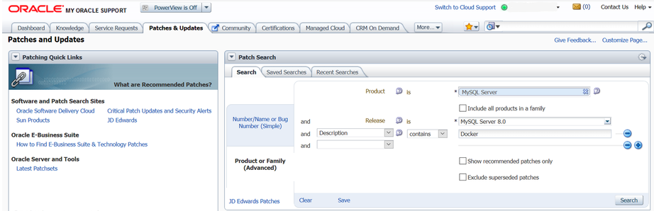

目次
- 2.1 一般的なインストールガイド
- 2.2 一般的なバイナリを使用した MySQL の Unix/Linux へのインストール
- 2.3 Microsoft Windows に MySQL をインストールする
- 2.4 macOS への MySQL のインストール
- 2.5 Linux に MySQL をインストールする
- 2.5.1 MySQL Yum リポジトリを使用して MySQL を Linux にインストールする
- 2.5.2 MySQL APT リポジトリを使用して MySQL を Linux にインストールする
- 2.5.3 MySQL SLES リポジトリを使用して MySQL を Linux にインストールする
- 2.5.4 Oracle の RPM パッケージを使用した Linux への MySQL のインストール
- 2.5.5 オラクルからの Debian パッケージを使用して MySQL を Linux にインストールする
- 2.5.6 Docker での Linux への MySQL のデプロイ
- 2.5.7 ネイティブソフトウェアリポジトリから MySQL を Linux にインストールする
- 2.5.8 Juju を使用した Linux への MySQL のインストール
- 2.5.9 systemd を使用した MySQL Server の管理
- 2.6 Unbreakable Linux Network (ULN) を使用した MySQL のインストール
- 2.7 Solaris への MySQL のインストール
- 2.8 FreeBSD に MySQL をインストールする
- 2.9 ソースから MySQL をインストールする
- 2.10 インストール後のセットアップとテスト
- 2.11 MySQL のアップグレード
- 2.11.1 始める前に
- 2.11.2 アップグレードパス
- 2.11.3 MySQL のアップグレードプロセスの内容
- 2.11.4 MySQL 8.0 での変更
- 2.11.5 アップグレード用のインストールの準備
- 2.11.6 Unix/Linux での MySQL バイナリまたはパッケージベースのインストールのアップグレード
- 2.11.7 MySQL Yum リポジトリを使用する MySQL のアップグレード
- 2.11.8 MySQL APT リポジトリを使用する MySQL のアップグレード
- 2.11.9 MySQL SLES リポジトリを含む MySQL のアップグレード
- 2.11.10 Windows 上の MySQL をアップグレードする
- 2.11.11 MySQL の Docker インストールのアップグレード
- 2.11.12 アップグレードのトラブルシューティング
- 2.11.13 テーブルまたはインデックスの再作成または修復
- 2.11.14 MySQL データベースのほかのマシンへのコピー
- 2.12 MySQL のダウングレード
- 2.13 Perl のインストールに関する注釈
この章では MySQL の取得とインストールの方法を説明します。 最初に手順の概要を、後半のセクションで詳細を説明します。 MySQL をはじめてインストールするのではなく、現行のバージョンの MySQL を新しいバージョンにアップグレードする場合は、セクション2.11「MySQL のアップグレード」 を参照してください。アップグレードの手順およびアップグレード前に考慮すべき問題点に関する情報を記載しています。
別のデータベースシステムから MySQL に移行する場合は、セクションA.8「MySQL 8.0 FAQ: 移行」 を参照してください。この セクションA.8「MySQL 8.0 FAQ: 移行」 には、移行の問題に関する一般的な質問への回答が含まれています。
MySQL のインストールは、一般に次の手順に従います。
使用しているプラットフォームで MySQL が動作し、サポートされているかどうかを判断します。
すべてのプラットフォームが MySQL の実行に等しく適しているわけではなく、MySQL が実行されることがわかっているすべてのプラットフォームが Oracle Corporation によって公式にサポートされているわけではないことに注意してください。 公式にサポートされているプラットフォームの詳細は、MySQL web サイトの https://www.mysql.com/support/supportedplatforms/database.html を参照してください。
インストールする配布を選択します。
MySQL には使用可能なバージョンがいくつかあり、ほとんどが複数の配布形式で使用可能です。 バイナリ (コンパイル済み) プログラムあるいはソースコードを含むパッケージ済み配布を選択できます。 不確かな場合にはバイナリ配布をご使用ください。 Oracle では、最近の開発を表示して新しいコードをテストするユーザーのために、MySQL ソースコードへのアクセスも提供されます。 どのバージョンのどの配布を選択したらよいかは セクション2.1.2「インストールする MySQL のバージョンと配布の選択」 を参照してください。
インストールする配布をダウンロードします。
その手順は、セクション2.1.3「MySQL の取得方法」を参照してください。 配布の完全性を確認するには、セクション2.1.4「MD5 チェックサムまたは GnuPG を用いたパッケージの完全性の確認」 の指示に従ってください。
配布をインストールします。
MySQL をバイナリの配布からインストールするには、セクション2.2「一般的なバイナリを使用した MySQL の Unix/Linux へのインストール」 を参照してください。
MySQL をソースの配布からインストールする、あるいは現在の開発ソースツリーからインストールする場合は、セクション2.9「ソースから MySQL をインストールする」 を参照してください。
インストール後のセットアップが必要な場合は実行します。
MySQL のインストール後に、MySQL サーバーが正しく動作していることを確認するには、セクション2.10「インストール後のセットアップとテスト」 を参照してください。 セクション2.10.4「初期 MySQL アカウントの保護」 の情報も参照してください。 このセクションでは、最初の MySQL
rootユーザーアカウントを割り当てるまでパスワードを持たないを保護する方法について説明します。 このセクションはバイナリ配布およびソース配布の MySQL のインストールの両方に適用されます。MySQL のベンチマークスクリプトを実行する場合、Perl の MySQL サポートが必要になります。 セクション2.13「Perl のインストールに関する注釈」を参照してください。
さまざまなプラットフォームおよび環境での MySQL のインストール手順は、プラットフォーム別に提供されます。
Unix、Linux、FreeBSD
一般的なバイナリ (たとえば、
.tar.gzパッケージ) を使用して MySQL をほとんどの Linux および Unix プラットフォームにインストールする手順は、セクション2.2「一般的なバイナリを使用した MySQL の Unix/Linux へのインストール」 を参照してください。MySQL をすべてソースコード配布またはソースコードリポジトリからビルドする場合の詳細は、セクション2.9「ソースから MySQL をインストールする」を参照してください。
インストール、構成、およびソースからのビルドに関するプラットフォーム固有のヘルプは、対応するプラットフォームのセクションを参照してください。
Linux (配布固有の方法を含む) は、セクション2.5「Linux に MySQL をインストールする」 を参照してください。
IBM AIX は、セクション2.7「Solaris への MySQL のインストール」 を参照してください。
FreeBSD は、セクション2.8「FreeBSD に MySQL をインストールする」 を参照してください。
Microsoft Windows
MySQL Installer または圧縮バイナリを使用して Microsoft Windows に MySQL をインストールする手順は、セクション2.3「Microsoft Windows に MySQL をインストールする」 を参照してください。
Microsoft Visual Studio を使用して MySQL をソースコードからビルドする方法の詳細は、セクション2.9「ソースから MySQL をインストールする」 を参照してください。
macOS
バイナリパッケージ形式とネイティブ PKG 形式の両方の使用を含む、macOS へのインストールについては、セクション2.4「macOS への MySQL のインストール」 を参照してください。
macOS 起動デーモンを使用して MySQL を自動的に起動および停止する方法の詳細は、セクション2.4.3「MySQL 起動デーモンのインストールおよび使用」 を参照してください。
MySQL Preference Pane については、セクション2.4.4「MySQL Preference Pane のインストールと使用」 を参照してください。
次の数セクションには、配布の選択、ダウンロード、および確認に必要な情報が含まれています。 この章の次のセクション以降で、選択した配布のインストールの方法を説明します。 バイナリ配布については、セクション2.2「一般的なバイナリを使用した MySQL の Unix/Linux へのインストール」 の指示、または使用しているプラットフォームに対応するセクションがあればそちらを参照してください。 MySQL をソースからビルドするには、セクション2.9「ソースから MySQL をインストールする」 を参照してください。
MySQL プラットフォームのサポートは時間の経過とともに進化します。最新の更新については、https://www.mysql.com/support/supportedplatforms/database.html を参照してください。
MySQL のインストールを準備するときに、使用するバージョンと配布形式 (バイナリまたはソース) を決定します。
まず、開発リリースと General Availability (GA) リリースのどちらをインストールするかを決定します。 開発リリースには最新の機能がありますが、本番での使用は推奨されません。 GA リリースは、本番リリースまたは安定リリースとも呼ばれ、本番で使用するためのものです。 最新の GA リリースを使用することをお勧めします。
MySQL 8.0 のネーミングスキームでは、3 つの数字とオプションの接尾辞 (mysql-8.0.1-dmr など) で構成されるリリース名を使用します。 リリース名の番号は次のように解釈されます。
最初の番号 (8) はメジャーバージョン番号です。
2 番目の番号 (0) はマイナーバージョン番号です。 メジャー番号とマイナー番号が一緒にリリースシリーズ番号を構成します。 シリーズ番号は、安定した機能セットを説明します。
3 番目の番号 (1) はリリースシリーズ内でのバージョン番号です。 これは、新しいバグ修正リリースごとに増分されます。 ほとんどの場合、シリーズ内の最新バージョンが最適な選択肢です。
リリース名には、リリースの安定性レベルを示す接尾辞を含めることもできます。 シリーズ内のリリースは、サフィクスが順に進展していくことで、安定性レベルの改善を示します。 サフィクスには次のようなものがあります。
dmr は、開発マイルストンリリース (DMR) を示します。 MySQL 開発では、マイルストンモデルを使用します。マイルストンモデルでは、各マイルストンに完全にテストされた機能の小さなサブセットが導入されます。 あるマイルストンから次のマイルストンに至るまで、これらの早期リリースを試行するコミュニティメンバーから提供されたフィードバックに基づいて、機能インタフェースが変更されたり、機能が削除されたりする場合があります。 マイルストーンリリース内の機能は、試作レベルの品質であるとみなされます。
rc は、リリース候補 (RC) を示します。 リリース候補は安定しているとみなされ、すべての MySQL 内部テストに合格しています。 RC リリースでは新機能がまだ導入されている可能性がありますが、フォーカスはバグの修正に移り、シリーズの前半で導入された機能を安定させます。
接尾辞がない場合は、General Availability (GA) または Production リリースを示します。 GA リリースは安定しており、以前のリリース段階を正常に通過しており、信頼性が高く、深刻なバグがないと考えられ、本番システムでの使用に適しています。
シリーズ内での開発は DMR リリースから始まり、その後 RC リリースが続き、最後に GA ステータスリリースに到達します。
インストールする MySQL のバージョンを選択した後、オペレーティングシステムにインストールする配布形式を決定します。 ほとんどのユースケースでは、バイナリ配布を選択するのが適切です。 バイナリ配布は、Linux の RPM パッケージや macOS の DMG パッケージなど、多くのプラットフォームでネイティブ形式で使用できます。 配布は、Zip アーカイブや圧縮 tar ファイルなど、より一般的な形式でも利用可能です。 Windows では、MySQL Installer を使用してバイナリ配布をインストールできます。
状況によっては、ソース配布から MySQL をインストールすることをお薦めします:
MySQL を明示的な場所にインストールしたい場合。 標準のバイナリの配布はインストールの場所にかかわらずすぐに動作しますが、MySQL コンポーネントを希望する場所に配置することで柔軟性をさらに向上させる必要に駆られる場合があります。
標準バイナリ配布に含まれていない可能性のある機能を使用して mysqld を構成する場合。 機能の可用性を確保するために使用される最も一般的な追加オプションのリストを次に示します:
TCP ラッパーサポートのための
-DWITH_LIBWRAP=1。圧縮に依存する機能のための
-DWITH_ZLIB={system|bundled}デバッグサポートのための
-DWITH_DEBUG=1
詳細は セクション2.9.7「MySQL ソース構成オプション」 を参照してください。
mysqld を、標準のバイナリの配布に含まれる一部の機能を使用しないように構成する場合。
あなたは、MySQL を構成する C および C++ コードを読み取ったり変更しようと考えています。 この目的のために、ソース配布を取得します。
ソースの配布には、バイナリの配布より多くのテストおよび例が含まれています。
MySQL の最新バージョンおよびダウンロードの説明書については、ダウンロードページ https://dev.mysql.com/downloads/ を参照してください。
パッケージ管理システムとして Yum を使用する RPM ベースの Linux プラットフォームでは、MySQL Yum Repository を使用して MySQL をインストールできます。 詳細は、セクション2.5.1「MySQL Yum リポジトリを使用して MySQL を Linux にインストールする」 を参照してください。
Debian ベースの Linux プラットフォームの場合、MySQL は「MySQL APT リポジトリ」を使用してインストールできます。 詳細は、セクション2.5.2「MySQL APT リポジトリを使用して MySQL を Linux にインストールする」 を参照してください。
SUSE Linux Enterprise Server (SLES) プラットフォームでは、MySQL SLES Repository を使用して MySQL をインストールできます。 詳細は、セクション2.5.3「MySQL SLES リポジトリを使用して MySQL を Linux にインストールする」 を参照してください。
最新の開発ソースの取得については、セクション2.9.5「開発ソースツリーを使用して MySQL をインストールする」 を参照してください。
ニーズに合った MySQL パッケージをダウンロードした後、インストールする前に、パッケージがそのままで、改ざんされていないことを確認します。 完全性の確認には 3 つの方法があります。
MD5 チェックサム
GnuPG(GNU Privacy Guard) を使用した暗号署名RPM パッケージの場合、内蔵 RPM 完全性確認メカニズム
次のセクションではこれらの方法の使用方法について説明します。
MD5 チェックサムまたは GPG 署名が一致しない場合には、別のミラーサイトから対応するパッケージを再度ダウンロードします。
MySQL パッケージをダウンロードしたら、MD5 チェックサムが MySQL のダウンロードページのチェックサムと一致することを確認してください。 各パッケージには固有のチェックサムがあり、ダウンロードしたパッケージに対して確認できます。 各 MySQL 製品のダウンロードページに正しい MD5 チェックサムがリストされます。ダウンロードするファイル (製品) の MD5 チェックサムと比較する必要があります。
各オペレーティングシステムおよびセットアップで、MD5 チェックサムをチェックするための独自のツールが提供されています。 通常、このコマンドは md5sum という名前か、または md5 という名前で、一部のオペレーティングシステムではまったく提供されていません。 Linux の場合は GNU テキストユーティリティーパッケージの一部で、さまざまなプラットフォームに利用できます。 ソースコードを http://www.gnu.org/software/textutils/ からダウンロードすることもできます。 OpenSSL がインストールされている場合は、代わりにコマンド openssl md5 package_name を使用できます。 md5 コマンド行ユーティリティーの Windows 実装は、http://www.fourmilab.ch/md5/ から入手できます。winMd5Sum はグラフィカルな MD5 チェックツールで、http://www.nullriver.com/index/products/winmd5sum から入手できます。 Microsoft Windows の例では、md5.exe という名前を想定しています。
Linux および Microsoft Windows の例
shell> md5sum mysql-standard-8.0.25-linux-i686.tar.gz
aaab65abbec64d5e907dcd41b8699945 mysql-standard-8.0.25-linux-i686.tar.gz
shell> md5.exe mysql-installer-community-8.0.25.msi
aaab65abbec64d5e907dcd41b8699945 mysql-installer-community-8.0.25.msi
結果のチェックサム (16 進数の文字列) が、ダウンロードページの対応するパッケージの真下のチェックサムと一致していることを確認してください。
アーカイブファイルの内部に含まれるファイルではなく、アーカイブファイル (たとえば .zip、.tar.gz、または .msi ファイル) のチェックサムを必ず確認してください。 つまり、内容を抽出する前のファイルを確認します。
パッケージの完全性および信憑性を確認する別の方法は、暗号署名を使用するものです。 これは、MD5 チェックサムを使用するより信頼性が高いですが、手間がかかります。
MySQL のダウンロード可能なパッケージは、GnuPG (GNU Privacy Guard) を使用して署名されます。 GnuPG は、Phil Zimmerman 氏の周知の Pretty Good Privacy (PGP) のオープンソース版です。 ほとんどの Linux の配布にはデフォルトで GnuPG がインストールされています。 それ以外の場合は、GnuPG の詳細およびそれを取得してインストールする方法について、http://www.gnupg.org/ を参照してください。
特定のパッケージの署名を確認するには、まず公開 GPG ビルド鍵を取得する必要があります。これは http://pgp.mit.edu/ からダウンロードできます。 取得する鍵は mysql-build@oss.oracle.com という名前です。 または、次のテキストから直接キーをコピーして貼り付けることもできます:
-----BEGIN PGP PUBLIC KEY BLOCK----- Version: GnuPG v1 mQGiBD4+owwRBAC14GIfUfCyEDSIePvEW3SAFUdJBtoQHH/nJKZyQT7h9bPlUWC3 RODjQReyCITRrdwyrKUGku2FmeVGwn2u2WmDMNABLnpprWPkBdCk96+OmSLN9brZ fw2vOUgCmYv2hW0hyDHuvYlQA/BThQoADgj8AW6/0Lo7V1W9/8VuHP0gQwCgvzV3 BqOxRznNCRCRxAuAuVztHRcEAJooQK1+iSiunZMYD1WufeXfshc57S/+yeJkegNW hxwR9pRWVArNYJdDRT+rf2RUe3vpquKNQU/hnEIUHJRQqYHo8gTxvxXNQc7fJYLV K2HtkrPbP72vwsEKMYhhr0eKCbtLGfls9krjJ6sBgACyP/Vb7hiPwxh6rDZ7ITnE kYpXBACmWpP8NJTkamEnPCia2ZoOHODANwpUkP43I7jsDmgtobZX9qnrAXw+uNDI QJEXM6FSbi0LLtZciNlYsafwAPEOMDKpMqAK6IyisNtPvaLd8lH0bPAnWqcyefep rv0sxxqUEMcM3o7wwgfN83POkDasDbs3pjwPhxvhz6//62zQJ7Q2TXlTUUwgUmVs ZWFzZSBFbmdpbmVlcmluZyA8bXlzcWwtYnVpbGRAb3NzLm9yYWNsZS5jb20+iGwE ExECACwCGyMCHgECF4ACGQEGCwkIBwMCBhUKCQgCAwUWAgMBAAUCXEBY+wUJI87e 5AAKCRCMcY07UHLh9RZPAJ9uvm0zlzfCN+DHxHVaoFLFjdVYTQCfborsC9tmEZYa whhogjeBkZkorbyIaQQTEQIAKQIbIwYLCQgHAwIEFQIIAwQWAgMBAh4BAheAAhkB BQJTAdRmBQkaZsvLAAoJEIxxjTtQcuH1X4MAoKNLWAbCBUj96637kv6Xa/fJuX5m AJwPtmgDfjUe2iuhXdTrFEPT19SB6ohmBBMRAgAmAhsjBgsJCAcDAgQVAggDBBYC AwECHgECF4AFAk53PioFCRP7AhUACgkQjHGNO1By4fUmzACeJdfqgc9gWTUhgmcM AOmG4RjwuxcAoKfM+U8yMOGELi+TRif7MtKEms6piGkEExECACkCGyMGCwkIBwMC BBUCCAMEFgIDAQIeAQIXgAIZAQUCUZSROgUJFTchqgAKCRCMcY07UHLh9YtAAJ9X rA/ymlmozPZn+A9ls8/uwMcTsQCfaQMNq1dNkhH2kyByc3Rx9/W2xfqJARwEEAEC AAYFAlAS6+UACgkQ8aIC+GoXHivrWwf/dtLk/x+NC2VMDlg+vOeM0qgG1IlhXZfi NsEisvvGaz4m8fSFRGe+1bvvfDoKRhxiGXU48RusjixzvBb6KTMuY6JpOVfz9Dj3 H9spYriHa+i6rYySXZIpOhfLiMnTy7NH2OvYCyNzSS/ciIUACIfH/2NH8zNT5CNF 1uPNRs7HsHzzz7pOlTjtTWiF4cq/Ij6Z6CNrmdj+SiMvjYN9u6sdEKGtoNtpycgD 5HGKR+I7Nd/7v56yhaUe4FpuvsNXig86K9tI6MUFS8CUyy7Hj3kVBZOUWVBM053k nGdALSygQr50DA3jMGKVl4ZnHje2RVWRmFTr5YWoRTMxUSQPMLpBNIkBHAQQAQIA BgUCU1B+vQAKCRAohbcD0zcc8dWwCACWXXWDXIcAWRUw+j3ph8dr9u3SItljn3wB c7clpclKWPuLvTz7lGgzlVB0s8hH4xgkSA+zLzl6u56mpUzskFl7f1I3Ac9GGpM4 0M5vmmR9hwlD1HdZtGfbD+wkjlqgitNLoRcGdRf/+U7x09GhSS7Bf339sunIX6sM gXSC4L32D3zDjF5icGdb0kj+3lCrRmp853dGyA3ff9yUiBkxcKNawpi7Vz3D2ddU pOF3BP+8NKPg4P2+srKgkFbd4HidcISQCt3rY4vaTkEkLKg0nNA6U4r0YgOa7wIT SsxFlntMMzaRg53QtK0+YkH0KuZR3GY8B7pi+tlgycyVR7mIFo7riQEcBBABCAAG BQJWgVd0AAoJEEZu4b/gk4UKk9MH/Rnt7EccPjSJC5CrB2AU5LY2Dsr+PePI2ubP WsEdG82qSjjGpbhIH8LSg/PzQoGHiFWMmmZWJktRT+dcgLbs3b2VwCNAwCE8jOHd UkQhEowgomdNvHiBHKHjP4/lF68KOPiO/2mxYYkmpM7BWf3kB57DJ5CTi3/JLoN7 zF40qIs/p09ePvnwStpglbbtUn7XPO+1/Ee8VHzimABom52PkQIuxNiVUzLVn3bS Wqrd5ecuqLk6yzjPXd2XhDHWC9Twpl68GePru6EzQtusi0m6S/sHgEXqh/IxrFZV JlljF75JvosZq5zeulr0i6kOij+Y1p6MFffihITZ1gTmk+CLvK2JASIEEAECAAwF Ak53QS4FAwASdQAACgkQlxC4m8pXrXwJ8Qf/be/UO9mqfoc2sMyhwMpN4/fdBWwf LkA12FXQDOQMvwH9HsmEjnfUgYKXschZRi+DuHXe1P7l8G2aQLubhBsQf9ejKvRF TzuWMQkdIq+6Koulxv6ofkCcv3d1xtO2W7nb5yxcpVBPrRfGFGebJvZa58DymCNg yGtAU6AOz4veavNmI2+GIDQsY66+tYDvZ+CxwzdYu+HDV9HmrJfc6deM0mnBn7SR jqzxJPgoTQhihTav6q/R5/2p5NvQ/H84OgS6GjosfGc2duUDzCP/kheMRKfzuyKC OHQPtJuIj8++gfpHtEU7IDUX1So3c9n0PdpeBvclsDbpRnCNxQWU4mBot4kBIgQQ AQIADAUCToi2GQUDABJ1AAAKCRCXELibyletfLZAB/9oRqx+NC98UQD/wlxCRytz vi/MuPnbgQUPLHEap10tvEi33S/H/xDR/tcGofY4cjAvo5skZXXeWq93Av7PACUb zkg0X0eSr2oL6wy66xfov72AwSuX+iUK68qtKaLqRLitM02y8aNRV/ggKvt7UMvG mOvs5yLaYlobyvGaFC2ClfkNOt2MlVnQZCmnYBCwOktPGkExiu2yZMifcYGxQcpH KVFG59KeF2cM2d4xYM8HJqkSGGW306LFVSyeRwG+wbttgLpD5bM/T2b3fF/J35ra CSMLZearRTq8aygPl+XM7MM2eR946aw6jmOsgNBErbvvIdQj6LudAZj+8imcXV2K iQEiBBABAgAMBQJOmdnRBQMAEnUAAAoJEJcQuJvKV618AvIIAIEF1ZJ+Ry7WOdKF 5oeQ/ynaYUigzN92fW/9zB8yuQlngkFJGidYMbci1tR1siziIVJFusR3ZonqAPGK /SUta9Y6KWLhmc7c5UnEHklq/NfdMZ2WVSIykXlctqw0sbb+z1ecEd4G8u9j5ill MO1B36rQayYAPoeXLX8dY4VyFLVGaQ00rWQBYFZrpw16ATWbWGJP332NSfCk4zZq 6kXEW07q0st3YBgAAGdNQyEeZCa4d4pBRSX6189Kjg6GDnIcaiOF6HO6PLr9fRlL r5ObCgU+G9gEhfiVwDEV9E+7/Bq2pYZ9whhkBqWQzdpXTNTM24uaEhE01EPO5zeC O214q6mJASIEEAECAAwFAk6rpgEFAwASdQAACgkQlxC4m8pXrXzAhwf/f9O99z16 3Y5FZVIxexyqXQ/Mct9uKHuXEVnRFYbA49dQLD4S73N+zN7gn9jFeQcBo4w8qVUV 94U/ta/VbLkdtNREyplPM4XY8YE5Wfd9bfyg3q1PbEiVjk995sBF+2+To99YYKst gXPqjlH0jUfEyDmexOj+hsp8Rc63kvkIx36VBa4ONRYFefGAhKDMigL2YAhc1UkG tkGTuLmlCGwIV6lviDZD3RJf5375VFnaHv7eXfwQxCwE+BxG3CURrjfxjaxMTmMP yAG2rhDp5oTUEvqDYNbko5UxYOmrSjvF4FzXwqerElXJUkUzSh0pp7RxHB/1lCxD s7D1F1hlgFQuNIkBIgQQAQIADAUCTrzZHAUDABJ1AAAKCRCXELibyletfMUpB/4s 07dREULIBnA1D6qr3fHsQJNZqbAuyDlvgGGLWzoyEDs+1JMFFlaa+EeLIo1386GU 2DammDC23p3IB79uQhJeD2Z1TcVg4cA64SfF/CHca5coeRSrdAiudzU/cgLGtXIP /OaFamXgdMxAhloLFbSHPCZkyb00phVa8+xeIVDrK1HByZsNIXy/SSK8U26S2PVZ 2o14fWvKbJ1Aga8N6DuWY/D8P2mi3RAbiuZgfzkmKL5idH/wSKfnFKdTgJzssdCc 1jZEGVk5rFYcWOrJARHeP/tsnb/UxKBEsNtO7e3N2e/rLVnEykVIO066hz7xZK/V NBSpx3k3qj4XPK41IHy2iQEiBBABAgAMBQJOzqO8BQMAEnUAAAoJEJcQuJvKV618 2twH/0IzjXLxN45nvIfEjC75a+i9ZSLlqR8lsHL4GpEScFKI0a0lT4IVAIY2RKG+ MAs2eHm0UfKuwGs5jluRZ9RqKrc61sY0XQV9/7znY9Db16ghX04JjknOKs/fPi87 rvKkB/QxJWS8qbb/erRmW+cPNjbRxTFPS5JIwFWHA16ieFEpvdAgKV6nfvJVTq1r jPDcnIA9CJN2SmUFx9Qx3SRc6ITbam1hjFnY6sCh6AUhxLI2f1mq1xH9PqEy42Um 68prRqTyJ7Iox1g/UDDkeeUcAg7T1viTz7uXpS3Wrq4zzo4yOpaJfLDR3pI5g2Zk SNGTMo6aySE4OABt8i1Pc1Pm6AmJASIEEAECAAwFAk7yPFYFAwASdQAACgkQlxC4 m8pXrXzXiAf9FrXe0lgcPM+tYOWMLhv5gXJi2VUBaLxpyRXm/kJcmxInKq1GCd3y D4/FLHNu3ZcCz/uklPAbZXWI0O6ewq0LWsRtklmJjWiedH+hGyaTv95VklojRIBd 8nBaJ6M98rljMBHTFwWvjQFVf4FLRJQZqHlvjcCkq2Dd9BWJpGXvr/gpKkmMJYNK /ftfZRcChb35NI19WRpOhj9u808OPcqKVvZBcPwFGV5cEBzmAC94J7JcD8+S8Ik8 iUJMQGGL3QcmZOBozovh86hj7KTSEBHlLXl832z89H1hLeuLbnXoGLv3zeUFSxkv 1h35LhZLqIMDQRXLuUzxGHMBpLhPyGWRJ4kBIgQQAQIADAUCTwQJFwUDABJ1AAAK CRCXELibyletfABvB/9Cy69cjOqLGywITs3Cpg//40jmdhSAVxilJivP6J5bubFH DJlVTx541Dv5h4hTG2BQuueQ4q1VCpSGW+rHcdhPyvmZGRz1rxdQQGh1Dv0Bod2c 3PJVSYPSrRSwCZJkJHOtVRBdjK4mkZb5aFTza+Tor9kxzj4FcXVd4KAS+hHQHYHc Ar8tt2eOLzqdEFTULeGiSoNn+PVzvzdfhndphK+8F2jfQ2UKuc01O7k0Yn9xZVx0 OG6fE1gStzLv7C5amWLRd8+xh+MN0G8MgNglpBoExsEMMlPBYSUHa6lxpdMNMuib rIyVncE9X8QOhImt8K0sNn/EdbuldJNGYbDLt7O4iQEiBBABAgAMBQJPFdTcBQMA EnUAAAoJEJcQuJvKV6184owH+wZ/uLpezXnSxigeH1sig72QEXMrNd5DVHCJdig3 bo+K5YmmN710/m5z+63XKUEWpd6/knajObgckThzWftNeK1SSFQGPmoYZP9EZnSU 7L+/dSUpExbj842G5LYagrCyMGtlxRywWEmbi72TKS/JOK0jLiOdvVy+PHrZSu0D TVQ7cJh1BmPsbz7zzxjmcI5l+7B7K7RHZHq45nDLoIabwDacj7BXvBK0Ajqz4QyJ GQUjXC7q+88I+ptPvOXlE5nI/NbiCJOMI6d/bWN1KwYrC80fZuFaznfQFcPyUaDw yRaun+K3kEji2wXecq+yMmLUEp01TKsUeOL50HD6hHH07W+JASIEEAECAAwFAk85 bQsFAwASdQAACgkQlxC4m8pXrXwKPQgAlkbUsTr7nkq+haOk0jKpaHWEbRMEGMrB I3F7E+RDO6V/8y4Jtn04EYDc8GgZMBah+mOgeINq3y8jRMYV5jVtZXv2MWYFUcjM kVBKeqhi/pGEjmUdmdt3DlPv3Z+fMTMRmAocI981iY/go8PVPg/+nrR6cFK2xxnO R8TacikJBFeSfkkORg1tDzjjYv1B5ZIEkpplepl5ahJBBq7cpYhTdY6Yk0Sz0J8w EdffLSaNxrRuWLrRhWzZU7p9bFzfb/7OHc21dJnB7wKv5VvtgE+jiQw9tOKaf5hc SgRYuF6heu+B25gc5Uu88lo409mZ7oxQ6hDCn7JHvzh0rhmSN+Kid4kBIgQQAQIA DAUCT0qQrQUDABJ1AAAKCRCXELibyletfC9UB/4o2ggJYM0CLxEpP0GU8UKOh3+/ zm1DN7Qe4kY2iCtF1plKHQaTgt5FlgRCFaiXcVv7WzGz/FnmxonR1leLl+kfRlwy PPnoI/AWPCy/NO4Cl5KnjsSmsdDUpObwZ4KYsdilZR7ViJu2swdAIgnXBUwrlRJR 7CK4TAKrTeonRgVSrVx8Vt//8/cYj73CLq8oY/KK0iHiQrSwo44uyhdiFIAssjyX n6/2E+w0zgvPexNSNNROHQ8pjbq+NTY6GwKIGsaej3UTRwQ7psvKXz8y7xdzmOAr /khGvxB5gjkx02pimjeia8v66aH6rbnojJMAovNUS4EHdHnulv4rovC8Kf9iiQEi BBABAgAMBQJPVdsaBQMAEnUAAAoJEJcQuJvKV618vVEIALFXPBzcAO1SnQarBLzy YMVZZumPvSXKnUHAO+6kjApXPJ+qFRdUaSNshZxVKY9Zryblu4ol/fLUTt0CliSD IxD6L4GXEm4VYYCl4lPO3bVsJnGITLFwQGHM27EmjVoTiD8Ch7kPq2EXr3dMRgzj pdz+6aHGSUfOdLTPXufDvW83bEWGaRVuTJKw+wIrcuRqQ+ucWJgJGwcE4zeHjZad Jx1XUm1X+BbI73uiQussyjhhQVVNU7QEdrjyuscaZ/H38wjUwNbylxDPB4I8quC1 knQ0wSHr7gKpM+E9nhiS14poRqU18u78/sJ2MUPXnQA6533IC238/LP8JgqB+BiQ BTSJASIEEAECAAwFAk9ng3cFAwASdQAACgkQlxC4m8pXrXxQRAf/UZlkkpFJj1om 9hIRz7gS+l7YvTaKSzpo+TBcx3C7aqKJpir6TlMK9cb9HGTHo2Xp1N3FtQL72NvO 6CcJpBURbvSyb4i0hrm/YcbUC4Y3eajWhkRS3iVfGNFbc/rHthViz0r6Y5lhXX16 aVkDv5CIFWaF3BiUK0FnHrZiy4FPacUXCwEjv3uf8MpxV5oEmo8Vs1h4TL3obyUz qrImFrEMYE/12lkE8iR5KWCaF8eFyl56HL3PPl90JMQBXzhwsFoWCPuwjfM5w6sW Ll//zynwxtlJ9CRz9c2vK6aJ8DRu3OfBKN1iiEcNEynksDnNXErn5xXKz3p5pYdq e9BLzUQCDYkBIgQQAQIADAUCT3inRgUDABJ1AAAKCRCXELibyletfGMKCADJ97qk geBntQ+tZtKSFyXznAugYQmbzJld8U6eGSQnQkM40Vd62UZLdA8MjlWKS8y4A4L2 0cI14zs5tKG9Q72BxQOw5xkxlLASw1/8WeYEbw7ZA+sPG//q9v3kIkru3sv64mMA enZtxsykexRGyCumxLjzlAcL1drWJGUYE2Kl6uzQS7jb+3PNBloQvz6nb3YRZ+Cg Ly9D41SIK+fpnV8r4iqhu7r4LmAQ7Q1DF9aoGaYvn2+xLGyWHxJAUet4xkMNOLp6 k9RF1nbNe4I/sqeCB25CZhCTEvHdjSGTD2yJR5jfoWkwO9w8DZG1Q9WrWqki4hSB l0cmcvO34pC1SJYziQEiBBABAgAMBQJPinQFBQMAEnUAAAoJEJcQuJvKV618CFEI AJp5BbcV7+JBMRSvkoUcAWDoJSP2ug9zGw5FB8J90PDefKWCKs5Tjayf2TvM5ntq 5DE9SGaXbloIwa74FoZlgqlhMZ4AtY9Br+oyPJ5S844wpAmWMFc6NnEPFaHQkQ+b dJYpRVNd9lzagJP261P3S+S9T2UeHVdOJBgWIq9Mbs4lnZzWsnZfQ4Lsz0aPqe48 tkU8hw+nflby994qIwNOlk/u+I/lJbNz5zDY91oscXTRl2jV1qBgKYwwCXxyB3j9 fyVpRl+7QnqbTWcCICVFL+uuYpP0HjdoKNqhzEguAUQQLOB9msPTXfa2hG+32ZYg 5pzI5V7GCHq0KO6u5Ctj3TGJASIEEAECAAwFAk+cQEEFAwASdQAACgkQlxC4m8pX rXzi7AgAx8wJzNdD7UlgdKmrAK//YqH7arSssb33Xf45sVHDpUVA454DXeBrZpi+ zEuo03o5BhAuf38cwfbkV6jN1mC2N0FZfpy4v7RxHKLYr7tr6r+DRn1L1giX5ybx CgY0fLAxkwscWUKGKABWxkz9b/beEXaO2rMt+7DBUdpAOP5FNRQ8WLRWBcMGQiaT S4YcNDAiNkrSP8CMLQP+04hQjahxwCgBnksylciqz3Y5/MreybNnTOrdjVDsF0Oe t0uLOiWXUZV1FfaGIdb/oBQLg+e1B74p5+q3aF8YI97qAZpPa1qiQzWIDX8LX9QX EFyZ3mvqzGrxkFoocXleNPgWT8fRuokBIgQQAQIADAUCT64N/QUDABJ1AAAKCRCX ELibyletfDOGCACKfcjQlSxrWlEUrYYZpoBP7DE+YdlIGumt5l6vBmxmt/5OEhqr +dWwuoiyC5tm9CvJbuZup8anWfFzTTJmPRPsmE4z7Ek+3CNMVM2wIynsLOt1pRFK 4/5RNjRLbwI6EtoCQfpLcZJ//SB56sK4DoFKH28Ok4cplESPnoMqA3QafdSEA/FL qvZV/iPgtTz7vjQkMgrXAIUM4fvKe3iXkAExGXtmgdXHVFoKmHrxJ2DTSvM7/19z jGJeu2MhIKHyqEmCk6hLjxyCE5pAH59KlbAQOP1bS28xlRskBApm2wN+LOZWzC62 HhEReQ50inCGuuubK0PqUQnyYc+lUFxrFpcliQEiBBABAgAMBQJPv9lVBQMAEnUA AAoJEJcQuJvKV618AzgH/iRFFCi4qjvoqji1fi7yNPZVOMMO2H13Ks+AfcjRtHuV aa30u50ND7TH+XQe6yerTapLh3aAm/sNP99aTxIuwRSlyKEoDs93+XVSgRqPBgbF /vxv0ykok3p6L9DxFO/w5cL8JrBhMZoJrEkIBFkwN8tWlcXPRFQvcdBYv3M3DTZU qY+UHnOxHvSzsl+LJ0S9Xcd9C5bvYfabmYJvG5eRS3pj1L/y3a6yw6hvY+JtnQAk t05TdeHMIgQH/zb8V9wxDzmE0un8LyoC2Jx5TpikQsJSejwK6b3coxVBlngku6+C qDAimObZLw6H9xYYIK0FoJs7j5bQZEwUO7OLBgjcMOqJASIEEAECAAwFAk/Rpc8F AwASdQAACgkQlxC4m8pXrXw49Qf/TdNbun2htQ+cRWarszOx8BLEiW/x6PVyUQpZ nV/0qvhKzlJUjM9hQPcA0AsOjhqtCN6Cy8KXbK/TvPm9D/Nk6HWwD1PomzrJVFk2 ywGFIuTR+lluKSp7mzm5ym0wJs5cPq731Im31RUQU8ndjLrq9YOf5FVL8NqmcOAU 4E8d68BbmVCQC5MMr0901FKwKznShfpy7VYN25/BASj8dhnynBYQErqToOJB6Cnd JhdTlbfR4SirqAYZZg3XeqGhByytEHE1x7FMWWFYhdNtsnAVhYBbWqAzBs8lF9Jd Mhaf0VQU/4z10gVrRtXLR/ixrCi+P4cM/fOQkqd6pwqWkaXt6okBIgQQAQIADAUC T+NxIAUDABJ1AAAKCRCXELibyletfFBBCAC6+0TUJDcNaqOxOG1KViY6KYg9NCL8 pwNK+RKNK/N1V+WGJQH7qDMwRoOn3yogrHax4xIeOWiILrvHK0O6drS1DjsymIhR Sm2XbE/8pYmEbuJ9vHh3b/FTChmSAO7dDjSKdWD3dvaY8lSsuDDqPdTX8FzOfrXC M22C/YPg7oUG2A5svE1b+yismP4KmVNWAepEuPZcnEMPFgop3haHg9X2+mj/btDB Yr6p9kAgIY17nigtNTNjtI0dMLu43aIzedCYHqOlNHiB049jkJs54fMGBjF9qPtc m0k44xyKd1/JXWMdNUmtwKsChAXJS3YOciMgIx6tqYUTndrP4I6q1rfriQEiBBAB AgAMBQJP9T1VBQMAEnUAAAoJEJcQuJvKV618J9wIAI1lId9SMbEHF6PKXRe154lE pap5imMU/lGTj+9ZcXmlf8o2PoMMmb3/E1k+EZUaeSBoOmjS8C2gwd5XFwRrlwAD RlK/pG5XsL4h5wmN2fj1ororrJXvqH427PLRQK9yzdwG4+9HTBOxjoS8qZT9plyK AJZzAydAMqyseRHgNo0vMwlgrs4ojo+GcFGQHrF3IaUjvVfUPOmIj7afopFdIZmI GaSF0TXBzqcZ1chFv/eTBcIuIKRvlaDee5FgV7+nLH2nKOARCLvV/+8uDi2zbr83 Ip5x2tD3XuUZ0ZWxD0AQWcrLdmGb4lkxbGxvCtsaJHaLXWQ2m760RjIUcwVMEBKJ ASIEEAECAAwFAlAGYWsFAwASdQAACgkQlxC4m8pXrXwyVAgAvuvEl6yuGkniWOlv uHEusUv/+2GCBg6qV+IEpVtbTCCgiFjYR5GasSp1gpZ5r4BocOlbGdjdJGHTpyK8 xD1i+6qZWUYhNRg2POXUVzcNEl2hhouwPLOifcmTwAKU76TEv3L5STviL3hWgUR2 yEUZ3Ut0IGVV6uPER9jpR3qd6O3PeuFkwf+NaGTye4jioLAy3aYwtZCUXzvYmNLP 90K4y+5yauZteLmNeq26miKC/NQu4snNFClPbGRjHD1ex9KDiAMttOgN4WEq7srT rYgtT531WY4deHpNgoPlHPuAfC0H+S6YWuMbgfcb6dV+Rrd8Ij6zM3B/PcjmsYUf OPdPtIkBIgQQAQIADAUCUBgtfQUDABJ1AAAKCRCXELibyletfAm3CACQlw21Lfeg d8RmIITsfnFG/sfM3MvZcjVfEAtsY3fTK9NiyU0B3yX0PU3ei37qEW+50BzqiStf 5VhNvLfbZR+yPou7o2MAP31mq3Uc6grpTV64BRIkCmRWg40WMjNI1hv7AN/0atgj ATYQXgnEw7mfFb0XZtMTD6cmrz/A9nTPVgZDxzopOMgCCC1ZK4Vpq9FKdCYUaHpX 3sqnDf+gpVIHkTCMgWLYQOeX5Nl+fgnq6JppaQ3ySZRUDr+uFUs0uvDRvI/cn+ur ri92wdDnczjFumKvz/cLJAg5TG2Jv1Jx3wecALsVqQ3gL7f7vr1OMaqhI5FEBqdN 29L9cZe/ZmkriQEiBBIBCgAMBQJVoNxyBYMHhh+AAAoJEEoz7NUmyPxLD1EH/2eh 7a4+8A1lPLy2L9xcNt2bifLfFP2pEjcG6ulBoMKpHvuTCgtX6ZPdHpM7uUOje/F1 CCN0IPB533U1NIoWIKndwNUJjughtoRM+caMUdYyc4kQm29Se6hMPDfyswXE5Bwe PmoOm4xWPVOH/cVN04zyLuxdlQZNQF/nJg6PMsz4w5z+K6NGGm24NEPcc72iv+6R Uc/ry/7v5cVu4hO5+r104mmNV5yLecQF13cHy2JlngIHXPSlxTZbeJX7qqxE7TQh 5nviSPgdk89oB5jFSx4g1efXiwtLlP7lbDlxHduomyQuH9yqmPZMbkJt9uZDc8Zz MYsDDwlc7BIe5bGKfjqJAhwEEAECAAYFAlSanFIACgkQdzHqU52lcqLdvg//cAEP qdN5VTKWEoDFjDS4I6t8+0KzdDWDacVFwKJ8RAo1M2SklDxnIvnzysZd2VHp5Pq7 i4LYCZo5lDkertQ6LwaQxc4X6myKY4LTA652ObFqsSfgh9kW+aJBBAyeahPQ8CDD +Yl23+MY5wTsj4qt7KffNzy78vLbYnVnvRQ3/CboVix0SRzg0I3Oi7n3B0lihvXy 5goy9ikjzZevejMEfjfeRCgoryy9j5RvHH9PF3fJVtUtHCS4f+kxLmbQJ1XqNDVD hlFzjz8oUzz/8YXy3im5MY7Zuq4P4wWiI7rkIFMjTYSpz/evxkVlkR74qOngT2pY VHLyJkqwh56i0aXcjMZiuu2cymUt2LB9IsaMyWBNJjXr2doRGMAfjuR5ZaittmML yZwix9mWVk7tkwlIxmT/IW6Np0qMhDZcWYqPRpf7+MqY3ZYMK4552b8aDMjhXrnO OwLsz+UI4bZa1r9dguIWIt2C2b5C1RQ9AsQBPwg7h5P+HhRuFAuDKK+vgV8FRuzR JeKkFqwB4y0Nv7BzKbFKmP+V+/krRv+/Dyz9Bz/jyAQgw02u1tPupH9BGhlRyluN yCJFTSNj7G+OLU0/l4XNph5OOC7sy+AMZcsL/gsT/TXCizRcCuApNTPDaenACpbv g8OoIzmNWhh4LXbAUHCKmY//hEw9PvTZA1xKHgyJAhwEEgECAAYFAlJYsKQACgkQ oirk60MpxUV2XQ//b2/uvThkkbeOegusDC4AZfjnL/V3mgk4iYy4AC9hum0R9oNl XDR51P1TEw9mC1btHj+7m7Iq1a5ke5wIC7ENZiilr0yPqeWgL5+LC98dz/L85hqA wIoGeOfMhrlaVbAZEj4yQTAJDA35vZHVsQmp87il0m+fZX04OBLXBzw86EoAAZ7Q EoH4qFcT9k1T363tvNnIm3mEvkQ5WjE1R9uchJa1g7hdlNQlVkjFmPZrJK9fl4z5 6Dto89Po4Sge48jDH0pias4HATYHsxW819nz5jZzGcxLnFRRR5iITVZi9qzsHP7N bUh3qxuWCHS9xziXpOcSZY848xXw63Y5jDJfpzupzu/KHj6CzXYJUEEqp9MluoGb /BCCEPzdZ0ovyxFutM/BRcc6DvE6sTDF/UES21ROqfuwtJ6qJYWX+lBIgyCJvj4o RdbzxUleePuzqCzmwrIXtoOKW0Rlj4SCeF9yCwUMBTGW5/nCLmN4dwf1KW2RP2Eg 4ERbuUy7QnwRP5UCl+0ISZJyYUISfg8fmPIdQsetUK9Cj+Q5jpB2GXwELXWnIK6h K/6jXp+EGEXSqdIE53vAFe7LwfHiP/D5M71D2h62sdIOmUm3lm7xMOnM5tKlBiV+ 4jJSUmriCT62zo710+6iLGqmUUYlEll6Ppvo8yuanXkYRCFJpSSP7VP0bBqIZgQT EQIAJgUCTnc9dgIbIwUJEPPzpwYLCQgHAwIEFQIIAwQWAgMBAh4BAheAAAoJEIxx jTtQcuH1Ut4AoIKjhdf70899d+7JFq3LD7zeeyI0AJ9Z+YyE1HZSnzYi73brScil bIV6sbQ7TXlTUUwgUGFja2FnZSBzaWduaW5nIGtleSAod3d3Lm15c3FsLmNvbSkg PGJ1aWxkQG15c3FsLmNvbT6IbwQwEQIALwUCTnc9rSgdIGJ1aWxkQG15c3FsLmNv bSB3aWxsIHN0b3Agd29ya2luZyBzb29uAAoJEIxxjTtQcuH1tT0An3EMrSjEkUv2 9OX05JkLiVfQr0DPAJwKtL1ycnLPv15pGMvSzav8JyWN3IhlBBMRAgAdBQJHrJS0 BQkNMFioBQsHCgMEAxUDAgMWAgECF4AAEgkQjHGNO1By4fUHZUdQRwABAa6SAJ9/ PgZQSPNeQ6LvVVzCALEBJOBt7QCffgs+vWP18JutdZc7XiawgAN9vmmITAQTEQIA DAUCPj6j0QWDCWYAuwAKCRBJUOEqsnKR8iThAJ9ZsR4o37dNGyl77nEqP6RAlJqa YgCeNTPTEVY+VXHR/yjfyo0bVurRxT2ITAQTEQIADAUCPkKCAwWDCWIiiQAKCRC2 9c1NxrokP5aRAKCIaaegaMyiPKenmmm8xeTJSR+fKQCgrv0TqHyvCRINmi6LPucx GKwfy7KIRgQQEQIABgUCP6zjrwAKCRCvxSNIeIN0D/aWAKDbUiEgwwAFNh2n8gGJ Sw/8lAuISgCdHMzLAS26NDP8T2iejsfUOR5sNriIRgQQEQIABgUCP7RDdwAKCRCF lq+rMHNOZsbDAJ0WoPV+tWILtZG3wYqg5LuHM03faQCeKuVvCmdPtro06xDzeeTX VrZ14+GIRgQQEQIABgUCQ1uz6gAKCRCL2C5vMLlLXH90AJ0QsqhdAqTAk3SBnO2w zuSOwiDIUwCdFExsdDtXf1cL3Q4ilo+OTdrTW2CIRgQTEQIABgUCRPEzJgAKCRD2 ScT0YJNTDApxAKCJtqT9LCHFYfWKNGGBgKjka0zi9wCcCG3MvnvBzDUqDVebudUZ 61Sont+ITAQQEQIADAUCQYHLAQWDBiLZiwAKCRAYWdAfZ3uh7EKNAJwPywk0Nz+Z Lybw4YNQ7H1UxZycaQCePVhY4P5CHGjeYj9SX2gQCE2SNx+ITAQQEQIADAUCQYHL NAWDBiLZWAAKCRCBwvfr4hO2kiIjAJ0VU1VQHzF7yYVeg+bh31nng9OOkwCeJI8D 9mx8neg4wspqvgXRA8+t2saITAQQEQIADAUCQYHLYgWDBiLZKgAKCRBrcOzZXcP0 cwmqAJsFjOvkY9c5eA/zyMrOZ1uPB6pd4QCdGyzgbYb/eoPu6FMvVI9PVIeNZReI TAQQEQIADAUCQdCTJAWDBdQRaAAKCRB9JcoKwSmnwmJVAKCG9a+Q+qjCzDzDtZKx 5NzDW1+W+QCeL68seX8OoiXLQuRlifmPMrV2m9+ITAQQEQIADAUCQitbugWDBXlI 0gAKCRDmG6SJFeu5q/MTAKCTMvlCQtLKlzD0sYdwVLHXJrRUvgCffmdeS6aDpwIn U0/yvYjg1xlYiuqITAQSEQIADAUCQCpZOgWDB3pLUgAKCRA8oR80lPr4YSZcAJwP 4DncDk4YzvDvnRbXW6SriJn1yQCdEy+d0CqfdhM7HGUs+PZQ9mJKBKqITAQSEQIA DAUCQD36ugWDB2ap0gAKCRDy11xj45xlnLLfAKC0NzCVqrbTDRw25cUss14RRoUV PACeLpEc3zSahJUB0NNGTNlpwlTczlCITAQSEQIADAUCQQ4KhAWDBpaaCAAKCRA5 yiv0PWqKX/zdAJ4hNn3AijtcAyMLrLhlZQvib551mwCgw6FEhGLjZ+as0W681luc wZ6PzW+ITAQSEQIADAUCQoClNAWDBSP/WAAKCRAEDcCFfIOfqOMkAJwPUDhS1eTz gnXclDKgf353LbjvXgCeLCWyyj/2d0gIk6SqzaPl2UcWrqiITAQTEQIADAUCPk1N hAWDCVdXCAAKCRAtu3a/rdTJMwUMAKCVPkbk1Up/kyPrlsVKU/Nv3bOTZACfW5za HX38jDCuxsjIr/084n4kw/uITAQTEQIADAUCQdeAdgWDBc0kFgAKCRBm79vIzYL9 Pj+8AJ9d7rvGJIcHzTCSYVnaStv6jP+AEACeNHa5yltqieRBCCcLcacGqYK81omI TAQTEQIADAUCQhiBDgWDBYwjfgAKCRB2wQMcojFuoaDuAJ9CLYdysef7IsW42UfW hI6HjxkzSgCfeEpXS4hEmmGicdpRiJQ/W21aB0GIZQQTEQIAHQULBwoDBAMVAwID FgIBAheABQJLcC/KBQkQ8/OnABIHZUdQRwABAQkQjHGNO1By4fWw2wCeJilgEarL 8eEyfDdYTyRdqE45HkoAnjFSZY8Zg/iXeErHI0r04BRukNVgiHsEMBECADsFAkJ3 NfU0HQBPb3BzLi4uIHNob3VsZCBoYXZlIGJlZW4gbG9jYWwhIEknbSAqc28qIHN0 dXBpZC4uLgAKCRA5yiv0PWqKX+9HAJ0WjTx/rqgouK4QCrOV/2IOU+jMQQCfYSC8 JgsIIeN8aiyuStTdYrk0VWCIjwQwEQIATwUCRW8Av0gdAFNob3VsZCBoYXZlIGJl ZW4gYSBsb2NhbCBzaWduYXR1cmUsIG9yIHNvbWV0aGluZyAtIFdURiB3YXMgSSB0 aGlua2luZz8ACgkQOcor9D1qil+g+wCfcFWoo5qUl4XTE9K8tH3Q+xGWeYYAnjii KxjtOXc0ls+BlqXxbfZ9uqBsiQIiBBABAgAMBQJBgcuFBYMGItkHAAoJEKrj5s5m oURoqC8QAIISudocbJRhrTAROOPoMsReyp46Jdp3iL1oFDGcPfkZSBwWh8L+cJjh dycIwwSeZ1D2h9S5Tc4EnoE0khsS6wBpuAuih5s//coRqIIiLKEdhTmNqulkCH5m imCzc5zXWZDW0hpLr2InGsZMuh2QCwAkB4RTBM+r18cUXMLV4YHKyjIVaDhsiPP/ MKUj6rJNsUDmDq1GiJdOjySjtCFjYADlQYSD7zcd1vpqQLThnZBESvEoCqumEfOP xemNU6xAB0CL+pUpB40pE6Un6Krr5h6yZxYZ/N5vzt0Y3B5UUMkgYDSpjbulNvaU TFiOxEU3gJvXc1+h0BsxM7FwBZnuMA8LEA+UdQb76YcyuFBcROhmcEUTiducLu84 E2BZ2NSBdymRQKSinhvXsEWlH6Txm1gtJLynYsvPi4B4JxKbb+awnFPusL8W+gfz jbygeKdyqzYgKj3M79R3geaY7Q75Kxl1UogiOKcbI5VZvg47OQCWeeERnejqEAdx EQiwGA/ARhVOP/1l0LQA7jg2P1xTtrBqqC2ufDB+v+jhXaCXxstKSW1lTbv/b0d6 454UaOUV7RisN39pE2zFvJvY7bwfiwbUJVmYLm4rWJAEOJLIDtDRtt2h8JahDObm 3CWkpadjw57S5v1c/mn+xV9yTgVx5YUfC/788L1HNKXfeVDq8zbAiQIiBBMBAgAM BQJCnwocBYMFBZpwAAoJENjCCglaJFfPIT4P/25zvPp8ixqV85igs3rRqMBtBsj+ 5EoEW6DJnlGhoi26yf1nasC2frVasWG7i4JIm0U3WfLZERGDjR/nqlOCEqsP5gS3 43N7r4UpDkBsYh0WxH/ZtST5llFK3zd7XgtxvqKL98l/OSgijH2W2SJ9DGpjtO+T iegq7igtJzw7Vax9z/LQH2xhRQKZR9yernwMSYaJ72i9SyWbK3k0+e95fGnlR5pF zlGq320rYHgD7v9yoQ2t1klsAxK6e3b7Z+RiJG6cAU8o8F0kGxjWzF4v8D1op7S+ IoRdB0Bap01ko0KLyt3+g4/33/2UxsW50BtfqcvYNJvU4bZns1YSqAgDOOanBhg8 Ip5XPlDxH6J/3997n5JNj/nk5ojfd8nYfe/5TjflWNiput6tZ7frEki1wl6pTNbv V9C1eLUJMSXfDZyHtUXmiP9DKNpsucCUeBKWRKLqnsHLkLYydsIeUJ8+ciKc+EWh FxEY+Ml72cXAaz5BuW9L8KHNzZZfez/ZJabiARQpFfjOwAnmhzJ9r++TEKRLEr96 taUI9/8nVPvT6LnBpcM38Td6dJ639YvuH3ilAqmPPw50YvglIEe4BUYD5r52Seqc 8XQowouGOuBX4vs7zgWFuYA/s9ebfGaIw+uJd/56Xl9ll6q5CghqB/yt1EceFEnF CAjQc2SeRo6qzx22iEYEEBECAAYFAkSAbycACgkQCywYeUxD5vWDcACfQsVk/XGi ITFyFVQ3IR/3Wt7zqBMAoNhso/cX8VUfs2BzxPvvGS3y+5Q9iEYEEBECAAYFAkUw ntcACgkQOI4l6LNBlYkyFgCbBcw5gIii0RTDJsdNiuJDcu/NPqEAniSq9iTaLjgF HZbaizUU8arsVCB5iEYEEBECAAYFAkWho2sACgkQu9u2hBuwKr6bjwCfa7ZK6O+X mT08Sysg4DEoZnK4L9UAoLWgHuYg35wbZYx+ZUTh98diGU/miF0EExECAB0FAj4+ owwFCQlmAYAFCwcKAwQDFQMCAxYCAQIXgAAKCRCMcY07UHLh9XGOAJ4pVME15/DG rUDohtGv2z8a7yv4AgCeKIp0jWUWE525QocBWms7ezxd6syIXQQTEQIAHQUCR6yU zwUJDTBYqAULBwoDBAMVAwIDFgIBAheAAAoJEIxxjTtQcuH1dCoAoLC6RtsD9K3N 7NOxcp3PYOzH2oqzAKCFHn0jSqxk7E8by3sh+Ay8yVv0BYhdBBMRAgAdBQsHCgME AxUDAgMWAgECF4AFAkequSEFCQ0ufRUACgkQjHGNO1By4fUdtwCfRNcueXikBMy7 tE2BbfwEyTLBTFAAnifQGbkmcARVS7nqauGhe1ED/vdgiF0EExECAB0FCwcKAwQD FQMCAxYCAQIXgAUCS3AuZQUJEPPyWQAKCRCMcY07UHLh9aA+AKCHDkOBKBrGb8tO g9BIub3LFhMvHQCeIOOot1hHHUlsTIXAUrD8+ubIeZaJARwEEgECAAYFAkvCIgMA CgkQ3PTrHsNvDi8eQgf/dSx0R9Klozz8iK79w00NOsdoJY0Na0NTFmTbqHg30XJo G62cXYgc3+TJnd+pYhYi5gyBixF/L8k/kPVPzX9W0YfwChZDsfTw0iDVmGxOswiN jzSo0lhWq86/nEL30Khl9AhCC1XFNRw8WZYq9Z1qUXHHJ2rDARaedvpKHOjzRY0N dx6R2zNyHDx2mlfCQ9wDchWEuJdAv0uHrQ0HV9+xq7lW/Q3L/V5AuU0tiowyAbBL PPYrB6x9vt2ZcXS7BOy8SfQ1i8W2QDQ/Toork4YwBiv6WCW/ociy7paAoPOWV/Nf 2S6hDispeecbk7wqpbUj5klDmwrlgB/jmoAXWEnbsYkBIgQQAQIADAUCSSpooAUD ABJ1AAAKCRCXELibyletfFOMCACpP+OVZ7lH/cNY+373c4FnSI0/S5PXS0ABgdd4 BFWRFWKrWBeXBGc8sZfHOzVEwkzV96iyHbpddeAOAkEA4OVPW1MMFCmlHxi2s9/N JrSrTPVfQOH5fR9hn7Hbpq/ETw0IoX1FKo7vndMnHZnFEnI+PDXLcdMYQgljYzhT xER4vYY0UKu8ekSshUy4zOX7XSJxwqPUvps8qs/TvojIF+vDJvgFYHVkgvS+shp8 Oh/exg9vKETBlgU87Jgsqn/SN2LrR/Jhl0aLd0G0iQ+/wHmVYdQUMFaCZwk/BKNa XPzmGZEUZ3RNbYa19Mo7hcE3js76nh5YMxFvxbTggVu4kdFkiQEiBBABAgAMBQJK M06IBQMAEnUAAAoJEJcQuJvKV618F4gH/innejIHffGMk8jYix4ZZT7pW6ApyoI+ N9Iy85H4L+8rVQrtcTHyq0VkcN3wPSwtfZszUF/0qP6P8sLJNJ1BtrHxLORYjJPm gveeyHPzA2oJl6imqWUTiW822fyjY/azwhvZFzxmvbFJ+r5N/Z57+Ia4t9LTSqTN HzMUYaXKDaAqzZeK7P0E6XUaaeygbjWjBLQ1O0ezozAy+Kk/gXApmDCGFuHSFe7Z mgtFcbXLM2XFQpMUooETD2R8MUsd+xnQsff/k6pQOLxi+jUEsWSr/iqmvlk6gZ4D pemBjuhcXYlxJYjUaX9Zmn5s+ofF4GFxRqXoY7l9Z+tCM9AX37lm6S+JASIEEAEC AAwFAkpEcgoFAwASdQAACgkQlxC4m8pXrXz2mgf/RQkpmMM+5r8znx2TpRAGHi5w ktvdFxlvPaOBWE28NDwTrpcoMqo9kzAiuvEQjVNihbP21wR3kvnQ84rTAH0mlC2I uyybggpqwzOUl+Wi0o+vk8ZA0A0dStWRN8uqneCsd1XnqDe1rvqC4/9yY223tLmA kPvz54ka2vX9GdJ3kxMWewhrVQSLCktQpygU0dujGTDqJtnk0WcBhVF9T87lv3W2 eGdPielzHU5trXezmGFj21d56G5ZFK8co7RrTt4qdznt80glh1BTGmhLlzjMPLTe dcMusm3D1QB9ITogcG94ghSf9tEKmmRJ6OnnWM5Kn9KcL63E5oj2/lY9H54wSYkB IgQQAQIADAUCSlY+RwUDABJ1AAAKCRCXELibyletfOOQB/0dyJBiBjgf+8d3yNID pDktLhZYw8crIjPBVdOgX12xaUYBTGcQITRVHSggzffDA5BQXeUuWhpL4QB0uz1c EPPwSMiWiXlBtwF5q6RVf3PZGJ9fmFuTkPRO7SruZeVDo9WP8HjbQtOLukYf566e grzAYR9p74UgWftpDtmrqrRTobiuvsFBxosbeRCvEQCrN0n+p5D9hCVB88tUPHnO WA4mlduAFZDxQWTApKQ92frHiBqy+M1JFezz2OM3fYN+Dqo/Cb7ZwOAA/2dbwS7o y4sXEHbfWonjskgPQwFYB23tsFUuM4uZwVEbJg+bveglDsDStbDlfgArXSL/0+ak lFcHiQEiBBABAgAMBQJKaAqEBQMAEnUAAAoJEJcQuJvKV618rH0H/iCciD4U6YZN JBj0GN7/Xt851t9FWocmcaC+qtuXnkFhplXkxZVOCU4VBMs4GBoqfIvagbBTyfV4 Di+W8Uxr+/1jiu3l/HvoFxwdwNkGG6zNBhWSjdwQpGwPvh5ryV1OfLX/mgQgdDmx vqz5+kFDUj4m7uLaeuU2j1T0lR4zU0yAsbt7J3hwfqJCXHOc9bm5nvJwMrSm+sdC TP5HjUlwHr9mTe8xuZvj6sO/w0P4AqIMxjC9W7pT9q0ofG2KSTwt7wFbh05sbG4U QYOJe4+Soh3+KjAa1c0cvmIh4cKX9qfCWwhhdeNfh1A9VTHhnl5zTv/UjvnQtjhl H/Fq1eBSKcSJASIEEAECAAwFAkp5LgoFAwASdQAACgkQlxC4m8pXrXwY6wgAg3f8 76L3qDZTYlFAWs3pXBl8GsUr1DEkTlEDZMZKDM3wPmhaWBR1hMA3y6p3aaCUyJIJ BEneXzgyU9uqCxXpC78d5qc3xs/Jd/SswzNYuvuzLYOw5wN5L31SLmQTQ8KqE0uo RynBmtDCQ4M2UKifSnv+0+3mPh85LVAS481GNpL+VVfCYtKesWNu40+98Yg6L9NG WwRTfsQbcdokZo44Jz7Y7f81ObC4r/X1DgPj2+d4AU/plzDcdrbINOyprs+7340e cnaGO4Lsgd19b1CvcgJgltRquu3kRvd+Ero2RYpDv6GVK8Ea0Lto4+b/Ae8cLXAh QnaWQCEWmw+AU4Jbz4kBIgQQAQIADAUCSo5fvQUDABJ1AAAKCRCXELibyletfA08 B/9w8yJdc8K+k07U30wR/RUg3Yb2lBDygmy091mVsyB0RGixBDXEPOXBqGKAXiV1 QSMAXM2VKRsuKahY2HFkPbyhZtjbdTa7Pr/bSnPvRhAh9GNWvvRg2Kp3qXDdjv9x ywEghKVxcEIVXtNRvpbqRoKmHzIExvUQck5DM1VwfREeYIoxgs4035WADhVMdngQ S2Gt8P2WaU/p8EZhFGg6X8KtOlD68zGboaJe0hj2VDc+Jc+KdjRfE3fW5IToid/o DkUaIW6tB3WkXb0g6D/2hrEJbX3headChHKSB8eQdOR9bcCJDhhU8csd501qmrhC ctmvlpeWQZdIQdk6sABPWeeCiQEiBBABAgAMBQJKoBJHBQMAEnUAAAoJEJcQuJvK V618Ml8H/1D88/g/p9fSVor4Wu5WlMbg8zEAik3BIxQruEFWda6nART6M9E7e+P1 ++UHZsWYs6l9ROpWxRLG1Yy9jLec2Y3nUtb20m65p+IVeKR2a9PHW35WZDV9dOYP GZabKkO1clLeWLVgp9LRjZ+AeRG+ljHqsULXro1dwewLTB/gg9I2vgNv6dKxyKak nM/GrqZLATAq2KoaE/u/6lzRFZIzZnLtjZh8X7+nS+V8v9IiY4ntrpkrbvFk30U6 WJp79oBIWwnW/84RbxutRoEwSar/TLwVRkcZyRXeJTapbnLGnQ/lDO1o1d7+Vbjd q/Sg/cKHHf7NthCwkQNsCnHL0f51gZCJASIEEAECAAwFAkqoEAAFAwASdQAACgkQ lxC4m8pXrXwE/Af/XD4R/A5R6Ir/nCvKwCTKJmalajssuAcLEa2pMnFZYO/8rzLO +Gp8p0qFH9C4LFwA0NvR5q6X/swuROf4zxljSvNcdlQVaAfJ2ZDEgJ5GXzsPplrv SAI9jS3LL7fSWDZgKuUe0a4qx7A0NgyGMUYGhP+QlRFa8vWEBI9fANd/0mMqAeBV qQyOH0X1FiW1Ca2Jn4NKfuMy9GEvRddVIbB1LvoNVtXPNzeeKMyNb9Jdx1MFWssy COBP2DayJKTmjvqPEc/YOjOowoN5sJ/jn4mVSTvvlTooLiReSs6GSCAjMVxN7eYS /Oyq6Iu1JDcJvmB8N2WixAZtAVgF8OA7CWXKVYkBIgQQAQIADAUCSrnHiQUDABJ1 AAAKCRCXELibyletfPChB/9uECti1dZeNuFsd0/RuGyRUVlrrhJE6WCcOrLO9par rPbewbKBmjSzB0MygJXGvcC06mPNuquJ7/WpxKsFmfg4vJBPlADFKtgRUy9BLzjC eotWchPHFBVW9ftPbaQViSUu7d89NLjDDM5xrh80puDIApxoQLDoIrh3T1kpZx56 jSWv0gelFUMbXAzmqkJSyL4Xdh1aqzgUbREd7Xf2ICzuh0sV6V7c/AwWtjWEGEsA HZaiQDywZwbC18GwrMLiAzGWb/AScFDQRCZKJDjL+Ql8YT6z+ZMVr8gb7CIU5PKY dhiIf2UVTQwLAoW7lNRCQQAqcGjK3IMIz7SO/yk4HmVUiQEiBBABAgAMBQJK3gjG BQMAEnUAAAoJEJcQuJvKV618jkEH+wb0Zv9z7xQgpLMowVuBFQVu8/z7P5ASumyB PUO3+0JVxSHBhlCKQK7n11m1fhuGt2fCxXhSU6LzXj36rsKRY53lGZ9QhvqFUtQH 3Xb2IQLIJC4UKjG2jSSCdcuA/x98bwp2v7O03rn7ndCS16CwXnRV3geQoNipRKMS DajKPpZv1RiZm8pMKqEb8WSw352xWoOcxuffjlsOEwvJ85SEGCAZ9tmIlkZOc7Ai QONDvii9b8AYhQ60RIQC0HP2ASSmK0V92VeFPxHmAygdDQgZNVtbVxgnnt7oTNEu VRXNY+z4OfBArp7R+cTsvijDRZY4kML1n22hUybwoxUEvjqZV2+JASIEEAECAAwF AkrvOlQFAwASdQAACgkQlxC4m8pXrXxrPAgArXiNgZirNuBhfNCXlkzkCHLx5wnV e4SmTpbWzTwWw7+qk7d4l9hlWtdImISORINzo7f4ShSUzJX2GciNaXhaHRo7+y5O Zbu82jQb09aQQj/nibKYuqxqUrobTEm+DuYz3JUQZm2PsPcHLS8mX9cxvrJUncPG nXEV0DRaq71SGWDprtkvBbp6i38aY3sIhYgz8wM5m1szKDtjywmBYcFehIdozt9z hm7wZshzRWQX1+Rf/pIsnk+OzBIa34crSemTnacbV/B7278z2XAyziPNFuqz0xu+ iltOmYmayfNWAmumuw9NcuwWMlth6Mc2HLrpo0ZBheJ6iuDMPsHnwqdB/4kBIgQQ AQIADAUCSwBd2gUDABJ1AAAKCRCXELibyletfP6tB/4m1w0BtlkJgtS6E+B/ns14 z4A4PGors+n+MYm05qzvi+EnDF/sytCmVcKeimrtvDcfoDtKAFFvJjcYXfnJdGWm Pu0SJMRL5KKCirAKwZmU/saxOgoB5QLNw+DHPteJ3w9GmWlGxIqG1r15WC5duzBC y3FsnjJYG3jaLnHOO9yXXb5h0kUTORfUKdvAr1gxF2KoatZWqGoaPPnHoqb88rjt zk8I7gDqoXnzh8wLxa0ZYvfTC/McxdWTrwXLft+krmMQ18iIZEne2hvVLNJVuluU oiWLeHA8iNCQ4W4WTdLc1mCnCjGTMX/MN41uLH0C9Ka4R6wEaqj4lPDk1B/1TV+Q iQEiBBABAgAMBQJLEYGrBQMAEnUAAAoJEJcQuJvKV618naIH/2t9aH5mBTKBN6fU qhrf79vIsjtI/QNS5qisBISZMX3/1/0Gu6WnxkPSfdCUJMWCjMcnVj7KU2wxTHHG VpAStd9r2afUNxRyqZwzwyytktuZok0XngAEDYDDBS3ssu2R4uWLCsC2ysXEqO/5 tI5YrTWJZrfeIphTaYP5hxrMujvqy3kEwKKbiMz91cDeiLS+YCBcalj5n/1dMYf7 8U8C6ieurxAg/L8h6x25VM4Ilx4MmG2T8QGtkkUXd+Fd/KYWmf0LE5LLPknf0Hhw oVslPXeinp4FsHK/5wzviv4YZpzuTqs9NlKcMsa4IuuPOB0FDf0pn+OFQbEg9QwY 2gCozK+JASIEEAECAAwFAksjTdQFAwASdQAACgkQlxC4m8pXrXwlogf/XBGbXRVX LMaRN4SczOjwT3/tUCriTkb3v+zKjRG90zFhYAccjn7w+7jKQicjq6quQG1EH2X4 /Su6ps1lDLqGHHhiJW3ZhxQScLZmhdAYsh2qG4GP/UW3QjXG7c61t+H3olvWg2cr wqCxxFZAgkAAkr9xcHWFZJEQeXoob6cCZObaUnHSANdmC6s5lUxXYa2bmL7Q3UB4 4KCzDvAfbPZKJOw9k0qb3lc11zx+vGdyZFbm4R0+3LPp/vT0b3GlSbbF9lU1GOXh VaphrgFFa76dmjfHCkPplXAkK1VSIU/aPGAefduTFMdlSZpdMtJ5AULjGcszBDlR pLlPxvqVa0ZpgIkBIgQQAQIADAUCSycmkgUDABJ1AAAKCRCXELibyletfHlNCACp 1YespiHfQt2alcscE5zgfETEHHic8Ai6pNkU9HT4TeWcFHEDe5QqfYcpjLrQvBXS kSvxEittbyRdv+e+j5Z+HyHjiG8nAQBL6qy9eHqQE4+d7gYs6DTk7sG9ZMYphREb ltzD+F4hVCQdLT8LNr0eVFN7ehqECScDaCG8/Qyti+l/0M902/Yn+mz0ilOiUdWJ 9x6LPaIINtb1gsYDEylLjwGIZmI0r5Kh9wYoV4vnNezFbxO1uRiW0B7iaPjIEsbt OOKp7wx2aX+DM3N9F3BtaIY8XnzcnomNm83SNsgmgrZljpQltUnNqIhNM8DupQ+I WOV5gtl6pTC7CgeVTVyRiQEiBBABAgAMBQJLOGXuBQMAEnUAAAoJEJcQuJvKV618 ll4IAKJ9mm4jb0c8fe9+uDI8eCJRbzNbVXm8zWzpA8GUtQAakwxoKv332QP1Wa1P odni/e3EMhsSREOZJJv79YqGxGRBTE9Kb/VjM34nas4XSnXKW28XWhKyIw+XwQAi nY2swFHh+83Htr/mwTdJfS2aEYl2zboBvd/JZCdhOGU2GH737S/3uEczoKkfVQ/w OTM8X1xWwlYWqx23k/DsGcuDs9lA2g7Mx7DSqBtVjaTkn9h0zATzXLDkmP4SAUVj cZ83WDpFre5WnizZjdXlBMM5OCexp5WpmzyHLTnaBFK4jEmnsk5C2Rnoyp8Ivz6g Ecg1tRbEXijRw++d2TFYlJwLKtiJASIEEAECAAwFAktKMicFAwASdQAACgkQlxC4 m8pXrXxqHQgAuYY5scKrh0m/GS9EYnyC9494lOlO6iytU0CpE6oBC31M3hfX/Dbj UbcS5szZNU+2CPYo4ujQLZ7suN7+tTjG6pZFfMevajT9+jsL+NPMF8RLdLOVYmbl TmSQGNO+XGEYaKYH5oZIeIW5AKCgi2ozkdFlBBLAx7Kqo/FyybhkURFEcvEyVmgf 3KLV7IIiX/fYLfoCMCJ/Lcm9/llSFB1n8Nvg66Xd533DKoHjueD3jyaNAVlo2mq/ sIAv++kntvOiB3GDK5pfwHZ78WWiCpsWZpE5gzAnzJ1Y0WEigRo0PVLu3cLO0jLG 23d+H/CbfZ8rkajHJeCDQF7YVmP0t0nYpYkBIgQQAQIADAUCS1v+ZgUDABJ1AAAK CRCXELibyletfNS/CACqt2TkB86mjqM+cJ74+dWBvJ2aFuURuxzm95i9Q/W/hU08 2iMbC3+0k2oD8CrTOe61P+3oRyLjv/UEDUNzLncNe2YsA9JeV+4hvPwH5Vp3Om13 089fCKZUbqslXNKkHiWYU+zAaZJXEuGRmRz0HbQIeAMOWF4oa226uo1e4ws1Jhc+ F3E/ApCRyFBqBUdL05hapQLditYpsBjIdiBGpjzidMLE2wX2W4ZpAdN0U6BIyIqR mTPjbSkvzS9kSWFmfhQgnBDKEYJpVZgE1sN52rYC1sDeGeiuKxlzjVov9MMhYMWa Zo3R5o3F2iIM/BK6FbC252lf/Mhu3ICuXujNBZNYiQEiBBABAgAMBQJLbSH4BQMA EnUAAAoJEJcQuJvKV618kd0IAJLLwDH6gvgAlBFklQJXqQxUdcSOOVMAWtlHgWOy ozjgomZZBkRL8dtCDr9YBMcj5czcQ3qpmLJdppXhKB+kJV2iUXfDMSFXwJ4wLfIs 8FNnXw8H5U01oBkGH/Ku6ngL9Vwt+MjYHtCWkw9QueUKZnDudX9qIzLAIt+mwSTu A6+fY4VWIg40AA0v3exaQM55YR/UhlKunpGG9o8Qkq77dMEbTMpOmBoLbOMRB3Dd MAvVU6G2l6Pcb7KobVCuOBnb6batXARV/G8sw+nzfJ16fr/KobZT2A6m+Jrqk4dl F14ljLbz16O5JGUPAryN2G2ddBdSAy7dtFSVhWWiWC9n88q5Ag0EPj6jHRAIAO/h iX8WzHWOMLJT54x/axeDdqn1rBDf5cWmaCWHN2ujNNlgpx5emoU9v7QStsNUCOGB bXkeO4Ar7YG+jtSR33zqNh3y5kQ0YkY3dQ0wh6nsl+wh4XIIY/3TUZVtmdJeUBRH JlfVNFYad2hX1guFI37Ny1PoZAFsxO82g+XB/Se8r/+sbmVcONdcdIeFKrE3FjLt IjNQcxC6l9Q2Oy8KDxG/zvUZG3+H5i3tdRMyGgmuD6gEV0GXOHYUopzLeit1+Aa0 bCk36Mwbu+BeOw/CJW3+b0mB27hOaf9aCA855IP6fJFvtxcblq8nHIqhU3Dc9tec sl9/S1xZ5S8ylG/xeRsAAwUH/i8KqmvAhq0X7DgCcYputwh37cuZlHOa1Ep07JRm BCDgkdQXkGrsj2Wzw7Aw/TGdWWkmn2pxb8BRui5cfcZFO7c6vryi6FpJuLucX975 +eVY50ndWkPXkJ1HF4i+HJwRqE2zliN/RHMs4LJcwXQvvjD43EE3AO6eiVFbD+qA AdxUFoOeLblKNBHPG7DPG9xL+Ni5rkE+TXShxsB7F0z7ZdJJZOG0JODmox7IstQT GoaU9u41oyZTIiXPiFidJoIZCh7fdurP8pn3X+R5HUNXMr7M+ba8lSNxce/F3kmH 0L7rsKqdh9d/aVxhJINJ+inVDnrXWVoXu9GBjT8Nco1iU9SIVAQYEQIADAUCTnc9 7QUJE/sBuAASB2VHUEcAAQEJEIxxjTtQcuH1FJsAmwWK9vmwRJ/y9gTnJ8PWf0BV roUTAKClYAhZuX2nUNwH4vlEJQHDqYa5yQ== =ghXk -----END PGP PUBLIC KEY BLOCK-----
ビルド鍵を個人の公開 GPG 鍵リングにインポートするには、gpg --import を使用します。 たとえば、鍵を mysql_pubkey.asc ファイルに保存した場合、インポートコマンドは次のようになります。
shell> gpg --import mysql_pubkey.asc
gpg: key 5072E1F5: public key "MySQL Release Engineering
<mysql-build@oss.oracle.com>" imported
gpg: Total number processed: 1
gpg: imported: 1
gpg: no ultimately trusted keys found
公開鍵 ID の 5072E1F5 を使用して、公開鍵サーバーから鍵をダウンロードすることもできます。
shell> gpg --recv-keys 5072E1F5 gpg: requesting key 5072E1F5 from hkp server keys.gnupg.net gpg: key 5072E1F5: "MySQL Release Engineering <mysql-build@oss.oracle.com>" 1 new user ID gpg: key 5072E1F5: "MySQL Release Engineering <mysql-build@oss.oracle.com>" 53 new signatures gpg: no ultimately trusted keys found gpg: Total number processed: 1 gpg: new user IDs: 1 gpg: new signatures: 53
鍵を RPM 構成にインポートして RPM インストールパッケージを検証する場合、鍵を直接インポートできるはずです。
shell> rpm --import mysql_pubkey.asc
問題が生じた場合、または RPM 固有の情報が必要な場合は、セクション2.1.4.4「RPM を使用した署名確認」 を参照してください。
公開ビルド鍵をダウンロードしてインポートしたあと、所望の MySQL パッケージとそれに対応する署名をダウンロードします。これもダウンロードページで入手できます。 次の表の例に示すように、署名ファイルの名前は配布ファイルと同じで、拡張子 .asc が付いています。
表 2.1 ソースファイルの MySQL パッケージと署名ファイル
| ファイルタイプ | ファイル名 |
|---|---|
| 配布ファイル | mysql-standard-8.0.25-linux-i686.tar.gz |
| 署名ファイル | mysql-standard-8.0.25-linux-i686.tar.gz.asc |
両方のファイルが同じディレクトリにあることを確認してから、次のコマンドを実行して配布ファイルの署名を確認します。
shell> gpg --verify package_name.asc
ダウンロードしたパッケージが有効な場合は、次のような Good signature メッセージが表示されます:
shell> gpg --verify mysql-standard-8.0.25-linux-i686.tar.gz.asc
gpg: Signature made Tue 01 Feb 2011 02:38:30 AM CST using DSA key ID 5072E1F5
gpg: Good signature from "MySQL Release Engineering <mysql-build@oss.oracle.com>"
Good signature メッセージは、ファイルの署名が弊社のサイトに記載されている署名と比較して有効であることを示します。 しかし、次のような警告が表示される場合もあります。
shell> gpg --verify mysql-standard-8.0.25-linux-i686.tar.gz.asc
gpg: Signature made Wed 23 Jan 2013 02:25:45 AM PST using DSA key ID 5072E1F5
gpg: checking the trustdb
gpg: no ultimately trusted keys found
gpg: Good signature from "MySQL Release Engineering <mysql-build@oss.oracle.com>"
gpg: WARNING: This key is not certified with a trusted signature!
gpg: There is no indication that the signature belongs to the owner.
Primary key fingerprint: A4A9 4068 76FC BD3C 4567 70C8 8C71 8D3B 5072 E1F5
セットアップおよび構成に依存するので、これは正常です。 これらの警告の説明は次のとおりです。
gpg: no ultimately trusted keys found: これは、特定の鍵がユーザーまたはユーザーの信頼する Web によって「最終的に信頼されて」いないことを意味します。これは、ファイルの署名を確認する目的に関しては問題ありません。
WARNING: This key is not certified with a trusted signature! There is no indication that the signature belongs to the owner.: これは、ユーザーの所有している鍵が弊社の本当の公開鍵であることをどの程度信用しているかに言及しています。 これは個人的な判断です。 理想的なのは MySQL 開発者が鍵を直接手渡すことですが、一般的には鍵はダウンロードされます。 ダウンロードは改ざんされていますか? おそらくそうではないでしょう。しかし、その判断はユーザー次第です。 信頼網をセットアップするのが、信頼するための 1 つの方法です。
公開鍵を処理する方法の詳細は GPG のドキュメントを参照してください。
セクション2.1.4.2「GnuPG を使用した署名確認」 のセクションでは、GPG を使用して MySQL ダウンロードを確認する方法を説明しています。 このガイドは Microsoft Windows にも適用されますが、もう 1 つの選択肢は Gpg4win などの GUI ツールを使用することです。 ほかのツールを使用してもかまいませんが、ここでの例は Gpg4win に基づいており、バンドルの Kleopatra GUI を利用しています。
Gpg4win をダウンロードしてインストールしてから Kleopatra をロードします。 次のようなダイアログが表示されるはずです。

次に、MySQL Release Engineering 証明書を追加します。 そのためには、、をクリックします。 検索ボックスに「Mysql Release Engineering」と入力してをクリックします。
「MySQL Release Engineering」証明書を選択します。 Fingerprint および Key-ID は「5072E1F5」でなければなりません。そうでない場合は、を選択して証明書が有効であることを確認します。 次に、をクリックしてインポートします。 インポートダイアログが表示されたら、を選択すると、この証明書が「インポート済証明書」タブの下にリストされます。
次に、弊社の証明書の信頼レベルを構成します。 弊社の証明書を選択して、メインメニューから、を選択します。 弊社の証明書に対して、「I believe checks are very accurate」を選択することを推奨します。そうしないと弊社の署名を確認することができません。 「「チェックが非常に正確であると思う」」を選択して「完全信頼」を有効にし、「」を押します。

次に、ダウンロードした MySQL パッケージファイルを確認します。 これには、パッケージファイルと署名の両方のファイルが必要です。 次の表の例に示すように、署名ファイルの名前はパッケージファイルと同じで、拡張子 .asc が付いていなければなりません。 署名は各 MySQL 製品のダウンロードページにリンクされています。 この署名で .asc ファイルを作成しなければなりません。
表 2.2 MySQL Installer for Microsoft Windows の MySQL パッケージと署名ファイル
| ファイルタイプ | ファイル名 |
|---|---|
| 配布ファイル | mysql-installer-community-8.0.25.msi |
| 署名ファイル | mysql-installer-community-8.0.25.msi.asc |
両方のファイルが同じディレクトリにあることを確認してから、次のコマンドを実行して配布ファイルの署名を確認します。 署名 (.asc) ファイルを Kleopatra にドラッグ&ドロップするか、、からダイアログをロードしてから .msi ファイルまたは .asc ファイルのいずれかを選択します。

をクリックしてファイルをチェックします。 最も一般的な 2 つの結果は次の図のようになります。黄色の警告は問題のように見えますが、次のことはファイルチェックが成功したことを意味します。 このインストーラを実行できます。

赤い「署名が正しくありません」エラーが表示される場合は、ファイルが無効であることを意味します。 このエラーが表示された場合は、MSI ファイルを実行しないでください。
セクション2.1.4.2「GnuPG を使用した署名確認」 のセクションでは、緑色の Good signature 結果が表示されない理由について説明します。
RPM パッケージには、個別の署名はありません。 RPM パッケージには内蔵の GPG 署名および MD5 チェックサムがあります。 次のコマンドを実行してパッケージを確認できます。
shell> rpm --checksig package_name.rpm
例:
shell> rpm --checksig MySQL-server-8.0.25-0.linux_glibc2.5.i386.rpm
MySQL-server-8.0.25-0.linux_glibc2.5.i386.rpm: md5 gpg OK
RPM 4.1 を使用していて、「(GPG) NOT OK (MISSING KEYS:GPG#5072e1f5)」と表示された場合、MySQL 公開ビルド鍵を自分の GPG 鍵リングにインポートした場合でも、この鍵をまず RPM 鍵リングにインポートする必要があります。 RPM 4.1 は、お客様個人の GPG 鍵リング (あるいは GPG そのもの) を使用しなくなりました。 RPM はシステム全体にわたるアプリケーションであり、ユーザーの GPG 公開鍵リングはユーザー固有のファイルであるため、RPM はむしろ独立した鍵リングを保持します。 MySQL 公開鍵を個人の RPM 鍵リングにインポートするには、まず鍵を取得してから、rpm --import を使用して鍵をインポートします。 例:
shell> gpg --export -a 5072e1f5 > 5072e1f5.asc shell> rpm --import 5072e1f5.asc
あるいは、rpm は鍵を直接 URL からロードすることもサポートしていますので、このマニュアルページを使用できます。
shell> rpm --import https://dev.mysql.com/doc/refman/8.0/en/checking-gpg-signature.html
MySQL 公開鍵を取得する必要がある場合には、セクション2.1.4.2「GnuPG を使用した署名確認」 を参照してください。
オラクル社は、MySQL の一連のバイナリ配布を提供しています。 これらには、多数のプラットフォーム用の圧縮 tar ファイル (.tar.xz 拡張子を持つファイル) の形式の汎用バイナリ配布、および選択したプラットフォーム用のプラットフォーム固有のパッケージ形式のバイナリが含まれます。
このセクションでは、Unix/Linux プラットフォームでの圧縮 tar ファイルバイナリディストリビューションからの MySQL のインストールについて説明します。 その他のプラットフォーム固有のバイナリパッケージ形式については、このマニュアルの他のプラットフォーム固有のセクションを参照してください。 たとえば、Windows の配布は セクション2.3「Microsoft Windows に MySQL をインストールする」 を参照してください。 様々な配布形式で MySQL を取得する方法については、セクション2.1.3「MySQL の取得方法」 を参照してください。
MySQL 圧縮 tar ファイルのバイナリ配布の名前の形式は mysql- で、VERSION-OS.tar.xzVERSION8.0.25 など) で、OS は配布対象のオペレーティングシステムのタイプを示します (pc-linux-i686 や winx64 など)。
Linux 汎用バイナリ配布用の MySQL 圧縮 tar ファイルの「「最小インストール」」バージョンもあり、mysql- という形式の名前が付けられています。 最小インストール配布では、デバッグバイナリが除外され、デバッグシンボルが取り除かれて、通常のバイナリ配布より大幅に小さくなります。 最小限のインストール配布をインストールする場合は、次の手順のファイル名形式の違いに合わせて調整してください。
VERSION-OS-GLIBCVER-ARCH-minimal.tar.xz
Yum や APT などのオペレーティングシステムのネイティブパッケージ管理システムを使用して以前に MySQL をインストールした場合、ネイティブバイナリを使用したインストールで問題が発生することがあります。 以前の MySQL インストールが (パッケージ管理システムを使用して) 完全に削除されていること、および古いバージョンのデータファイルなどの追加ファイルも削除されていることを確認します。 また、
/etc/my.cnfや/etc/mysqlディレクトリなどの構成ファイルを確認して削除する必要があります。サードパーティパッケージを公式の MySQL パッケージに置き換える方法の詳細は、関連する「APT ガイド」または Yum guide を参照してください。
MySQL には、
libaioライブラリへの依存関係があります。 このライブラリがローカルにインストールされていない場合、データディレクトリの初期化および後続のサーバー起動ステップは失敗します。 必要に応じて、適切なパッケージマネージャーを使用してインストールします。 たとえば、Yum ベースのシステムでは次のようにします。shell>
yum search libaio# search for info shell>yum install libaio# install libraryまたは、APT ベースのシステムの場合:
shell>
apt-cache search libaio# search for info shell>apt-get install libaio1# install libraryOracle Linux 8 / Red Hat 8 (EL8): これらのプラットフォームでは、デフォルトでファイル
/lib64/libtinfo.so.5はインストールされません。これは、パッケージmysql-VERSION-el7-x86_64.tar.gzおよびmysql-VERSION-linux-glibc2.12-x86_64.tar.xzの MySQL クライアント bin/mysql に必要です。 この問題を回避するには、ncurses-compat-libsパッケージをインストールします:shell>
yum install ncurses-compat-libs
圧縮された tar ファイルのバイナリ配布をインストールするには、選択したインストール場所 (通常は/usr/local/mysql) で解凍します。 これにより、次の表に示すディレクトリが作成されます。
表 2.3 一般的な Unix/Linux バイナリパッケージの MySQL インストールのレイアウト
| ディレクトリ | ディレクトリの内容 |
|---|---|
bin |
mysqld サーバー、クライアントプログラムおよびユーティリティプログラム |
docs |
情報形式の MySQL マニュアル |
man |
Unix マニュアルページ |
include |
インクルード (ヘッダー) ファイル |
lib |
ライブラリ |
share |
データベースインストールのエラーメッセージ、ディクショナリおよび SQL |
support-files |
その他のサポートファイル |
mysqld バイナリのデバッグバージョンは、mysqld-debug として利用可能です。 ソース配布から独自のデバッグバージョンの MySQL をコンパイルするには、適切な構成オプションを使用してデバッグのサポートを有効にします。 セクション2.9「ソースから MySQL をインストールする」を参照してください。
MySQL バイナリ配布をインストールして使用する場合、コマンドシーケンスは次のようになります:
shell>groupadd mysqlshell>useradd -r -g mysql -s /bin/false mysqlshell>cd /usr/localshell>tar xvfshell>/path/to/mysql-VERSION-OS.tar.xzln -sshell>full-path-to-mysql-VERSION-OSmysqlcd mysqlshell>mkdir mysql-filesshell>chown mysql:mysql mysql-filesshell>chmod 750 mysql-filesshell>bin/mysqld --initialize --user=mysqlshell>bin/mysql_ssl_rsa_setupshell>bin/mysqld_safe --user=mysql &# Next command is optional shell>cp support-files/mysql.server /etc/init.d/mysql.server
この手順では、システムへの root (管理者) アクセスがあるものとします。 または、sudo (Linux) または pfexec (Solaris) コマンドを使用して、各コマンドに接頭辞を付けることもできます。
mysql-files ディレクトリは、インポートおよびエクスポート操作を特定のディレクトリに制限する secure_file_priv システム変数の値として使用する便利な場所を提供します。 セクション5.1.8「サーバーシステム変数」を参照してください。
バイナリ配布のインストールに関する前述の説明を、次に詳細に説明します。
mysql ユーザーおよびグループの作成
mysqld の実行に使用するユーザーおよびグループがシステムにまだない場合は、作成する必要がある場合があります。 次のコマンドは、mysql グループおよび mysql ユーザーを作成します。 ユーザーやグループを mysql のではなく別の名前に変更したい場合があります。 その場合は、以降の説明では適切な名前に置き換えてください。 useradd および groupadd の構文は、Unix/Linux のバージョンによって若干異なる場合や、adduser や addgroup などの名前が異なる場合があります。
shell>groupadd mysqlshell>useradd -r -g mysql -s /bin/false mysql
ユーザーは所有権の目的でのみ必要であり、ログイン目的では必要ないため、useradd コマンドは -r および -s /bin/false オプションを使用して、サーバーホストへのログイン権限を持たないユーザーを作成します。 useradd でサポートされていない場合は、これらのオプションを省略します。
配布の取得とアンパック
配布をアンパックするディレクトリを選択してそこに移動します。 この例では、配布を /usr/local の下にアンパックします。 したがって、この説明では /usr/local にファイルおよびディレクトリを作成する許可があるものとします。 そのディレクトリが保護されている場合は、インストールを root として実行する必要があります。
shell> cd /usr/local
配布ファイルを セクション2.1.3「MySQL の取得方法」 の説明に従って取得します。 所定のリリースでは、すべてのプラットフォームのバイナリの配布は同じ MySQL のソース配布でビルドされています。
ディストリビューションを解凍すると、インストールディレクトリが作成されます。z オプションがサポートされている場合、tar は配布を解凍して解凍できます:
shell> tar xvf /path/to/mysql-VERSION-OS.tar.xz
tar コマンドが mysql- という名前のディレクトリを作成します。
VERSION-OS
圧縮された tar ファイルのバイナリ配布から MySQL をインストールするには、配布を解凍する GNU XZ Utils と、それを解凍する適切な tar がシステムに必要です。
MySQL Server 8.0.12 で圧縮アルゴリズムが Gzip から XZ に変更され、汎用バイナリファイル拡張子が .tar.gz から .tar.xz に変更されました。
GNU tar が機能することが知られています。 一部のオペレーティングシステムで提供される標準の tar は、MySQL 配布内の長いファイル名をアンパックできません。 GNU tar をダウンロードしてインストールするか、プリインストールバージョンの GNU tar が利用可能であればそれを使用します。 通常、これは gnutar、gtar、または tar という名前です (/usr/sfw/bin または /usr/local/bin などの GNU または Free Software ディレクトリ内)。 GNU tar は、http://www.gnu.org/software/tar/ から入手可能です。
tar で xz 形式がサポートされていない場合は、xz コマンドを使用してディストリビューションを解凍し、tar を使用して解凍します。 前述の tar コマンドを次の代替コマンドに置き換えて、配布を展開して抽出します。
shell> xz -dc /path/to/mysql-VERSION-OS.tar.xz | tar x
次に、tar によって作成されたインストールディレクトリへのシンボリックリンクを作成します:
shell> ln -s full-path-to-mysql-VERSION-OS mysql
ln コマンドは、インストールディレクトリへのシンボリックリンクを作成します。 これにより、より簡単に/usr/local/mysql と呼ぶことができます。 MySQL を使用しているときに常にクライアントプログラムのパス名を入力する必要がないようにするには、/usr/local/mysql/bin ディレクトリを PATH 変数に追加します:
shell> export PATH=$PATH:/usr/local/mysql/bin
インストール後のセットアップの実行
インストールプロセスの残りの部分では、配布の所有権とアクセス権限の設定、データディレクトリの初期化、MySQL サーバーの起動および構成ファイルの設定を行います。 その手順は、セクション2.10「インストール後のセットアップとテスト」を参照してください。
MySQL 8.0 Server を Windows プラットフォームで実行するには、Microsoft Visual C++ 2015 再配布可能パッケージが必要です。 サーバーを設置する前に、パッケージがシステムにインストールされていることを確認するようにしてください。 このパッケージは、「Microsoft ダウンロードセンター」で入手できます。 また、MySQL デバッグバイナリには Visual Studio 2015 をインストールする必要があります。
MySQL は、Microsoft Windows 64-bit オペレーティングシステムでのみ使用できます。 サポートされる Windows プラットフォームの情報については、https://www.mysql.com/support/supportedplatforms/database.html を参照してください。
Microsoft Windows に MySQL をインストールするには、様々な方法があります。
MySQL Installer メソッド
最も簡単で推奨される方法は、MySQL Installer (Windows の場合) をダウンロードし、特定のバージョンの MySQL Server を次のようにインストールして構成することです:
MySQL Installer を https://dev.mysql.com/downloads/installer/ からダウンロードして実行します。
注記標準の MySQL Installer とは異なり、小さいバージョンの
web-communityには MySQL アプリケーションはバンドルされませんが、インストールするように選択した MySQL 製品のみがダウンロードされます。MySQL 製品の初期インストールに使用する設定タイプを決定します。 例:
開発者デフォルト: 選択したバージョンの MySQL Server および MySQL 開発に関連するその他の MySQL ツール ( MySQL Workbench など) を含む設定タイプを提供します。
サーバーのみ: 他の製品を含まない、選択したバージョンの MySQL Server の設定を提供します。
カスタム: MySQL Server およびその他の MySQL 製品の任意のバージョンを選択できます。
サーバーインスタンス (および製品) をインストールし、最初にサーバーインスタンスに対して次のいずれかのレベルの可用性を選択して、サーバー構成を開始します:
スタンドアロン MySQL Server / Classic MySQL レプリケーション (デフォルト)
高可用性なしで実行するようにサーバーインスタンスを構成します。
InnoDB クラスタ
MySQL Group Replication に基づく次のような構成オプションを提供します:
ローカルホスト上のサンドボックス InnoDB クラスタ で複数のサーバーインスタンスを構成します (テストのみ)。
新しい InnoDB クラスタ を作成し、シードインスタンスを構成するか、既存の InnoDB クラスタ に新しいサーバーインスタンスを追加します。
画面の指示に従って、構成プロセスを完了します。 個々のステップの詳細は、セクション2.3.3.3.1「MySQL Installer での MySQL Server の構成」 を参照してください。
MySQL がインストールされました。 MySQL をサービスとして構成した場合、システムを再起動するたびに Windows によって MySQL サーバーが自動的に起動されます。 また、このプロセスでは、MySQL Installer アプリケーションがローカルホストにインストールされます。このアプリケーションは、後で MySQL サーバーのアップグレードまたは再構成に使用できます。
MySQL Workbench をシステムにインストールした場合は、それを使用して新しい MySQL サーバー接続を確認することを検討してください。 デフォルトでは、プログラムは MySQL のインストール後に自動的に起動します。
インストールの追加情報
MySQL は、標準アプリケーションまたは Windows サービスとして実行できます。 サービスを使用することで、標準 Windows サービス管理ツールを介してサーバーの動作をモニターおよび制御できます。 詳細については、セクション2.3.4.8「Windows のサービスとして MySQL を起動する」を参照してください。
RESTART ステートメントに対応するために、MySQL サーバーはサービスまたはスタンドアロンとして実行されるとフォークし、モニタープロセスがサーバープロセスを監視できるようにします。 この場合、2 つの mysqld プロセスがあります。 RESTART 機能が必要ない場合は、--no-monitor オプションを使用してサーバーを起動できます。 セクション13.7.8.8「RESTART ステートメント」を参照してください。
一般的には、Windows に MySQL をインストールするには管理者権限のアカウントを使用する必要があります。 そうでない場合、PATH 環境変数の編集あるいは サービス管理マネージャーにアクセスするなどの操作の場合に、問題が発生することがあります。 インストール時に、管理者権限を持つユーザーを使用して MySQL を実行する必要はありません。
Windows プラットフォームで MySQL を使用する場合の制限のリストは、セクション2.3.7「Windows プラットフォームの制限事項」 を参照してください。
MySQL Server パッケージのほかに、アプリケーションまたは開発環境で MySQL を使用するために、追加のコンポーネントが必要またはあると便利な場合があります。 次のものが含まれますがこれに限りません。
ODBC を使用して MySQL Server に接続するには、Connector/ODBC ドライバが必要です。 インストールおよび構成の説明を含む詳細情報は、MySQL Connector/ODBC Developer Guide を参照してください。
注記MySQL Installer によってコネクタ/ODBC がインストールおよび構成されます。
.NET アプリケーションで MySQL サーバーを使用するには、Connector/NET ドライバが必要です。 インストールおよび構成の説明を含む詳細情報は、MySQL Connector/NET Developer Guide を参照してください。
注記MySQL Installer により、MySQL Connector/NET がインストールおよび構成されます。
MySQL の Windows 版配布は、https://dev.mysql.com/downloads/ からダウンロードできます。 セクション2.1.3「MySQL の取得方法」を参照してください。
MySQL for Windows は、ここで詳しく説明するいくつかの配布形式で使用できます。 一般的には、MySQL Installer を使用するとよいでしょう。 これには、古い MSI よりも多くの機能と MySQL 製品が含まれており、圧縮ファイルよりも簡単に使用できるため、MySQL を起動して実行するための追加ツールは必要ありません。MySQL Installer は、MySQL Server および追加の MySQL 製品を自動的にインストールし、オプションファイルを作成してサーバーを起動し、デフォルトのユーザーアカウントを作成できるようにします。 パッケージ選択の詳細は、セクション2.3.2「インストールパッケージの選択」 を参照してください。
MySQL Installer ディストリビューションには、MySQL Server および MySQL Workbench や MySQL for Visual Studio などの追加の MySQL 製品が含まれます。MySQL Installer を使用して、将来これらの製品をアップグレードすることもできます (https://dev.mysql.com/doc/mysql-compat-matrix/en/ を参照)。
MySQL Installer を使用して MySQL をインストールする方法の説明は、セクション2.3.3「MySQL Installer for Windows」 を参照してください。
標準バイナリ配布 (圧縮ファイルとしてパッケージ化) には、選択した場所に解凍する必要があるすべてのファイルが含まれます。 このパッケージには、完全な Windows MSI Installer パッケージ内のすべてのファイルが含まれますが、インストールプログラムは含まれません。
圧縮ファイルを使用して MySQL をインストールする手順については、セクション2.3.4「
noinstallZIP アーカイブを使用した Microsoft Windows への MySQL のインストール」 を参照してください。ソース配布形式には、Visual Studio コンパイラシステムを使用して実行可能ファイルをビルドするためのすべてのコードとサポートファイルが含まれます。
Windows 上で MySQL をソースからビルドする方法の詳細は、セクション2.9「ソースから MySQL をインストールする」 を参照してください。
Windows での MySQL の考慮事項
大規模テーブルのサポート
4G バイト以上のテーブルが必要な場合、NTFS 以降のファイルシステムに MySQL をインストールします。 テーブルの作成時には、必ず
MAX_ROWSとAVG_ROW_LENGTHを使用します。 セクション13.1.20「CREATE TABLE ステートメント」を参照してください。MySQL およびウィルスチェックソフトウェア
MySQL のデータおよび一時テーブル含むディレクトリに、Norton/Symantec Anti-Virus などのウィルススキャンソフトウェアがあると、MySQL のパフォーマンス、およびウィルススキャンソフトウェアがファイルの内容をスパムを含むものと誤認するという問題が生じる可能性があります。 これは、ウィルススキャンソフトウェアのフィンガープリント解析メカニズムと、MySQL がさまざまなファイルを高速で更新する方法が潜在的なセキュリティーリスクと認識される可能性があるということが原因です。
MySQL Server のインストール後、MySQL のテーブルデータを格納するために使用するメインディレクトリ (
datadir) 上でのウィルススキャンを無効にすることが推奨されます。 通常、ウィルススキャンソフトウェアには特定のディレクトリを無視するシステムが組み込まれており、有効にできます。また、MySQL はデフォルトで、標準の Windows 一時ディレクトリに一時ファイルを作成します。 一時ファイルがスキャンされることも避けるために、MySQL の一時ファイル用に独立した一時ディレクトリを構成し、このディレクトリをウィルススキャンの除外リストに追加します。 これを行うには、
tmpdirパラメータの構成オプションをmy.ini構成ファイルに追加します。 詳細については、セクション2.3.4.2「オプションファイルの作成」 を参照してください。
Windows 上の MySQL 8.0 の場合、MySQL Installer で実行されるインストールのデフォルトのインストールディレクトリは C:\Program Files\MySQL\MySQL Server 8.0 です。 ZIP アーカイブ方法を使用して MySQL をインストールする場合は、C:\mysql にインストールすることをお薦めします。 しかし、サブディレクトリのレイアウトは同じです。
すべてのファイルは、次の表に示される構造を使用してこの親ディレクトリ内に配置されています。
表 2.4 Microsoft Windows の MySQL のデフォルトインストールレイアウト
| ディレクトリ | ディレクトリの内容 | メモ |
|---|---|---|
bin |
mysqld サーバー、クライアントプログラムおよびユーティリティプログラム | |
%PROGRAMDATA%\MySQL\MySQL Server 8.0\ |
ログファイル、データベース | Windows システム変数 %PROGRAMDATA% のデフォルトは C:\ProgramData です。 |
docs |
リリースドキュメント | MySQL Installer では、Modify 操作を使用してこのオプションフォルダを選択します。 |
include |
インクルード (ヘッダー) ファイル | |
lib |
ライブラリ | |
share |
エラーメッセージ、文字セットファイル、サンプル構成ファイル、データベースインストールのための SQL を含む種々のサポートファイル |
MySQL 8.0 には、Windows に MySQL をインストールする際に選択できるインストールパッケージ形式が複数あります。 このセクションで説明するパッケージ形式は次のとおりです:
プログラムデータベース (PDB) ファイル (ファイル名拡張子 pdb) は、問題が発生した場合に MySQL インストールをデバッグするための情報を提供します。 これらのファイルは、MySQL の ZIP アーカイブ配布に含まれています (MSI 配布には含まれていません)。
このパッケージは、mysql-installer-community-8.0.25.0.msi または mysql-installer-commercial-8.0.25.0.msi と同様のファイル名を持ち、MSI を使用して MySQL サーバーおよびその他の製品を自動的にインストールします。MySQL Installer は、自身およびインストールされている各製品に更新をダウンロードして適用します。 また、インストールされた MySQL サーバー (サンドボックス InnoDB クラスタテスト設定を含む) および MySQL Router も構成します。MySQL Installer は、ほとんどのユーザーに推奨されます。
MySQL Installer では、次のような他の多くの MySQL 製品をインストールおよび管理 (追加、変更、アップグレードおよび削除) できます:
アプリケーション - MySQL Workbench、MySQL for Visual Studio、MySQL Shell および MySQL Router (https://dev.mysql.com/doc/mysql-compat-matrix/en/ を参照)
コネクタ - MySQL Connector/C++, MySQL Connector/NET, Connector/ODBC, MySQL Connector/Python, MySQL Connector/J, MySQL Connector/Node.js
ドキュメント - 『 MySQL マニュアル』 (PDF 形式)、サンプルおよび例
MySQL Installer は、MySQL でサポートされているすべてのバージョンの Windows で動作します (https://www.mysql.com/support/supportedplatforms/database.html を参照)。
MySQL Installer は Microsoft Windows のネイティブコンポーネントではなく .NET に依存しているため、サーバーコアバージョンの Windows Server などの最小限のインストールオプションでは機能しません。
MySQL Installer を使用して MySQL をインストールする手順は、セクション2.3.3「MySQL Installer for Windows」 を参照してください。
これらのパッケージには、GUI を除き、完全な MySQL Server インストールパッケージにあるファイルが含まれています。 この形式には自動インストーラは含まれていないため、手動でインストールして構成する必要があります。
noinstall ZIP アーカイブは、2 つの別々の圧縮ファイルに分割されます。 メインパッケージの名前は mysql- です。 これには、システムで MySQL を使用するために必要なコンポーネントが含まれています。 オプションの MySQL テストスイート、MySQL ベンチマークスイートおよびデバッグバイナリ/情報コンポーネント (PDB ファイルを含む) は、VERSION-winx64.zipmysql- という名前の別の圧縮ファイルにあります。
VERSION-winx64-debug-test.zip
noinstall ZIP アーカイブのインストールを選択した場合は、セクション2.3.4「noinstall ZIP アーカイブを使用した Microsoft Windows への MySQL のインストール」 を参照してください。
Windows プラットフォーム上の Oracle によって提供される MySQL Docker イメージの使用方法の詳細は、セクション2.5.6.3「Docker を使用した Windows およびその他の Linux 以外のプラットフォームへの MySQL のデプロイ」 を参照してください。
Oracle によって提供される MySQL Docker イメージは、Linux プラットフォーム専用に構築されています。 他のプラットフォームはサポートされておらず、Oracle から MySQL Docker イメージを実行しているユーザーは独自のリスクでこれを実行しています。
MySQL Installer は、Microsoft Windows で実行される MySQL 製品のインストールおよび構成の複雑さを軽減するために設計されたスタンドアロンアプリケーションです。 次の MySQL 製品がサポートされています:
MySQL Servers
MySQL Installer では、複数の個別の MySQL サーバーインスタンスを同じホストに同時にインストールおよび管理できます。 たとえば、MySQL Installer では、MySQL 5.6、MySQL 5.7 および MySQL 8.0 の個別のインスタンスを同じホストにインストール、構成およびアップグレードできます。MySQL Installer では、メジャーバージョン番号とマイナーバージョン番号の間のサーバーアップグレードは許可されませんが、リリースシリーズ内でのアップグレードは許可されます (8.0.21 から 8.0.22 へのアップグレードなど)。
注記MySQL Installer では、コミュニティとコマーシャルの両方のリリースの MySQL サーバーを同じホストにインストールすることはできません。 同じホストに両方のリリースが必要な場合は、ZIP archive ディストリビューションを使用していずれかのリリースをインストールすることを検討してください。
MySQL アプリケーション
MySQL Workbench、MySQL Shell、MySQL Router および MySQL for Visual Studio。
MySQL Connector
MySQL Connector/NET、MySQL Connector/Python、MySQL Connector/ODBC、MySQL Connector/J および MySQL Connector/C++。 MySQL Connector/Node.js をインストールするには、https://dev.mysql.com/downloads/connector/nodejs/ を参照してください。
ドキュメントとサンプル
PDF 形式の『 MySQL リファレンスマニュアル』およびバージョン別の MySQL データベースサンプル。
インストール要件
MySQL Installer には、Microsoft .NET Framework 4.5.2 以上が必要です。 このバージョンがホストコンピュータにインストールされていない場合は、「Microsoft の web サイト」にアクセスしてダウンロードできます。
完全バンドルに含まれていない最新の MySQL 製品のメタデータを含むマニフェストをダウンロードするには、インターネット接続が必要です。MySQL Installer では、アプリケーションを初めて起動した後、構成可能な間隔で定期的にマニフェストのダウンロードが試行されます (MySQL Installer options を参照)。 または、MySQL Installer dashboard でをクリックして、更新されたマニフェストを手動で取得することもできます。
初回または後続のマニフェストのダウンロードが失敗すると、エラーがログに記録され、セッション中に MySQL 製品へのアクセスが制限される場合があります。MySQL Installer は、初期マニフェスト構造が更新されるまで、起動のたびにマニフェストのダウンロードを試みます。 製品の検索の詳細は、インストールする製品の検索 を参照してください。
MySQL Installer コミュニティリリース
https://dev.mysql.com/downloads/installer/ からソフトウェアをダウンロードして、Windows 用のすべての MySQL 製品の Community リリースをインストールします。 次の MySQL Installer パッケージオプションのいずれかを選択します:
Web : MySQL Installer および構成ファイルのみが含まれます。 web パッケージオプションでは、インストール対象として選択した MySQL 製品のみがダウンロードされますが、ダウンロードごとにインターネット接続が必要です。 このファイルのサイズは約 2 MB です。 ファイル名の形式は
mysql-installer-community-で、web-VERSION.N.msiVERSIONは 8.0 などの MySQL サーバーのバージョン番号、Nは 0 から始まるパッケージ番号です。完全または現在のバンドル: Windows 用のすべての MySQL 製品 (MySQL サーバーを含む) をバンドルします。 ファイルサイズは 300 MB を超え、名前の形式は
mysql-installer-community-で、VERSION.N.msiVERSIONは 8.0 などの MySQL Server のバージョン番号、Nは 0 から始まるパッケージ番号です。
MySQL Installer 商用リリース
https://edelivery.oracle.com/ からソフトウェアをダウンロードして、Windows 用の MySQL 製品の商用リリース (標準または Enterprise Edition) をインストールします。 My Oracle Support (MOS) アカウントにログインしている場合、Commercial リリースには Community リリースで使用可能な現在および以前の GA バージョンがすべて含まれますが、開発マイルストンバージョンは除外されます。 ログインしていない場合は、すでにダウンロードしたバンドル製品のリストのみが表示されます。
Commercial リリースには、次の製品も含まれています:
ワークベンチ SE/EE
MySQL Enterprise Backup
MySQL Enterprise Firewall
コマーシャルリリースは MOS アカウントと統合されます。 ナレッジベースのコンテンツおよびパッチについては、My Oracle Support を参照してください。
MySQL Installer を初めてダウンロードする場合は、MySQL 製品の初期インストールを順を追って説明します。 次の図に示すように、初期設定はプロセス全体のワンタイムアクティビティです。MySQL Installer は、初期設定中にホストにインストールされた既存の MySQL 製品を検出し、管理対象の製品のリストに追加します。

MySQL Installer は、初期設定時に構成ファイル (後述) をホストのハードドライブに抽出します。 MySQL Installer は 32-bit アプリケーションですが、32-bit バイナリと 64-bit バイナリの両方をインストールできます。
初期設定では、 グループの下にスタートメニューへのリンクが追加されます。 、、、をクリックして MySQL Installer を開きます。
初期設定時に、ホストにインストールする MySQL 製品を選択するよう求められます。 別の方法として、設定要件に一致する事前定義済の設定タイプを使用することもできます。 デフォルトでは、GA 製品と事前リリース製品の両方が、「開発者デフォルト」、「クライアントのみ」および Full 設定タイプとともにダウンロードおよびインストールに含まれます。 これらの設定タイプを使用する場合にのみ GA 製品を含めるように製品セットを制限するには、「GA 製品のみをインストール」オプションを選択します。
次の設定タイプのいずれかを選択すると、初期インストールのみが決定され、後で Windows 用の MySQL 製品をインストールまたは更新する機能は制限されません:
開発者デフォルト: MySQL を使用したアプリケーション開発を補完する次の製品をインストールします:
MySQL Server ( MySQL Installer のダウンロード時に選択したバージョンをインストールします。)
「MySQL コネクタ」 (for .NET / Python / ODBC / Java / C++)
MySQL ドキュメント
MySQL のサンプルと例
Server only: MySQL Server のみをインストールします。 この設定タイプでは、MySQL Installer のダウンロード時に選択した General Availability (GA) または開発リリースサーバーがインストールされます。 デフォルトのインストールパスとデータパスが使用されます。
クライアントのみ: 最新の MySQL アプリケーションおよび MySQL コネクタのみをインストールします。 この設定タイプは
Developer Defaultタイプと似ていますが、MySQL サーバーや、通常はサーバーにバンドルされている mysql、mysqladmin などのクライアントプログラムが含まれていない点が異なります。Full: 使用可能なすべての MySQL 製品をインストールします。
カスタム: カスタム設定タイプを使用すると、MySQL Installer catalog から個々の MySQL 製品をフィルタして選択できます。
注記MySQL Server バージョン 8.0.20(以前)、5.7 および 5.6 の場合、MySQL Installer の実行に使用するアカウントにはサーバーデータファイルをインストールするための十分な権限がない可能性があり、
ExecSecureObjectsMSI アクションを実行できないため、インストールが中断される可能性があります。 続行するには、サーバーのインストールを再試行する前に、「サーバーデータファイル」機能の選択を解除します。 詳細は、Product Features To Install を参照してください)。「サーバーデータファイル」チェックボックスは、MySQL Server 8.0.21 以上の機能ツリーから削除されました。
Custom設定タイプを使用して、次をインストールします:通常のダウンロード場所から入手できない製品または製品のバージョン。 カタログには、リリース前 (または開発) と GA の間の他のリリースを含む、すべての製品リリースが含まれます。
代替インストールパスまたはデータパス (あるいはその両方) を使用する MySQL サーバーのインスタンス。 パスの調整方法については、セクション2.3.3.2「MySQL Installer を使用した代替サーバーパスの設定」 を参照してください。
同じホスト上の複数の MySQL サーバーバージョン (5.6、5.7、8.0 など)。
事前決定済設定タイプとして提供されていない製品と機能の特定の組合せ。 たとえば、Windows 用のすべてのクライアントアプリケーションをインストールするかわりに、MySQL Workbench などの単一の製品をインストールできます。
インストールする製品のデフォルトのインストールまたはデータフォルダ (MySQL サーバーで必要) がすでにホストに存在する場合、ウィザードには、各競合を識別するための「パスの競合」ステップが表示され、既存のフォルダ内のファイルが新しいインストールによって上書きされないようにするアクションを実行できます。 このステップは、MySQL Installer が競合を検出した場合にのみ初期設定で表示されます。
パスの競合を解決するには、次のいずれかを実行します:
リストから製品を選択して競合オプションを表示します。 競合しているパスを示す警告記号が表示されます。 参照ボタンを使用して新しいパスを選択し、をクリックします。
必要に応じて、をクリックして別の設定タイプまたは製品バージョンを選択します。
Custom設定タイプでは、個々の製品バージョンを選択できます。をクリックして競合を無視し、既存のフォルダ内のファイルを上書きします。
既存の製品を削除します。 をクリックして初期設定を停止し、MySQL Installer を閉じます。 スタートメニューから MySQL Installer を再度開き、MySQL Installer dashboard からの削除操作を使用して、インストールされた製品をホストから削除します。
MySQL Installer では、package-rules.xml ファイルのエントリを使用して、各製品の前提条件となるソフトウェアがホストにインストールされているかどうかを判断します。 要件チェックが失敗すると、MySQL Installer には、ホストの更新に役立つ「要件のチェック」ステップが表示されます。 要件は、インストール用に新しい製品 (またはバージョン) をダウンロードするたびに評価されます。 次の図に、このステップの主な領域を示して説明します。

要件チェックエレメントの説明
初期設定の現在のステップを表示します。 このリストのステップは、ホストにすでにインストールされている製品、前提条件となるソフトウェアの可用性、およびホストにインストールする製品によって若干変わる場合があります。
保留中のすべてのインストール要件を製品別にリストし、ステータスを次のように示します:
Status カラムに空白がある場合、MySQL Installer は必要なソフトウェアのダウンロードおよびインストールを試行できます。
Status カラムの手動という語は、要件を手動で満たす必要があることを意味します。 要件の詳細を表示するには、リストで各製品を選択します。
各手動解決に役立つ要件を詳細に説明します。 可能な場合は、ダウンロード URL が提供されます。 必要なソフトウェアをダウンロードしてインストールした後、をクリックして、要件が満たされていることを確認します。
続行するには、次の集合演算を提供します:
- 前のステップに戻ります。 この処理を使用すると、別の設定タイプを選択できます。
- MySQL Installer で、すべてのアイテムに必要なソフトウェアを手動ステータスなしでダウンロードしてインストールしようとします。 手動要件は自分で解決し、をクリックして確認します。
- 要件のチェックステップに失敗した製品を含めずに、要件を自動的に適用してインストールに進むリクエストを実行しないでください。
- MySQL 製品のインストールを停止します。 MySQL Installer はすでにインストールされているため、スタートメニューから MySQL Installer を開き、ダッシュボードからをクリックすると、初期設定が再度開始されます。 使用可能な管理操作の詳細は、製品カタログ を参照してください。
すべての MySQL Installer ファイルは、C:\Program Files (x86) および C:\ProgramData フォルダ内にあります。 次のテーブルでは、MySQL Installer をスタンドアロンアプリケーションとして定義するファイルおよびフォルダについて説明します。
MySQL Installer を更新またはアンインストールしても、インストールされた MySQL 製品は変更も削除もされません。
表 2.5 MySQL Installer 構成ファイル
| ファイルまたはフォルダ | 説明 | フォルダ階層 |
|---|---|---|
MySQL Installer for Windows |
このフォルダには、同様の機能を持つコマンドラインプログラムである MySQL Installer および MySQLInstallerConsole.exe の実行に必要なすべてのファイルが含まれています。 | C:\Program Files (x86) |
Templates |
Templates フォルダには、MySQL サーバーのバージョンごとに 1 つのファイルがあります。 テンプレートファイルには、一部の値を動的に計算するためのキーと式が含まれています。 |
C:\ProgramData\MySQL\MySQL Installer for Windows\Manifest |
package-rules.xml |
このファイルには、インストールするすべての製品の前提条件が含まれています。 |
C:\ProgramData\MySQL\MySQL Installer for Windows\Manifest |
produts.xml |
|
C:\ProgramData\MySQL\MySQL Installer for Windows\Manifest |
Product Cache |
|
C:\ProgramData\MySQL\MySQL Installer for Windows |
MySQL サーバーのインストール時に、デフォルトのインストールパスまたはデータパス (あるいはその両方) を変更できます。 サーバーをインストールした後は、サーバーインスタンスを削除して再インストールしないとパスを変更できません。
MySQL サーバーのパスを変更するには
変更する MySQL サーバーを特定し、「拡張オプション」リンクを有効にします。
次のいずれかを実行して、「製品の選択」ページに移動します:
これが MySQL Installer の initial setup の場合は、
Custom設定タイプを選択してをクリックします。MySQL Installer がすでにインストールされている場合は、スタートメニューから起動し、ダッシュボードからをクリックします。
をクリックして、「使用可能な製品」に表示される製品リストにフィルタを適用します (インストールする製品の検索 を参照)。
サーバーインスタンスを選択した状態で、矢印を使用して、選択したサーバーを「インストールする製品」リストに移動します。
サーバーをクリックして選択します。 サーバーを選択すると、インストールする製品のリストの下にある「拡張オプション」リンクが有効になります (次の図を参照)。
「拡張オプション」をクリックして、代替パス名を入力できるダイアログボックスを開きます。 パス名が検証されたら、をクリックして構成ステップを続行します。
MySQL Installer には、Windows 用の新しい MySQL 製品をインストールおよび構成するためのウィザードのようなツールが用意されています。 一度だけ実行される初期設定とは異なり、MySQL Installer は新しい製品をダウンロードまたはインストールするたびにウィザードを起動します。 初回インストールの場合、初期設定のステップはインストールのステップに直接進みます。 製品の選択については、インストールする製品の検索 を参照してください。
MySQL Installer を実行しているユーザーには、生成されたすべてのファイル (my.ini など) に対する完全な権限が付与されます。 これは、SYSTEM が所有する %ProgramData% の MySQL サーバーデータディレクトリなど、特定の製品のファイルおよびディレクトリには適用されません。
ホストにインストールおよび構成される製品は、様々なステップで入力が必要になる可能性のある一般的なパターンに従います。 既存の MySQL サーバーのバージョン (またはアップグレード用に選択したバージョン) と互換性のない製品をインストールしようとすると、不一致の可能性についてアラートが表示されます。
MySQL Installer には、異なるワークフローに適用される次の一連のアクションが用意されています:
製品の選択. 初期設定時に
Custom設定タイプを選択した場合、または MySQL Installer dashboard から「追加」をクリックした場合、MySQL Installer はサイドバーにこのアクションを含めます。 このページから、フィルタを適用して使用可能な製品リストを変更し、矢印キーを使用してインストールする製品リストに移動する 1 つ以上の製品を選択できます。このページのチェックボックスをオンにすると、機能の選択アクションがアクティブになり、製品のダウンロード後に製品機能をカスタマイズできます。
ダウンロード. web 以外の完全な MySQL Installer パッケージをインストールした場合、すべての
.msiファイルは初期設定時にProduct Cacheフォルダにロードされ、再度ダウンロードされることはありません。 それ以外の場合は、をクリックしてダウンロードを開始します。 各製品のステータスは、Ready to Download、Downloading、Downloadedの順に変わります。インストールする機能の選択 (デフォルトでは無効). MySQL Installer で製品
.msiファイルをダウンロードした後、製品の選択処理中にオプションのチェックボックスを有効にした場合は、機能をカスタマイズできます。インストール後に製品機能をカスタマイズするには、MySQL Installer dashboard で Modify をクリックします。
インストール. リスト内の各製品のステータスは、
Ready to Install、Installingおよび最後にCompleteに変更されます。 プロセス中に、「詳細の表示」をクリックしてインストールアクションを表示します。この時点でインストールを取り消すと、製品はインストールされますが、サーバー (インストールされている場合) はまだ構成されていません。 サーバー構成を再起動するには、スタートメニューから MySQL Installer を開き、ダッシュボードの適切なサーバーの横にある「再構成」をクリックします。
製品構成. このステップは、MySQL Server、MySQL Router およびサンプルにのみ適用されます。 リスト内の各セクション目のステータスは、
Ready to Configureを示しています。 をクリックして、リスト内のすべてのアイテムの構成ウィザードを起動します。 このステップで表示される構成オプションは、インストールするように選択したデータベースまたはルーターのバージョンによって異なります。をクリックして構成オプションの適用を開始するか、 (繰返し) をクリックして各構成ページに戻ります。
インストールが完了しました. このステップでは、構成を必要としない製品のインストールを完了します。 ログをクリップボードにコピーし、MySQL Workbench や MySQL Shell などの特定のアプリケーションを起動できます。 をクリックして、MySQL Installer dashboard を開きます。
MySQL Installer は、MySQL サーバーの初期構成を実行します。 例:
MySQL サーバーの構成に使用される構成ファイル (
my.ini) が作成されます。 このファイルに書き込まれる値は、インストールのプロセスで選択した内容に影響されます。 一部の定義はホストに依存します。 たとえば、ホストのコア数が 3 未満の場合、query_cache は有効になります。注記クエリーキャッシュは MySQL 5.7 で非推奨になり、MySQL 8.0 (以降) で削除されました。
デフォルトでは、MySQL サーバーの Windows サービスが追加されます。
MySQL サーバーのデフォルトのインストールおよびデータパスを提供します。 デフォルトのパスを変更する方法については、セクション2.3.3.2「MySQL Installer を使用した代替サーバーパスの設定」 を参照してください。
オプションで、DB 管理者、DB デザイナ、バックアップ管理などの一般的なロールに基づいて構成可能な権限を持つ MySQL サーバーユーザーアカウントを作成できます。 オプションで、
MysqlSysという名前の制限付き権限を持つ Windows ユーザーを作成し、このユーザーが MySQL Server を実行します。MySQL Workbench でユーザーアカウントを追加して構成することもできます。
「拡張オプションの表示」をチェックすると、追加の「ロギングオプション」を設定できます。 これには、エラーログ、一般ログ、スロークエリーログ (クエリーの実行に必要な秒数の構成を含む) およびバイナリログのカスタムファイルパスの定義が含まれます。
構成プロセス中にをクリックして次のステップに進むか、をクリックして前のステップに戻ります。 最後のステップでをクリックして、サーバー構成を適用します。
次の各セクションでは、Windows 上の MySQL サーバーに適用されるサーバー構成オプションについて説明します。 インストールしたサーバーのバージョンによって、構成できるステップとオプションが決まります。 MySQL サーバーの構成には、一部またはすべてのステップが含まれる場合があります。
Server の構成タイプ
セットアップを記述する MySQL Server の構成タイプを選択します。 この設定では、MySQL サーバーインスタンスに割り当てるシステムリソース (メモリー) の量を定義します。
開発: 他の多くのアプリケーションをホストするコンピュータ。通常、これは個人用ワークステーションです。 この設定では、最小メモリー量を使用するように MySQL を構成します。
サーバー: 他のいくつかのアプリケーション (web サーバーなど) は、このコンピュータで実行する必要があります。 サーバー設定は、中量のメモリーを使用するように MySQL を構成します。
専用: MySQL サーバーの実行専用のコンピュータ。 このサーバーでは他の主要なアプリケーションは実行されないため、この設定では、使用可能なメモリーの大部分を使用するように MySQL を構成します。
接続性
接続オプションは、MySQL への接続方法を制御します。 次のようなオプションがあります。
TCP/IP: このオプションはデフォルトで選択されています。 TCP/IP ネットワーキングを無効にして、ローカルホスト接続のみを許可できます。 TCP/IP 接続オプションを選択すると、次の項目を変更できます:
クラシック MySQL プロトコル 接続用の Port。 デフォルト値は
3306です。MySQL 8.0 サーバーのみを構成する場合に表示される「X プロトコル ポート」。 デフォルト値は
33060です「ネットワークアクセス用の Windows ファイアウォールポートを開く」 (TCP/IP 接続の場合はデフォルトで選択されています)。
ポート番号がすでに使用されている場合は、デフォルト値の横に情報アイコン () が表示され、新しいポート番号を指定するまでは無効になります。
名前付きパイプ:
named_pipeシステム変数の設定と同様に、パイプ名を有効にして定義します。 デフォルト名はMySQLです。共有メモリー:
shared_memoryシステム変数の設定と同様に、メモリー名を有効にして定義します。 デフォルト名はMySQLです。
高度な構成
「詳細およびロギングオプションの表示」をチェックして、後のステップでカスタムロギングおよび拡張オプションを設定します。 ロギングオプションステップでは、エラーログ、一般ログ、スロークエリーログ (クエリーの実行に必要な秒数の構成を含む) およびバイナリログのカスタムファイルパスを定義できます。 拡張オプションステップでは、レプリケーショントポロジでバイナリロギングが有効になっている場合に必要な一意のサーバー ID を設定できます。
MySQL Enterprise Firewall (Enterprise Edition のみ)
デフォルトでは、「MySQL Enterprise Firewall の有効化」チェックボックスは選択解除されています。 特定のタイプの攻撃に対する保護を提供するセキュリティリストを有効にするには、このオプションを選択します。 追加のインストール後の構成が必要です (セクション6.4.7「MySQL Enterprise Firewall」 を参照)。
重要MySQL 8.0.19 には、サーバーの構成ステップで MySQL Enterprise Firewall を選択した場合にサーバーの起動を妨げる問題があります。 サーバーの起動操作が失敗した場合は、をクリックして構成プロセスを終了し、ダッシュボードに戻ります。 サーバーをアンインストールする必要があります。
回避策は、MySQL Enterprise Firewall を選択せずに MySQL Installer を実行することです。 (つまり、「MySQL Enterprise Firewall の有効化」チェックボックスを選択しないでください。) その後、手動インストールの手順を使用して MySQL Enterprise Firewall をインストールします (セクション6.4.7.2「MySQL Enterprise Firewall のインストールまたはアンインストール」 を参照)。
「認証方法」のステップは、MySQL 8.0.4 以上のインストールまたはアップグレード中にのみ表示されます。 2 つのサーバー側認証オプションの中から選択できます。 次のステップで作成する MySQL ユーザーアカウントでは、このステップで選択した認証方式が使用されます。
libmysqlclient 8.0 を使用する MySQL 8.0 コネクタおよびコミュニティドライバは、mysql_native_password のデフォルト認証プラグインをサポートするようになりました。 ただし、この新しい認証方式をサポートするようにクライアントおよびアプリケーションを更新できない場合は、レガシー認証に mysql_native_password を使用するように MySQL サーバーを構成できます。 この変更の影響の詳細は、優先認証プラグインとしての caching_sha2_password を参照してください。
MySQL 8.0.4 以上をインストールまたはアップグレードする場合は、次のいずれかの認証方法を選択します:
認証に強力なパスワード暗号化を使用 (推奨)
MySQL 8.0 は、改善された強力な SHA256 ベースのパスワード方式に基づく新しい認証をサポートしています。 すべての新しい MySQL サーバーのインストールでは、今後この方法を使用することをお薦めします。
重要サーバー上の
caching_sha2_password認証プラグインには、新しいバージョンのコネクタおよびクライアントが必要です。これにより、新しい MySQL 8.0 デフォルト認証のサポートが追加されます。レガシー認証方式の使用 (MySQL 5.x の互換性を維持)
古い MySQL 5.x レガシー認証方式の使用は、次の場合にのみ検討する必要があります:
アプリケーションは、MySQL 8.0 コネクタおよびドライバを使用するように更新できません。
既存のアプリケーションの再コンパイルは実行できません。
更新された言語固有のコネクタまたはドライバは、まだ使用できません。
root アカウントのパスワード
root パスワードの割当てが必要で、他の MySQL Installer 操作を実行するときにパスワードの入力を求められます。 パスワードの強度は、表示されたボックスでパスワードを繰り返すと評価されます。 パスワード要件またはステータスに関する説明情報を表示するには、マウスポインタを情報アイコン () の上に移動します。
MySQL ユーザーアカウント (オプション)
またはをクリックして、事前定義済ロールを持つ MySQL ユーザーアカウントを作成または変更します。 次に、必要なアカウント資格証明を入力します:
ユーザー名: MySQL ユーザー名の長さは最大 32 文字です。
ホスト: サーバーへのリモート接続が必要な場合は、
localhost(ローカル接続のみ) または<All Hosts (%)>を選択します。ロール:
DB Adminなどの事前定義済の各ロールは、独自の権限セットで構成されます。 たとえば、DB Adminロールには、DB Designerロールより多くの権限があります。 「ロール」ドロップダウンリストには、各ロールの説明が表示されます。パスワード: パスワードの強度評価は、パスワードの入力時に実行されます。 パスワードを確認する必要があります。 MySQL では、空白または空のパスワードが許可されます (セキュアでないとみなされます)。
MySQL Installer 商用リリースのみ: 商用製品である MySQL Enterprise Edition for Windows は、Windows で外部認証を実行する認証方式もサポートしています。 Windows オペレーティングシステムによって認証されたアカウントは、追加のパスワードを指定せずに MySQL サーバーにアクセスできます。
Windows 認証を使用する新しい MySQL アカウントを作成するには、ユーザー名を入力し、「ホスト」および「ロール」の値を選択します。 Windows 認証をクリックして、
authentication_windowsプラグインを有効にします。 Windows セキュリティトークン領域で、MySQL ユーザー名で認証できる各 Windows ユーザー (またはグループ) のトークンを入力します。 MySQL アカウントには、ローカル Windows ユーザーとドメインに属する Windows ユーザーの両方のセキュリティトークンを含めることができます。 複数のセキュリティトークンはセミコロン (;) で区切られ、ローカルおよびドメインアカウントには次の形式を使用します:ローカルアカウント
各ローカルユーザーまたはグループのセキュリティトークンとして、単純な Windows ユーザー名 (
finley;jeffrey;adminなど) を入力します。ドメインアカウント
Windows ドメインのユーザーおよびグループを入力するには、標準の Windows 構文 (
domain\domainuser) または MySQL 構文 (domain\\domainuser) を使用します。ドメインアカウントの場合、MySQL Installer を実行しているアカウントに Active Directory をクエリーする権限がないと、ドメイン内の管理者の資格証明を使用する必要がある場合があります。 この場合は、「Active Directory ユーザーの検証」を選択してドメイン管理者の資格証明をアクティブ化します。
Windows 認証では、トークンを追加または変更するたびに、すべてのセキュリティトークンをテストできます。 をクリックして、各トークンを検証 (または再検証) します。 無効なトークンは、赤の
Xアイコンと赤のトークンテキストとともに説明的なエラーメッセージを生成します。 すべてのトークンが有効 (Xアイコンのない緑色のテキスト) として解決されたら、をクリックして変更を保存できます。
Windows プラットフォームでは、MySQL サーバーはオペレーティングシステムによって管理される名前付きサービスとして実行でき、Windows の起動時に自動的に起動するように構成できます。 または、手動構成が必要な実行可能プログラムとして実行するように MySQL サーバーを構成することもできます。
「MySQL サーバーを Windows サービスとして構成」 (デフォルトで選択されます。)
デフォルトの構成オプションが選択されている場合は、次の項目も選択できます:
システム起動時の MySQL Server の起動
選択すると (デフォルト)、サービス起動タイプは自動に設定されます。選択しない場合、起動タイプは手動に設定されます。
Windows サービスの実行方法
「標準システムアカウント」が選択されている場合 (デフォルト)、サービスはネットワークサービスとしてログオンします。
「カスタムユーザー」オプションには、Microsoft Windows にサービスとしてログオンする権限が必要です。 このユーザーが必要な権限で構成されるまで、ボタンは無効になります。
Windows でカスタムユーザアカウントを設定するには、スタートメニューでローカルセキュリティポリシーを検索します。 ローカルセキュリティポリシーウィンドウで、「ローカルポリシー」、「ユーザー権限の割当て」、「サービスとしてログオン」の順に選択してプロパティダイアログを開きます。 をクリックしてカスタムユーザーを追加し、各ダイアログでをクリックして変更を保存します。
「Windows サービス」オプションの選択を解除
このステップは、「タイプとネットワーキング」のステップで「拡張構成の表示」チェックボックスが選択されている場合に使用できます。 このステップを今すぐ有効にするには、をクリックして「タイプとネットワーキング」ステップに戻り、チェックボックスを選択します。
拡張構成オプションは、次の MySQL ログファイルに関連しています:
バイナリログは、MySQL 5.7 以降ではデフォルトで有効になっています。
このステップは、「タイプとネットワーキング」のステップで「拡張構成の表示」チェックボックスが選択されている場合に使用できます。 このステップを今すぐ有効にするには、をクリックして「タイプとネットワーキング」ステップに戻り、チェックボックスを選択します。
拡張構成オプションには次のものがあります:
サーバー ID
レプリケーショントポロジで使用される一意の識別子を設定します。 バイナリロギングが有効な場合は、サーバー ID を指定する必要があります。 デフォルトの ID 値は、サーバーのバージョンによって異なります。 詳細は、
server_idシステム変数の説明を参照してください。テーブル名の大/小文字
サーバーの初期および後続の構成時に、次のオプションを設定できます。 MySQL 8.0 リリースシリーズの場合、これらのオプションはサーバーの初期構成にのみ適用されます。
小文字
lower_case_table_namesオプション値を 1 (デフォルト) に設定します。この場合、テーブル名は小文字でディスクに格納され、比較では大/小文字は区別されません。指定した大/小文字を保持
lower_case_table_namesオプション値を 2 に設定します。テーブル名は指定したとおりに格納されますが、小文字で比較されます。
をクリックすると、すべての構成設定が MySQL サーバーに適用されます。 「構成ステップ」タブを使用して、各アクションの進行状況を追跡します。成功すると、各アクションのアイコンが白から緑 (チェックマーク付き) に切り替わります。 それ以外の場合、個々のアクションがタイムアウトすると、プロセスは停止し、エラーメッセージが表示されます。 「Log」タブをクリックしてログを表示します。
インストールが正常に完了し、をクリックすると、MySQL Installer およびインストールされた MySQL 製品が Microsoft Windows のスタートメニューの MySQL グループの下に追加されます。 MySQL Installer を開くと、インストールされている MySQL 製品がリストされ、他の MySQL Installer 操作が可能な dashboard がロードされます。
MySQL Installer は、Windows でビジネスクリティカルなアプリケーションを開発および管理するためのツールスイートをダウンロードしてインストールします。 スイートは、アプリケーション、コネクタ、ドキュメントおよびサンプルで構成されます。
initial setup の実行中に、Server only 以外の事前に決定された設定タイプを選択して、最新の GA バージョンのツールをインストールします。 Custom 設定タイプを使用して、個々のツールまたは特定のバージョンをインストールします。 MySQL Installer がすでにホストにインストールされている場合は、「追加」操作を使用して、MySQL Installer ダッシュボードからツールを選択してインストールします。
MySQL Installer には、MySQL アプリケーションと InnoDB クラスタ の間のトラフィックを転送するために MySQL Router 8.0 のインストール済インスタンスをブートストラップできる構成ウィザードが用意されています。 構成すると、MySQL Router はローカルの Windows サービスとして実行されます。
初期インストール後、およびインストールされたルーターを明示的に再構成するときに、MySQL Router を構成するように求められます。 対照的に、アップグレード操作では、アップグレードした製品を構成する必要はなく、構成を求めるプロンプトも表示されません。
MySQL Router を構成するには、次を実行します:
InnoDB クラスタ を設定します。
MySQL Installer を使用して、MySQL Router アプリケーションをダウンロードしてインストールします。 インストールが終了すると、構成ウィザードによって情報の入力を求められます。 「InnoDB クラスタ 用の MySQL Router の構成」チェックボックスを選択して構成を開始し、次の構成値を指定します:
ホスト名: InnoDB クラスタ (デフォルトでは
localhost) のプライマリ (シード) サーバーのホスト名。ポート: InnoDB クラスタ (デフォルトでは
3306) のプライマリ (シード) サーバーのポート番号。管理ユーザー: root レベルの権限を持つ管理ユーザー。
パスワード: 管理ユーザーのパスワード。
InnoDB クラスタ へのクラシック MySQL プロトコル接続
Read/Write: 最初のベースポート番号を未使用の番号 (80 から 65532) に設定すると、ウィザードによって残りのポートが選択されます。
次の図は、最初のベースポート番号が 6446 に指定され、残りのポートが 6447、6448 および 6449 に設定された MySQL Router 構成ページの例を示しています。
、の順にクリックして、構成を適用します。 をクリックして MySQL Installer を閉じるか、MySQL Installer dashboard に戻ります。

MySQL Router の構成後、root アカウントは、root@% (リモート) ではなく、root@localhost (ローカル) としてのみユーザーテーブルに存在します。 ルーターとクライアントが配置されている場所に関係なく、両方がシードサーバーと同じホストに配置されている場合でも、ルーターを通過するすべての接続は、ローカルではなくリモートであるとサーバーによって表示されます。 その結果、ローカルホストを使用してサーバーに接続した場合 (次の例を参照)、認証は行われません。
shell> \c root@localhost:6446
このセクションでは、MySQL Installer 製品カタログ、ダッシュボード、および製品の選択とアップグレードに関連するその他のアクションについて説明します。
製品カタログには、「MySQL のダウンロード」からダウンロードできる Microsoft Windows 用のリリース済 MySQL 製品の完全なリストが格納されます。 デフォルトでは、インターネット接続が存在する場合、MySQL Installer は起動時に 7 日ごとにカタログの更新を試みます。 ダッシュボードからカタログを手動で更新することもできます (後述)。
最新のカタログは、次のアクションを実行します:
「製品の選択」ページの「使用可能な製品」ペインに移入します。 このステップは、次を選択すると表示されます:
initial setup 中の
Custom設定タイプ。ダッシュボードからの「追加」操作。
ダッシュボードにリストされているインストール済製品に対して製品更新がいつ使用可能になるかを識別します。
カタログには、すべての開発リリース (プレリリース)、一般リリース (現在の GA) およびマイナーリリース (その他のリリース) が含まれます。 カタログ内の製品は、ダウンロードする MySQL Installer のリリースによって多少異なります。
MySQL Installer ダッシュボードは、initial setup の終了後に MySQL Installer を起動したときに表示されるデフォルトビューです。 設定が終了する前に MySQL Installer を閉じた場合、MySQL Installer はダッシュボードを表示する前に初期設定を再開します。
Oracle Lifetime Sustaining Support の対象となる製品 (インストールされている場合) がダッシュボードに表示される場合があります。 MySQL for Excel や MySQL Notifier などのこれらの製品は、変更または削除のみが可能です。
MySQL Installer ダッシュボードの要素の説明
MySQL Installer ダッシュボードの操作には、カタログにリストされているインストール済の製品または製品に適用される様々なアクションが用意されています。 次の操作を開始するには、最初に操作リンクをクリックしてから、管理する製品を選択します:
追加: この操作により、「製品の選択」ページが開きます。 ここでフィルタを調整し、必要に応じてダウンロードする 1 つ以上の製品を選択して、インストールを開始できます。 フィルタの使用に関するヒントは、インストールする製品の検索 を参照してください。
矢印を使用して、各製品を「使用可能な製品」カラムから「インストールする製品」カラムに移動します。 機能をカスタマイズできる「製品機能」ページを有効にするには、関連するチェックボックス (デフォルトでは無効) をクリックします。
注記MySQL Server バージョン 8.0.20(以前)、5.7 および 5.6 の場合、MySQL Installer の実行に使用するアカウントにはサーバーデータファイルをインストールするための十分な権限がない可能性があり、
ExecSecureObjectsMSI アクションを実行できないため、インストールが中断される可能性があります。 続行するには、サーバーのインストールを再試行する前に、「サーバーデータファイル」機能の選択を解除します。「サーバーデータファイル」チェックボックスは、MySQL Server 8.0.21 以上の機能ツリーから削除されました。
Modify: この操作を使用して、インストールされている製品に関連付けられている機能を追加または削除します。 変更できる機能は、製品によって複雑さが異なります。 「プログラムショートカット」チェックボックスが選択されている場合、製品は
MySQLグループの下のスタートメニューに表示されます。アップグレード: この操作により、アップグレードする製品の選択ページがロードされ、すべてのアップグレード候補が移入されます。 インストールされた製品には複数のアップグレードバージョンを含めることができ、操作には現在の製品カタログが必要です。MySQL Installer は、選択したすべての製品を一度にアップグレードします。 をクリックして、MySQL Installer によって実行されるアクションを表示します。
削除: この操作により、「製品の削除」ページが開き、ホストにインストールされている MySQL 製品が移入されます。 削除 (アンインストール) する MySQL 製品を選択し、をクリックして削除プロセスを開始します。 操作中、インジケータには、実行されたステップの数がすべてのステップの割合として表示されます。
削除する製品を選択するには、次のいずれかを実行します:
1 つまたは複数の製品のチェックボックスをオンにします。
すべての製品を選択するには、Product チェックボックスを選択します。
インストールされている各サーバーの横にあるクイックアクションカラムの「再構成」リンクでは、サーバーの現在の構成値がロードされ、すべての構成ステップが繰り返されて、オプションと値を変更できます。 これらの項目を再構成するには、root 権限を持つ資格証明を指定する必要があります。 Log タブをクリックして、MySQL Installer によって実行される各構成ステップの出力を表示します。
完了すると、MySQL Installer はサーバーを停止し、構成の変更を適用して、サーバーを再起動します。 各構成オプションの詳細は、セクション2.3.3.3.1「MySQL Installer での MySQL Server の構成」 を参照してください。 特定の MySQL サーバーバージョンに関連付けられたインストール済
Samples and Examplesを再構成して、新機能設定を適用することもできます (存在する場合)。Catalog リンクを使用すると、MySQL 製品の最新のカタログを手動でダウンロードし、それらの製品変更を MySQL Installer と統合できます。 catalog-download アクションは、ホストにすでにインストールされている製品のアップグレードを実行しません。 かわりに、ダッシュボードに戻り、新しいバージョンのインストール済製品ごとにバージョンカラムに矢印アイコンを追加します。 「アップグレード」操作を使用して、新しい製品バージョンをインストールします。
Catalog リンクを使用して、新しいカタログをダウンロードせずに各製品の現在の変更履歴を表示することもできます。 変更履歴のみを表示するには、「現時点では更新しない」チェックボックスを選択します。
MySQL Installer バージョン情報アイコン (
 ) には、MySQL Installer の現在のバージョンおよび MySQL に関する一般情報が表示されます。 バージョン番号はボタンの上にあります。
ヒント
) には、MySQL Installer の現在のバージョンおよび MySQL に関する一般情報が表示されます。 バージョン番号はボタンの上にあります。
ヒントMySQL Installer の問題を報告する場合は、常にこのバージョン番号を含めてください。
MySQL 情報 (
 ) に加えて、サイドパネルから次のアイコンを選択することもできます:
) に加えて、サイドパネルから次のアイコンを選択することもできます:
MySQL Installer のライセンスアイコン ()。
この製品には、ライセンスのもとで使用されるサードパーティ製ソフトウェアが含まれる場合があります。 MySQL Installer のコマーシャルリリースを使用している場合は、このコマーシャルリリースに含まれている可能性があるサードパーティソフトウェアに関連するライセンス情報など、ライセンス情報のための MySQL Installer Commercial ライセンス情報ユーザーマニュアル がアイコンによって開きます。 コミュニティリリースの MySQL Installer を使用している場合は、この Community リリースに含まれている可能性があるサードパーティソフトウェアに関連するライセンス情報を含む、ライセンス情報のための MySQL Installer Community ライセンス情報ユーザーマニュアル がアイコンによって開きます。
最新の MySQL 製品ドキュメント、ブログ、web セミナーなどへのリソースリンクアイコン (
 )。
)。
MySQL Installer オプションアイコン (
 ) には、次のタブがあります:
) には、次のタブがあります:
製品カタログ: カタログの自動更新を管理します。 デフォルトでは、MySQL Installer は起動時に 7 日ごとにカタログ更新をチェックします。 新しい製品または製品バージョンが使用可能な場合、MySQL Installer はそれらをカタログに追加し、ダッシュボードにリストされているインストール済製品のバージョン番号の横に矢印アイコン (
 ) を挿入します。
) を挿入します。
製品カタログオプションを使用して、自動更新を有効または無効にし、自動カタログダウンロード間の日数をリセットします。 起動時に、MySQL Installer は設定した日数を使用して、ダウンロードを試行するかどうかを決定します。 MySQL Installer でカタログのダウンロード中にエラーが発生した場合、このアクションは次回の起動時に繰り返されます。
接続設定: MySQL Installer によって実行されるいくつかの操作には、インターネットアクセスが必要です。 このオプションを使用すると、デフォルト値を使用して接続を検証したり、別の URL(リストから選択した URL または手動で追加した URL) を使用できます。 「手動」オプションを選択すると、新しい URL を追加でき、リスト内のすべての URL を移動または削除できます。 「自動」オプションを選択すると、接続が確立されるまで、MySQL Installer はリスト内の各デフォルト URL に (順番に) 接続しようとします。 接続できない場合は、エラーが発生します。
カタログ内の MySQL 製品はカテゴリ別にリストされます: MySQL Servers、アプリケーション、MySQL コネクタおよびドキュメント。 デフォルトでは、最新の GA バージョンのみが「使用可能な製品」ペインに表示されます。 製品のプレリリースまたは旧バージョンを探している場合は、デフォルトリストに表示されないことがあります。
製品カタログを最新の状態に保ちます。 MySQL Installer ダッシュボードで Catalog をクリックして、最新のマニフェストをダウンロードします。
デフォルトの製品リストを変更するには、ダッシュボードで「追加」をクリックして「製品の選択」ページを開き、をクリックしてダイアログボックスを開きます (次の図を参照)。 設定を変更し、をクリックします。

次のフィールドのいずれかまたは複数をリセットして、使用可能な製品のリストを変更します:
テキスト: テキストでフィルタします。
カテゴリ: すべてのソフトウェア (デフォルト)、MySQL Servers、アプリケーション、MySQL コネクタまたはドキュメント (サンプルおよびドキュメント用)。
満期: 現在のバンドル (最初はフルパッケージでのみ表示されます)、プレリリース、現在の GA またはその他のリリース。 警告が表示された場合は、MySQL Installer ダッシュボードで Catalog をクリックして、最新の製品マニフェストがあることを確認します。 MySQL Installer がマニフェストをダウンロードできない場合、表示される製品の範囲は、バンドル製品、
Product Cacheフォルダにあるスタンドアロン製品 MSI、またはその両方に限定されます。注記リリース前成熟度フィルタを選択した場合、MySQL Installer の商用リリースには MySQL 製品は表示されません。 開発中の製品は、Community リリースの MySQL Installer からのみ入手できます。
すでにダウンロードされています (チェックボックスはデフォルトで選択解除されています)。 ダウンロードした製品のみを表示および管理できます。
アーキテクチャ: 任意 (デフォルト)、32 ビットまたは 64 ビット。
重要なサーバーのアップグレード条件:
MySQL Installer では、メジャーリリースバージョン間またはマイナーリリースバージョン間のサーバーアップグレードは許可されませんが、5.7.18 から 5.7.19 へのアップグレードなど、リリースシリーズ内でのアップグレードは許可されます。
マイルストンリリース間 (またはマイルストンリリースから GA リリースへ) のアップグレードはサポートされていません。 マイルストンリリースでは大幅な開発変更が行われ、サーバーの起動時に互換性の問題や問題が発生する可能性があります。
MySQL 8.0.16 サーバー以上へのアップグレードの場合、チェックボックスを使用すると、データディクショナリテーブルを通常どおりチェックおよび処理しながら、システムテーブルのアップグレードチェックおよびプロセスをスキップできます。MySQL Installer では、前回のサーバーアップグレードがスキップされたとき、またはサーバーがサンドボックス InnoDB クラスタ として構成されたときに、チェックボックスは表示されません。 この動作は、MySQL Server がアップグレードを実行する方法の変更を表し (セクション2.11.3「MySQL のアップグレードプロセスの内容」 を参照)、MySQL Installer が構成プロセスに適用する一連のステップを変更します。
「システムテーブルのアップグレードチェックおよびプロセスをスキップします。(非推奨)」を選択すると、MySQL Installer によって、アップグレードされたサーバーが
--upgrade=MINIMALサーバーオプションで起動され、データディクショナリのみがアップグレードされます。--upgrade=MINIMALオプションを指定せずにサーバーを停止してから再起動すると、サーバーは必要に応じてシステムテーブルを自動的にアップグレードします。アップグレード構成 (システムテーブルをスキップ) が完了すると、Log タブおよびログファイルに次の情報が表示されます:
WARNING: The system tables upgrade was skipped after upgrading MySQL Server. The server will be started now with the --upgrade=MINIMAL option, but then each time the server is started it will attempt to upgrade the system tables, unless you modify the Windows service (command line) to add --upgrade=MINIMAL to bypass the upgrade. FOR THE BEST RESULTS: Run mysqld.exe --upgrade=FORCE on the command line to upgrade the system tables manually.
新しいサーバーバージョンを選択するには:
「アップグレード」をクリックします。 「アップグレード可能な製品」ペインの製品名の横にあるチェックボックスにチェックマークが付いていることを確認します。 現時点ではアップグレードしない製品の選択を解除します。
注記同じリリースシリーズのサーバーマイルストンリリースの場合、MySQL Installer はサーバーのアップグレードの選択を解除し、アップグレードがサポートされていないことを示す警告を表示し、続行のリスクを識別して、論理アップグレードを手動で実行するステップのサマリーを提供します。 サーバーのアップグレードは、独自のリスクで再選択できます。 マイルストンリリースで論理アップグレードを実行する手順は、論理アップグレード を参照してください。
リスト内の製品をクリックして強調表示します。 このアクションにより、選択した製品で使用可能な各バージョンの詳細が「アップグレード可能なバージョン」ペインに移入されます: バージョン番号、公開日、およびそのバージョンのリリースノートを開くための
Changesリンク。
ローカル MySQL サーバーを削除するには:
ローカルデータディレクトリを削除するかどうかを決定します。 データディレクトリを保持している場合、別のサーバーインストールでデータを再利用できます。 このオプションはデフォルトで有効になっています (データディレクトリを削除します)。
をクリックして、ローカルサーバーのアンインストールを開始します。 削除対象として選択したすべての製品もこの時点でアンインストールされることに注意してください。
(オプション)Log タブをクリックして、MySQL Installer によって実行された現在のアクションを表示します。
MySQL Installer はコンピュータにインストールされたままであり、他のソフトウェアと同様に、以前のバージョンからアップグレードできます。 場合によっては、互換性のために他の MySQL ソフトウェアで MySQL Installer のアップグレードが必要になることがあります。 このセクションでは、現在のバージョンの MySQL Installer を識別する方法と、MySQL Installer を手動でアップグレードする方法について説明します。
インストールされている MySQL Installer のバージョンを検索するには:
検索メニューから MySQL Installer を起動します。 MySQL Installer ダッシュボードが開きます。
MySQL Installer バージョン情報アイコン (
) をクリックします。 バージョン番号はボタンの上にあります。
MySQL Installer のオンデマンドアップグレードを開始するには:
MySQL Installer がインストールされているコンピュータをインターネットに接続します。
検索メニューから MySQL Installer を起動します。 MySQL Installer ダッシュボードが開きます。
ダッシュボード下部の Catalog をクリックして、カタログの更新ウィンドウを開きます。
をクリックしてプロセスを開始します。 インストールされているバージョンの MySQL Installer をアップグレードできる場合は、アップグレードを開始するように求められます。
をクリックしてカタログに対するすべての変更を確認し、をクリックしてダッシュボードに戻ります。
(新しい) インストール済バージョンの MySQL Installer を確認します (前の手順を参照)。
MySQLInstallerConsole.exe には、MySQL Installer と同様のコマンドライン機能が用意されています。 これは、MySQL Installer が最初に実行されたときにインストールされ、MySQL Installer for Windows ディレクトリ内で使用できます。 デフォルトでは、C:\Program Files (x86)\MySQL\MySQL Installer for Windows にあり、コンソールは管理権限で実行する必要があります。
使用するには、、を選択してコマンドプロンプトを起動し、を右クリックして Run as administrator を選択します。 また、コマンドラインから、オプションで MySQLInstallerConsole.exe が配置されているディレクトリに変更します:
C:\>cd Program Files (x86)\MySQL\MySQL Installer for WindowsC:\Program Files (x86)\MySQL\MySQL Installer for Windows>MySQLInstallerConsole.exe help=================== Start Initialization =================== MySQL Installer is running in Community mode Attempting to update manifest. Initializing product requirements Loading product catalog Checking for product catalog snippets Checking for product packages in the bundle Categorizing product catalog Finding all installed packages. Your product catalog was last updated at 11/1/2016 4:10:38 PM =================== End Initialization =================== The following commands are available: Configure - Configures one or more of your installed programs. Help - Provides list of available commands. Install - Install and configure one or more available MySQL programs. List - Provides an interactive way to list all products available. Modify - Modifies the features of installed products. Remove - Removes one or more products from your system. Status - Shows the status of all installed products. Update - Update the current product catalog. Upgrade - Upgrades one or more of your installed programs.
MySQLInstallerConsole コマンドの多くは、カタログ内の MySQL 製品を表すキーワードを受け入れます。 次のテーブルに、コマンドで使用できる有効なキーワードの現在のセットを示します。
表 2.6 MySQLInstallerConsole 用の MySQL 製品キーワード
| キーワード | MySQL 製品 |
|---|---|
server |
MySQL Server |
workbench |
MySQL Workbench |
shell |
MySQL Shell |
visual |
MySQL for Visual Studio |
router |
MySQL Router |
バックアップ |
MySQL Enterprise Backup |
net |
MySQL Connector/NET |
odbc |
MySQL Connector/ODBC |
c++ |
MySQL Connector/C++ |
python |
MySQL Connector/Python |
j |
MySQL Connector/J |
documentation |
MySQL Server ドキュメント |
samples |
MySQL サンプル (sakila および world データベース) |
MySQLInstallerConsole.exe は、次のコマンドオプションをサポートしています:
コロン文字 (:) を含む構成ブロック値は、引用符で囲む必要があります。 たとえば、installdir="C:\MySQL\MySQL Server 8.0"です。
configure [product1]:[setting]=[value]; [product2]:[setting]=[value]; [...]システムに 1 つ以上の MySQL 製品を構成します。 製品ごとに複数の setting=value ペアを構成できます。
次のようなスイッチがあります。
-
-showsettings -showsettingsの後に製品名を渡して、選択した製品に使用可能なオプションを表示します。
-
-silent 確認プロンプトを無効にします。
C:\>
MySQLInstallerConsole configure -showsettings serverC:\>MySQLInstallerConsole configure server:port=3307-
使用例を含むヘルプメッセージを表示して終了します。 コマンドに固有のヘルプを受信するには、そのコマンドを渡します。
C:\>
MySQLInstallerConsole helpC:\>MySQLInstallerConsole help installinstall [product]:[features]:[config block]:[config block]:[config block]; [...]システムに MySQL 製品をインストールします。 プレリリース製品が使用可能な場合、
-typeスイッチの値がDeveloper、ClientまたはFullのときに GA 製品とプレリリース製品の両方がインストールされます。 これらの設定タイプを使用する場合にのみ、-only_ga_productsスイッチを使用して製品セットを GA 製品に制限します。次のようなスイッチと構文オプションがあります。
-
-only_ga_products GA 製品のみを含むように製品セットを制限します。
-
-type=[SetupType] 事前定義済のソフトウェアセットをインストールします。 設定タイプは次のいずれかです:
Developer: 完全な開発環境をインストールします。Server: 単一の MySQL Server をインストールします。Client: クライアントプログラムとライブラリをインストールします。Full: すべてをインストールします。Custom: ユーザーが選択した製品をインストールします。 これはデフォルトのオプションです。
注記カスタム以外の設定タイプは、他の MySQL 製品がインストールされていない場合にのみ有効です。
-
-showsettings -showsettingsの後に製品名を渡して、選択した製品に使用可能なオプションを表示します。
-
-silent 確認プロンプトを無効にします。
-
[product] 各製品は、セミコロン区切りのバージョン修飾子を使用するかどうかにかかわらず、product keyword で指定できます。 プロダクトキーワードだけを渡すと、プロダクトの最新バージョンが選択されます。 そのバージョンの製品で複数のアーキテクチャーが使用可能な場合、このコマンドは対話型の確認のためにマニフェストリストの最初のアーキテクチャーを返します。 または、
-silentスイッチを使用して、product キーワードの後に正確なバージョンおよびアーキテクチャ(x86またはx64) を渡すこともできます。
-
[features] MySQL 製品に関連付けられたすべての機能は、デフォルトでインストールされます。 機能ブロックは、機能のセミコロン区切りリストまたはすべての機能を選択するアスタリスク文字 (
*) です。 機能を削除するには、modifyコマンドを使用します。
-
[config block] 1 つ以上の構成ブロックを指定できます。 各構成ブロックは、セミコロンで区切られたキーと値のペアのリストです。 ブロックには、
configタイプキーまたはuserタイプキーを含めることができます。定義されていない場合は、configがデフォルトタイプです。コロン文字 (
:) を含む構成ブロック値は、引用符で囲む必要があります。 たとえば、installdir="C:\MySQL\MySQL Server 8.0"です。 製品ごとに定義できる構成タイプブロックは 1 つのみです。 ユーザーブロックは、製品のインストール時に作成されるユーザーごとに定義する必要があります。注記userタイプキーは、製品の再構成時にはサポートされません。
C:\>
MySQLInstallerConsole install server;5.6.25:*:port=3307;serverid=2:type=user;username=foo;password=bar;role=DBManagerC:\>MySQLInstallerConsole install server;5.6.25;x64 -silent^で区切られた追加の構成ブロックを適合させる例を次に示します:C:\>
MySQLInstallerConsole install server;5.6.25;x64:*:type=config;openfirewall=true; ^ generallog=true;binlog=true;serverid=3306;enable_tcpip=true;port=3306;rootpasswd=pass; ^ installdir="C:\MySQL\MySQL Server 5.6":type=user;datadir="C:\MySQL\data";username=foo;password=bar;role=DBManager-
利用可能なすべての MySQL 製品を検索できるインタラクティブなコンソールをリストします。
MySQLInstallerConsole listを実行してコンソールを起動し、検索する部分文字列を入力します。C:\>
MySQLInstallerConsole listmodify [product1:-removelist|+addlist] [product2:-removelist|+addlist] [...]以前にインストールされた MySQL 製品の機能を変更または表示します。 製品の機能を表示するには、コマンドに product キーワードを追加します。次に例を示します:
C:\>
MySQLInstallerConsole modify serverこのコマンドの構文オプション:
-
-silent 確認プロンプトを無効にします。
C:\>
MySQLInstallerConsole modify server:+documentationC:\>MySQLInstallerConsole modify server:-debug-
remove [product1] [product2] [...]システム上から 1 つまたは複数の製品を削除します。 次のようなスイッチと構文オプションがあります。
-
* *を渡して、すべての MySQL 製品を削除します。
-
-continue エラーが発生した場合でも操作を続行します。
-
-silent 確認プロンプトを無効にします。
C:\>
MySQLInstallerConsole remove *C:\>MySQLInstallerConsole remove server-
システムにインストールされている MySQL 製品の簡単な概要を提供します。 情報には、製品名とバージョン、アーキテクチャー、インストール日、およびインストールの場所が含まれます。
C:\>
MySQLInstallerConsole status最新の MySQL 製品カタログをシステムにダウンロードします。 成功すると、次回
MySQLInstallerまたはMySQLInstallerConsoleが実行されたときにカタログが適用されます。C:\>
MySQLInstallerConsole update注記「Automatic Catalog Update」 GUI オプションはこのコマンドを Windows のタスクスケジューラから実行します。
upgrade [product1:version] [product2:version] [...]システム上の 1 つまたは複数の製品をアップグレードします。 次のような構文オプションがあります。
-
* *を渡してすべての製品を最新バージョンにアップグレードするか、特定の製品を渡します。
-
! MySQL 製品を最新バージョンにアップグレードするには、バージョン番号として
!を渡します。
-
-silent 確認プロンプトを無効にします。
C:\>
MySQLInstallerConsole upgrade *C:\>MySQLInstallerConsole upgrade workbench:8.0.21C:\>MySQLInstallerConsole upgrade workbench:!C:\>MySQLInstallerConsole upgrade workbench:8.0.21 visual:1.2.9-
非インストールパッケージからインストールするユーザーは、このセクションの説明に従って手動で MySQL をインストールできます。 ZIP アーカイブパッケージから MySQL をインストールするプロセスは次のとおりです:
メインアーカイブを目的のインストールディレクトリに抽出
オプション: MySQL ベンチマークおよびテストスイートを実行する予定の場合は、デバッグテストアーカイブも抽出
オプションファイルを作成する
MySQL のサーバータイプを選択する
MySQL の初期化
MySQL Server を起動する
デフォルトのユーザーアカウントをセキュアにする
この手順はこのあとのセクションで説明します。
MySQL を手動でインストールするには、次の手順に従います。
以前のバージョンからアップグレードする場合にはアップグレードの手順を始める前に セクション2.11.10「Windows 上の MySQL をアップグレードする」 を参照してください。
管理者権限を持つユーザーとしてログインしていることを確認します。
インストールの場所を選択します。 通常、MySQL Server は
C:\mysqlにインストールされます。 MySQL をC:\mysqlにインストールしない場合、起動時あるいはオプションファイルでインストールディレクトリへのパスを指定する必要があります。 セクション2.3.4.2「オプションファイルの作成」 を参照してください。注記MySQL Installer が MySQL を
C:\Program Files\MySQLにインストールします。優先ファイル圧縮ツールを使用して、選択したインストール場所にインストールアーカイブを抽出します。 ツールによっては、選択したインストール場所のフォルダにアーカイブを抽出します。 その場合、そのサブフォルダの内容を、選択したインストール場所に移動します。
サーバーの起動時にスタートアップオプションを指定する必要がある場合には、それらをコマンド行で指示するかオプションファイルに配置します。 サーバーの起動時に常に使用するオプションは、オプションファイルを使用して MySQL の構成を指定すると非常に便利です。 これは次の状況に特に当てはまります。
インストールまたはデータディレクトリの場所が、デフォルトの場所 (
C:\Program Files\MySQL\MySQL Server 8.0およびC:\Program Files\MySQL\MySQL Server 8.0\data) とは異なり場合。メモリー、キャッシュ、InnoDB 構成情報などのサーバー設定を調整する必要がある場合。
MySQL Server が Windows 上で起動する際、Windows ディレクトリ C:\、および MySQL インストールディレクトリなど、いくつかの場所にあるオプションファイルを検索します (場所の完全なリストについては、セクション4.2.2.2「オプションファイルの使用」 を参照してください)。 通常、Windows ディレクトリの名前は、C:\WINDOWS のようになります。 次のコマンドを使用して WINDIR 環境変数の値から正確な場所を割り出すことができます。
C:\> echo %WINDIR%
MySQL は、各場所の my.ini ファイル内のオプションを最初に検索し、次に my.cnf ファイルを調べます。 ただし、混乱を避けるためにはファイルを 1 つだけ使用するのが最善です。 お客様の PC が、C: がブートドライブではないブートローダーを使用している場合、my.ini ファイルしか使用できません。 どちらのオプションファイルを使用するにしろ、プレーンテキストファイルでなければなりません。
MySQL Installer を使用して MySQL Server をインストールすると、my.ini がデフォルトの場所に作成され、MySQL Installer を実行しているユーザーには、この新しい my.ini ファイルに対する完全な権限が付与されます。
つまり、必ず MySQL Server ユーザーが my.ini ファイルを読み取る権限があるようにしてください。
MySQL 配布に含まれている参考例のオプションファイルを使用することもできます。詳細は セクション5.1.2「サーバー構成のデフォルト値」 を参照してください。
オプションファイルは、ノートパッドなどのテキストエディタで作成および変更ができます。 たとえば、MySQL を E:\mysql にインストールし、データディレクトリが E:\mydata\data にある場合は、[mysqld] セクションを含むオプションファイルを作成して、basedir および datadir オプションの値を指定できます。
[mysqld] # set basedir to your installation path basedir=E:/mysql # set datadir to the location of your data directory datadir=E:/mydata/data
Microsoft Windows のパス名は、オプションファイル内でバックスラッシュではなく (フォワード) スラッシュを使用して指定されます。 バックスラッシュを使用する場合は、2 つ使用します。
[mysqld] # set basedir to your installation path basedir=E:\\mysql # set datadir to the location of your data directory datadir=E:\\mydata\\data
オプションファイル値でのバックスラッシュの使用に関するルールは セクション4.2.2.2「オプションファイルの使用」 にあります。
ZIP アーカイブには、data ディレクトリは含まれません。 データディレクトリを作成し、mysql システムデータベースにテーブルを移入して MySQL インストールを初期化するには、--initialize または --initialize-insecure のいずれかを使用して MySQL を初期化します。 追加情報については セクション2.10.1「データディレクトリの初期化」を参照してください。
データディレクトリを異なる場所で使用したい場合、data ディレクトリの内容全体を新しい場所にコピーしてください。 たとえば、代わりに E:\mydata をデータディレクトリとして使用する場合は、次の 2 つのことを行う必要があります。
dataディレクトリおよびその内容すべてを、デフォルトの場所 (C:\Program Files\MySQL\MySQL Server 8.0\dataなど) からE:\mydataに移動します。サーバーの起動時に常に新しいデータディレクトリの場所を指定するには
--datadirオプションを使用します。
次の表は、Windows で使用できる MySQL 8.0 のサーバーを示しています。
| バイナリ | 説明 |
|---|---|
| mysqld | 名前付きパイプのサポートがある最適化バイナリ |
| mysqld-debug | mysqld と同様ですが、完全なデバッグと自動メモリー割り当ての確認を行なってコンパイルされています |
以前のバイナリはすべて最新の Intel プロセッサに最適化されていますが、Intel i386 クラスあるいはそれ以上のプロセッサで動作するはずです。
配布内の各サーバーは、同じストレージエンジンセットをサポートします。 SHOW ENGINES ステートメントは、指定されたサーバーがサポートするエンジンを表示します。
すべての Windows MySQL 8.0 Server は、データベースディレクトリのシンボリックリンクをサポートします。
MySQL はすべての Windows プラットフォームで TCP/IP をサポートしています。 named_pipe システム変数を有効にしてサーバーを起動した場合、Windows 上の MySQL サーバーでは名前付きパイプもサポートされます。 名前付きパイプの使用時に MySQL サーバーの停止で問題が発生したユーザーがいるため、この変数を明示的に有効にする必要があります。 多くの Windows 構成において、名前付きパイプは TCP/IP より遅いため、デフォルトではプラットフォームにかかわらず TCP/IP が使用されます。
noinstall パッケージを使用して MySQL をインストールした場合、データディレクトリは含まれません。 データディレクトリを初期化するには、セクション2.10.1「データディレクトリの初期化」 の手順を使用します。
このセクションでは MySQL サーバーの起動に関する一般的な概要を説明します。 次の数セクションでは、MySQL サーバーのコマンド行あるいは Windows のサービスとしての起動に関して、より具体的な情報を提供します。
ここでの情報は、主に noinstall バージョンを使用して MySQL をインストールした場合、または MySQL Installer ではなく MySQL を手動で構成およびテストする場合に適用されます。
これらのセクションの例では、MySQL がデフォルトの場所の C:\Program Files\MySQL\MySQL Server 8.0 にインストールされていることを前提とします。 異なる場所に MySQL をインストールしている場合には例に示したパス名を調整してください。
クライアントには 2 つのオプションがあります。 TCP/IP が使用でき、サーバーが名前付きパイプの接続をサポートしている場合には名前付きパイプも使用できます。
MySQL for Windows では、サーバーが shared_memory システム変数を有効にして起動されている場合、共有メモリー接続もサポートされます。 クライアントは --protocol=MEMORY オプションを使用して共有メモリーで接続できます。
どのサーバーバイナリを実行するかについては、セクション2.3.4.3「MySQL サーバータイプの選択」 を参照してください。
テストはコンソールウィンドウ (あるいは 「DOS ウィンドウ」) のコマンドプロンプトで行います。 これにより、ウィンドウにサーバーのステータスに関するメッセージが表示されますので、容易に確認できます。 構成に何か問題があった場合には、これらのメッセージにより問題の特定と修正が容易になります。
MySQL を起動する前に、データベースを初期化する必要があります。 初期化プロセスの詳細は、セクション2.10.1「データディレクトリの初期化」 を参照してください。
サーバーを起動するには、次のコマンドを入力します。
C:\> "C:\Program Files\MySQL\MySQL Server 8.0\bin\mysqld" --console
InnoDB サポートを含むサーバーでは、次のようなメッセージがサーバーの起動時に表示されます (パス名とサイズは異なる場合があります)。
InnoDB: The first specified datafile c:\ibdata\ibdata1 did not exist: InnoDB: a new database to be created! InnoDB: Setting file c:\ibdata\ibdata1 size to 209715200 InnoDB: Database physically writes the file full: wait... InnoDB: Log file c:\iblogs\ib_logfile0 did not exist: new to be created InnoDB: Setting log file c:\iblogs\ib_logfile0 size to 31457280 InnoDB: Log file c:\iblogs\ib_logfile1 did not exist: new to be created InnoDB: Setting log file c:\iblogs\ib_logfile1 size to 31457280 InnoDB: Log file c:\iblogs\ib_logfile2 did not exist: new to be created InnoDB: Setting log file c:\iblogs\ib_logfile2 size to 31457280 InnoDB: Doublewrite buffer not found: creating new InnoDB: Doublewrite buffer created InnoDB: creating foreign key constraint system tables InnoDB: foreign key constraint system tables created 011024 10:58:25 InnoDB: Started
サーバーが起動シーケンスを終了すると、次のようなメッセージが表示されます。このメッセージが表示されると、サーバーのクライアント接続の用意が整ったことを意味します。
mysqld: ready for connections Version: '8.0.25' socket: '' port: 3306
サーバーは、診断を生成して出力をコンソールに書き込み続けます。 クライアントプログラムを実行する新しいコンソールウィンドウを開くことができます。
--console オプションを省略すると、サーバーは診断の出力をデータディレクトリ (デフォルトでは C:\Program Files\MySQL\MySQL Server 8.0\data) のエラーログに出力します。 エラーログは、.err 拡張子の付いたファイルで、--log-error オプションを使用して設定できます。
MySQL 付与テーブルの初期 root アカウントにはパスワードがありません。 サーバーの起動後、セクション2.10.4「初期 MySQL アカウントの保護」 の手順を使用してパスワードを設定する必要があります。
MySQL Server はコマンド行から手動で起動できます。 これは Windows のどのバージョンでもできます。
コマンド行から mysqld サーバーを起動するには、コンソールウィンドウ (あるいは 「DOS ウィンドウ」) を開け、次のコマンドを入力します。
C:\> "C:\Program Files\MySQL\MySQL Server 8.0\bin\mysqld"
mysqld へのパスはお客様のシステムの MySQL のインストール場所によって異なる場合があります。
MySQL Server を停止するには次のコマンドを実行します。
C:\> "C:\Program Files\MySQL\MySQL Server 8.0\bin\mysqladmin" -u root shutdown
MySQL の root ユーザーアカウントにパスワードが設定されている場合は、mysqladmin を -p オプションを使って起動し、要求されたらパスワードを入力する必要があります。
このコマンドは MySQL 管理ユーティリティー mysqladmin を起動してサーバーに接続し、サーバーにシャットダウンを命令します。 そのコマンドは MySQL root ユーザーとして接続します。これは MySQL の許可システムのデフォルトの管理アカウントです。
MySQL 権限付与システムのユーザーは、Microsoft Windows のオペレーティングシステムユーザーから完全に独立しています。
mysqld が起動しない場合、エラーログを確認してサーバーがその問題の原因を示すメッセージを書き込んでいないか確認します。 デフォルトでは、エラーログは C:\Program Files\MySQL\MySQL Server 8.0\data ディレクトリにあります。 サフィクス .err の付いたファイルです。または、--log-error オプションで渡して指定できます。 または、--console オプションを使用してサーバーを起動することもできます。この場合、問題の解決に役立つ有用な情報がサーバーの画面に表示されることがあります。
最後の選択肢は、mysqld を --standalone および --debug オプションで起動することです。 この場合、mysqld がログファイル C:\mysqld.trace に書き出し、その中に mysqld が起動しない理由が含まれているはずです。 セクション5.9.4「DBUG パッケージ」を参照してください。
mysqld --verbose --help を使用して、mysqld がサポートするすべてのオプションを表示します。
システムの PATH を手動で編集する際には最大限の注意が必要です。既存の PATH の値の一部でも間違って削除したり変更したりすると、誤動作を引き起こしたりシステムが使用できなくなったりする場合があります。
MySQL プログラムの起動を簡単にするために、MySQL の bin ディレクトリのパス名を Windows システムの PATH 環境変数に追加できます。
Windows デスクトップで、「マイコンピュータ」 アイコンを右クリックしてを選択します。
次に、表示されたメニューからタブを選択し、ボタンをクリックします。
「システム環境変数」で、を選択し、次にボタンをクリックします。 のダイアログが表示されます。
「変数値」と示されたスペースに表示されたテキストの最後にカーソルを持って行きます。 (「End」キーを使用して、カーソルが確実にそのスペースのテキストのいちばん後ろにあるようにします)。 次に、MySQL
binディレクトリの完全なパス名を入力します (C:\Program Files\MySQL\MySQL Server 8.0\binなど)。注記このフィールドにあるほかの値とこのパスを区切るために、セミコロンが必要です。
開いているダイアログがすべて閉じるまで、をクリックしてこのダイアログとその他のダイアログを順番に閉じます。 これで、開いた新しいコマンドシェルで新しい
PATH値を使用できるようになり、システム上の任意のディレクトリから DOS プロンプトに名前を入力することで、パスを指定せずに MySQL 実行可能プログラムを起動できるようになります。 これにはサーバー、mysql クライアント、および mysqladmin と mysqldump などのすべての MySQL コマンド行ユーティリティーが含まれています。
同じマシンで複数の MySQL サーバーを動作させている場合には、MySQL bin ディレクトリを Windows PATH に追加しないでください。
Windows で MySQL を実行する場合、Windows の起動および停止時に MySQL が自動的に起動および停止するように、Windows サービスとしてインストールすることが推奨されています。 MySQL Server をサービスとしてインストールすると、NET コマンドを使用してコマンド行から、あるいはグラフィカル Services ユーティリティーで管理することもできます。 一般に、MySQL を Windows サービスとしてインストールするときは、管理者権限のあるアカウントを使ってログインするようにしてください。
Services ユーティリティ (Windows Service Control Manager) は、Windows コントロールパネルにあります。 競合を避けるために、サーバーのインストールまたはコマンド行からの削除操作の際には、Services ユーティリティーを閉じることを推奨します。
サービスのインストール
現在サーバーを実行中の場合は、MySQL を Windows のサービスとしてインストールする前に次のコマンドを使用して停止してください。
C:\>"C:\Program Files\MySQL\MySQL Server 8.0\bin\mysqladmin"-u root shutdown
MySQL の root ユーザーアカウントにパスワードが設定されている場合は、mysqladmin を -p オプションを使って起動し、要求されたらパスワードを入力する必要があります。
このコマンドは MySQL 管理ユーティリティー mysqladmin を起動してサーバーに接続し、サーバーにシャットダウンを命令します。 そのコマンドは MySQL root ユーザーとして接続します。これは MySQL の許可システムのデフォルトの管理アカウントです。
MySQL 権限付与システムのユーザーは、Windows のオペレーティングシステムユーザーから完全に独立しています。
サーバーをこのコマンドを使用してサービスとしてインストールします。
C:\> "C:\Program Files\MySQL\MySQL Server 8.0\bin\mysqld" --install
サービスのインストールコマンドはサーバーは起動しません。 それについてはこのセクションで後述します。
MySQL プログラムの起動を簡単にするために、MySQL の bin ディレクトリのパス名を Windows システムの PATH 環境変数に追加できます。
Windows デスクトップで、「マイコンピュータ」 アイコンを右クリックしてを選択します。
次に、表示されたメニューからタブを選択し、ボタンをクリックします。
「システム環境変数」で、を選択し、次にボタンをクリックします。 のダイアログが表示されます。
「変数値」と示されたスペースに表示されたテキストの最後にカーソルを持って行きます。 (「End」キーを使用して、カーソルが確実にそのスペースのテキストのいちばん後ろにあるようにします)。 次に、MySQL
binディレクトリの完全なパス名を入力します (C:\Program Files\MySQL\MySQL Server 8.0\binなど)。このフィールドにあるほかの値とこのパスを区切るために、セミコロンが必要です。 開いているダイアログがすべて閉じるまで、をクリックしてこのダイアログとその他のダイアログを順番に閉じます。 この段階で、システムのどのディレクトリからでも、DOS プロンプトにパスを指定せずに MySQL の実行プログラム名を入力して、すべての MySQL 実行プログラムを呼び出すことができます。 これにはサーバー、mysql クライアント、および mysqladmin と mysqldump などのすべての MySQL コマンド行ユーティリティーが含まれています。同じマシンで複数の MySQL サーバーを動作させている場合には、MySQL
binディレクトリを WindowsPATHに追加しないでください。
システムの PATH を手動で編集する際には最大限の注意が必要です。既存の PATH の値の一部でも間違って削除したり変更したりすると、誤動作を引き起こしたりシステムが使用できなくなったりする場合があります。
サービスをインストールする際に、次の追加引数を使用できます。
--installオプションの直後にサービス名を指定できます。 デフォルトのサービス名はMySQLです。サービス名を指定すると、そのあとに 1 つのオプションを指定できます。 規則では、
--defaults-file=でオプションファイル名を指定し、サーバーが起動時にそこからオプションを読み取ります。file_name--defaults-file以外に 1 つのオプションを使用することは可能ですが、お勧めできません。--defaults-fileを使用すると、指名したオプションファイルに複数のスタートアップオプションを指定できるので、より柔軟です。サービス名のあとに
--local-serviceオプションも指定できます。 これにより、システム権限の制限付きLocalServiceWindows アカウントを使用してサーバーを起動できます。--defaults-fileおよび--local-serviceの両方がサービス名のあとに指定される場合、どのような順序でもかまいません。
MySQL Server を Windows のサービスとしてインストールした場合、サーバーが使用するサービス名およびオプションファイルは次のルールで決められます。
service-installation コマンドで、
--installオプションのあとにサービス名またはデフォルトのサービス名 (MySQL) が指定されていない場合、サーバーはMySQLのサービス名を使用し、標準オプションファイル内の[mysqld]グループからオプションを読み取ります。サービスインストールのコマンドで
MySQL以外のサービス名を--installオプションのあとに指定した場合、サーバーはそのサービス名を使用します。 標準のオプションファイルの[mysqld]グループと、サービスと名前が同じグループからオプションを読み取ります。 これにより、[mysqld]グループをすべての MySQL サービスで使用すべきオプション用に、サービス名の付いたオプショングループをそのサービス名でインストールされたサーバー用に使用できます。サービスインストールのコマンドでサービス名のあとに
--defaults-fileオプションを指定した場合、サーバーは前の項目で説明したのと同じ方法でオプションを読み取りますが、名前付きのファイルからのみオプションを読み取り、標準のオプションファイルは無視します。
さらに複雑な例として、次のコマンドがあります。
C:\>"C:\Program Files\MySQL\MySQL Server 8.0\bin\mysqld"--install MySQL --defaults-file=C:\my-opts.cnf
ここでは、--install オプションのあとにデフォルトのサービス名 (MySQL) が指定されています。 --defaults-file オプションが指定されていなければ、このコマンドによりサーバーは標準のオプションファイルから [mysqld] グループを読み取ります。 しかし、--defaults-file オプションが指定されているので、サーバーは [mysqld] オプショングループのオプションを、指名されたファイルのみから読み取ります。
Windows では、サーバーが --defaults-file および --install オプションで起動される場合、--install が最初でなければなりません。 それ以外の場合、mysqld.exe は MySQL サーバーを起動しようとします。
MySQL サービスを実行する前に、Windows の Services ユーティリティーで Start パラメータとしてオプションを指定することもできます。
最後に、MySQL サービスを開始する前に、サービスを実行するオペレーティングシステムユーザーのユーザー変数 %TEMP% および %TMP% (設定されている場合は %TMPDIR%) が、ユーザーが書込みアクセス権を持つフォルダを指していることを確認します。 MySQL サービスを実行するためのデフォルトユーザーは LocalSystem で、%TEMP% および %TMP% のデフォルト値は C:\Windows\Temp で、LocalSystem ディレクトリにはデフォルトで書込みアクセス権があります。 ただし、そのデフォルト設定に変更があった場合 (たとえば、サービスを実行するユーザーや前述のユーザー変数への変更、または --tmpdir オプションを使用して一時ディレクトリを別の場所に配置した場合)、一時ディレクトリへの書込みアクセス権が適切なユーザーに付与されていないため、MySQL サービスの実行に失敗する可能性があります。
サービスの開始
MySQL サーバーインスタンスがサービスとしてインストールされると、Windows は常にサービスを自動的に起動します。 サービスは、Services ユーティリティからすぐに起動することも、sc start mysqld_service_name または NET START mysqld_service_name コマンドを使用して起動することもできます。 SC および NET コマンドでは、大/小文字は区別されません。
サービスとして起動する場合、mysqld はコンソールウィンドウにアクセスできないので、メッセージは表示されません。 mysqld が起動しない場合、サーバーがエラーログにその問題の原因を知らせるメッセージを書き込んでいないか確認します。 エラーログは MySQL データディレクトリ (C:\Program Files\MySQL\MySQL Server 8.0\data など) にあります。 .err のサフィクスが付いたファイルです。
MySQL Server をサービスとしてインストールした場合、サービスを実行しているときに Windows がシャットダウンすると Windows が自動的にサービスを停止します。 サーバーは、Services ユーティリティ、sc stop mysqld_service_name コマンド、NET START mysqld_service_name コマンドまたは mysqladmin shutdown コマンドを使用して手動で停止することもできます。
サービスがブートプロセスで自動的に実行されないように、サーバーをマニュアルサービスとしてインストールすることもできます。 これには --install オプションではなく --install-manual オプションを使用します。
C:\> "C:\Program Files\MySQL\MySQL Server 8.0\bin\mysqld" --install-manual
サービスの削除
サービスとしてインストールされているサーバーを削除するには、まず SC STOP mysqld_service_name または NET STOP mysqld_service_name を実行して停止します (実行中の場合)。 次に、SC DELETE mysqld_service_name を使用して削除します:
C:\> SC DELETE mysql
または、mysqld --remove オプションを使用してサービスを削除します。
C:\> "C:\Program Files\MySQL\MySQL Server 8.0\bin\mysqld" --remove
mysqld をサービスとして実行していない場合は、コマンド行で起動できます。 その手順は、セクション2.3.4.6「Windows のコマンド行からの MySQL の起動」を参照してください。
インストール中に問題が発生した場合は、セクション2.3.5「Microsoft Windows MySQL Server インストールのトラブルシューティング」 を参照してください。
Windows サービスの停止または削除の詳細は、セクション5.8.2.2「Windows サービスとして複数の MySQL インスタンスの起動」 を参照してください。
次のコマンドのいずれかを実行して、MySQL Server が動作しているかテストできます。
C:\>"C:\Program Files\MySQL\MySQL Server 8.0\bin\mysqlshow"C:\>"C:\Program Files\MySQL\MySQL Server 8.0\bin\mysqlshow" -u root mysqlC:\>"C:\Program Files\MySQL\MySQL Server 8.0\bin\mysqladmin" version status procC:\>"C:\Program Files\MySQL\MySQL Server 8.0\bin\mysql" test
mysqld のクライアントプログラムから TCP/IP 接続への反応が鈍い場合、おそらくの DNS に問題があります。 この場合、skip_name_resolve システム変数を有効にして mysqld を起動し、MySQL 付与テーブルの Host カラムで localhost および IP アドレスのみを使用します。 (IP アドレスを指定するアカウントが存在することを確認してください。存在しない場合、接続できない可能性があります。)
--pipe あるいは --protocol=PIPE オプションを指定するか、あるいは .(ピリオド) をホスト名として指定すると、MySQL クライアントに TCP/IP ではなく名前付けパイプ接続を強制的に使用させることができます。 デフォルトのパイプ名を使用しない場合には --socket オプションを使用してパイプ名を指定します。
root アカウントのパスワードを設定した場合、匿名アカウントを削除した場合、または新規ユーザーアカウントを作成した場合に MySQL Server に接続するには、前述のコマンドに適切な -u および -p オプションを使用しなければなりません。 セクション4.2.4「コマンドオプションを使用した MySQL Server への接続」を参照してください。
mysqlshow に関する詳細は、セクション4.5.7「mysqlshow — データベース、テーブル、およびカラム情報の表示」 を参照してください。
MySQL をインストールして最初に起動する際に、エラーが発生して MySQL サーバーが起動できない場合があります。 このセクションは、エラーの診断と修正に役立ちます。
サーバーの問題のトラブルシューティングを行う際の、最初のリソースは エラーログです。 MySQL Server は、サーバーが起動しない原因となるエラーに関する情報を記録するのにエラーログを使用しています。 エラーログは、my.ini ファイルで指定された データディレクトリにあります。 データディレクトリのデフォルトの場所は、Windows 7 および Windows Server 2008 では C:\Program Files\MySQL\MySQL Server 8.0\data、または C:\ProgramData\Mysql です。 C:\ProgramData ディレクトリはデフォルトでは非表示です。 ディレクトリと内容を表示するには、フォルダオプションを変更する必要があります。 エラーログとその内容の理解については、セクション5.4.2「エラーログ」 を参照してください。
起こりうるエラーについては、MySQL サービスの起動中に表示されるコンソールメッセージも調べてください。 mysqld をサービスとしてインストールした後、コマンドラインから SC START mysqld_service_name または NET START mysqld_service_name コマンドを使用して、MySQL サーバーのサービスとしての起動に関するエラーメッセージを表示します。 セクション2.3.4.8「Windows のサービスとして MySQL を起動する」を参照してください。
MySQL をインストールしてサーバーを最初に起動する際によく生じる、その他の一般的なエラーメッセージを次の例に示します。
MySQL Server が
mysql権限データベースまたはその他の重要なファイルを見つけられない場合、次のメッセージを表示します。System error 1067 has occurred. Fatal error: Can't open and lock privilege tables: Table 'mysql.user' doesn't exist
これらのメッセージは、MySQL のベースディレクトリまたはデータディレクトリが、デフォルトの場所 (それぞれ
C:\Program Files\MySQL\MySQL Server 8.0およびC:\Program Files\MySQL\MySQL Server 8.0\data) と異なる場所にインストールされている場合によく生じます。この状況は、MySQL をアップグレードして新しい場所にインストールしたが、構成ファイルが新しい場所を反映するように更新されていない場合に生じます。 さらに、新旧の構成ファイルが対立している場合もあります。 MySQL をアップグレードする際は必ず旧構成ファイルを削除するか名前を変更してください。
MySQL を
C:\Program Files\MySQL\MySQL Server 8.0以外のディレクトリにインストールした場合は、構成 (my.ini) ファイルを使用して MySQL Server がそのことを認識できるようにしてください。my.iniファイルを Windows ディレクトリ (通常C:\WINDOWS) に置きます。WINDIR環境変数の値から正確な場所を割り出すためには、コマンドプロンプトから次のコマンドを発行します。C:\>
echo %WINDIR%オプションファイルはノートパッドなどのテキストエディタで作成および変更できます。 たとえば、MySQL が
E:\mysqlにインストールされていて、データディレクトリがD:\MySQLdataにある場合は、オプションファイルを作成して[mysqld]セクションを設定し、basedirおよびdatadirオプションの値を指定できます。[mysqld] # set basedir to your installation path basedir=E:/mysql # set datadir to the location of your data directory datadir=D:/MySQLdata
Microsoft Windows のパス名は、オプションファイル内でバックスラッシュではなく (フォワード) スラッシュを使用して指定されます。 バックスラッシュを使用する場合は、2 つ使用します。
[mysqld] # set basedir to your installation path basedir=C:\\Program Files\\MySQL\\MySQL Server 8.0 # set datadir to the location of your data directory datadir=D:\\MySQLdata
オプションファイル値でのバックスラッシュの使用に関するルールは セクション4.2.2.2「オプションファイルの使用」 にあります。
MySQL 構成ファイルの
datadirの値を変更する場合は、MySQL Server を再起動する前に既存の MySQL データディレクトリの内容を移動する必要があります。セクション2.3.4.2「オプションファイルの作成」 を参照してください。
まず既存の MySQL サービスを停止して削除してから MySQL Installer を使用して MySQL をインストールせずに、MySQL を再インストールまたはアップグレードすると、次のエラーが生じる場合があります。
Error: Cannot create Windows service for MySql. Error: 0
これは Configuration Wizard がサービスをインストールしようとしたときに既存のサービスが同じ名前で存在する場合に発生します。
この問題の解決方法の 1 つは、Configuration Wizard を使用する際に
mysql以外のサービス名を選択することです。 これにより、新しいサービスが正しくインストールされ、古いサービスはそのままにできます。 これは特に問題はありませんが、使用しない古いサービスは削除したほうがよいでしょう。古い
mysqlサービスを完全に削除するには、管理者権限を持つユーザーとして、コマンド行で次のコマンドを実行します。C:\>
SC DELETE mysql[SC] DeleteService SUCCESSご使用のバージョンの Windows で
SCユーティリティを使用できない場合は、http://www.microsoft.com/windows2000/techinfo/reskit/tools/existing/delsrv-o.asp からdelsrvユーティリティをダウンロードし、delsrv mysql構文を使用します。
このセクションで説明する次のようなほとんどのタスクを実行する GUI ツールが存在します:
MySQL Installer: MySQL 製品のインストールとアップグレードに使用されます。
MySQL Workbench: MySQL サーバーを管理し、SQL ステートメントを編集します。
必要に応じて、データディレクトリを初期化し、MySQL 付与テーブルを作成します。 MySQL Installer によって実行される Windows インストール操作によって、データディレクトリが自動的に初期化されます。 ZIP アーカイブパッケージからのインストールの場合は、セクション2.10.1「データディレクトリの初期化」 の説明に従ってデータディレクトリを初期化します。
パスワードについては、MySQL Installer を使用して MySQL をインストールした場合、初期 root アカウントにすでにパスワードが割り当てられている可能性があります。 (セクション2.3.3「MySQL Installer for Windows」を参照してください。) そうでない場合には、セクション2.10.4「初期 MySQL アカウントの保護」 にあるパスワード割り当て手順を使用します。
パスワードを割り当てる前に、いくつかのクライアントプログラムを実行して、サーバーに接続できること、およびサーバーが正しく動作していることを確認することをお勧めします。 サーバーが実行されていることを確認します (セクション2.3.4.5「サーバーをはじめて起動する」 を参照)。 Windows の起動時に自動的に実行される MySQL サービスを設定することもできます (セクション2.3.4.8「Windows のサービスとして MySQL を起動する」 を参照)。
これらの手順では、現在の場所が MySQL インストールディレクトリであり、ここで使用する MySQL プログラムを含む bin サブディレクトリがあることを前提としています。 そうでない場合は、コマンドパス名を適宜調整します。
MySQL Installer (セクション2.3.3「MySQL Installer for Windows」 を参照) を使用して MySQL をインストールした場合、デフォルトのインストールディレクトリは C:\Program Files\MySQL\MySQL Server 8.0 です:
C:\> cd "C:\Program Files\MySQL\MySQL Server 8.0"
ZIP アーカイブからインストールするための一般的なインストール場所は、C:\mysql です:
C:\> cd C:\mysql
または、bin ディレクトリを PATH 環境変数設定に追加します。 これにより、コマンドインタプリタは MySQL プログラムを適切に検索できるため、パス名ではなく名前のみを入力してプログラムを実行できます。 セクション2.3.4.7「MySQL ツールの PATH をカスタマイズする」を参照してください。
サーバーを実行した状態で、次のコマンドを発行して、サーバーから情報を取得できることを確認します。 出力は次のようになります。
どのようなデータベースが存在するかを表示するには、mysqlshow を使用します。
C:\> bin\mysqlshow
+--------------------+
| Databases |
+--------------------+
| information_schema |
| mysql |
| performance_schema |
| sys |
+--------------------+
インストールされているデータベースのリストは異なる場合がありますが、常に mysql および information_schema 以上が含まれています。
前述のコマンド (および mysql などのその他の MySQL プログラムのコマンド) は、正しい MySQL アカウントが存在しないと機能しない場合があります。 たとえば、プログラムがエラーで終了する場合やすべてのデータベースを表示できない場合があります。 MySQL Installer を使用して MySQL をインストールすると、指定したパスワードで root ユーザーが自動的に作成されます。 この場合、-u root および -p オプションを使用してください。 (初期 MySQL アカウントをすでに保護している場合は、これらのオプションを使用する必要があります。) -p では、クライアントプログラムによって root パスワードの入力が求められます。 例:
C:\>bin\mysqlshow -u root -pEnter password:(enter root password here)+--------------------+ | Databases | +--------------------+ | information_schema | | mysql | | performance_schema | | sys | +--------------------+
データベース名を指定すると、mysqlshow はそのデータベース内のテーブルのリストを表示します。
C:\> bin\mysqlshow mysql
Database: mysql
+---------------------------+
| Tables |
+---------------------------+
| columns_priv |
| component |
| db |
| default_roles |
| engine_cost |
| func |
| general_log |
| global_grants |
| gtid_executed |
| help_category |
| help_keyword |
| help_relation |
| help_topic |
| innodb_index_stats |
| innodb_table_stats |
| ndb_binlog_index |
| password_history |
| plugin |
| procs_priv |
| proxies_priv |
| role_edges |
| server_cost |
| servers |
| slave_master_info |
| slave_relay_log_info |
| slave_worker_info |
| slow_log |
| tables_priv |
| time_zone |
| time_zone_leap_second |
| time_zone_name |
| time_zone_transition |
| time_zone_transition_type |
| user |
+---------------------------+
mysql プログラムを使用して、mysql データベース内のテーブルから情報を選択します。
C:\> bin\mysql -e "SELECT User, Host, plugin FROM mysql.user" mysql
+------+-----------+-----------------------+
| User | Host | plugin |
+------+-----------+-----------------------+
| root | localhost | caching_sha2_password |
+------+-----------+-----------------------+
mysql および mysqlshow の詳細は、セクション4.5.1「mysql — MySQL コマンドラインクライアント」 および セクション4.5.7「mysqlshow — データベース、テーブル、およびカラム情報の表示」 を参照してください。
Windows プラットフォームでの MySQL の使用には、次の制限が適用されます:
プロセスメモリー
Windows 32 ビットプラットフォームでは、デフォルトで、MySQL などの単一プロセス内で 2G バイトを超える RAM を使用できません。 これは、Windows 32 ビットでの物理アドレスの制限が 4G バイトであり、Windows 内のデフォルト設定では、カーネル (2G バイト) とユーザー/アプリケーション (2G バイト) とに仮想アドレス空間を分割するためです。
Windows の一部のバージョンには、カーネルアプリケーションを減らすことによってより大きなアプリケーションに対応するブート時設定があります。 または、2G バイト以上を使用するには、64 ビットバージョンの Windows を使用します。
ファイルシステムエイリアス
MyISAMテーブルの使用時には、Windows でエイリアスを使用して、別のボリューム上のデータファイルにリンクしててからメインの MySQLdatadirの場所に戻るようにはリンクできません。この機能は、多くの場合、データおよびインデックスファイルを RAID またはその他の高速ソリューションに移動するために使用されます。
ポート数の制限
Windows システムにはクライアント接続のポートがおよそ 4,000 あり、1 つのポート接続が閉じるとそのポートを再度利用できるようになるまで 2 から 4 分かかります。 クライアントがサーバーとの接続と切断を高い頻度で繰り返す環境では、閉じたポートが再度利用できるようになる前に、利用できるポートがすべて使用されてしまうことがあります。 このようになると、MySQL Server は動作中であっても反応していないように見えます。 ポートは、マシンで実行されている他のアプリケーションでも使用できます。この場合、MySQL で使用可能なポートの数は少なくなります。
この問題の詳細は、http://support.microsoft.com/default.aspx?scid=kb;en-us;196271 を参照してください。
DATA DIRECTORYおよびINDEX DIRECTORYセクション15.6.1.2「外部でのテーブルの作成」 で説明されているように、
CREATE TABLEステートメントのDATA DIRECTORY句は、Windows forInnoDBテーブルでのみサポートされます。MyISAMおよびその他のストレージエンジンの場合、CREATE TABLE用のDATA DIRECTORYおよびINDEX DIRECTORY句は、機能しないrealpath()呼び出しを持つ Windows およびその他のプラットフォームでは無視されます。DROP DATABASE別のセッションで使用されているデータベースは削除できません。
大文字と小文字を区別しない名前
Windows ではファイル名の大文字と小文字は区別されないため、Windows では MySQL データベースとテーブル名の大文字と小文字も区別されません。 唯一の制約は、特定のステートメント全体で大文字と小文字を変更せずに、データベース名とテーブル名を指定する必要があるということだけです。 セクション9.2.3「識別子の大文字と小文字の区別」を参照してください。
ディレクトリ名とファイル名
Windows では、MySQL Server は現行の ANSI コードページと互換性のあるディレクトリ名とファイル名のみをサポートします。 たとえば、次の日本語のディレクトリ名は西ロケール (コードページ 1252) では機能しません:
datadir="C:/私たちのプロジェクトのデータ"
LOAD DATAのデータファイルパス名など、SQL ステートメントで参照されるディレクトリ名およびファイル名にも同じ制限が適用されます。\(パス名の区切り文字)Windows でのパス名のコンポーネントは、
\文字で区切られますが、これは MySQL のエスケープ文字でもあります。LOAD DATAまたはSELECT ... INTO OUTFILEを使用している場合は、/文字で Unix スタイルのファイル名を使用します:mysql>
LOAD DATA INFILE 'C:/tmp/skr.txt' INTO TABLE skr;mysql>SELECT * INTO OUTFILE 'C:/tmp/skr.txt' FROM skr;または、
\文字を 2 重にする必要があります。mysql>
LOAD DATA INFILE 'C:\\tmp\\skr.txt' INTO TABLE skr;mysql>SELECT * INTO OUTFILE 'C:\\tmp\\skr.txt' FROM skr;パイプに関する問題
パイプは Windows のコマンド行プロンプトからでは確実には機能しません。 パイプに
^Z/CHAR(24)が含まれている場合、Windows はファイルの最後だと勘違いしてプログラムを中止します。これは主に、次のようにバイナリログを適用するときに問題になります。
C:\>
mysqlbinlogbinary_log_file| mysql --user=rootログを適用するときに問題が発生し、その原因が
^Z/CHAR(24)文字によるものだと考えられる場合は、次の回避法を使用できます。C:\>
mysqlbinlogC:\>binary_log_file--result-file=/tmp/bin.sqlmysql --user=root --execute "source /tmp/bin.sql"後者のコマンドを使用して、バイナリデータを含む SQL ファイルを確実に読み取ることもできます。
MySQL サーバーがサポートする macOS バージョンのリストは、https://www.mysql.com/support/supportedplatforms/database.html を参照してください。
MySQL for macOS は、様々な形式で使用できます:
ネイティブパッケージインストーラ:ネイティブ macOS インストーラ (DMG) を使用して、MySQL のインストールを順を追って説明します。 詳細は、セクション2.4.2「ネイティブパッケージを使用した macOS への MySQL のインストール」を参照してください。 パッケージインストーラは、macOS で使用できます。 インストールの実行に使用するユーザーは、管理者権限を持っていなければなりません。
圧縮 TAR アーカイブ。Unix tar および gzip コマンドを使用してパッケージ化されたファイルを使用します。 この方法を使用するには、Terminal ウィンドウを開く必要があります。 この方法を使用する場合、管理者権限は必要ありません。この方法を使用すると、どこにでも MySQL サーバーをインストールできます。 この方法の使用については、tarball の使用に関する一般的な説明セクション2.2「一般的なバイナリを使用した MySQL の Unix/Linux へのインストール」を使用できます。
パッケージインストーラには、コアインストールに加えて、インストールの管理を簡略化するための セクション2.4.3「MySQL 起動デーモンのインストールおよび使用」 および セクション2.4.4「MySQL Preference Pane のインストールと使用」 も含まれています。
macOS での MySQL の使用の詳細は、セクション2.4.1「macOS への MySQL のインストールに関する一般的なノート」 を参照してください。
次の問題と注記に留意してください。
その他の MySQL インストール: インストール手順では、Homebrew などのパッケージマネージャーによる MySQL のインストールは認識されません。 インストールおよびアップグレードプロセスは、弊社が提供する MySQL パッケージ用です。 他のインストールが存在する場合は、ポートの競合を回避するために、このインストーラを実行する前にそれらを停止することを検討してください。
Homebrew: たとえば、Homebrew を使用して MySQL Server をデフォルトの場所にインストールした場合、MySQL インストーラは別の場所にインストールされ、Homebrew からバージョンはアップグレードされません。 このシナリオでは、デフォルトで同じポートを使用しようとする複数の MySQL インストールで終了します。 brew サービス mysql の停止を実行して Homebrew MySQL サービスを停止するなど、このインストーラを実行する前に他の MySQL Server インスタンスを停止します。
Launchd: MySQL 構成オプションを変更する launchd デーモンがインストールされます。 必要に応じて編集を検討してください。詳細は、次のドキュメントを参照してください。 また、macOS 10.10 では、起動されたデーモンを優先して起動アイテムのサポートが削除されました。 macOS 「システムプリファレンス」のオプションの MySQL 設定ペインでは、launchd デーモンが使用されます。
ユーザー: MySQL ディレクトリおよびデータを所有する特定の
mysqlユーザーを作成する必要がある (または必要な) 場合があります。 これは、 ディレクトリユーティリティーを通じて実行可能であり、mysqlユーザーがすでに存在している必要があります。 シングルユーザーモードで使用するには、_mysql(アンダースコアのプリフィクスに注意してください) のエントリが/etc/passwdシステムファイルにすでに存在している必要があります。Data: MySQL パッケージインストーラは MySQL の内容をバージョンおよびプラットフォーム固有のディレクトリにインストールするため、これを使用してバージョン間でデータベースをアップグレードおよび移行できます。
dataディレクトリを古いバージョンから新しいバージョンにコピーするか、代替のdatadir値を指定してデータディレクトリの場所を設定する必要があります。 デフォルトでは、MySQL ディレクトリは/usr/local/の下にインストールされます。エイリアス: シェルリソースファイルにエイリアスを追加すると、mysql や mysqladmin などの一般的に使用されるプログラムにコマンドラインから簡単にアクセスできるようになります。 bash での構文は次のようになります。
alias mysql=/usr/local/mysql/bin/mysql alias mysqladmin=/usr/local/mysql/bin/mysqladmin
tcsh では次を使用します。
alias mysql /usr/local/mysql/bin/mysql alias mysqladmin /usr/local/mysql/bin/mysqladmin
/usr/local/mysql/binto yourPATH環境変数を追加するとさらによいでしょう。 これを行うには、シェルの適切な起動ファイルを変更します。 詳細については、セクション4.2.1「MySQL プログラムの起動」を参照してください。削除中: 前のインストールから MySQL データベースファイルをコピーし、新しいサーバーを正常に起動したら、古いインストールファイルを削除してディスク領域を節約することを検討する必要があります。 さらに、
/Library/Receipts/mysql-にある、古いバージョンのパッケージを入れたディレクトリも削除する必要があります。VERSION.pkgレガシー: OS X 10.7 より前は、MySQL サーバーは OS X サーバーにバンドルされていました。
パッケージは、ディスクイメージ (.dmg) ファイルにあり、最初に Finder でそのアイコンをダブルクリックしてマウントする必要があります。 すると、イメージがマウントされ、そのコンテンツが表示されます。
インストールを続行する前に、コマンドラインで MySQL Manager アプリケーション (macOS サーバーの場合)、プリファレンスペインまたは mysqladmin shutdown を使用して、実行中のすべての MySQL サーバーインスタンスを停止してください。
パッケージインストーラを使用して MySQL をインストールするには:
MySQL パッケージインストーラを含むディスクイメージ (
.dmg) ファイル (コミュニティバージョンは「ここ」で使用可能) をダウンロードします。 ファイルをダブルクリックしてディスクイメージをマウントし、その内容を確認します。ディスクから MySQL インストーラパッケージをダブルクリックします。 ダウンロードした MySQL のバージョンに従って名前が付けられます。 たとえば、MySQL サーバー 8.0.25 の場合は、
mysql-8.0.25-macos-という名前になります。10.13-x86_64.pkgウィザードの最初の導入画面では、インストールする MySQL サーバーのバージョンを参照します。 をクリックしてインストールを開始します。
MySQL コミュニティエディションには、関連する GNU General Public License のコピーが表示されます。 、の順にクリックして続行します。
「インストールタイプ」ページで、をクリックしてすべてのデフォルトを使用してインストールウィザードを実行し、をクリックしてインストールするコンポーネント (MySQL サーバー、MySQL テスト、プリファレンスペイン、起動されたサポート) を変更できます -- MySQL Test 以外はすべてデフォルトで有効になっています)。
注記オプションは表示されますが、インストール場所は変更できません。
をクリックして、MySQL Server をインストールします。 現在の MySQL Server インストールをアップグレードする場合、インストールプロセスはここで終了します。それ以外の場合は、新しい MySQL Server インストールのウィザード追加構成ステップに従います。
新しい MySQL Server が正常にインストールされたら、パスワードのデフォルトの暗号化タイプを選択して構成ステップを完了し、root パスワードを定義して、起動時に MySQL サーバーを有効 (または無効) にします。
デフォルトの MySQL 8.0 パスワードメカニズムは
caching_sha2_password(Strong) で、このステップでmysql_native_password(レガシー) に変更できます。レガシーパスワードメカニズムを選択すると、生成された起動ファイルが変更され、
ProgramArgumentsで--default_authentication_plugin=mysql_native_passwordが設定されます。 強力なパスワード暗号化を選択しても、デフォルトの MySQL Server 値 (caching_sha2_password) が使用されるため、--default_authentication_pluginは設定されません。root ユーザーのパスワードを定義し、構成ステップの完了後に MySQL Server を起動するかどうかも切り替えます。
「まとめ」は最後のステップで、成功した完全な MySQL Server インストールを参照します。 ウィザードでを実行します。
MySQL サーバーがインストールされました。 MySQL を起動しないことを選択した場合は、コマンドラインから launchctl を使用するか、MySQL のプリファレンスペインで「起動」をクリックして MySQL を起動します。 詳細については、セクション2.4.3「MySQL 起動デーモンのインストールおよび使用」,およびセクション2.4.4「MySQL Preference Pane のインストールと使用」を参照してください。 MySQL 設定ペインまたは launchd を使用して、ブート時に自動的に起動するように MySQL を構成します。
Package Installer を使用してインストールする場合、ファイルは /usr/local 内の、インストールするバージョンとプラットフォームに一致する名前のディレクトリにインストールされます。 たとえば、インストーラファイル mysql-8.0.25- は、macos10.15-x86_64.dmg/usr/local/mysql へのシンボリックリンクを使用して MySQL を/usr/local/mysql-8.0.25-macos10.15-x86_64/ にインストールします。 次のテーブルに、この MySQL インストールディレクトリのレイアウトを示します。
macOS のインストールプロセスでは、サンプルの my.cnf MySQL 構成ファイルは作成またはインストールされません。
表 2.7 macOS での MySQL のインストールレイアウト
| ディレクトリ | ディレクトリの内容 |
|---|---|
bin |
mysqld サーバー、クライアントプログラムおよびユーティリティプログラム |
data |
ログファイル、データベース (/usr/local/mysql/data/mysqld.local.err はデフォルトのエラーログ) |
docs |
リリースノートおよびビルド情報などのヘルパードキュメント |
include |
インクルード (ヘッダー) ファイル |
lib |
ライブラリ |
man |
Unix マニュアルページ |
mysql-test |
MySQL テストスイート ('MySQL Test'は、インストーラパッケージ (DMG) の使用時にインストールプロセス中にデフォルトで無効になっています) |
share |
エラーメッセージ、dictionary.txt、リライタ SQL などのその他のサポートファイル |
support-files |
mysqld_multi.server、mysql.server、mysql-log-rotate などのスクリプトをサポートします。 |
/tmp/mysql.sock |
MySQL Unix ソケットの場所 |
macOS では、起動デーモンを使用して、MySQL などのプロセスおよびアプリケーションを自動的に起動、停止および管理します。
デフォルトでは、macOS のインストールパッケージ (DMG) によって、次のような plist 定義を含む/Library/LaunchDaemons/com.oracle.oss.mysql.mysqld.plist という名前の起動ファイルがインストールされます:
<?xml version="1.0" encoding="UTF-8"?>
<!DOCTYPE plist PUBLIC "-//Apple Computer//DTD PLIST 1.0//EN" "http://www.apple.com/DTDs/PropertyList-1.0.dtd">
<plist version="1.0">
<dict>
<key>Label</key> <string>com.oracle.oss.mysql.mysqld</string>
<key>ProcessType</key> <string>Interactive</string>
<key>Disabled</key> <false/>
<key>RunAtLoad</key> <true/>
<key>KeepAlive</key> <true/>
<key>SessionCreate</key> <true/>
<key>LaunchOnlyOnce</key> <false/>
<key>UserName</key> <string>_mysql</string>
<key>GroupName</key> <string>_mysql</string>
<key>ExitTimeOut</key> <integer>600</integer>
<key>Program</key> <string>/usr/local/mysql/bin/mysqld</string>
<key>ProgramArguments</key>
<array>
<string>/usr/local/mysql/bin/mysqld</string>
<string>--user=_mysql</string>
<string>--basedir=/usr/local/mysql</string>
<string>--datadir=/usr/local/mysql/data</string>
<string>--plugin-dir=/usr/local/mysql/lib/plugin</string>
<string>--log-error=/usr/local/mysql/data/mysqld.local.err</string>
<string>--pid-file=/usr/local/mysql/data/mysqld.local.pid</string>
<string>--keyring-file-data=/usr/local/mysql/keyring/keyring</string>
<string>--early-plugin-load=keyring_file=keyring_file.so</string>
</array>
<key>WorkingDirectory</key> <string>/usr/local/mysql</string>
</dict>
</plist>
plist DOCTYPE 宣言を追加すると lint チェックに合格しているにもかかわらず、起動された操作が失敗すると報告されるユーザーもいます。 copy-n-paste エラーである可能性があります。 前述のスニペットを含むファイルの md5 チェックサムは d925f05f6d1b6ee5ce5451b596d6baed です。
起動されたサービスを有効にするには、次のいずれかを実行します:
macOS システムプリファレンスを開き、MySQL プリファレンスパネルを選択して、を実行します。
「インスタンス」ページには、MySQL を起動または停止するオプションが含まれており、によって
data/ディレクトリが再作成されます。 は、MySQL Server をアンインストールし、オプションで MySQL 設定パネルおよび起動された情報をアンインストールします。または、起動されたファイルを手動でロードします。
shell> cd /Library/LaunchDaemons shell> sudo launchctl load -F com.oracle.oss.mysql.mysqld.plistブート時に自動的に起動するように MySQL を構成するには、次の手順を実行します:
shell> sudo launchctl load -w com.oracle.oss.mysql.mysqld.plist

MySQL サーバーをアップグレードする場合、起動されたインストールプロセスによって、MySQL サーバー 5.7.7 以下とともにインストールされた古い起動アイテムが削除されます。
アップグレードすると、com.oracle.oss.mysql.mysqld.plist という名前の既存の起動ファイルも置換されます。
その他の起動関連情報:
plist エントリはコマンドライン引数として渡されるため、
my.cnfエントリをオーバーライドします。 プログラムオプションを渡す方法の詳細は、セクション4.2.2「プログラムオプションの指定」 を参照してください。ProgramArguments セクションでは、プログラムに渡されるコマンド行オプション (この場合は
mysqldバイナリ) を定義します。デフォルトの plist 定義は、より洗練されたユースケースを念頭に置いて記述されます。 より複雑な設定の場合は、一部の引数を削除し、かわりに
my.cnfなどの MySQL 構成ファイルに依存できます。plist ファイルを編集する場合は、MySQL の再インストールまたはアップグレード時にインストーラオプションの選択を解除します。 そうしないと、編集した plist ファイルが上書きされ、すべての編集内容が失われます。
デフォルトの plist 定義では複数の ProgramArguments が定義されているため、これらの引数のほとんどを削除し、かわりに my.cnf MySQL 構成ファイルを使用してそれらを定義できます。 例:
<?xml version="1.0" encoding="UTF-8"?>
<!DOCTYPE plist PUBLIC "-//Apple Computer//DTD PLIST 1.0//EN" "http://www.apple.com/DTDs/PropertyList-1.0.dtd">
<plist version="1.0">
<dict>
<key>Label</key> <string>com.oracle.oss.mysql.mysqld</string>
<key>ProcessType</key> <string>Interactive</string>
<key>Disabled</key> <false/>
<key>RunAtLoad</key> <true/>
<key>KeepAlive</key> <true/>
<key>SessionCreate</key> <true/>
<key>LaunchOnlyOnce</key> <false/>
<key>UserName</key> <string>_mysql</string>
<key>GroupName</key> <string>_mysql</string>
<key>ExitTimeOut</key> <integer>600</integer>
<key>Program</key> <string>/usr/local/mysql/bin/mysqld</string>
<key>ProgramArguments</key>
<array>
<string>/usr/local/mysql/bin/mysqld</string>
<string>--user=_mysql</string>
<string>--basedir=/usr/local/mysql</string>
<string>--datadir=/usr/local/mysql/data</string>
<string>--plugin-dir=/usr/local/mysql/lib/plugin</string>
<string>--log-error=/usr/local/mysql/data/mysqld.local.err</string>
<string>--pid-file=/usr/local/mysql/data/mysqld.local.pid</string>
<string>--keyring-file-data=/usr/local/mysql/keyring/keyring</string>
<string>--early-plugin-load=keyring_file=keyring_file.so</string>
</array>
<key>WorkingDirectory</key> <string>/usr/local/mysql</string>
</dict>
</plist>
この場合、my.cnf で定義されている可能性があるデフォルトの plist ProgramArguments 定義から、basedir, datadir, plugin_dir, log_error, pid_file, keyring_file_data、および --early-plugin-load オプションが削除されました。
MySQL インストールパッケージには、MySQL インストールのブート中に自動起動を起動、停止、および制御できる MySQL 設定ペインが含まれています。
このプリファレンスペインはデフォルトでインストールされ、システムのシステムプリファレンスウィンドウの下にリストされます。
MySQL プリファレンスペインは、MySQL Server をインストールする DMG ファイルと同じ DMG ファイルとともにインストールされます。 通常は MySQL Server とともにインストールされますが、単独でもインストールできます。
MySQL プリファレンスペインをインストールするには:
MySQL Server のインストールプロセスを、セクション2.4.2「ネイティブパッケージを使用した macOS への MySQL のインストール」のドキュメントの記述に従って実行します。
「Installation Type」の手順で、をクリックします。 「プリファレンスペイン」オプションがここにリストされ、デフォルトで有効になっています。選択が解除されていないことを確認してください。 MySQL Server などのその他のオプションは選択または選択解除できます。
インストールプロセスを完了します。
MySQL 設定ペインは、デフォルトの場所にインストールされている MySQL パッケージのインストールからインストールされた MySQL のインストールのみを開始および停止します。
MySQL プリファレンスペインがインストールされると、このプリファレンスペインを使用して MySQL サーバーインスタンスを制御できます。
「インスタンス」ページには、MySQL を起動および停止するオプションが含まれており、によって data/ディレクトリが再作成されます。 により、MySQL Server がアンインストールされ、オプションで問題および起動情報がアンインストールされます。
「インスタンス」ページには、MySQL を起動または停止するオプションが含まれており、によって data/ディレクトリが再作成されます。 は、MySQL Server をアンインストールし、オプションで MySQL 設定パネルおよび起動された情報をアンインストールします。
「構成」ページには、MySQL 構成ファイルへのパスを含む MySQL Server オプションが表示されます。
MySQL Preference Pane は、MySQL Server の現在のステータスを表示します。サーバーが実行していない場合は (赤で) 「stopped」 、サーバーがすでに起動している場合は (緑で) 「running」 と表示します。 Preference Pane は、MySQL Server が自動的に起動するように設定されているかどうかに関する現在の設定も表示します。
- 2.5.1 MySQL Yum リポジトリを使用して MySQL を Linux にインストールする
- 2.5.2 MySQL APT リポジトリを使用して MySQL を Linux にインストールする
- 2.5.3 MySQL SLES リポジトリを使用して MySQL を Linux にインストールする
- 2.5.4 Oracle の RPM パッケージを使用した Linux への MySQL のインストール
- 2.5.5 オラクルからの Debian パッケージを使用して MySQL を Linux にインストールする
- 2.5.6 Docker での Linux への MySQL のデプロイ
- 2.5.7 ネイティブソフトウェアリポジトリから MySQL を Linux にインストールする
- 2.5.8 Juju を使用した Linux への MySQL のインストール
- 2.5.9 systemd を使用した MySQL Server の管理
Linux は、MySQL をインストールするための何種類かのソリューションをサポートします。 オラクルからの配布のいずれかを使用することを推奨します。いくつかのインストール方法が使用可能です。
表 2.8 Linux のインストール方法と情報
| 型 | 設定方法 | 追加情報 |
|---|---|---|
| Apt | 「MySQL Apt リポジトリ」の有効化 | Documentation |
| Yum | 「MySQL Yum リポジトリ」の有効化 | Documentation |
| Zypper | 「MySQL SLES リポジトリ」の有効化 | Documentation |
| RPM | 特定のパッケージの「ダウンロード」 | Documentation |
| DEB | 特定のパッケージの「ダウンロード」 | Documentation |
| Generic | 汎用パッケージの「ダウンロード」 | Documentation |
| ソース | source からコンパイル | Documentation |
| Docker | Docker Hub for MySQL Community Edition の使用; My Oracle Support から MySQL Enterprise Edition の Docker イメージをダウンロード | Documentation |
| Oracle Unbreakable Linux Network | ULN チャネルの使用 | Documentation |
代わりにシステムのパッケージマネージャーを使用して、Linux 配布のネイティブソフトウェアリポジトリからのパッケージで、MySQL を自動的にダウンロードしてインストールできます。 これらのネイティブパッケージは多くの場合、使用可能な最新のリリースから数バージョン遅れています。 通常、開発マイルストンリリース (DMR) はネイティブリポジトリで使用可能になっていないため、インストールできません。 ネイティブパッケージインストーラの使用の詳細は、セクション2.5.7「ネイティブソフトウェアリポジトリから MySQL を Linux にインストールする」を参照してください。
多くの Linux インストールでは、マシンの起動時に MySQL が自動的に起動するように設定する必要があります。 多くのネイティブパッケージインストールではこの操作は自動的に行われますが、ソース、バイナリ、および RPM ソリューションでは個別の設定が必要になる場合があります。 必要なスクリプト mysql.server は、MySQL インストールディレクトリの下の support-files ディレクトリ、または MySQL ソースツリーにあります。 自動的に起動およびシャットダウンするには、それを /etc/init.d/mysql としてインストールします。 セクション4.3.3「mysql.server — MySQL サーバー起動スクリプト」を参照してください。
Oracle Linux、Red Hat Enterprise Linux、CentOS および Fedora の「MySQL Yum リポジトリ」には、MySQL サーバー、クライアント、MySQL ワークベンチ、MySQL ユーティリティ、MySQL Router、MySQL Shell、Connector/ODBC、Connector/Python などをインストールするための RPM パッケージが用意されています (すべてのディストリビューションで使用できるわけではありません。追加の MySQL 製品およびコンポーネントの Yum でのインストール の詳細を参照してください)。
開始する前に
MySQL は、広く使用されるオープンソースのソフトウェアとして、オリジナルの形式または再パッケージされた形式で、さまざまなダウンロードサイトやソフトウェアリポジトリなどのさまざまなソースから、多くのシステムに広くインストールされています。 次の手順では、サードパーティ配布 RPM パッケージを使用しているシステムに MySQL がまだインストールされていないことを前提としています。インストールされていない場合は、セクション2.11.7「MySQL Yum リポジトリを使用する MySQL のアップグレード」 または Replacing a Third-Party Distribution of MySQL Using the MySQL Yum Repository に記載されている手順に従ってください。
MySQL のインストールを最初から実行する手順
MySQL の最新の GA バージョンを MySQL Yum リポジトリでインストールするには、次の手順に従ってください。
MySQL Yum リポジトリの追加
まず、MySQL Yum リポジトリをシステムのリポジトリリストに追加します。 この操作は一度だけ必要で、MySQL が提供する RPM をインストールすることで実行できます。 次の手順に従います。
MySQL Developer Zone の「Download MySQL Yum Repository」ページ (https://dev.mysql.com/downloads/repo/yum/) に移動します。
使用しているプラットフォーム用のリリースパッケージを選択してダウンロードします。
ダウンロードしたリリースパッケージを次のコマンドでインストールし、
platform-and-version-specific-package-nameをダウンロードした RPM パッケージの名前に置き換えます:shell>
sudo yum installplatform-and-version-specific-package-name.rpmEL6 ベースのシステムでは、コマンドは次の形式です。
shell>
sudo yum install mysql80-community-release-el6-{version-number}.noarch.rpmEL7 ベースのシステムの場合:
shell>
sudo yum install mysql80-community-release-el7-{version-number}.noarch.rpmEL8-based システムの場合:
shell>
sudo yum install mysql80-community-release-el8-{version-number}.noarch.rpmFedora 33 の場合:
shell>
sudo dnf install mysql80-community-release-fc33-{version-number}.noarch.rpmFedora 32 の場合:
shell>
sudo dnf install mysql80-community-release-fc32-{version-number}.noarch.rpmインストールコマンドにより、MySQL Yum リポジトリがシステムのリポジトリリストに追加され、ソフトウェアパッケージの完全性をチェックするために GnuPG 鍵がダウンロードされます。 GnuPG 鍵チェックの詳細は、セクション2.1.4.2「GnuPG を使用した署名確認」を参照してください。
次のコマンドを使用して、MySQL Yum リポジトリが正常に追加されたことを確認できます (dnf 対応システムの場合、コマンドの yum を dnf に置き換えます):
shell>
yum repolist enabled | grep "mysql.*-community.*"
注記MySQL Yum リポジトリがシステムで有効になると、yum update コマンド (dnf 対応システムの場合は dnf upgrade) によるシステム全体の更新によって、システム上の MySQL パッケージがアップグレードされ、MySQL Yum リポジトリ内でネイティブサードパーティパッケージの置換が検出された場合は置換されます。システムで発生する可能性のある影響については、セクション2.11.7「MySQL Yum リポジトリを使用する MySQL のアップグレード」 を参照してください。共有クライアントライブラリのアップグレード を参照してください。
リリースシリーズの選択
MySQL Yum リポジトリを使用する場合、デフォルトで最新の GA シリーズ (現在の MySQL 8.0) がインストール用に選択されます。 それでよい場合は、次の手順のMySQL のインストールに進んでください。
MySQL Yum リポジトリ内では、MySQL Community Server の異なるリリースシリーズが、異なるサブリポジトリにホストされています。 最新の GA シリーズ (現在の MySQL 8.0) のサブリポジトリはデフォルトで有効になっており、他のすべてのシリーズ (MySQL 8.0 シリーズなど) のサブリポジトリはデフォルトで無効になっています。 このコマンドを使用して、MySQL Yum リポジトリ内のすべてのサブリポジトリを表示し、どのサブリポジトリが有効化または無効化されているかを確認します (dnf 対応システムの場合は、コマンド内の yum を dnf に置き換えます):
shell>
yum repolist all | grep mysql最新の GA シリーズの最新のリリースをインストールする場合は、構成は不要です。 最新の GA シリーズ以外の特定のシリーズの最新リリースをインストールするには、インストールコマンドを実行する前に、最新の GA シリーズのサブリポジトリを無効にし、その特定のシリーズのサブリポジトリを有効にします。 プラットフォームで yum-config-manager がサポートされている場合は、次のコマンドを発行して、5.7 シリーズのサブリポジトリを無効にし、8.0 シリーズのサブリポジトリを有効にします:
shell>
sudo yum-config-manager --disable mysql57-communityshell>sudo yum-config-manager --enable mysql80-communitydnf 対応プラットフォームの場合:
shell>
sudo dnf config-manager --disable mysql57-communityshell>sudo dnf config-manager --enable mysql80-communityyum-config-manager または dnf config-manager コマンドの他に、
/etc/yum.repos.d/mysql-community.repoファイルを手動で編集してリリースシリーズを選択することもできます。 ファイル内の、リリースシリーズのサブリポジトリの典型的なエントリを次に示します。[mysql57-community] name=MySQL 5.7 Community Server baseurl=http://repo.mysql.com/yum/mysql-5.7-community/el/6/$basearch/ enabled=1 gpgcheck=1 gpgkey=file:///etc/pki/rpm-gpg/RPM-GPG-KEY-mysql
構成したいサブリポジトリのエントリを探し、
enabledオプションを編集します。enabled=0を指定してサブリポジトリを無効にするか、enabled=1を指定してサブリポジトリを有効にします。 たとえば、MySQL 8.0 をインストールするには、前述の MySQL 5.7 のサブリポジトリエントリにenabled=0があり、8.0 シリーズのエントリにenabled=1があることを確認します:# Enable to use MySQL 8.0 [mysql80-community] name=MySQL 8.0 Community Server baseurl=http://repo.mysql.com/yum/mysql-8.0-community/el/6/$basearch/ enabled=1 gpgcheck=1 gpgkey=file:///etc/pki/rpm-gpg/RPM-GPG-KEY-mysql
一度に有効にするサブリポジトリは、 1 つのリリースシリーズのもののみにしてください。 複数のリリースシリーズのサブリポジトリが有効になっている場合、Yum は最新のシリーズを使用します。
次のコマンドを実行し、その出力を確認して、正しいサブリポジトリが有効化および無効化されていることを確認します (dnf 対応システムの場合、コマンドの yum を dnf に置き換えます):
shell>
yum repolist enabled | grep mysqlデフォルトの MySQL モジュールの無効化
(EL8 システムのみ) RHEL8 や Oracle Linux 8 などの EL8-based システムには、デフォルトで有効になっている MySQL モジュールが含まれています。 このモジュールを無効にしないかぎり、MySQL リポジトリによって提供されるパッケージがマスクされます。 含まれているモジュールを無効にして MySQL リポジトリパッケージを表示するには、次のコマンドを使用します (dnf 対応システムの場合は、コマンドの yum を dnf に置き換えます):
shell>
sudo yum module disable mysqlMySQL のインストール
次のコマンドを使用して MySQL をインストールします (dnf 対応システムの場合は、コマンドの yum を dnf に置き換えます):
shell>
sudo yum install mysql-community-serverこれにより、MySQL Server (
mysql-community-server)、クライアントのパッケージ (mysql-community-client)、クライアントとサーバー用の一般的なエラーメッセージと文字セット (mysql-community-common)、および共有クライアントライブラリ (mysql-community-libs) など、サーバーを実行するために必要なコンポーネントのパッケージがインストールされます。MySQL Server の起動
次のコマンドで MySQL Server を起動します。
shell>
systemctl start mysqld次のコマンドで MySQL Server のステータスをチェックできます。
shell>
systemctl status mysqld
オペレーティングシステムが systemd に対応している場合は、stop, start, status などの標準 systemctl (または引数を逆にした service) コマンドと restart を使用して MySQL サーバーサービスを管理する必要があります。 mysqld サービスはデフォルトで有効になっており、システムの再起動時に開始されます。 詳細は、セクション2.5.9「systemd を使用した MySQL Server の管理」を参照してください。
サーバーの最初の起動時に、サーバーのデータディレクトリが空の場合、次のようになります:
サーバーが初期化されます。
SSL 証明書およびキーファイルがデータディレクトリに生成されます。
validate_passwordがインストールされ、有効になっています。スーパーユーザーアカウント
'root'@'localhostが作成されます。 スーパーユーザーのパスワードが設定され、エラーログファイルに格納されます。 表示するには、次のコマンドを使用します:shell>
sudo grep 'temporary password' /var/log/mysqld.log生成された一時パスワードを使用してログインし、スーパーユーザーアカウントのカスタムパスワードを設定することで、root パスワードをできるだけ早く変更します:
shell>
mysql -uroot -pmysql>
ALTER USER 'root'@'localhost' IDENTIFIED BY 'MyNewPass4!';注記validate_passwordはデフォルトでインストールされます。validate_passwordで実装されているデフォルトのパスワードポリシーでは、パスワードに大文字、小文字、数字および特殊文字を 1 文字以上含める必要があり、パスワードの合計長は 8 文字以上である必要があります。
インストール後の手順については、セクション2.10「インストール後のセットアップとテスト」を参照してください。
EL7 ベースのプラットフォームの互換性情報: プラットフォームのネイティブソフトウェアリポジトリからの次の RPM パッケージは、MySQL Server をインストールする MySQL Yum リポジトリからのパッケージとは互換性がありません。 MySQL Yum リポジトリを使用して MySQL をインストールした後は、これらのパッケージをインストールできません (その逆も同様です)。
akonadi-mysql
追加の MySQL 製品およびコンポーネントの Yum でのインストール
Yum を使用して、MySQL の個々のコンポーネントのインストールおよび管理を実行できます。 これらのコンポーネントの一部は、MySQL Yum リポジトリのサブリポジトリにホストされています。たとえば、MySQL Connectors は MySQL Connectors Community サブリポジトリ、MySQL Workbench は MySQL Tools Community にあります。 次のコマンドを使用して、プラットフォームで使用可能なすべての MySQL コンポーネントのパッケージを MySQL Yum リポジトリからリストできます (dnf 対応システムの場合は、コマンド内の yum を dnf に置き換えます):
shell> sudo yum --disablerepo=\* --enablerepo='mysql*-community*' list available
任意のパッケージを次のコマンドでインストールし、package-name をパッケージの名前に置き換えます (dnf 対応システムの場合は、コマンド内の yum を dnf に置き換えます):
shell> sudo yum install package-name
たとえば、Fedora に MySQL Workbench をインストールするには、次のようにします:
shell> sudo dnf install mysql-workbench-community
共有クライアントライブラリをインストールするには (dnf 対応システムの場合は、コマンドの yum を dnf に置き換えます):
shell> sudo yum install mysql-community-libs
プラットフォーム固有のノート
ARM のサポート
ARM 64-bit (aarch64) は Oracle Linux 7 でサポートされており、Oracle Linux 7 ソフトウェアコレクションリポジトリ (ol7_software_collections) が必要です。 たとえば、サーバーを設置するには、次のようにします:
shell> yum-config-manager --enable ol7_software_collections shell> yum install mysql-community-server
ARM 64-bit (aarch64) は、MySQL 8.0.12 の Oracle Linux 7 でサポートされています。
8.0.12 リリースでは、yum install ステップの実行後に ln -s /opt/oracle/oracle-armtoolset-1/root/usr/lib64 /usr/lib64/gcc7 を実行して、libstdc++7 パスを調整する必要があります。
Yum での MySQL の更新
インストールのほかに、MySQL 製品およびコンポーネントの更新も、MySQL Yum リポジトリを使用して実行できます。 詳細は、セクション2.11.7「MySQL Yum リポジトリを使用する MySQL のアップグレード」を参照してください。
MySQL APT リポジトリには、現在の Debian および Ubuntu リリースで MySQL サーバー、クライアントおよびその他のコンポーネントをインストールおよび管理するための deb パッケージが用意されています。
MySQL APT リポジトリの使用に関する説明は、A Quick Guide to Using the MySQL APT Repositoryにあります。
MySQL SLES リポジトリは、MySQL Server、クライアント、その他のコンポーネントを SUSE Enterprise Linux Server にインストールして管理するために、RPM パッケージを提供します。
MySQL SLES リポジトリを使用する手順は、「A MySQL SLES リポジトリの使用方法のクイックガイド」で入手できます。
RPM ベースの Linux ディストリビューションに MySQL をインストールするには、Oracle が提供する RPM パッケージを使用することをお薦めします。 Community Edition of MySQL の場合、これらを取得するには次の 2 つのソースがあります:
MySQL ソフトウェアリポジトリから:
MySQL Yum リポジトリ (詳細は セクション2.5.1「MySQL Yum リポジトリを使用して MySQL を Linux にインストールする」 を参照)。
MySQL SLES リポジトリ (詳細は セクション2.5.3「MySQL SLES リポジトリを使用して MySQL を Linux にインストールする」 を参照)。
MySQL の RPM 配布はほかのベンダーからも提供されています。 これらは、機能、機能および表記規則 (通信設定を含む) において Oracle によって構築されたものとは異なる場合があり、このマニュアルのインストール手順は必ずしも適用されないことに注意してください。 代わりに、ベンダーの説明書を参照してください。
MySQL RPM パッケージ
表 2.9 MySQL Community Edition の RPM パッケージ
| パッケージ名 | サマリー |
|---|---|
mysql-community-client |
MySQL クライアントアプリケーションおよびツール |
mysql-community-common |
サーバーおよびクライアントライブラリの共通ファイル |
mysql-community-devel |
MySQL データベースクライアントアプリケーションの開発ヘッダーファイルおよびライブラリ |
mysql-community-embedded-compat |
ライブラリのバージョン 18 を使用するアプリケーションの互換性を持つ埋込みライブラリとしての MySQL サーバー |
mysql-community-libs |
MySQL データベースクライアントアプリケーションの共有ライブラリ |
mysql-community-libs-compat |
以前の MySQL インストールの共有互換性ライブラリ |
mysql-community-server |
データベースサーバーおよび関連ツール |
mysql-community-server-debug |
サーバーおよびプラグインバイナリをデバッグ |
mysql-community-test |
MySQL サーバーのテストスイート |
mysql-community |
ソースコード RPM は、選択した OS に応じて mysql-community-8.0.25-1.el7.src.rpm のようになります |
| 追加の *debuginfo* RPM | 複数の debuginfo パッケージがあります: mysql-community-client-debuginfo、mysql-community-libs-debuginfo mysql-community-server-debug-debuginfo mysql-community-server-debuginfo、および mysql-community-test-debuginfo。 |
表 2.10 MySQL Enterprise Edition の RPM パッケージ
| パッケージ名 | サマリー |
|---|---|
mysql-commercial-backup |
MySQL Enterprise Backup (8.0.11 で追加) |
mysql-commercial-client |
MySQL クライアントアプリケーションおよびツール |
mysql-commercial-common |
サーバーおよびクライアントライブラリの共通ファイル |
mysql-commercial-devel |
MySQL データベースクライアントアプリケーションの開発ヘッダーファイルおよびライブラリ |
mysql-commercial-embedded-compat |
ライブラリのバージョン 18 を使用するアプリケーションの互換性を持つ埋込みライブラリとしての MySQL サーバー |
mysql-commercial-libs |
MySQL データベースクライアントアプリケーションの共有ライブラリ |
mysql-commercial-libs-compat |
以前の MySQL インストールの共有互換性ライブラリ。ライブラリのバージョンは、使用しているディストリビューションによってデフォルトでインストールされるライブラリのバージョンと一致 |
mysql-commercial-server |
データベースサーバーおよび関連ツール |
mysql-commercial-test |
MySQL サーバーのテストスイート |
| 追加の *debuginfo* RPM | 複数の debuginfo パッケージがあります: mysql-commercial-client-debuginfo, mysql-commercial-libs-debuginfo mysql-commercial-server-debug-debuginfo mysql-commercial-server-debuginfo, and mysql-commercial-test-debuginfo。 |
RPM のフルネームの構文は次のとおりです:
packagename-version-distribution-arch.rpm
distribution および arch の値は、パッケージが構築された Linux ディストリビューションおよびプロセッサタイプを示します。 配布識別子のリストは、次のテーブルを参照してください:
表 2.11 MySQL Linux RPM パッケージ配布識別子
| 配分値 | 使用目的 |
|---|---|
el {version} ({version} は el8 などの Enterprise Linux のメジャーバージョン) |
EL6、EL7 および EL8-based プラットフォーム (たとえば、Oracle Linux、Red Hat Enterprise Linux および CentOS の対応するバージョン) |
fc {version}。ここで、{version} はメジャー Fedora バージョン (fc33 など) です |
Fedora 32 および 33 |
sles12 |
SUSE Linux Enterprise Server 12 |
RPM パッケージ内のすべてのファイル (mysql-community-server など) を表示するには、次のコマンドを使用します:
shell> rpm -qpl mysql-community-server-version-distribution-arch.rpm
このセクションの残りの部分の説明は、MySQL リポジトリを介してではなく、Oracle から直接ダウンロードした RPM パッケージを使用するインストールプロセスにのみ適用されます。
一部のパッケージには依存関係が存在します。 多くのパッケージをインストールする場合は、RPM バンドル tar ファイルをダウンロードして、前述のすべての RPM パッケージを個別にダウンロードする必要がないようにします。
ほとんどの場合、機能する標準 MySQL インストールを取得するには、mysql-community-server, mysql-community-client, mysql-community-libs, mysql-community-common および mysql-community-libs-compat パッケージをインストールする必要があります。 このような標準の基本インストールを実行するには、これらのすべてのパッケージが含まれるフォルダに移動し (可能であれば、類似した名前の RPM パッケージはない)、次のコマンドを発行します:
shell> sudo yum install mysql-community-{server,client,common,libs}-*
yum を SLES 用の zypper および Fedora 用の dnf に置き換えます。
yum などの高レベルのパッケージ管理ツールを使用してパッケージをインストールすることをお薦めしますが、直接 rpm コマンドを優先するユーザーは yum install コマンドを rpm -Uvh コマンドに置き換えることができます。ただし、rpm -Uvh を使用すると、インストールプロセスが実行される可能性のある依存関係の問題のため、インストールプロセスが失敗しやすくなります。
クライアントプログラムのみをインストールするには、インストールするパッケージのリストで mysql-community-server をスキップし、次のコマンドを発行します:
shell> sudo yum install mysql-community-{client,common,libs}-*
yum を SLES 用の zypper および Fedora 用の dnf に置き換えます。
RPM パッケージを使用して MySQL を標準インストールすると、次のテーブルに示すように、ファイルおよびリソースがシステムディレクトリの下に作成されます。
表 2.12 MySQL Developer Zone からの Linux RPM パッケージの MySQL インストールレイアウト
| ファイルまたはリソース | 事業所 |
|---|---|
| クライアントプログラムおよびスクリプト | /usr/bin |
| mysqld サーバー | /usr/sbin |
| 構成ファイル | /etc/my.cnf |
| データディレクトリ | /var/lib/mysql |
| エラーログファイル |
RHEL、Oracle Linux、CentOS または Fedora プラットフォームの場合:
SLES 用: |
secure_file_priv の値 |
/var/lib/mysql-files |
| System V init スクリプト |
RHEL、Oracle Linux、CentOS または Fedora プラットフォームの場合:
SLES 用: |
| Systemd サービス |
RHEL、Oracle Linux、CentOS または Fedora プラットフォームの場合:
SLES 用: |
| PID ファイル | /var/run/mysql/mysqld.pid |
| Socket | /var/lib/mysql/mysql.sock |
| キーリングディレクトリ | /var/lib/mysql-keyring |
| Unix マニュアルページ | /usr/share/man |
| インクルード (ヘッダー) ファイル | /usr/include/mysql |
| ライブラリ | /usr/lib/mysql |
| その他のサポートファイル (エラーメッセージ、文字セットファイルなど) | /usr/share/mysql |
インストールでは、mysql という名前のユーザーおよび mysql という名前のグループもシステムに作成されます。
古いパッケージを使用して以前のバージョンの MySQL をインストールすると、/usr/my.cnf という名前の構成ファイルが作成される場合があります。 ファイルの内容を調べ、目的の設定をファイル/etc/my.cnf ファイル内に移行してから、/usr/my.cnf を削除することを強くお薦めします。
MySQL は、インストールプロセスの最後に自動的には起動されません。 Red Hat Enterprise Linux、Oracle Linux、CentOS および Fedora システムの場合は、次のコマンドを使用して MySQL を起動します:
shell> systemctl start mysqld
SLES システムの場合、コマンドは同じですが、サービス名は異なります:
shell> systemctl start mysql
オペレーティングシステムが systemd に対応している場合は、stop, start, status などの標準 systemctl (または引数を逆にした service) コマンドと restart を使用して MySQL サーバーサービスを管理する必要があります。 mysqld サービスはデフォルトで有効になっており、システムの再起動時に開始されます。 systemd プラットフォームで動作が異なる場合があることに注意してください: たとえば、データディレクトリの場所を変更すると、問題が発生する可能性があります。 詳細は、セクション2.5.9「systemd を使用した MySQL Server の管理」を参照してください。
RPM および DEB パッケージを使用したアップグレードインストール中に、アップグレードの発生時に MySQL サーバーが実行されている場合は、MySQL サーバーが停止し、アップグレードが発生して MySQL サーバーが再起動されます。 1 つの例外: アップグレード中にエディションも変更された場合 (コミュニティから商用、またはその逆)、MySQL サーバーは再起動されません。
サーバーの最初の起動時に、サーバーのデータディレクトリが空の場合、次のようになります:
サーバーが初期化されます。
SSL 証明書およびキーファイルがデータディレクトリに生成されます。
validate_passwordがインストールされ、有効になっています。スーパーユーザーアカウント
'root'@'localhost'が作成されます。 スーパーユーザーのパスワードが設定され、エラーログファイルに格納されます。 これを表示するには、RHEL、Oracle Linux、CentOS、および Fedora システムで次のコマンドを使用します:shell>
sudo grep 'temporary password' /var/log/mysqld.logSLES システムでは、次のコマンドを使用します:
shell>
sudo grep 'temporary password' /var/log/mysql/mysqld.log次のステップでは、生成された一時パスワードを使用してログインし、スーパーユーザーアカウントのカスタムパスワードを設定します:
shell> mysql -uroot -p
mysql> ALTER USER 'root'@'localhost' IDENTIFIED BY 'MyNewPass4!';
validate_password はデフォルトでインストールされます。 validate_password で実装されているデフォルトのパスワードポリシーでは、パスワードに大文字、小文字、数字および特殊文字を 1 文字以上含める必要があり、パスワードの合計長は 8 文字以上である必要があります。
インストール中に問題が発生した場合は、エラーログファイル/var/log/mysqld.log にデバッグ情報が記録されている可能性があります。
一部の Linux ディストリビューションでは、mysqld で使用可能なファイルディスクリプタの数の制限を増やす必要がある場合があります。 セクションB.3.2.16「ファイルが見つからず同様のエラーが発生しました」を参照してください
複数の MySQL バージョンからのクライアントライブラリのインストール.
以前のライブラリに対してリンクされた古いアプリケーションとの互換性を維持する場合などに、複数のクライアントライブラリバージョンをインストールできます。 古いクライアントライブラリをインストールするには、rpm で --oldpackage オプションを使用します。 たとえば、MySQL 8.0 の libmysqlclient.21 を含む EL6 システムに mysql-community-libs-5.5 をインストールするには、次のようなコマンドを使用します:
shell> rpm --oldpackage -ivh mysql-community-libs-5.5.50-2.el6.x86_64.rpm
デバッグパッケージ.
debug package でコンパイルされた MySQL Server の特別なバリアントがサーバー RPM パッケージに含まれています。 デバッグおよびメモリー割当てチェックを実行し、サーバーの実行中にトレースファイルを生成します。 そのデバッグバージョンを使用するには、MySQL をサービスまたは/usr/sbin/mysqld で起動するかわりに、/usr/sbin/mysqld-debug で起動します。 使用できるデバッグオプションについては、セクション5.9.4「DBUG パッケージ」 を参照してください。
デバッグビルドのデフォルトプラグインディレクトリが、MySQL 8.0.4 で/usr/lib64/mysql/plugin から/usr/lib64/mysql/plugin/debug に変更されました。 以前は、デバッグビルドのために plugin_dir を/usr/lib64/mysql/plugin/debug に変更する必要がありました。
ソース SRPM から RPM を再構築中. MySQL のソースコード SRPM パッケージをダウンロードできます。 これらをそのまま使用して、標準の rpmbuild ツールチェーンで MySQL RPM を再構築できます。
オラクルは、MySQL を Debian や Debian のと類似の Linux システムにインストールするための Debian パッケージを提供します。 このパッケージは 2 種類のチャネルから入手可能です。
「MySQL APT リポジトリ」。 これは、MySQL 製品をインストールおよび更新するための簡単で便利な方法を提供するため、Debian に似たシステムに MySQL をインストールする場合に推奨される方法です。 詳細は、セクション2.5.2「MySQL APT リポジトリを使用して MySQL を Linux にインストールする」を参照してください。
MySQL Developer Zone のダウンロード領域。 詳細は、セクション2.1.3「MySQL の取得方法」を参照してください。 そこで入手可能な Debian パッケージと、インストールの手順についての情報を次に示します。
MySQL Developer Zone には、MySQL の様々なコンポーネントを現在の Debian および Ubuntu プラットフォームにインストールするための様々な Debian パッケージが用意されています。 推奨される方法は tarball バンドルを使用するものです。これには MySQL の基本的なセットアップに必要なパッケージが含まれます。 tarball バンドルは、
mysql-server_という形式の名前を持ちます。MVER-DVER_CPU.deb-bundle.tarMVERは MySQL のバージョン、DVERは Linux 配布のバージョンです。 次の表に示すように、CPU値は、パッケージのビルド対象になっているプロセッサのタイプまたはファミリを示します。表 2.13 MySQL Debian および Ubuntu インストールパッケージの CPU 識別子
CPU値対象のプロセッサタイプまたはファミリ i386Pentium プロセッサ以上、32 ビット amd6464 ビットの x86 プロセッサ tarball のダウンロード後、次のコマンドでアンパックします。
shell>
tar -xvf mysql-server_MVER-DVER_CPU.deb-bundle.tarシステムに
libaioライブラリがまだ存在しない場合は、インストールが必要になることがあります:shell>
sudo apt-get install libaio1次のコマンドを使用して、MySQL サーバーパッケージを事前構成します:
shell>
sudo dpkg-preconfigure mysql-community-server_*.debMySQL インストールの root ユーザーのパスワードを入力するよう求められます。 インストールに関するその他の質問が表示される場合もあります。
重要設定した root パスワードを必ず記憶してください。 後でパスワードを設定するユーザーは、ダイアログボックスの password フィールドを空白のままにして、単にを押すことができます。その場合、サーバーへのルートアクセスは、Unix ソケットファイルを使用した接続用に MySQL Socket Peer-Credential Authentication Plugin を使用して認証されます。 root パスワードは、後で mysql_secure_installation を使用して設定できます。
MySQL サーバーの基本インストールの場合は、データベース共通ファイルパッケージ、クライアントパッケージ、クライアントメタパッケージ、サーバーパッケージおよびサーバーメタパッケージを (この順序で) インストールします。これは、単一のコマンドを使用して実行できます:
shell>
sudo dpkg -i mysql-{common,community-client,client,community-server,server}_*.debパッケージ名には、
server-coreおよびclient-coreを含むパッケージもあります。 これらにはバイナリのみが含まれ、標準パッケージによって自動的にインストールされます。 これらを単独でインストールしても、MySQL の設定は機能しません。dpkg によって満たされていない依存関係が警告された場合は、apt-get を使用して修正できます:
sudo apt-get -f installファイルがシステムにインストールされる場所は次のとおりです。
(
my.cnfなどの) すべての構成ファイルは/etc/mysqlの下にありますすべてのバイナリ、ライブラリ、ヘッダーなどは、
/usr/binおよび/usr/sbinの下にありますデータディレクトリは
/var/lib/mysqlの下にあります
MySQL の Debian 配布はほかのベンダーからも提供されています。 それらは、オラクルによってビルドされたものとは (通信セットアップなどの) 機能や規則が異なる場合があり、それらのインストールにはこのマニュアルの説明が必ずしも適用されないことに注意してください。 代わりに、ベンダーの説明書を参照してください。
Docker デプロイメントフレームワークは、MySQL Server の簡単なインストールおよび構成をサポートしています。 このセクションでは、MySQL Server Docker イメージの使用方法について説明します。
MySQL Server Docker イメージを使用する前に、システムに Docker がインストールされている必要があります。 手順については、「Docker のインストール」を参照してください。
sudo で docker コマンドを実行するか、docker ユーザーグループを作成してから、docker コマンドを実行するユーザーを追加する必要があります。 詳細は、「ここ」を参照してください。 Docker コンテナは常に root 権限で実行されるため、「Docker デーモン攻撃対象領域」を理解し、関連するリスクを適切に軽減する必要があります。
MySQL チームによって管理される MySQL Docker イメージは、Linux プラットフォーム専用に構築されています。 他のプラットフォームはサポートされておらず、これらの MySQL Docker イメージを使用するユーザーは独自のリスクでこれを実行しています。 Linux 以外のオペレーティングシステムでこれらのコンテナを実行する際の既知の制限については、the discussion here を参照してください。
MySQL Server Docker イメージのダウンロード
別のステップでサーバーイメージをダウンロードする必要は厳密にはありませんが、Docker コンテナを作成する前にこのステップを実行すると、ローカルイメージが最新の状態になります。 MySQL Community Edition イメージをダウンロードするには、次のコマンドを実行します:
docker pull mysql/mysql-server:tag
tag は、プルするイメージバージョン (5.6, 5.7, 8.0 や latest など) のラベルです。 : を省略すると、taglatest ラベルが使用され、MySQL Community Server の最新の GA バージョンのイメージがダウンロードされます。 「Docker Hub の mysql/mysql-server ページ」で使用可能なバージョンについては、タグのリストを参照してください。
MySQL Enterprise Edition イメージをダウンロードするには、My Oracle Support の web サイトにアクセスし、Oracle アカウントにサインインして、ランディングページで次のステップを実行します:
タブを選択します。
「パッチ検索」リージョンに移動し、「検索」タブで「製品またはファミリ (拡張)」サブタブに切り替えます。
フィールドに 「MySQL Server」 と入力し、フィールドに目的のバージョン番号を入力します。
追加フィルタのドロップダウンを使用してを選択 - で、テキストフィールドに 「Docker」 と入力します。
次の図に、MySQL Server 8.0 用の MySQL Enterprise Edition イメージの検索設定を示します:
ボタンをクリックし、結果リストから目的のバージョンを選択してボタンをクリックします。
表示される「ファイルのダウンロード」ダイアログボックスで、Docker イメージの
.zipファイルをクリックしてダウンロードします。
ダウンロードした .zip アーカイブを解凍して (mysql-enterprise-server-) 内の tarball を取得し、次のコマンドを実行してイメージをロードします:
version.tar
docker load -i mysql-enterprise-server-version.tar次のコマンドを使用して、ダウンロードした Docker イメージをリストできます:
shell> docker images
REPOSITORY TAG IMAGE ID CREATED SIZE
mysql/mysql-server latest 3157d7f55f8d 4 weeks ago 241MB
MySQL Server インスタンスの起動
MySQL Server の新しい Docker コンテナを起動するには、次のコマンドを使用します:
docker run --name=container_name --restart on-failure -d image_name:tag MySQL Server Docker イメージのダウンロード で説明されているように、イメージ名は docker images コマンドを使用して取得できます。
サーバーコンテナのカスタム名を指定するための --name オプションはオプションです。コンテナ名が指定されていない場合はランダムに生成されます。
--restart オプションは、コンテナの「再起動ポリシー」を構成するためのものです。クライアントセッション内でのサーバーの再起動のサポートを有効にするには、値 on-failure に設定する必要があります (たとえば、RESTART ステートメントがクライアントによって実行された場合や configuration of an InnoDB cluster instance 中に実行された場合)。 再起動のサポートを有効にして、クライアントセッション内で再起動を発行すると、サーバーとコンテナが停止してから再起動します。 サーバーの再起動のサポートは、MySQL 8.0.21 以降で使用できます。
たとえば、MySQL Community Server の新しい Docker コンテナを起動するには、次のコマンドを使用します:
docker run --name=mysql1 --restart on-failure -d mysql/mysql-server:8.0 My Oracle Support からダウンロードした Docker イメージを使用して MySQL Enterprise Server の新しい Docker コンテナを起動するには、次のコマンドを使用します:
docker run --name=mysql1 --restart on-failure -d mysql/enterprise-server:8.0 指定した名前およびタグの Docker イメージが以前の docker pull または docker run コマンドによってダウンロードされていない場合、イメージはダウンロードされます。 コンテナの初期化が開始され、docker ps コマンドを実行すると、実行中のコンテナのリストにコンテナが表示されます。 例:
shell> docker ps
CONTAINER ID IMAGE COMMAND CREATED STATUS PORTS NAMES
a24888f0d6f4 mysql/mysql-server "/entrypoint.sh my..." 14 seconds ago Up 13 seconds (health: starting) 3306/tcp, 33060/tcp mysql1
コンテナの初期化には時間がかかる場合があります。 サーバーを使用する準備が整うと、docker ps コマンドの出力のコンテナの STATUS が (health: starting) から (healthy) に変わります。
前述の docker run コマンドで -d オプションを使用すると、コンテナがバックグラウンドで実行されます。 次のコマンドを使用して、コンテナからの出力を監視します:
docker logs mysql1
初期化が終了すると、コマンド出力には root ユーザー用に生成されたランダムなパスワードが含まれます。たとえば、次のコマンドを使用してパスワードを確認します:
shell> docker logs mysql1 2>&1 | grep GENERATED
GENERATED ROOT PASSWORD: Axegh3kAJyDLaRuBemecis&EShOs
コンテナ内から MySQL Server への接続
サーバーの準備ができたら、起動した MySQL Server コンテナ内で mysql クライアントを実行し、MySQL Server に接続できます。 次のように、docker exec -it コマンドを使用して、起動した Docker コンテナ内の mysql クライアントを起動します:
docker exec -it mysql1 mysql -uroot -p
要求されたら、生成された root パスワードを入力します (パスワードの検索方法については、前述の MySQL Server インスタンスの起動 の最後のステップを参照してください)。 MYSQL_ONETIME_PASSWORD オプションはデフォルトで true であるため、mysql クライアントをサーバーに接続したあと、次のステートメントを発行してサーバーの root パスワードをリセットする必要があります:
mysql> ALTER USER 'root'@'localhost' IDENTIFIED BY 'password';
password を任意のパスワードに置き換えます。 パスワードがリセットされると、サーバーは使用可能になります。
コンテナシェルアクセス
MySQL Server コンテナにシェルアクセスできるようにするには、docker exec -it コマンドを使用してコンテナ内で bash シェルを起動します:
shell> docker exec -it mysql1 bash
bash-4.2#その後、コンテナ内で Linux コマンドを実行できます。 たとえば、コンテナ内のサーバーデータディレクトリのコンテンツを表示するには、次のコマンドを使用します:
bash-4.2# ls /var/lib/mysql
auto.cnf ca.pem client-key.pem ib_logfile0 ibdata1 mysql mysql.sock.lock private_key.pem server-cert.pem sys
ca-key.pem client-cert.pem ib_buffer_pool ib_logfile1 ibtmp1 mysql.sock performance_schema public_key.pem server-key.pem
MySQL コンテナの停止および削除
作成した MySQL Server コンテナを停止するには、次のコマンドを使用します:
docker stop mysql1docker stop は SIGTERM シグナルを mysqld プロセスに送信するため、サーバーは正常にシャットダウンされます。
また、コンテナ (MySQL Server コンテナの場合は mysqld) のメインプロセスが停止すると、Docker コンテナは自動的に停止します。
MySQL Server コンテナを再起動するには:
docker start mysql1単一のコマンドを使用して MySQL Server コンテナを停止して再起動するには:
docker restart mysql1MySQL コンテナを削除するには、まず停止してから、docker rm コマンドを使用します:
docker stop mysql1docker rm mysql1
Docker volume for the server data directory を同時に削除する場合は、docker rm コマンドに -v オプションを追加します。
MySQL Server コンテナのアップグレード
MySQL へのアップグレードを実行する前に、セクション2.11「MySQL のアップグレード」 の手順に注意してください。 ここで説明されているその他の手順の中では、アップグレードの前にデータベースをバックアップすることが特に重要です。
このセクションの手順では、サーバーのデータと構成がホストに保持されている必要があります。 詳細は、データおよび構成の変更の永続化 を参照してください。
MySQL 5.7 の Docker インストールを 8.0 にアップグレードするには、次のステップに従います:
MySQL 5.7 サーバーを停止します (この例では、コンテナ名は
mysql57):docker stop mysql57MySQL 8.0 Server Docker イメージをダウンロードします。 MySQL Server Docker イメージのダウンロード の手順を参照してください。MySQL 8.0 には正しいタグを使用してください。
(この例では bind-mounting によって) ホストに永続化されている古いサーバーデータおよび構成 (必要に応じて セクション2.11「MySQL のアップグレード」 を参照) を使用して、新しい MySQL 8.0 Docker コンテナ (この例では
mysql80) を起動します。 MySQL Community Server の場合は、次のコマンドを実行します:docker run --name=mysql80 \ --mount type=bind,src=/path-on-host-machine/my.cnf,dst=/etc/my.cnf \ --mount type=bind,src=/path-on-host-machine/datadir,dst=/var/lib/mysql \ -d mysql/mysql-server:8.0必要に応じて、
mysql/mysql-serverを正しいリポジトリ名に調整し、次のように置き換えます My Oracle Support からダウンロードされたmysql/enterprise-serverfor MySQL Enterprise Edition イメージ。サーバーの起動が終了するまで待機します。 サーバーのステータスは、docker ps コマンドを使用して確認できます (その方法は、MySQL Server インスタンスの起動 を参照してください)。
MySQL 8.0.15 以前の場合: MySQL 8.0 Server コンテナで mysql_upgrade ユーティリティを実行します (MySQL 8.0.16 以降では不要):
docker exec -it mysql80 mysql_upgrade -uroot -pプロンプトが表示されたら、古い MySQL 5.7 Server の root パスワードを入力します。
MySQL 8.0 Server コンテナを再起動して、アップグレードを終了します:
docker restart mysql80
Docker での MySQL Server のデプロイに関するその他のトピック
サーバー構成、データと構成の永続化、サーバーエラーログおよびコンテナ環境変数など、Docker を使用した MySQL Server のデプロイの詳細は、セクション2.5.6.2「Docker での MySQL Server のデプロイに関するその他のトピック」 を参照してください。
次のほとんどのサンプルコマンドでは、(docker pull コマンドや docker run コマンドなどを使用して) 指定する必要がある場合、mysql/mysql-server が Docker イメージリポジトリとして使用されます。イメージが別のリポジトリからのものである場合は、次のように変更
My Oracle Support からダウンロードされた mysql/enterprise-server for MySQL Enterprise Edition イメージ。
Docker 用に最適化された MySQL インストール
MySQL 用の Docker イメージはコードサイズ用に最適化されています。つまり、Docker コンテナで MySQL インスタンスを実行する大部分のユーザーに関連することが予想される重要なコンポーネントのみが含まれています。 MySQL Docker のインストールは、次の点で共通の non-Docker のインストールとは異なります:
含まれるバイナリは、次のものに制限されます:
/usr/bin/my_print_defaults/usr/bin/mysql/usr/bin/mysql_config/usr/bin/mysql_install_db/usr/bin/mysql_tzinfo_to_sql/usr/bin/mysql_upgrade/usr/bin/mysqladmin/usr/bin/mysqlcheck/usr/bin/mysqldump/usr/bin/mysqlpump/usr/bin/mysqlbackup( MySQL Enterprise Edition 8.0 の場合のみ)/usr/sbin/mysqld
すべてのバイナリが削除され、デバッグ情報は含まれません。
MySQL Server の構成
MySQL Docker コンテナを起動するときに、docker run コマンドを使用して構成オプションをサーバーに渡すことができます。 例:
docker run --name mysql1 -d mysql/mysql-server:tag --character-set-server=utf8mb4 --collation-server=utf8mb4_col
このコマンドは、utf8mb4 をデフォルトの文字セットとして、utf8mb4_col をデータベースのデフォルトの照合順序として使用して、MySQL Server を起動します。
MySQL Server を構成する別の方法は、構成ファイルを準備し、コンテナ内のサーバー構成ファイルの場所にマウントすることです。 詳細は、データおよび構成の変更の永続化 を参照してください。
データおよび構成の変更の永続化
Docker コンテナは原則的に一時的なものであり、コンテナが削除または破損した場合、データまたは構成は失われることが予想されます (ディスカッション「ここ」を参照)。 ただし、「Docker ボリューム」には、Docker コンテナ内で作成されたデータを永続化するメカニズムが用意されています。 初期化時に、MySQL Server コンテナはサーバーデータディレクトリの Docker ボリュームを作成します。 コンテナで docker inspect コマンドを実行するための JSON 出力には Mount キーがあり、その値によってデータディレクトリボリュームに関する情報が提供されます:
shell> docker inspect mysql1
...
"Mounts": [
{
"Type": "volume",
"Name": "4f2d463cfc4bdd4baebcb098c97d7da3337195ed2c6572bc0b89f7e845d27652",
"Source": "/var/lib/docker/volumes/4f2d463cfc4bdd4baebcb098c97d7da3337195ed2c6572bc0b89f7e845d27652/_data",
"Destination": "/var/lib/mysql",
"Driver": "local",
"Mode": "",
"RW": true,
"Propagation": ""
}
],
...
出力には、データがホストに永続化されるソースフォルダ/var/lib/docker/volumes/4f2d463cfc4bdd4baebcb098c97d7da3337195ed2c6572bc0b89f7e845d27652/_data が、コンテナ内のサーバーデータディレクトリである/var/lib/mysql にマウントされていることが示されています。
データを保持する別の方法は、コンテナの作成時に --mount オプションを使用してホストディレクトリを bind-mount に保存することです。 同じ方法を使用して、サーバーの構成を永続化できます。 次のコマンドは、MySQL Server コンテナを作成し、データディレクトリとサーバー構成ファイルの両方をバインドマウントします:
docker run --name=mysql1 \
--mount type=bind,src=/path-on-host-machine/my.cnf,dst=/etc/my.cnf \
--mount type=bind,src=/path-on-host-machine/datadir,dst=/var/lib/mysql \
-d mysql/mysql-server:tag
このコマンドは、path-on-host-machine/my.cnf/etc/my.cnf path-on-host-machine/datadir/var/lib/mysql
構成ファイル
path-on-host-machine/my.cnfmysqlを使用してサーバーを起動するための仕様が含まれている必要があります:[mysqld] user=mysql
ファイルに他のサーバー構成オプションを含めることもできます。
データディレクトリ
path-on-host-machine/datadir
追加の初期化スクリプトの実行
作成直後にデータベースで実行する .sh または .sql スクリプトがある場合は、それらをホストディレクトリに配置してから、そのディレクトリをコンテナ内の/docker-entrypoint-initdb.d/にマウントできます。 例:
docker run --name=mysql1 \
--mount type=bind,src=/path-on-host-machine/scripts/,dst=/docker-entrypoint-initdb.d/ \
-d mysql/mysql-server:tag別の Docker コンテナ内のアプリケーションから MySQL への接続
Docker ネットワークを設定すると、別の Docker コンテナ内のクライアントアプリケーションがサーバーコンテナ内の MySQL Server にアクセスできるように、複数の Docker コンテナが相互に通信できるようになります。 まず、Docker ネットワークを作成します:
docker network create my-custom-net
次に、サーバーおよびクライアントコンテナを作成して起動するときに、--network オプションを使用して、作成したネットワークに配置します。 例:
docker run --name=mysql1 --network=my-custom-net -d mysql/mysql-serverdocker run --name=myapp1 --network=my-custom-net -d myapp
その後、Docker は指定されたコンテナ名に対して DNS を自動的に設定するため、myapp1 コンテナは mysql1 ホスト名を使用して mysql1 コンテナに接続できます (逆も同様です)。 次の例では、myapp1 コンテナ内から mysql クライアントを実行して、独自のコンテナ内のホスト mysql1 に接続します:
docker exec -it myapp1 mysql --host=mysql1 --user=myuser --passwordコンテナのその他のネットワーク技術については、Docker ドキュメントの「Docker コンテナネットワーキング」のセクションを参照してください。
サーバーエラーログ
サーバーコンテナを使用して MySQL Server を初めて起動したときに、次のいずれかの条件に該当する場合、server error log は生成されません:
ホストからのサーバー構成ファイルがマウントされていますが、ファイルにシステム変数
log_errorが含まれていません (サーバー構成ファイルのバインドおよびマウントに関する データおよび構成の変更の永続化 を参照)。ホストからのサーバー構成ファイルはマウントされていませんが、Docker 環境変数
MYSQL_LOG_CONSOLEはtrue(MySQL 8.0 サーバーコンテナの変数のデフォルト状態) です。 その後、MySQL Server エラーログはstderrにリダイレクトされるため、エラーログは Docker コンテナログに記録され、docker logsmysqld-containerコマンドを使用して表示できます。
いずれかの条件に該当する場合に MySQL Server でエラーログを生成するには、configure the server の --log-error オプションを使用して、コンテナ内の特定の場所にエラーログを生成します。 エラーログを永続化するには、データおよび構成の変更の永続化 の説明に従って、コンテナ内のエラーログの場所にホストファイルをマウントします。 ただし、コンテナ内の MySQL Server に、マウントされたホストファイルへの書込みアクセス権があることを確認する必要があります。
Docker での MySQL Enterprise Backup の使用
MySQL Enterprise Backup は、MySQL Enterprise Edition で使用可能な MySQL Server の商用ライセンスバックアップユーティリティです。MySQL Enterprise Backup は MySQL Enterprise Edition の Docker インストールに含まれています。
次の例では、Docker コンテナで MySQL Server がすでに実行されていることを前提としています (Docker で MySQL Server インスタンスを起動する方法については、セクション2.5.6.1「Docker を使用した MySQL Server デプロイメントの基本ステップ」 を参照してください)。 MySQL Enterprise Backup で MySQL Server をバックアップするには、サーバーデータディレクトリにアクセスできる必要があります。 これは、たとえば、サーバーの起動時に bind-mounting a host directory on the data directory of the MySQL Server によって実現できます:
docker run --name=mysqlserver \
--mount type=bind,src=/path-on-host-machine/datadir/,dst=/var/lib/mysql \
-d mysql/enterprise-server:8.0
このコマンドを使用すると、MySQL Server は MySQL Enterprise Edition の Docker イメージで起動され、ホストディレクトリ/path-on-host-machine/datadir/はサーバーコンテナ内のサーバーデータディレクトリ (/var/lib/mysql) にマウントされます。 また、サーバーの起動後、MySQL Enterprise Backup がサーバーにアクセスするために必要な権限も設定されていることを前提としています (詳細は、Grant MySQL Privileges to Backup Administrator を参照)。 次のステップを使用して、MySQL Server インスタンスをバックアップおよびリストアします。
Docker とともに MySQL Enterprise Backup を使用して、Docker コンテナで実行されている MySQL Server インスタンスをバックアップするには:
MySQL Server コンテナが実行されているのと同じホストで、MySQL Enterprise Edition のイメージを使用して別のコンテナを起動し、MySQL Enterprise Backup コマンド
backup-to-imageを使用してバックアップを実行します。 最後のステップで作成したバインドマウントを使用して、サーバーデータディレクトリへのアクセスを提供します。 また、ホストディレクトリ (この例では/path-on-host-machine/backups/) をコンテナ内のバックアップの記憶域フォルダ (この例では/data/backups) にマウントして、作成中のバックアップを永続化します。 次に、My Oracle Support からダウンロードした Docker イメージを使用して MySQL Enterprise Backup を起動する、このステップのサンプルコマンドを示します:shell>
docker run \ --mount type=bind,src=[Entrypoint] MySQL Docker Image 8.0.11-1.1.5 MySQL Enterprise Backup version 8.0.11 Linux-4.1.12-61.1.16.el7uek.x86_64-x86_64 [2018-04-08 07:06:45] Copyright (c) 2003, 2018, Oracle and/or its affiliates. All Rights Reserved. 180921 17:27:25 MAIN INFO: A thread created with Id '140594390935680' 180921 17:27:25 MAIN INFO: Starting with following command line ... ... ------------------------------------------------------------- Parameters Summary ------------------------------------------------------------- Start LSN : 29615616 End LSN : 29651854 ------------------------------------------------------------- mysqlbackup completed OK!/path-on-host-machine/datadir/,dst=/var/lib/mysql \ --mount type=bind,src=/path-on-host-machine/backups/,dst=/data/backups \ --rm mysql/enterprise-server:8.0 \ mysqlbackup -umysqlbackup-ppassword--backup-dir=/tmp/backup-tmp --with-timestamp \ --backup-image=/data/backups/db.mbi backup-to-imagemysqlbackup による出力の終わりをチェックして、バックアップが正常に完了していることを確認することが重要です。
バックアップジョブが終了するとコンテナは終了し、開始に使用した
--rmオプションを使用すると、コンテナは終了後に削除されます。 イメージバックアップが作成され、バックアップを格納する最後のステップでマウントされたホストディレクトリにあります:shell> ls /tmp/backups db.mbi
MySQL Enterprise Backup と Docker を使用して Docker コンテナ内の MySQL Server インスタンスをリストアするには:
MySQL Server コンテナを停止します。これにより、内部で実行されている MySQL Server も停止されます:
docker stop mysqlserver
ホストで、MySQL Server データディレクトリの bind マウント内のすべての内容を削除します:
rm -rf
/path-on-host-machine/datadir/*MySQL Enterprise Edition のイメージを使用してコンテナを起動し、MySQL Enterprise Backup コマンド
copy-back-and-apply-logを使用してリストアを実行します。 サーバーをバックアップしたときと同様に、バックアップのサーバーデータディレクトリとストレージフォルダをバインド/マウントします:shell>
docker run \ --mount type=bind,src=[Entrypoint] MySQL Docker Image 8.0.11-1.1.5 MySQL Enterprise Backup version 8.0.11 Linux-4.1.12-61.1.16.el7uek.x86_64-x86_64 [2018-04-08 07:06:45] Copyright (c) 2003, 2018, Oracle and/or its affiliates. All Rights Reserved. 180921 22:06:52 MAIN INFO: A thread created with Id '139768047519872' 180921 22:06:52 MAIN INFO: Starting with following command line ... ... 180921 22:06:52 PCR1 INFO: We were able to parse ibbackup_logfile up to lsn 29680612. 180921 22:06:52 PCR1 INFO: Last MySQL binlog file position 0 155, file name binlog.000003 180921 22:06:52 PCR1 INFO: The first data file is '/var/lib/mysql/ibdata1' and the new created log files are at '/var/lib/mysql' 180921 22:06:52 MAIN INFO: No Keyring file to process. 180921 22:06:52 MAIN INFO: Apply-log operation completed successfully. 180921 22:06:52 MAIN INFO: Full Backup has been restored successfully. mysqlbackup completed OK! with 3 warnings/path-on-host-machine/datadir/,dst=/var/lib/mysql \ --mount type=bind,src=/path-on-host-machine/backups/,dst=/data/backups \ --rm mysql/enterprise-server:8.0 \ mysqlbackup --backup-dir=/tmp/backup-tmp --with-timestamp \ --datadir=/var/lib/mysql --backup-image=/data/backups/db.mbi copy-back-and-apply-logバックアップジョブが終了するとコンテナは終了し、開始時に
--rmオプションを使用すると、コンテナは終了後に削除されます。サーバーコンテナを再起動します。これにより、リストアされたサーバーも再起動されます:
docker restart mysqlserverまたは、リストアされたデータディレクトリで新しい MySQL Server を起動します:
docker run --name=mysqlserver2 \ --mount type=bind,src=/path-on-host-machine/datadir/,dst=/var/lib/mysql \ -d mysql/enterprise-server:8.0サーバーにログオンして、リストアされたデータでサーバーが実行されていることを確認します。
既知の問題
サーバーシステム変数
audit_log_fileを使用して監査ログファイル名を構成する場合、それとともにlooseoption modifier を使用すると、Docker はサーバーを起動できません。
Docker の環境変数
MySQL Server コンテナを作成する場合、--env オプション (-e) を使用して、次の環境変数のいずれかまたは複数を指定することで、MySQL インスタンスを構成できます。
サーバーの初期化が試行されないため、マウントするデータディレクトリが空でない場合、次の変数は何の効果もありません (詳細は データおよび構成の変更の永続化 を参照)。 フォルダ内の既存のコンテンツ (古いサーバー設定を含む) は、コンテナの起動時に変更されません。
MYSQL_RANDOM_ROOT_PASSWORD、MYSQL_ONETIME_PASSWORD、MYSQL_ALLOW_EMPTY_PASSWORD、MYSQL_LOG_CONSOLEなどのブール変数は、長さがゼロ以外の文字列で設定することによって true になります。 したがって、「0」、「false」 または no などに設定しても、false にはなりませんが、実際には true になります。 これは、MySQL Server コンテナの既知の問題です。
MYSQL_RANDOM_ROOT_PASSWORD: この変数が true (MYSQL_ROOT_PASSWORDが設定されているか、MYSQL_ALLOW_EMPTY_PASSWORDが true に設定されていないかぎり、デフォルトの状態) の場合、Docker コンテナの起動時にサーバールートユーザーのランダムパスワードが生成されます。 パスワードはコンテナのstdoutに出力され、コンテナのログを参照して確認できます (MySQL Server インスタンスの起動 を参照)。MYSQL_ONETIME_PASSWORD: 変数が true (MYSQL_ROOT_PASSWORDが設定されているか、MYSQL_ALLOW_EMPTY_PASSWORDが true に設定されていないかぎり、デフォルトの状態) の場合、root ユーザーのパスワードは期限切れとして設定され、MySQL を通常どおり使用する前に変更する必要があります。MYSQL_DATABASE: この変数を使用すると、イメージの起動時に作成するデータベースの名前を指定できます。MYSQL_USERおよびMYSQL_PASSWORDでユーザー名とパスワードが指定されている場合、ユーザーが作成され、このデータベース (GRANT ALLに対応) へのスーパーユーザーアクセス権が付与されます。 指定されたデータベースは CREATE DATABASE IF NOT EXIST ステートメントによって作成されるため、データベースがすでに存在する場合、変数は無効です。MYSQL_USER,MYSQL_PASSWORD: これらの変数は、ユーザーを作成してそのユーザーパスワードを設定するために組み合せて使用され、ユーザーにはMYSQL_DATABASE変数で指定されたデータベースに対するスーパーユーザー権限が付与されます。 ユーザーを作成するには、MYSQL_USERとMYSQL_PASSWORDの両方が必要です。2 つの変数のいずれかが設定されていない場合、もう一方は無視されます。 両方の変数が設定されているが、MYSQL_DATABASEが設定されていない場合、ユーザーは権限なしで作成されます。注記このメカニズムを使用してルートスーパーユーザーを作成する必要はありません。このスーパーユーザーは、
MYSQL_ALLOW_EMPTY_PASSWORDが true でないかぎり、MYSQL_ROOT_PASSWORDおよびMYSQL_RANDOM_ROOT_PASSWORDの説明で説明されているメカニズムのいずれかによってデフォルトでパスワードが設定されて作成されます。MYSQL_ROOT_HOST: デフォルトでは、MySQL によって'root'@'localhost'アカウントが作成されます。 このアカウントは、コンテナ内から MySQL Server への接続 で説明されているように、コンテナ内からのみ接続できます。 他のホストからのルート接続を許可するには、この環境変数を設定します。 たとえば、デフォルトの Docker ゲートウェイ IP である値172.17.0.1では、コンテナを実行するホストマシンからの接続が許可されます。 このオプションで使用できるエントリは 1 つのみですが、ワイルドカード (MYSQL_ROOT_HOST=172.*.*.*やMYSQL_ROOT_HOST=%など) を使用できます。MYSQL_LOG_CONSOLE: 変数が true (MySQL 8.0 サーバーコンテナのデフォルト状態) の場合、MySQL Server エラーログはstderrにリダイレクトされるため、エラーログは Docker コンテナログに記録され、docker logsmysqld-containerコマンドを使用して表示できます。注記ホストのサーバー構成ファイルがマウントされている場合、変数は無効です (構成ファイルのバインド時の データおよび構成の変更の永続化 を参照)。
MYSQL_ROOT_PASSWORD: この変数は、MySQL root アカウントに設定されるパスワードを指定します。警告コマンドラインでの MySQL root ユーザーパスワードの設定はセキュアではありません。 パスワードを明示的に指定するかわりに、パスワードファイルのコンテナファイルパスを使用して変数を設定し、コンテナファイルパスにパスワードを含むホストからファイルをマウントすることもできます。 パスワードファイルの場所がまだ公開されているため、これはそれでも安全ではありません。
MYSQL_RANDOM_ROOT_PASSWORDとMYSQL_ONETIME_PASSWORDの両方のデフォルト設定を true にすることをお薦めします。MYSQL_ALLOW_EMPTY_PASSWORD。 root ユーザーのパスワードを空白にしてコンテナを起動できるようにするには、true に設定します。警告この変数を true に設定すると、MySQL インスタンスを完全に保護せずに完全なスーパーユーザーアクセスを取得できるため、セキュアではありません。
MYSQL_RANDOM_ROOT_PASSWORDとMYSQL_ONETIME_PASSWORDの両方のデフォルト設定を true にすることをお薦めします。
Oracle によって提供される MySQL Docker イメージは、Linux プラットフォーム専用に構築されています。 他のプラットフォームはサポートされておらず、Oracle から MySQL Docker イメージを実行しているユーザーは独自のリスクでこれを実行しています。 このセクションでは、Linux 以外のプラットフォームでイメージを使用する場合の既知の問題について説明します。
Windows 上の Oracle から MySQL Server Docker イメージを使用する際の既知の問題は次のとおりです:
コンテナの MySQL データディレクトリにバインドする場合 (詳細は データおよび構成の変更の永続化 を参照)、
--socketオプションを使用してサーバーソケットファイルの場所を MySQL データディレクトリ外の場所に設定する必要があります。そうしないと、サーバーの起動に失敗します。 これは、Docker for Windows でファイルマウントを処理する方法では、ホストファイルをソケットファイルにバインドできないためです。
多くの Linux 配布は、ネイティブソフトウェアリポジトリの中に 1 つのバージョンの MySQL Server、クライアントツール、および開発コンポーネントを含み、プラットフォームの標準パッケージ管理システムでインストールできます。 このセクションでは、これらのパッケージ管理システムを使用して MySQL をインストールするための基本的な手順を説明します。
ネイティブパッケージは多くの場合、使用可能な最新のリリースから数バージョン遅れています。 通常、開発マイルストンリリース (DMR) はネイティブリポジトリで使用可能になっていないため、インストールできません。 次に進む前に、セクション2.5「Linux に MySQL をインストールする」に記述されているその他のインストールオプションを確認することが推奨されます。
配布固有の手順を次に示します。
Red Hat Linux、Fedora、CentOS
注記多くの Linux ディストリビューションでは、プラットフォーム固有のソフトウェアリポジトリではなく、MySQL Yum リポジトリを使用して MySQL をインストールできます。 詳細は、セクション2.5.1「MySQL Yum リポジトリを使用して MySQL を Linux にインストールする」 を参照してください。
Red Hat および同様の配布では、MySQL 配布はいくつかの個別のパッケージ (クライアントツール用の
mysql、サーバーおよび関連ツール用のmysql-server、およびライブラリ用のmysql-libs) にわかれています。 Perl や Python など、異なる言語および環境からの接続性を提供する場合は、ライブラリは必須です。インストールするには、yum コマンドを使用してインストールするパッケージを指定します。 例:
root-shell> yum install mysql mysql-server mysql-libs mysql-server Loaded plugins: presto, refresh-packagekit Setting up Install Process Resolving Dependencies --> Running transaction check ---> Package mysql.x86_64 0:5.1.48-2.fc13 set to be updated ---> Package mysql-libs.x86_64 0:5.1.48-2.fc13 set to be updated ---> Package mysql-server.x86_64 0:5.1.48-2.fc13 set to be updated --> Processing Dependency: perl-DBD-MySQL for package: mysql-server-5.1.48-2.fc13.x86_64 --> Running transaction check ---> Package perl-DBD-MySQL.x86_64 0:4.017-1.fc13 set to be updated --> Finished Dependency Resolution Dependencies Resolved ================================================================================ Package Arch Version Repository Size ================================================================================ Installing: mysql x86_64 5.1.48-2.fc13 updates 889 k mysql-libs x86_64 5.1.48-2.fc13 updates 1.2 M mysql-server x86_64 5.1.48-2.fc13 updates 8.1 M Installing for dependencies: perl-DBD-MySQL x86_64 4.017-1.fc13 updates 136 k Transaction Summary ================================================================================ Install 4 Package(s) Upgrade 0 Package(s) Total download size: 10 M Installed size: 30 M Is this ok [y/N]: y Downloading Packages: Setting up and reading Presto delta metadata Processing delta metadata Package(s) data still to download: 10 M (1/4): mysql-5.1.48-2.fc13.x86_64.rpm | 889 kB 00:04 (2/4): mysql-libs-5.1.48-2.fc13.x86_64.rpm | 1.2 MB 00:06 (3/4): mysql-server-5.1.48-2.fc13.x86_64.rpm | 8.1 MB 00:40 (4/4): perl-DBD-MySQL-4.017-1.fc13.x86_64.rpm | 136 kB 00:00 -------------------------------------------------------------------------------- Total 201 kB/s | 10 MB 00:52 Running rpm_check_debug Running Transaction Test Transaction Test Succeeded Running Transaction Installing : mysql-libs-5.1.48-2.fc13.x86_64 1/4 Installing : mysql-5.1.48-2.fc13.x86_64 2/4 Installing : perl-DBD-MySQL-4.017-1.fc13.x86_64 3/4 Installing : mysql-server-5.1.48-2.fc13.x86_64 4/4 Installed: mysql.x86_64 0:5.1.48-2.fc13 mysql-libs.x86_64 0:5.1.48-2.fc13 mysql-server.x86_64 0:5.1.48-2.fc13 Dependency Installed: perl-DBD-MySQL.x86_64 0:4.017-1.fc13 Complete!
MySQL および MySQL Server はすでにインストールされています。 サンプル構成ファイルは
/etc/my.cnfにインストールされます。 MySQL サーバーを起動するには、systemctl を使用します:shell>
systemctl start mysqldデータベーステーブルがまだ存在しない場合は、自動的に作成されます。 ただし、サーバーで mysql_secure_installation を実行して root のパスワードを設定してください。
Debian、Ubuntu、Kubuntu
注記サポートされている Debian および Ubuntu バージョンの場合、MySQL はプラットフォーム固有のソフトウェアリポジトリではなく「MySQL APT リポジトリ」を使用してインストールできます。 詳細は、セクション2.5.2「MySQL APT リポジトリを使用して MySQL を Linux にインストールする」 を参照してください。
Debian および関連する配布では、ソフトウェアリポジトリに MySQL のパッケージが
mysql-clientとmysql-serverの 2 つあります。それぞれクライアントコンポーネントとサーバーコンポーネントです。 希望するバージョンの MySQL を確実にインストールするため、mysql-client-5.1のように明示的にバージョンを指定するとよいでしょう。依存関係を含めてダウンロードしてインストールするには、インストールするパッケージを指定して apt-get コマンドを使用します。
注記入手可能な最新バージョンを確実にダウンロードするために、インストールの前に
apt-getインデックスファイルを更新してください。注記apt-get コマンドは、一般的なツールおよびアプリケーション環境を提供するために、MySQL サーバーを含む多数のパッケージをインストールします。 これは、メインの MySQL パッケージに加えて多数のパッケージをインストールするということを意味します。
インストール中に初期データベースが作成され、MySQL ルートパスワード (および確認) の入力を求められます。 構成ファイルが
/etc/mysql/my.cnfに作成されます。 init スクリプトが/etc/init.d/mysqlに作成されます。サーバーはすでに起動しているはずです。 次を使用してサーバーを自動的に起動および停止できます。
root-shell> service mysql [start|stop]
サービスは 2、3 および 4 の実行レベルに自動的に追加され、停止スクリプトは単一、停止および再起動レベルで実行されます。
Juju デプロイメントフレームワークは、MySQL サーバーの簡単なインストールおよび構成をサポートします。 その手順は、https://jujucharms.com/mysql/を参照してください。
RPM または Debian パッケージを使用して MySQL を次の Linux プラットフォームにインストールする場合、サーバーの起動と停止は systemd によって管理されます:
RPM パッケージプラットフォーム:
Enterprise Linux バリアントのバージョン 7 以上
SUSE Linux Enterprise Server 12 以上
Fedora 29 以上
Debian ファミリプラットフォーム:
Debian プラットフォーム
Ubuntu プラットフォーム
systemd を使用するプラットフォームに汎用バイナリディストリビューションから MySQL をインストールする場合は、「MySQL 8.0 セキュアデプロイメントガイド」のインストール後の設定に関するセクションに記載されている手順に従って、MySQL の systemd サポートを手動で構成できます。
systemd を使用するプラットフォーム上のソース配布から MySQL をインストールする場合は、-DWITH_SYSTEMD=1 CMake オプションを使用して配布を構成することで、MySQL の systemd サポートを取得します。 セクション2.9.7「MySQL ソース構成オプション」を参照してください。
次のセクションでは、これらのトピックについて説明します:
systemd support for MySQL がインストールされているプラットフォームでは、mysqld_safe や System V 初期化スクリプトなどのスクリプトは不要であり、インストールされません。 たとえば、mysqld_safe はサーバーの再起動を処理できますが、systemd は同じ機能を提供し、アプリケーション固有のプログラムを使用するのではなく、他のサービスの管理と一貫した方法で処理します。
systemd には、systemd support for MySQL がインストールされているプラットフォームで複数の MySQL インスタンスを管理する機能があるため、mysqld_multi および mysqld_multi.server は不要であり、インストールされません。
systemd は、MySQL サーバーの自動起動および停止を提供します。 また、systemctl コマンドを使用した手動サーバー管理も有効になります。 例:
shell> systemctl {start|stop|restart|status} mysqld
または、System V システムと互換性のある service コマンドを (引数を逆にして) 使用します:
shell> service mysqld {start|stop|restart|status}
systemctl コマンド (および代替の service コマンド) では、MySQL サービス名が mysqld でない場合、適切な名前を使用します。 たとえば、Debian ベースおよび SLES システムでは、mysqld ではなく mysql を使用します。
systemd のサポートには、次のファイルが含まれます:
mysqld.service(RPM プラットフォーム)、mysql.service(Debian プラットフォーム): systemd サービスユニット構成ファイル (MySQL サービスの詳細を含む)。mysqld@.service(RPM プラットフォーム)、mysql@.service(Debian プラットフォーム):mysqld.serviceまたはmysql.serviceと似ていますが、複数の MySQL インスタンスの管理に使用されます。mysqld.tmpfiles.d:tmpfiles機能をサポートするための情報を含むファイル。 このファイルは、mysql.confという名前でインストールされます。mysqld_pre_systemd(RPM プラットフォーム)、mysql-system-start(Debian プラットフォーム): ユニットファイルのサポートスクリプト。 このスクリプトは、ログの場所がパターン (RPM プラットフォームの場合は/var/log/mysql*.log、Debian プラットフォームの場合は/var/log/mysql/*.log) と一致する場合にのみ、エラーログファイルの作成に役立ちます。 それ以外の場合は、mysqld プロセスを実行しているユーザーのエラーログディレクトリが書込み可能であるか、エラーログが存在し、書込み可能である必要があります。
MySQL の systemd オプションを追加または変更するには、次の方法を使用できます:
ローカライズされた systemd 構成ファイルを使用します。
systemd を配置して、MySQL サーバープロセスの環境変数を設定します。
MYSQLD_OPTSsystemd 変数を設定します。
ローカライズされた systemd 構成ファイルを使用するには、/etc/systemd/system/mysqld.service.d ディレクトリを作成します (存在しない場合)。 そのディレクトリに、目的の設定をリストする[Service]セクションを含むファイルを作成します。 例:
[Service] LimitNOFILE=max_open_filesNice=nice_levelLimitCore=core_file_limitEnvironment="LD_PRELOAD=/path/to/malloc/library" Environment="TZ=time_zone_setting"
ここでは、このファイルの名前として override.conf を使用します。 systemd の新しいバージョンでは、次のコマンドがサポートされており、エディタが開き、ファイルを編集できます:
systemctl edit mysqld # RPM platforms systemctl edit mysql # Debian platforms
override.conf を作成または変更するたびに、systemd 構成をリロードしてから、MySQL サービスを再起動するように systemd に指示します:
systemctl daemon-reload systemctl restart mysqld # RPM platforms systemctl restart mysql # Debian platforms
systemd では、MySQL オプションファイルの[mysqld]、[mysqld_safe]または[safe_mysqld]グループの設定ではなく、特定のパラメータに override.conf 構成方法を使用する必要があります:
一部のパラメータでは、systemd 自体がその値を知っている必要があり、MySQL オプションファイルを読み取って取得できないため、
override.confを使用する必要があります。それ以外の場合は、systemd を使用して mysqld_safe が認識するオプションのみを使用して設定可能な値を指定するパラメータを指定する必要があります。これは、対応する mysqld パラメータがないためです。
mysqld_safe ではなく systemd を使用する方法の詳細は、mysqld_safe から systemd への移行 を参照してください。
override.conf では次のパラメータを設定できます:
MySQL サーバーで使用可能なファイル記述子の数を設定するには、mysqld の
open_files_limitシステム変数または mysqld_safe の--open-files-limitオプションではなく、override.confでLimitNOFILEを使用します。コアファイルの最大サイズを設定するには、mysqld_safe の
--core-file-sizeオプションではなく、override.confでLimitCoreを使用します。MySQL サーバーのスケジューリング優先度を設定するには、mysqld_safe の
--niceオプションではなく、override.confのNiceを使用します。
一部の MySQL パラメータは、環境変数を使用して構成されます:
LD_PRELOAD: MySQL サーバーが特定のメモリー割り当てライブラリを使用する必要がある場合は、この変数を設定します。NOTIFY_SOCKET: この環境変数は、mysqld が起動完了およびサービスステータス変更の通知を systemd と通信するために使用するソケットを指定します。 これは、mysqld サービスの起動時に systemd によって設定されます。 mysqld サービスは、変数設定を読み取り、定義された場所に書き込みます。MySQL 8.0 では、mysqld は
Type=notifyプロセス起動タイプを使用します。 (Type=forkingは MySQL 5.7 で使用されていました。)Type=notifyでは、systemd によってソケットファイルが自動的に構成され、パスがNOTIFY_SOCKET環境変数にエクスポートされます。TZ: この変数を設定して、サーバーのデフォルトのタイムゾーンを指定します。
systemd によって管理される MySQL サーバープロセスで使用する環境変数値を指定するには、複数の方法があります:
override.confファイルでEnvironment行を使用します。 構文については、このファイルの使用方法を説明している前述の例を参照してください。/etc/sysconfig/mysqlファイルに値を指定します (ファイルが存在しない場合は作成します)。 次の構文を使用して値を割り当てます:LD_PRELOAD=
/path/to/malloc/libraryTZ=time_zone_setting/etc/sysconfig/mysqlを変更した後、サーバーを再起動して変更を有効にします:systemctl restart mysqld # RPM platforms systemctl restart mysql # Debian platforms
systemd 構成ファイルを直接変更せずに mysqld のオプションを指定するには、MYSQLD_OPTS systemd 変数を設定または設定解除します。 例:
systemctl set-environment MYSQLD_OPTS="--general_log=1" systemctl unset-environment MYSQLD_OPTS
MYSQLD_OPTS は、/etc/sysconfig/mysql ファイルでも設定できます。
systemd 環境を変更した後、サーバーを再起動して変更を有効にします:
systemctl restart mysqld # RPM platforms systemctl restart mysql # Debian platforms
systemd を使用するプラットフォームでは、サーバーの起動時に空の場合、データディレクトリが初期化されます。 これは、データディレクトリが一時的に消えたリモートマウントである場合に問題になる可能性があります: マウントポイントは空のデータディレクトリのように見え、新しいデータディレクトリとして初期化されます。 この自動初期化動作を抑制するには、/etc/sysconfig/mysql ファイルで次の行を指定します (ファイルが存在しない場合は作成します):
NO_INIT=true
このセクションでは、MySQL の複数のインスタンスに対して systemd を構成する方法について説明します。
systemd には systemd サポートがインストールされているプラットフォームで複数の MySQL インスタンスを管理する機能があるため、mysqld_multi および mysqld_multi.server は不要であり、インストールされません。
複数インスタンス機能を使用するには、my.cnf オプションファイルを変更して、各インスタンスのキーオプションの構成を含めます。 これらのファイルの場所は一般的です:
/etc/my.cnfまたは/etc/mysql/my.cnf(RPM プラットフォーム)/etc/mysql/mysql.conf.d/mysqld.cnf(Debian プラットフォーム)
たとえば、replica01 および replica02 という名前の 2 つのインスタンスを管理するには、次のようなものをオプションファイルに追加します:
RPM プラットフォーム:
[mysqld@replica01] datadir=/var/lib/mysql-replica01 socket=/var/lib/mysql-replica01/mysql.sock port=3307 log-error=/var/log/mysqld-replica01.log [mysqld@replica02] datadir=/var/lib/mysql-replica02 socket=/var/lib/mysql-replica02/mysql.sock port=3308 log-error=/var/log/mysqld-replica02.log
Debian プラットフォーム:
[mysqld@replica01] datadir=/var/lib/mysql-replica01 socket=/var/lib/mysql-replica01/mysql.sock port=3307 log-error=/var/log/mysql/replica01.log [mysqld@replica02] datadir=/var/lib/mysql-replica02 socket=/var/lib/mysql-replica02/mysql.sock port=3308 log-error=/var/log/mysql/replica02.log
systemd でサポートされているデリミタは@のみであるため、ここに示されているレプリカ名はデリミタとして@を使用します。
その後、インスタンスは次のような通常の systemd コマンドによって管理されます:
systemctl start mysqld@replica01 systemctl start mysqld@replica02
ブート時にインスタンスを実行できるようにするには、次の手順を実行します:
systemctl enable mysqld@replica01 systemctl enable mysqld@replica02
ワイルドカードの使用もサポートされます。 たとえば、次のコマンドはすべてのレプリカインスタンスのステータスを表示します:
systemctl status 'mysqld@replica*'
同じマシン上の複数の MySQL インスタンスを管理するために、systemd は自動的に異なる単位ファイルを使用します:
mysqld.service(RPM プラットフォーム) ではなくmysqld@.servicemysql.service(Debian プラットフォーム) ではなくmysql@.service
ユニットファイルでは、%I および %i は@マーカーの後に渡されたパラメータを参照し、特定のインスタンスの管理に使用されます。 次のようなコマンドの場合:
systemctl start mysqld@replica01
systemd は、次のようなコマンドを使用してサーバーを起動します:
mysqld --defaults-group-suffix=@%I ...
その結果、[server]、[mysqld]および[mysqld@replica01]オプショングループが読み取られ、サービスのそのインスタンスに使用されます。
Debian プラットフォームでは、AppArmor は、サーバーが/var/lib/mysql-replica* またはデフォルト以外の場所を読み書きできないようにします。 これに対処するには、/etc/apparmor.d/usr.sbin.mysqld でプロファイルをカスタマイズまたは無効化する必要があります。
Debian プラットフォームでは、MySQL のアンインストール用のパッケージ化スクリプトは、現在 mysqld@インスタンスを処理できません。 パッケージを削除またはアップグレードする前に、追加のインスタンスを手動で停止する必要があります。
systemd を使用して MySQL を管理するプラットフォームには mysqld_safe がインストールされていないため、そのプログラムに対して ([mysqld_safe]または[safe_mysqld]オプショングループなどで) 以前に指定したオプションは、別の方法で指定する必要があります:
一部の mysqld_safe オプションは mysqld でも認識され、
[mysqld_safe]または[safe_mysqld]オプショングループから[mysqld]グループに移動できます。 これには、--pid-file、--open-files-limitまたは--niceは含まれません。 これらのオプションを指定するには、前述のoverride.confsystemd ファイルを使用します。注記systemd プラットフォームでは、
[mysqld_safe]および[safe_mysqld]オプショングループの使用はサポートされておらず、予期しない動作を引き起こす可能性があります。一部の mysqld_safe オプションには、代替の mysqld プロシージャがあります。 たとえば、
syslogロギングを有効にするための mysqld_safe オプションは--syslogで、これは非推奨です。 エラーログ出力をシステムログに書き込むには、セクション5.4.2.8「システムログへのエラーロギング」 の手順を使用します。mysqld で認識されない mysqld_safe オプションは、
override.confまたは環境変数で指定できます。 たとえば、mysqld_safe では、サーバーが特定のメモリー割当てライブラリを使用する必要がある場合、これは--malloc-libオプションを使用して指定します。 systemd を使用してサーバーを管理するインストールの場合は、前述のように、かわりにLD_PRELOAD環境変数を設定します。
セクション2.5「Linux に MySQL をインストールする」で説明するように、Linux は、MySQL をインストールするための何種類かのソリューションをサポートします。 このセクションで説明する方法の 1 つは、Oracle Unbreakable Linux Network (ULN) からのインストールです。 Oracle Linux および ULN の詳細は、http://linux.oracle.com/にあります。
ULN を使用するには、ULN ログインを取得し、ULN でのインストールに使用するマシンを登録する必要があります。 これは、ULN FAQ で詳細に説明しています。 このページでは、パッケージをインストールおよび更新する方法についても説明します。
Community パッケージと Commercial パッケージの両方がサポートされています:
コミュニティバージョンには、MySQL 8.0 など、MySQL Server のバージョンごとに 1 つのチャネルがあります。 これらは、すべての ULN ユーザーが使用できます。
商用バージョンでは、3 つのチャネルを利用できます:「MySQL 8.0 Commercial Server」、「MySQL 8.0 Connectors Commercial」および「MySQL 8.0 Tools Commercial」。
oracle.linux.com で商用 MySQL ULN パッケージにアクセスするには、CSI に MySQL (Enterprise または Standard) の有効な商用ライセンスを提供する必要があります。 この文書では、有効な購入は 60944、60945、64911 および 64912 です。 適切な CSI により、ULN GUI インタフェースで商用 MySQL サブスクリプションチャネルを使用できるようになります。
Oracle Linux 8 は、MySQL 8.0.17 でサポートされています。
ULN を使用して MySQL をインストールしたあと、このセクション、特にセクション2.5.4「Oracle の RPM パッケージを使用した Linux への MySQL のインストール」に、サーバーの起動および停止に関する情報があります。
ULN を使用するようにパッケージソースを変更し、使用している MySQL のビルドを変更しない場合は、データをバックアップし、既存のバイナリを削除して ULN のものに置き換えます。 ビルドの変更が必要な場合は、新しいバイナリの配置後にデータを再構築する必要がある場合に備えて、バックアップをダンプ (mysqldump または mysqlpump、あるいは MySQL Shell backup utility から) にすることをお薦めします。 ULN へのこのシフトがバージョン境界を超えている場合は、先に進む前にこのセクションを参照してください: セクション2.11「MySQL のアップグレード」。
MySQL 8.0 では、Solaris 11.4 以上がサポートされます
Solaris 上の MySQL は、様々な形式で使用できます。
ネイティブの Solaris PKG 形式を使用するインストールの詳細は、セクション2.7.1「Solaris PKG を使用して Solaris に MySQL をインストールする」を参照してください。
標準の
tarバイナリインストールを使用するには、セクション2.2「一般的なバイナリを使用した MySQL の Unix/Linux へのインストール」の注記を参照してください。 インストール前後に必要となる可能性のある、Solaris 固有の注記については、このセクションの最後の注記およびヒントをチェックしてください。
インストールパッケージは Oracle Developer Studio 12.6 ランタイムライブラリに依存しており、MySQL インストールパッケージを実行する前にインストールする必要があります。 Oracle Developer Studio 「ここ」のダウンロードオプションを参照してください。 インストールパッケージでは、完全な Oracle Developer Studio ではなくランタイムライブラリのみをインストールできます。「Oracle Solaris 11 へのランタイムライブラリのみのインストール」の手順を参照してください。
tarball または PKG 形式の Solaris 用のバイナリ MySQL 配布を取得するには、https://dev.mysql.com/downloads/mysql/8.0.html にアクセスしてください。
MySQL を Solaris にインストールして使用する上で知っておくべき追加の注記:
MySQL を
mysqlユーザーおよびグループで使用する場合は、groupadd コマンドおよび useradd コマンドを使用します。groupadd mysql useradd -g mysql -s /bin/false mysql
Solaris tar は長いファイル名を処理できないため、バイナリ tarball 配布を使用して MySQL を Solaris にインストールする場合は、GNU tar (gtar) を使用して配布を解凍します。 システムに GNU tar がない場合は、次のコマンドを使用してインストールします:
pkg install archiver/gnu-tar
forcedirectioオプションを使用して、InnoDBファイルを格納するすべてのファイルシステムをマウントする必要があります。 (デフォルトではこのオプションなしでマウントされます。) そうしないと、このプラットフォームでInnoDBストレージエンジンを使用するときにパフォーマンスが大幅に低下します。MySQL を自動的に起動する場合は、
support-files/mysql.serverを/etc/init.dにコピーして、それに/etc/rc3.d/S99mysql.serverという名前のシンボリックリンクを作成します。あまりにも多くのプロセスが急激に mysqld に接続を試みた場合、MySQL ログに次のエラーが記録されます。
Error in accept: Protocol error
この問題の回避策としてサーバーを
--back_log=50オプションで起動するとよいでしょう。Solaris でコアファイルの生成を構成するには、coreadm コマンドを使用します。
setuid()アプリケーションでコアを生成するとセキュリティー上の問題があるため、デフォルトでは Solaris はsetuid()プログラムではコアファイルをサポートしません。 ただし、この動作は coreadm を使用して変更できます。 現在のユーザーに対してsetuid()コアファイルを有効にすると、それらはモード 600 を使用して生成され、スーパーユーザーによって所有されます。
バイナリ tarball 配布ではなく、ネイティブ「Solaris PKG」形式のバイナリパッケージを使用して、Solaris に MySQL をインストールできます。
インストールパッケージは Oracle Developer Studio 12.6 ランタイムライブラリに依存しており、MySQL インストールパッケージを実行する前にインストールする必要があります。 Oracle Developer Studio 「ここ」のダウンロードオプションを参照してください。 インストールパッケージでは、完全な Oracle Developer Studio ではなくランタイムライブラリのみをインストールできます。「Oracle Solaris 11 へのランタイムライブラリのみのインストール」の手順を参照してください。
このパッケージを使用するには、対応する mysql-VERSION-solaris11-PLATFORM.pkg.gz ファイルをダウンロードして解凍します。 例:
shell> gunzip mysql-8.0.25-solaris11-x86_64.pkg.gz
新しいパッケージをインストールするには、pkgadd を使用して画面の指示に従います。 この操作を実行するにはルート権限が必要です。
shell> pkgadd -d mysql-8.0.25-solaris11-x86_64.pkg
The following packages are available:
1 mysql MySQL Community Server (GPL)
(i86pc) 8.0.25
Select package(s) you wish to process (or 'all' to process
all packages). (default: all) [?,??,q]:
PKG インストーラは、必要なすべてのファイルおよびツールをインストールし、そのあとデータベースが存在しない場合はデータベースを初期化します。 インストールを完了するには、インストールの最後の指示に示されるように、MySQL のルートパスワードを設定してください。 あるいは、インストールに同梱されている mysql_secure_installation スクリプトを実行することもできます。
デフォルトでは、PKG パッケージは MySQL をルートパス /opt/mysql にインストールします。 インストールのルートパスを変更できるのは pkgadd を使用している場合のみで、これを使用すると MySQL を異なる Solaris ゾーンにインストールできます。 特定のディレクトリにインストールする必要がある場合は、バイナリの tar ファイルの配布を使用してください。
pkg インストーラは、適切な MySQL スタートアップスクリプトを /etc/init.d/mysql にコピーします。 MySQL を自動的にスタートアップおよびシャットダウンできるようにするためには、このファイルと init スクリプトディレクトリとの間にリンクを作成してください。 たとえば、MySQL の安全なスタートアップおよびシャットダウンを確実にするには、次のコマンドを使用して適切なリンクを追加します。
shell>ln /etc/init.d/mysql /etc/rc3.d/S91mysqlshell>ln /etc/init.d/mysql /etc/rc0.d/K02mysql
MySQL を削除する場合、インストールされるパッケージ名は mysql です。 これを pkgrm コマンドと合わせて使用してインストールを削除できます。
Solaris パッケージファイル形式を使用している場合にアップグレードするには、更新パッケージをインストールする前に既存のインストールを削除する必要があります。 パッケージを削除しても既存のデータベース情報は削除されません。サーバー、バイナリ、およびサポートファイルのみが削除されます。 したがって、通常のアップグレード手順は次のようになります。
shell>mysqladmin shutdownshell>pkgrm mysqlshell>pkgadd -d mysql-shell>8.0.25-solaris11-x86_64.pkgmysqld_safe &shell>mysql_upgrade# prior to MySQL 8.0.16 only
アップグレードを実行する前に、セクション2.11「MySQL のアップグレード」の注記を確認してください。
このセクションでは、FreeBSD Unix のバリアントへの MySQL のインストールに関する情報を提供します。
オラクルが提供するバイナリ配布を使用して、MySQL を FreeBSD にインストールできます。 詳細については、セクション2.2「一般的なバイナリを使用した MySQL の Unix/Linux へのインストール」を参照してください。
MySQL のインストールでもっとも容易な (かつ推奨される) 方法は mysql-server ポートおよび mysql-client ポートを使用することです。それらは http://www.freebsd.org/ で入手できます。 これらのポートを使用することで次のメリットがあります。
使用している FreeBSD バージョンで動作することが知られている、すべての最適化を行なった実働可能な MySQL。
自動構成およびビルド。
/usr/local/etc/rc.dにインストールされたスタートアップスクリプト。どのファイルがインストールされているかを確認するための
pkg_info -Lの使用。使用しているマシンで MySQL が必要でなくなった場合にそれを削除できる
pkg_deleteの使用。
MySQL ビルドプロセスが機能するには GNU make (gmake) が必要です。 GNU make が利用できない場合、MySQL をコンパイルする前にインストールする必要があります。
ldd mysqld に従った前提条件ライブラリ: libthr、libcrypt、libkrb5、libm、librt、libexecinfo、libunwind、および libssl。
ポートシステムを使用してインストールするには:
# cd /usr/ports/databases/mysql80-server # make ... # cd /usr/ports/databases/mysql80-client # make ...
標準ポートインストールでは、サーバーは /usr/local/libexec/mysqld に置かれ、MySQL Server のスタートアップスクリプトは /usr/local/etc/rc.d/mysql-server に置かれます。
BSD 実装に関する追加の注記:
ポートシステムを使用して MySQL をインストールしたあとに削除するには:
# cd /usr/ports/databases/mysql80-server # make deinstall ... # cd /usr/ports/databases/mysql80-client # make deinstall ...
MySQL の現在の日付に問題がある場合には、
TZ変数の設定が役に立ちます。 セクション4.9「環境変数」を参照してください。
MySQL をソースコードからビルドすると、ビルドパラメータ、コンパイラ最適化、およびインストールの場所をカスタマイズできます。 MySQL を実行できることがわかっているシステムのリストは、https://www.mysql.com/support/supportedplatforms/database.htmlを参照してください。
ソースからのインストールに進む前に、使用しているプラットフォーム用に事前コンパイルされたバイナリ配布をオラクルが作成しているかどうか、およびそれがニーズに適合しているかどうかをチェックしてください。 弊社は、パフォーマンスを最適化するために、最善のオプションでバイナリをビルドすることを保証するべく多大な努力をしています。 バイナリ配布のインストール手順は、セクション2.2「一般的なバイナリを使用した MySQL の Unix/Linux へのインストール」を参照してください。
ビルドオプションを使用して、プラットフォーム上でバイナリ配布を生成するために Oracle で使用するビルドオプションと同じか類似したビルドオプションを使用してソース配布から MySQL を構築する場合は、バイナリ配布を取得して解凍し、docs/INFO_BIN ファイルを参照します。このファイルには、MySQL 配布の構成およびコンパイル方法に関する情報が含まれています。
非標準オプションを使用して MySQL を構築すると、機能、パフォーマンスまたはセキュリティが低下する可能性があります。
MySQL ソースコードには、Doxygen を使用して記述された内部ドキュメントが含まれます。 生成された Doxygen コンテンツは、https://dev.mysql.com/doc/index-other.html で入手できます。 セクション2.9.10「MySQL Doxygen ドキュメントコンテンツの生成」 の手順を使用して、このコンテンツを MySQL ソース配布からローカルに生成することもできます。
MySQL をソースからインストールするには、2 つの方法があります。
標準の MySQL ソース配布を使用します。 標準の配布を取得するには、セクション2.1.3「MySQL の取得方法」を参照してください。 標準の配布からのビルドの詳細は、セクション2.9.4「標準ソース配布を使用して MySQL をインストールする」を参照してください。
標準の配布は、圧縮 tar ファイル、Zip アーカイブ、または RPM パッケージとして入手可能です。 配布ファイルは、
mysql-,VERSION.tar.gzmysql-、またはVERSION.zipmysql-という形式の名前を持ちます。ここで、VERSION.rpmVERSIONは8.0.25などの番号です。 ソース配布のファイル名は汎用でプラットフォーム名を含まないのに対し、バイナリ配布名にはその配布が対象とするシステムのタイプを示すプラットフォーム名が含まれる (たとえば、pc-linux-i686またはwinx64) ことから、ソースファイルを事前コンパイル済みのバイナリ配布と区別できます。MySQL 開発ツリーを使用します。 開発ツリーからのビルドの詳細は、セクション2.9.5「開発ソースツリーを使用して MySQL をインストールする」を参照してください。
MySQL をソースからインストールするためには、いくつかの開発ツールが必要です。 これらのツールの一部は、標準ソース配布または開発ソースツリーのいずれを使用するかにかかわらず必要です。 その他のツールは、どちらのインストール方法を使用するかによって必要かどうかが決まります。
ソースから MySQL をインストールするには、インストール方法に関係なく、次のシステム要件を満たす必要があります:
CMake。これはすべてのプラットフォームでビルドフレームワークとして使用されます。 CMake は http://www.cmake.org からダウンロードできます。
優良な make プログラム。 一部のプラットフォームには独自の make 実装が付属していますが、GNU make 3.75 以上を使用することを強くお薦めします。 これは、使用しているシステムですでに gmake として使用可能になっている場合があります。 GNU make は、http://www.gnu.org/software/make/ から入手可能です。
MySQL 8.0 ソースコードでは、C++14 機能を使用できます。 サポートされているすべてのプラットフォームで適切なレベルの C++14 サポートを有効にするには、次の最小コンパイラバージョンが適用されます:
GCC 5.3 (Linux)
Clang 4.0 (FreeBSD)
XCode 9 (macOS)
Developer Studio 12.6 (Solaris)
Visual Studio 2017 (Windows)
MySQL C API をコンパイルするには、C++ または C99 コンパイラが必要です。
SSL ライブラリは、暗号化された接続、乱数生成のエントロピ、およびその他の暗号化関連の操作をサポートするために必要です。 デフォルトでは、ビルドはホストシステムにインストールされている OpenSSL ライブラリを使用します。 ライブラリを明示的に指定するには、CMake の起動時に
WITH_SSLオプションを使用します。 追加情報については セクション2.9.6「SSL ライブラリサポートの構成」を参照してください。Boost C++ ライブラリは、MySQL をビルドするために必要です (ただし、使用するためには必要ありません)。 MySQL コンパイルには、特定の Boost バージョンが必要です。 通常、これは現在の Boost バージョンですが、特定の MySQL ソース配布に異なるバージョンが必要な場合、構成プロセスは停止し、必要な Boost バージョンを示すメッセージが表示されます。 Boost とそのインストール手順については、「公式サイト」を参照してください。 Boost のインストール後、CMake の起動時に
WITH_BOOSTオプションを定義して、Boost ファイルが配置されている場所をビルドシステムに通知します。 例:cmake . -DWITH_BOOST=/usr/local/boost_
version_number必要に応じて、インストールに合わせてパスを調整します。
ncurses ライブラリ。
十分な空きメモリー。 大きなソースファイルのコンパイル時に「「内部コンパイラエラー」」などの問題が発生した場合は、メモリーが少なすぎる可能性があります。 仮想マシンでコンパイルする場合は、メモリー割当てを増やしてみてください。
テストスクリプトを実行する場合は、Perl が必要です。 ほとんどの Unix 類似システムには Perl が含まれます。 Windows では、ActiveState Perl などのバージョンが使用できます。
MySQL を標準ソース配布からインストールするには、配布ファイルをアンパックするために次のツールのいずれかが必要です。
.tar.gzで圧縮された tar ファイルの場合: 配布を圧縮解除するための GNUgunzip、およびそれをアンパックするための妥当な tar。 使用している tar プログラムがzオプションをサポートする場合は、ファイルの展開とアンパックの両方を実行できます。GNU tar が機能することが知られています。 一部のオペレーティングシステムで提供される標準の tar は、MySQL 配布内の長いファイル名をアンパックできません。 GNU tar をダウンロードしてインストールするか、プリインストールバージョンの GNU tar が利用可能であればそれを使用します。 通常、これは gnutar、gtar、または tar という名前です (
/usr/sfw/binまたは/usr/local/binなどの GNU または Free Software ディレクトリ内)。 GNU tar は、http://www.gnu.org/software/tar/ から入手可能です。.zipZip アーカイブの場合: WinZip または.zipファイルを読み取ることができるその他のツール。.rpmRPM パッケージの場合: 配布のビルドに使用される rpmbuild プログラムでアンパックできます。
MySQL を開発ソースツリーからインストールするには、次の追加ツールが必要です。
開発ソースコードを取得するには、Git リビジョン管理システムが必要です。 「GitHub ヘルプ」では、様々なプラットフォームで Git をダウンロードしてインストールする手順を示します。 MySQL は、2014 年 9 月に正式に GitHub に参加しました。 MySQL の GitHub への移動の詳細は、MySQL Release Engineering ブログ MySQL on GitHub のお知らせを参照してください。
http://www.gnu.org/software/bison/ から入手可能な bison 2.1 以上。 (バージョン 1 はサポートされなくなりました。) 可能であれば bison の最新バージョンを使用します。問題が生じた場合は、以前のバージョンに戻るのではなく、より新しいバージョンにアップグレードします。
bison は、http://www.gnu.org/software/bison/ から入手可能です。
bisonfor Windows は、http://gnuwin32.sourceforge.net/packages/bison.htm からダウンロードできます。 「Complete package, excluding sources」 のラベルのパッケージをダウンロードします。 Windows では、bison のデフォルトの場所はC:\Program Files\GnuWin32ディレクトリです。 ディレクトリ名にスペースが含まれるため、一部のユーティリティーでは bison を検索できない場合があります。 また、パスにスペースがある場合 Visual Studio がフリーズすることがあります。 これらの問題は、空白を含まないディレクトリ (C:\GnuWin32など) にインストールすることで解決できます。Solaris Express では、bison に加えて m4 をインストールする必要があります。m4 は http://www.gnu.org/software/m4/ から入手できます。
プログラムをインストールする必要がある場合は、PATH 環境変数を、プログラムが置かれるディレクトリを含むように変更します。 セクション4.2.9「環境変数の設定」を参照してください。
問題が発生してバグをレポートする必要が生じた場合には、セクション1.6「質問またはバグをレポートする方法」 の手順に従ってください。
デフォルトでは、MySQL をソースからコンパイルしたあとにインストールすると、インストール手順によりファイルが /usr/local/mysql にインストールされます。 インストールディレクトリの下のコンポーネントの場所は、バイナリ配布の場合と同じです。 表2.3「一般的な Unix/Linux バイナリパッケージの MySQL インストールのレイアウト」およびセクション2.3.1「Microsoft Windows 上での MySQL のインストールレイアウト」を参照してください。 デフォルトとは異なるインストールの場所を構成するには、セクション2.9.7「MySQL ソース構成オプション」で説明されるオプションを使用します。
標準ソース配布を使用して MySQL をインストールするには:
システムが、セクション2.9.2「ソースインストールの前提条件」にリストされるツール要件を満たすことを確認します。
配布ファイルを セクション2.1.3「MySQL の取得方法」 の説明に従って取得します。
このセクションの説明に従って、配布の構成、ビルド、およびインストールを実行します。
セクション2.10「インストール後のセットアップとテスト」の説明に従って、インストール後の手順を実行します。
MySQL は、すべてのプラットフォームでビルドフレームワークとして CMake を使用します。 ここに記載する説明で、動作するインストールを作成できるでしょう。 CMake を使用して MySQL をビルドする方法の詳細は、CMake による MySQL Server のビルド方法を参照してください。
ソース RPM から開始する場合は、インストールするバイナリ RPM を、次のコマンドを使用して作成します。 rpmbuild がない場合は代わりに rpm を使用します。
shell> rpmbuild --rebuild --clean MySQL-VERSION.src.rpm
結果として 1 つまたは複数の RPM パッケージが生成されます。セクション2.5.4「Oracle の RPM パッケージを使用した Linux への MySQL のインストール」の指示に従ってインストールします。
圧縮 tar ファイルまたは Zip アーカイブソース配布からのインストールのシーケンスは、ソース配布はすべてのプラットフォームで使用されること、および配布を構成してコンパイルする手順が含まれる点を除き、一般的なバイナリ配布のプロセスと同様です (セクション2.2「一般的なバイナリを使用した MySQL の Unix/Linux へのインストール」を参照してください)。 たとえば、Unix の圧縮 tar ファイルのソース配布では、基本的なインストールコマンドシーケンスは次のようになります。
# Preconfiguration setup shell>groupadd mysqlshell>useradd -r -g mysql -s /bin/false mysql# Beginning of source-build specific instructions shell>tar zxvf mysql-shell>VERSION.tar.gzcd mysql-shell>VERSIONmkdir bldshell>cd bldshell>cmake ..shell>makeshell>make install# End of source-build specific instructions # Postinstallation setup shell>cd /usr/local/mysqlshell>mkdir mysql-filesshell>chown mysql:mysql mysql-filesshell>chmod 750 mysql-filesshell>bin/mysqld --initialize --user=mysqlshell>bin/mysql_ssl_rsa_setupshell>bin/mysqld_safe --user=mysql &# Next command is optional shell>cp support-files/mysql.server /etc/init.d/mysql.server
このあと、ソースビルド固有の手順について、より詳細に説明します。
ここに示した手順では、MySQL アカウントにパスワードは設定しません。 その手順のあとは、セクション2.10「インストール後のセットアップとテスト」に進み、インストール後のセットアップとテストを実行します。
Unix では、MySQL サーバーの実行および実行に使用する mysql ユーザーおよびグループを設定し、データベースディレクトリを所有します。 詳細は、mysql ユーザーおよびグループの作成を参照してください。 次に、指定された場合を除き、mysql ユーザーとして次の手順を実行します。
配布をアンパックするディレクトリを選択してそこに移動します。
配布ファイルを セクション2.1.3「MySQL の取得方法」 の説明に従って取得します。
配布を現在のディレクトリにアンパックします。
圧縮 tar ファイルをアンパックするには、tar が
zオプションをサポートする場合、このコマンドで配布の圧縮解除とアンパックを実行できます。shell>
tar zxvf mysql-VERSION.tar.gztar が
zオプションをサポートしない場合は、gunzip を使用して配布をパックし、tar を使用してアンパックします。shell>
gunzip < mysql-VERSION.tar.gz | tar xvf -あるいは、CMake を使用して配布を圧縮解除してアンパックすることも可能です。
shell>
cmake -E tar zxvf mysql-VERSION.tar.gzZip アーカイブをアンパックするには、WinZip または
.zipファイルを読み取ることができるその他のツールを使用します。
配布ファイルをアンパックすると、mysql- という名前のディレクトリが作成されます。
VERSION
アンパックした配布のトップレベルのディレクトリに場所を変更します。
shell> cd mysql-VERSION
ツリーをクリーンな状態に保つために、ソースツリーの外部にビルドします。 最上位ソースディレクトリの名前が mysql-src で、現在の作業ディレクトリの下にある場合は、同じレベルの bld という名前のディレクトリにビルドできます。 ディレクトリを作成してそこに移動します:
shell>mkdir bldshell>cd bld
ビルドディレクトリを構成します。 最低限の構成を行うコマンドには、構成のデフォルトをオーバーライドするオプションは含まれません。
shell> cmake ../mysql-src
ビルドディレクトリはソースツリーの外部にある必要はありません。 たとえば、トップレベルのソースツリーの下の bld という名前のディレクトリにビルドできます。 これを行うには、現在の作業ディレクトリとして mysql-src から開始し、ディレクトリ bld を作成してそこに移動します:
shell>mkdir bldshell>cd bld
ビルドディレクトリを構成します。 最低限の構成を行うコマンドには、構成のデフォルトをオーバーライドするオプションは含まれません。
shell> cmake ..
複数のソースツリーが同じレベルにある場合 (たとえば、複数のバージョンの MySQL をビルドする場合)、2 番目の方法が有利です。 最初の方法では、すべてのビルドディレクトリを同じレベルに置くため、それぞれに一意の名前が必要です。 2 番目の方法では、各ソースツリー内のビルドディレクトリに同じ名前を使用できます。 次の手順では、この 2 番目の方法を想定しています。
Windows では、開発環境を指定します。 たとえば、次のコマンドはそれぞれ 32 ビットまたは 64 ビッドの MySQL ビルドを構成します。
shell>cmake .. -G "Visual Studio 12 2013"shell>cmake .. -G "Visual Studio 12 2013 Win64"
macOS で Xcode IDE を使用するには:
shell> cmake .. -G Xcode
cmake を実行する場合、コマンド行にオプションを追加するとよいでしょう。 次にいくつかの例を示します。
-DBUILD_CONFIG=mysql_release: オラクルが公式な MySQL リリースのバイナリ配布を生成するために使用するのと同じビルドオプションでソースを構成します。-DCMAKE_INSTALL_PREFIX=: 特定の場所にインストールするように配布を構成します。dir_name-DCPACK_MONOLITHIC_INSTALL=1: make package が、複数のファイルではなく単独のインストールファイルを生成するようにします。-DWITH_DEBUG=1: 配付をデバッグサポート付きでビルドします。
オプションのより詳細なリストは、セクション2.9.7「MySQL ソース構成オプション」を参照してください。
構成オプションをリストするには、次のコマンドのいずれかを使用します。
shell>cmake .. -L# overview shell>cmake .. -LH# overview with help text shell>cmake .. -LAH# all params with help text shell>ccmake ..# interactive display
CMake が失敗する場合は、異なるオプションで再実行して再構成する必要がある場合があります。 再構成を行う場合は、次に注意してください。
CMake を以前に実行したあとで実行すると、以前の起動時に収集した情報を使用する場合があります。 この情報は
CMakeCache.txtに格納されています。 CMake が起動すると、情報がまだ正しいことを前提として、そのファイルが検索され、その内容 (存在する場合) が読み取られます。 この仮定は再構成した場合には無効です。CMake を実行するたびに、make を再実行して再コンパイルする必要があります。 しかし、前のビルドの古いオブジェクトファイルが異なる構成オプションでコンパイルされている場合、それらを最初に削除する場合もあります。
古いオブジェクトファイルまたは構成情報が使用されないようにするには、CMake を再実行する前に、Unix でビルドディレクトリで次のコマンドを実行します:
shell>make cleanshell>rm CMakeCache.txt
あるいは、Windows の場合:
shell>devenv MySQL.sln /cleanshell>del CMakeCache.txt
MySQL Community Slack に問い合わせる前に、CMakeFiles ディレクトリ内のファイルで障害に関する有用な情報を確認します。 バグレポートを提出する際は、セクション1.6「質問またはバグをレポートする方法」の説明に従ってください。
Unix の場合:
shell>makeshell>make VERBOSE=1
2 番目のコマンドは、コンパイル済みの各ソースに対するコマンドを表示するため、VERBOSE をセットします。
GNU make を使用し、それが gmake としてインストールされているシステムでは、代わりに gmake を使用します。
Windows の場合:
shell> devenv MySQL.sln /build RelWithDebInfo
コンパイル段階に進んだが、配布がビルドされない場合は、セクション2.9.8「MySQL のコンパイルに関する問題」を参照してください。 それでも問題が解決しない場合は、セクション1.6「質問またはバグをレポートする方法」を参照して、それをバグデータベースに入力してください。 必要なツールの最新バージョンをインストール済みで、構成ファイルを処理しようとしてそれらのツールがクラッシュする場合は、それもレポートしてください。 ただし、コマンドが見つかりませんというエラーや、必要なツールに関して同様の問題がある場合は、レポートしないでください。 代わりに、必要なツールがすべてインストール済みであり、シェルがそれらを検索できるように PATH 変数が正しく設定されていることを確認してください。
Unix の場合:
shell> make install
これは、ファイルを構成されたインストールディレクトリ (デフォルトでは /usr/local/mysql) にインストールします。 コマンドを root として実行する必要がある場合があります。
特定のディレクトリにインストールするには、コマンド行に DESTDIR パラメータを追加します。
shell> make install DESTDIR="/opt/mysql"
あるいは、任意の場所にインストールできるインストールパッケージファイルを生成します。
shell> make package
この操作は、一般的なバイナリ配布パッケージのようにインストールできる、1 つまたは複数の .tar.gz ファイルを生成します。 セクション2.2「一般的なバイナリを使用した MySQL の Unix/Linux へのインストール」を参照してください。 CMake を -DCPACK_MONOLITHIC_INSTALL=1 を使用して実行すると、その操作で単独のファイルが作成されます。 そうでない場合は複数のファイルが作成されます。
Windows では、データディレクトリを生成してから、.zip アーカイブインストールパッケージを作成します。
shell>devenv MySQL.sln /build RelWithDebInfo /project initial_databaseshell>devenv MySQL.sln /build RelWithDebInfo /project package
結果の .zip アーカイブは任意の場所にインストールできます。 セクション2.3.4「noinstall ZIP アーカイブを使用した Microsoft Windows への MySQL のインストール」を参照してください。
インストールプロセスの残りの部分は、構成ファイルのセットアップ、コアデータベースの作成、および MySQL Server の開始などです。 その手順は、セクション2.10「インストール後のセットアップとテスト」を参照してください。
MySQL の付与テーブルにリストされているアカウントには、最初はパスワードがありません。 サーバーの起動後に、セクション2.10「インストール後のセットアップとテスト」の説明に従って、それらにパスワードを設定する必要があります。
このセクションでは、GitHub でホストされている最新の開発ソースコードから MySQL をインストールする方法について説明します。 このリポジトリホスティングサービスから MySQL Server ソースコードを取得するには、ローカルの MySQL Git リポジトリを設定します。
GitHub では、MySQL Server およびその他の MySQL プロジェクトは MySQL ページにあります。 MySQL Server プロジェクトは、複数の MySQL シリーズのブランチを含む単一のリポジトリです。
MySQL は、2014 年 9 月に正式に GitHub に参加しました。 MySQL の GitHub への移動の詳細は、MySQL Release Engineering ブログ MySQL on GitHub のお知らせを参照してください。
開発ソースツリーから MySQL をインストールするには、システムが セクション2.9.2「ソースインストールの前提条件」 にリストされているツール要件を満たしている必要があります。
マシンに MySQL Git リポジトリを設定するには:
MySQL Git リポジトリをマシンにクローニングします。 次のコマンドは、MySQL Git リポジトリを
mysql-serverという名前のディレクトリにクローニングします。 接続速度によっては、初期ダウンロードの完了に時間がかかる場合があります。~$ git clone https://github.com/mysql/mysql-server.git Cloning into 'mysql-server'... remote: Counting objects: 1198513, done. remote: Total 1198513 (delta 0), reused 0 (delta 0), pack-reused 1198513 Receiving objects: 100% (1198513/1198513), 1.01 GiB | 7.44 MiB/s, done. Resolving deltas: 100% (993200/993200), done. Checking connectivity... done. Checking out files: 100% (25510/25510), done.
クローニング操作が完了すると、ローカルの MySQL Git リポジトリは次のようになります。
~$ cd mysql-server ~/mysql-server$ ls client extra mysys storage cmake include packaging strings CMakeLists.txt INSTALL plugin support-files components libbinlogevents README testclients config.h.cmake libbinlogstandalone router unittest configure.cmake libmysql run_doxygen.cmake utilities Docs libservices scripts VERSION Doxyfile-ignored LICENSE share vio Doxyfile.in man sql win doxygen_resources mysql-test sql-common
git branch -r コマンドを使用して、MySQL リポジトリのリモート追跡ブランチを表示します。
~/mysql-server$ git branch -r origin/5.5 origin/5.6 origin/5.7 origin/8.0 origin/HEAD -> origin/8.0 origin/cluster-7.2 origin/cluster-7.3 origin/cluster-7.4 origin/cluster-7.5 origin/cluster-7.6
ローカルリポジトリでチェックアウトされているブランチを表示するには、git branch コマンドを発行します。 MySQL Git リポジトリをクローニングすると、最新の MySQL GA ブランチが自動的にチェックアウトされます。 アスタリスクはアクティブなブランチを示します。
~/mysql-server$ git branch * 8.0
以前の MySQL ブランチをチェックアウトするには、ブランチ名を指定して git checkout コマンドを実行します。 たとえば、MySQL 5.7 ブランチをチェックアウトするには:
~/mysql-server$ git checkout 5.7 Checking out files: 100% (9600/9600), done. Branch 5.7 set up to track remote branch 5.7 from origin. Switched to a new branch '5.7'
MySQL Git リポジトリを最初にセットアップしたあとの変更を取得するには、更新したいブランチに切り替えて
git pullコマンドを発行します。~/mysql-server$ git checkout 8.0 ~/mysql-server$ git pull
コミット履歴を調べるには、
git logオプションを使用します。~/mysql-server$ git log
GitHub MySQL サイトでコミット履歴とソースコードを参照することもできます。
質問がある変更またはコードが表示された場合は、MySQL Community Slack に問い合せてください。 パッチの貢献については、MySQL Server への貢献を参照してください。
MySQL Git リポジトリをクローニングしてビルドするブランチをチェックアウトしたら、MySQL Server をソースコードからビルドできます。 説明はセクション2.9.4「標準ソース配布を使用して MySQL をインストールする」にありますが、配布の取得およびアンパックに関する部分はスキップします。
本番環境マシン上の配布ソースツリーからのビルドをインストールする場合は注意が必要です。 インストールコマンドが、ライブリリースインストールを上書きすることがあります。 MySQL がインストール済みであり、それを上書きしたくない場合は、
CMAKE_INSTALL_PREFIX、MYSQL_TCP_PORT、およびMYSQL_UNIX_ADDRオプションの値を、本番環境サーバーで使用したものとは異なるものにして、CMake を実行します。 複数のサーバーが相互に干渉することを防ぐ方法の詳細は、セクション5.8「1 つのマシン上での複数の MySQL インスタンスの実行」を参照してください。新しいインストールを厳密に検証します。 たとえば、新機能をクラッシュさせてみてください。 make test の実行から始めてみてください。 The MySQL Test Suiteを参照してください。
SSL ライブラリは、暗号化された接続、乱数生成のエントロピ、およびその他の暗号化関連の操作をサポートするために必要です。
ソース配布から MySQL をコンパイルする場合、CMake は、インストールされている OpenSSL ライブラリをデフォルトで使用するように配布を構成します。
OpenSSL を使用してコンパイルするには、次の手順を使用します:
OpenSSL 1.0.1 以上がシステムにインストールされていることを確認します。 インストールされている OpenSSL のバージョンが 1.0.1 より低い場合、CMake は MySQL の構成時にエラーを生成します。 OpenSSL を入手する必要がある場合は、http://www.openssl.org にアクセスしてください。
WITH_SSLCMake オプションは、MySQL のコンパイルに使用する SSL ライブラリを決定します (セクション2.9.7「MySQL ソース構成オプション」 を参照)。 デフォルトは、OpenSSL を使用する-DWITH_SSL=systemです。 これを明示的にするには、CMake コマンドラインでそのオプションを指定します。 例:cmake . -DWITH_SSL=system
このコマンドは、インストールされた OpenSSL ライブラリが使用されるように配布を構成します。 または、OpenSSL インストールのパス名を明示的に指定するには、次の構文を使用します。 これは、CMake が間違ったバージョンを選択しないようにするために、複数のバージョンの OpenSSL がインストールされている場合に役立ちます:
cmake . -DWITH_SSL=
path_name配布をコンパイルし、インストールします。
mysqld サーバーが暗号化された接続をサポートしているかどうかを確認するには、have_ssl システム変数の値を調べます:
mysql> SHOW VARIABLES LIKE 'have_ssl';
+---------------+-------+
| Variable_name | Value |
+---------------+-------+
| have_ssl | YES |
+---------------+-------+
値が YES の場合、サーバーは暗号化された接続をサポートします。 値が DISABLED の場合、サーバーは暗号化された接続をサポートできますが、暗号化された接続を使用できるようにする適切な --ssl- オプションで起動されませんでした。セクション6.3.1「暗号化接続を使用するための MySQL の構成」 を参照してください。
xxx
CMake プログラムを使用すると、MySQL ソース配布の構成方法を大幅に制御できます。 通常これは、CMake コマンド行でオプションを使用して行います。 CMake がサポートするオプションの詳細は、トップレベルのソースディレクトリで次のコマンドのいずれかを実行します。
cmake . -LH ccmake .
特定の環境変数を使用して CMake に影響を与えることもできます。 セクション4.9「環境変数」を参照してください。
boolean オプションでは、値を 1 または ON に指定してオプションを有効にするか、0 または OFF に指定して無効にします。
多くのオプションはコンパイル時のデフォルトを構成し、それらはサーバー起動時にオーバーライドできます。 たとえば、デフォルトのインストールベースディレクトリ、TCP/IP ポート番号、および Unix ソケットファイルを構成する CMAKE_INSTALL_PREFIX、MYSQL_TCP_PORT、および MYSQL_UNIX_ADDR の各オプションは、サーバー起動時に mysqld の --basedir、--port、および --socket オプションで変更できます。 該当する場合は、構成オプションの説明で対応する mysqld スタートアップオプションを示します。
次のセクションでは、CMake オプションについてより詳しく説明します。
次の表は、使用可能な CMake オプションを示しています。 デフォルトカラムで、PREFIX は CMAKE_INSTALL_PREFIX オプションの値を意味します。これは、インストールのベースディレクトリを指定します。 この値は、一部のインストールサブディレクトリの親の場所として使用されます。
表 2.14 「MySQL ソース構成オプションリファレンス (CMake)」
| 形式 | 説明 | デフォルト | 導入 | 削除 |
|---|---|---|---|---|
ADD_GDB_INDEX |
生成を有効にするかどうか。バイナリの gdb_index セクション | 8.0.18 | ||
BUILD_CONFIG |
公式なリリースと同じビルドオプションを使用 | |||
BUNDLE_RUNTIME_LIBRARIES |
ランタイムライブラリと Windows 用のサーバー MSI および Zip パッケージのバンドル | OFF |
||
CMAKE_BUILD_TYPE |
生成するビルドのタイプ | RelWithDebInfo |
||
CMAKE_CXX_FLAGS |
C++ コンパイラのフラグ | |||
CMAKE_C_FLAGS |
C コンパイラのフラグ | |||
CMAKE_INSTALL_PREFIX |
インストールの基本ディレクトリ | /usr/local/mysql |
||
COMPILATION_COMMENT |
コンパイル環境に関するコメント | |||
COMPILATION_COMMENT_SERVER |
mysqld で使用するコンパイル環境に関するコメント | 8.0.14 | ||
COMPRESS_DEBUG_SECTIONS |
バイナリ実行可能ファイルのデバッグセクションの圧縮 | OFF |
8.0.22 | |
CPACK_MONOLITHIC_INSTALL |
パッケージビルドが単独のファイルを生成するかどうか | OFF |
||
DEFAULT_CHARSET |
デフォルトのサーバー文字セット | utf8mb4 |
||
DEFAULT_COLLATION |
デフォルトのサーバー照合順序 | utf8mb4_0900_ai_ci |
||
DISABLE_PSI_COND |
Exclude Performance Schema 状態インストゥルメンテーション | OFF |
||
DISABLE_PSI_DATA_LOCK |
パフォーマンススキーマデータロックインストゥルメンテーションを除外 | OFF |
||
DISABLE_PSI_ERROR |
パフォーマンススキーマサーバーエラーの計測を除外 | OFF |
||
DISABLE_PSI_FILE |
Exclude Performance Schema ファイルインストゥルメンテーション | OFF |
||
DISABLE_PSI_IDLE |
Exclude Performance Schema アイドルインストゥルメンテーション | OFF |
||
DISABLE_PSI_MEMORY |
Exclude Performance Schema メモリーインストゥルメンテーション | OFF |
||
DISABLE_PSI_METADATA |
Exclude Performance Schema メタデータインストゥルメンテーション | OFF |
||
DISABLE_PSI_MUTEX |
Exclude Performance Schema 相互排他ロックインストゥルメンテーション | OFF |
||
DISABLE_PSI_PS |
パフォーマンススキーマのプリペアドステートメントの除外 | OFF |
||
DISABLE_PSI_RWLOCK |
Exclude Performance Schema rwlock インストゥルメンテーション | OFF |
||
DISABLE_PSI_SOCKET |
Exclude Performance Schema ソケットインストゥルメンテーション | OFF |
||
DISABLE_PSI_SP |
Exclude Performance Schema ストアドプログラムインストゥルメンテーション | OFF |
||
DISABLE_PSI_STAGE |
Exclude Performance Schema ステージングインストゥルメンテーション | OFF |
||
DISABLE_PSI_STATEMENT |
Exclude Performance Schema ステートメントインストゥルメンテーション | OFF |
||
DISABLE_PSI_STATEMENT_DIGEST |
Exclude Performance Schema statements_digest インストゥルメンテーション | OFF |
||
DISABLE_PSI_TABLE |
Exclude Performance Schema テーブルインストゥルメンテーション | OFF |
||
DISABLE_PSI_THREAD |
パフォーマンススキーマスレッドインストゥルメンテーションを除外 | OFF |
||
DISABLE_PSI_TRANSACTION |
パフォーマンススキーマのトランザクションインストゥルメンテーションの除外 | OFF |
||
DISABLE_SHARED |
共有ライブラリを構築せず、位置依存コードをコンパイル | OFF |
8.0.18 | |
DOWNLOAD_BOOST |
Boost ライブラリをダウンロードするかどうか | OFF |
||
DOWNLOAD_BOOST_TIMEOUT |
Boost ライブラリをダウンロードするためのタイムアウト (秒) | 600 |
||
ENABLED_LOCAL_INFILE |
LOAD DATA の LOCAL を有効にするかどうか | OFF |
||
ENABLED_PROFILING |
クエリープロファイリングコードを有効にするかどうか | ON |
||
ENABLE_DOWNLOADS |
オプションファイルをダウンロードするかどうか | OFF |
||
ENABLE_EXPERIMENTAL_SYSVARS |
実験的な InnoDB システム変数を有効にするかどうか | OFF |
||
ENABLE_GCOV |
gcov サポートをインクルードするかどうか | |||
ENABLE_GPROF |
gprof の有効化 (Linux ビルドのみに最適化) | OFF |
||
FORCE_INSOURCE_BUILD |
ソース内ビルドを強制するかどうか | OFF |
8.0.14 | |
FORCE_UNSUPPORTED_COMPILER |
サポートされていないコンパイラを許可するかどうか | OFF |
||
FPROFILE_GENERATE |
プロファイルガイド付き最適化データを生成するかどうか | OFF |
8.0.19 | |
FPROFILE_USE |
プロファイルガイド付き最適化データを使用するかどうか | OFF |
8.0.19 | |
IGNORE_AIO_CHECK |
-DBUILD_CONFIG=mysql_release とともに、libaio チェックを無視する | OFF |
||
INSTALL_BINDIR |
ユーザー実行可能ファイルディレクトリ | PREFIX/bin |
||
INSTALL_DOCDIR |
ドキュメントディレクトリ | PREFIX/docs |
||
INSTALL_DOCREADMEDIR |
README ファイルディレクトリ | PREFIX |
||
INSTALL_INCLUDEDIR |
Header ファイルディレクトリ | PREFIX/include |
||
INSTALL_INFODIR |
Info ファイルディレクトリ | PREFIX/docs |
||
INSTALL_LAYOUT |
事前定義インストールレイアウトの選択 | STANDALONE |
||
INSTALL_LIBDIR |
Library ファイルディレクトリ | PREFIX/lib |
||
INSTALL_MANDIR |
Manual ページディレクトリ | PREFIX/man |
||
INSTALL_MYSQLKEYRINGDIR |
keyring_file プラグインデータファイルのディレクトリ | プラットフォーム固有 |
||
INSTALL_MYSQLSHAREDIR |
共有データディレクトリ | PREFIX/share |
||
INSTALL_MYSQLTESTDIR |
mysql-test ディレクトリ | PREFIX/mysql-test |
||
INSTALL_PKGCONFIGDIR |
mysqlclient.pc pkg-config ファイルのディレクトリ | INSTALL_LIBDIR/pkgconfig |
||
INSTALL_PLUGINDIR |
Plugin ディレクトリ | PREFIX/lib/plugin |
||
INSTALL_PRIV_LIBDIR |
インストールプライベートライブラリディレクトリ | 8.0.18 | ||
INSTALL_SBINDIR |
サーバー実行可能ファイルディレクトリ | PREFIX/bin |
||
INSTALL_SECURE_FILE_PRIVDIR |
secure_file_priv のデフォルト値 | プラットフォーム固有 |
||
INSTALL_SHAREDIR |
aclocal/mysql.m4 インストールディレクトリ | PREFIX/share |
||
INSTALL_STATIC_LIBRARIES |
静的ライブラリをインストールするかどうか | ON |
||
INSTALL_SUPPORTFILESDIR |
その他のサポートファイルディレクトリ | PREFIX/support-files |
||
LINK_RANDOMIZE |
mysqld バイナリ内のシンボルの順序をランダム化するかどうか | OFF |
||
LINK_RANDOMIZE_SEED |
LINK_RANDOMIZE オプションのシード値 | mysql |
||
MAX_INDEXES |
テーブルあたりの最大インデックス数 | 64 |
||
MUTEX_TYPE |
InnoDB 相互排他ロックタイプ | event |
||
MYSQLX_TCP_PORT |
X プラグインで使用される TCP/IP ポート番号 | 33060 |
||
MYSQLX_UNIX_ADDR |
X プラグインで使用される Unix ソケットファイル | /tmp/mysqlx.sock |
||
MYSQL_DATADIR |
データディレクトリ | |||
MYSQL_MAINTAINER_MODE |
MySQL 管理者固有の開発環境を有効にするかどうか | OFF |
||
MYSQL_PROJECT_NAME |
Windows/macOS プロジェクト名 | MySQL |
||
MYSQL_TCP_PORT |
TCP/IP ポート番号 | 3306 |
||
MYSQL_UNIX_ADDR |
Unix ソケットファイル | /tmp/mysql.sock |
||
NDB_UTILS_LINK_DYNAMIC |
NDB ツールを ndbclient に動的にリンクさせます | 8.0.22-ndb-8.0.22 | ||
ODBC_INCLUDES |
ODBC インクルードディレクトリ | |||
ODBC_LIB_DIR |
ODBC ライブラリディレクトリ | |||
OPTIMIZER_TRACE |
オプティマイザのトレースをサポートするかどうか | |||
REPRODUCIBLE_BUILD |
ビルドの場所と時間に関係なくビルド結果を作成するには、特に注意してください | |||
SYSCONFDIR |
オプションファイルディレクトリ | |||
SYSTEMD_PID_DIR |
systemd 下の PID ファイルのディレクトリ | /var/run/mysqld |
||
SYSTEMD_SERVICE_NAME |
systemd の下の MySQL サービスの名前 | mysqld |
||
TMPDIR |
tmpdir のデフォルト値 | |||
USE_LD_GOLD |
GNU ゴールドリンカーを使用するかどうか | ON |
||
USE_LD_LLD |
llvm lld リンカーを使用するかどうか | ON |
8.0.16 | |
WIN_DEBUG_NO_INLINE |
関数インライン化を無効にするかどうか | OFF |
||
WITHOUT_xxx_STORAGE_ENGINE |
ストレージエンジン xxx をビルドから除外 | |||
WITH_ANT |
GCS Java ラッパーを構築するための Ant へのパス | |||
WITH_ASAN |
AddressSanitizer 有効 | OFF |
||
WITH_ASAN_SCOPE |
AddressSanitizer -fsanitize-address-use-after-scope Clang フラグの有効化 | OFF |
||
WITH_AUTHENTICATION_LDAP |
LDAP 認証プラグインを構築できない場合にエラーを報告するかどうか | OFF |
||
WITH_AUTHENTICATION_PAM |
PAM 認証プラグインのビルド | OFF |
||
WITH_AWS_SDK |
Amazon Web Services ソフトウェア開発キットの場所 | |||
WITH_BOOST |
Boost ライブラリソースの場所 | |||
WITH_CLIENT_PROTOCOL_TRACING |
クライアント側プロトコルトレースフレームワークのビルド | ON |
||
WITH_CURL |
curl ライブラリの場所 | |||
WITH_DEBUG |
デバッグサポートをインクルードするかどうか | OFF |
||
WITH_DEFAULT_COMPILER_OPTIONS |
デフォルトのコンパイラオプションを使用するかどうか | ON |
||
WITH_DEFAULT_FEATURE_SET |
デフォルトの機能セットを使用するかどうか | ON |
8.0.22 | |
WITH_EDITLINE |
どの libedit/editline ライブラリを使用するか | bundled |
||
WITH_GMOCK |
googlemock 分布へのパス | |||
WITH_ICU |
ICU サポートのタイプ | bundled |
||
WITH_INNODB_EXTRA_DEBUG |
InnoDB の追加のデバッグサポートをインクルードするかどうか。 | OFF |
||
WITH_INNODB_MEMCACHED |
memcached 共有ライブラリを生成するかどうか。 | OFF |
||
WITH_JEMALLOC |
-ljemalloc とリンクするかどうか | OFF |
8.0.16 | |
WITH_KEYRING_TEST |
キーリングテストプログラムの作成 | OFF |
||
WITH_LIBEVENT |
どの libevent ライブラリを使用するか | bundled |
||
WITH_LIBWRAP |
libwrap (TCP ラッパー) サポートをインクルードするかどうか | OFF |
||
WITH_LOCK_ORDER |
LOCK_ORDER ツールを有効にするかどうか | OFF |
8.0.17 | |
WITH_LSAN |
AddressSanitizer なしで LeakSanitizer を実行するかどうか | OFF |
8.0.16 | |
WITH_LTO |
リンク時オプティマイザの有効化 | OFF |
8.0.13 | |
WITH_LZ4 |
LZ4 ライブラリサポートのタイプ | bundled |
||
WITH_LZMA |
LZMA ライブラリサポートのタイプ | bundled |
8.0.16 | |
WITH_MECAB |
MeCab のコンパイル | |||
WITH_MSAN |
MemorySanitizer の有効化 | OFF |
||
WITH_MSCRT_DEBUG |
Visual Studio CRT メモリーリークのトレースを有効化 | OFF |
||
WITH_MYSQLX |
X プロトコルを無効にするかどうか | ON |
||
WITH_NUMA |
NUMA メモリー割当てポリシーの設定 | |||
WITH_PROTOBUF |
使用するプロトコルバッファパッケージ | bundled |
||
WITH_RAPID |
迅速な開発サイクルプラグインを構築するかどうか | ON |
||
WITH_RAPIDJSON |
RapidJSON サポートのタイプ | bundled |
8.0.13 | |
WITH_RE2 |
RE2 ライブラリサポートのタイプ | bundled |
8.0.18 | |
WITH_ROUTER |
MySQL Router を構築するかどうか | ON |
8.0.16 | |
WITH_SSL |
SSL サポートのタイプ | system |
||
WITH_SYSTEMD |
systemd サポートファイルのインストールを有効にします | OFF |
||
WITH_SYSTEMD_DEBUG |
追加の systemd デバッグ情報の有効化 | OFF |
8.0.22 | |
WITH_SYSTEM_LIBS |
明示的に設定されていないライブラリオプションのシステム値の設定 | OFF |
||
WITH_TCMALLOC |
-ltcmalloc とリンクするかどうか | OFF |
8.0.22 | |
WITH_TEST_TRACE_PLUGIN |
テスト側プロトコルトレースプラグインのビルド | OFF |
||
WITH_TSAN |
ThreadSanitizer の有効化 | OFF |
||
WITH_UBSAN |
未定義動作のサニタイザの有効化 | OFF |
||
WITH_UNIT_TESTS |
ユニットテストを使用した MySQL のコンパイル | ON |
||
WITH_UNIXODBC |
unixODBC サポートの有効化 | OFF |
||
WITH_VALGRIND |
Valgrind ヘッダーファイルをコンパイルするかどうか | OFF |
||
WITH_ZLIB |
zlib サポートのタイプ | bundled |
||
WITH_ZSTD |
zstd サポートのタイプ | bundled |
8.0.18 | |
WITH_xxx_STORAGE_ENGINE |
ストレージエンジン xxx をサーバーに静的にコンパイル |
このオプションは、オラクルが公式な MySQL リリースのバイナリ配布を生成するために使用するのと同じビルドオプションでソース配布を構成します。
-DBUNDLE_RUNTIME_LIBRARIES=boolランタイムライブラリを Windows 用のサーバー MSI および Zip パッケージにバンドルするかどうか。
生成するビルドのタイプ
RelWithDebInfo: 最適化を有効にし、デバッグ情報を生成します。 これはデフォルトの MySQL ビルドタイプです。Release: 最適化を有効にしますが、ビルドサイズを減らすためにデバッグ情報を省略します。 このビルドタイプは、MySQL 8.0.13 で追加されました。Debug: 最適化を無効にし、デバッグ情報を生成します。 このビルドタイプは、WITH_DEBUGオプションが有効な場合も使用されます。 つまり、-DWITH_DEBUG=1は-DCMAKE_BUILD_TYPE=Debugと同じ効果を持ちます。
-DCPACK_MONOLITHIC_INSTALL=boolこのオプションは、make package 操作が複数のインストールパッケージファイルを作成するか、単独のファイルを作成するかに影響します。 無効の場合、この操作は複数のインストールパッケージファイルを作成します。これは完全な MySQL インストールのサブセットのみをインストールする場合に便利です。 有効の場合、すべてをインストールするための単独のファイルを作成します。
ソース内ビルドを強制するかどうかを定義します。 アウトオブソースビルドでは同じソースからの複数のビルドが許可されるため、ビルドディレクトリを削除することでクリーンアップを迅速に実行できます。 ソース内ビルドを強制するには、
-DFORCE_INSOURCE_BUILD=ONを使用して CMake を起動します。
CMAKE_INSTALL_PREFIX オプションは、ベースインストールディレクトリを示します。 コンポーネントの場所を示す、INSTALL_ という形式の名前を持つその他のオプションは、プリフィクスに相対的なものとして解釈され、その値は相対パス名です。 それらの値はプリフィクスを含みません。
xxx
-DCMAKE_INSTALL_PREFIX=dir_nameインストールのベースディレクトリ。
この値は、サーバー起動時に
--basedirオプションで設定できます。ユーザープログラムをインストールする場所。
ドキュメントをインストールする場所。
-DINSTALL_DOCREADMEDIR=dir_nameREADMEファイルをインストールする場所。ヘッダーファイルをインストールする場所。
Info ファイルをインストールする場所。
事前定義インストールレイアウトを選択します。
STANDALONE:.tar.gzおよび.zipパッケージで使用されるのと同じレイアウト。 これはデフォルトです。RPM: RPM パッケージと同様のレイアウト。SVR4: Solaris パッケージレイアウト。DEB: DEB パッケージレイアウト (実験的)。
事前定義のレイアウトを選択できますが、ほかのオプションを指定することによって、個々のコンポーネントのインストール場所を変更できます。 例:
cmake . -DINSTALL_LAYOUT=SVR4 -DMYSQL_DATADIR=/var/mysql/data
INSTALL_LAYOUTの値によって、secure_file_priv、keyring_encrypted_file_dataおよびkeyring_file_dataシステム変数のデフォルト値が決まります。 セクション5.1.8「サーバーシステム変数」 および セクション6.4.4.13「キーリングシステム変数」 のこれらの変数の説明を参照してください。ライブラリファイルをインストールする場所。
マニュアルページをインストールする場所。
-DINSTALL_MYSQLKEYRINGDIR=dir_pathkeyring_fileプラグインデータファイルの場所として使用するデフォルトのディレクトリ。 デフォルト値はプラットフォーム固有で、INSTALL_LAYOUTCMake オプションの値によって異なります。セクション5.1.8「サーバーシステム変数」 のkeyring_file_dataシステム変数の説明を参照してください。-DINSTALL_MYSQLSHAREDIR=dir_name共有データファイルをインストールする場所。
-DINSTALL_MYSQLTESTDIR=dir_namemysql-testディレクトリをインストールする場所。 このディレクトリのインストールを抑制するには、オプションを空の値 (-DINSTALL_MYSQLTESTDIR=) に明示的に設定します。-DINSTALL_PKGCONFIGDIR=dir_namepkg-config で使用する
mysqlclient.pcファイルをインストールするディレクトリ。INSTALL_LIBDIRが/mysqlで終わっていないかぎり、デフォルト値はINSTALL_LIBDIR/pkgconfigです。この場合は、最初に削除されます。プラグインディレクトリの場所。
この値は、サーバー起動時に
--plugin_dirオプションで設定できます。-DINSTALL_PRIV_LIBDIR=dir_name動的ライブラリディレクトリの場所。
デフォルトの場所: RPM =
/usr/lib64/mysql/private/、DEB =/usr/lib/mysql/private/および TAR =lib/private/。このオプションは MySQL 8.0.18 で追加されました。
Protobuf 用: これはプライベートな場所であるため、ローダー (Linux 上の ld-linux.so など) はヘルプなしで
libprotobuf.soファイルを見つけることができない場合があります。 ローダーをガイドするために、値 $ORIGIN/../$INSTALL_PRIV_LIBDIR を持つRPATHが mysqld および mysqlxtest に追加されます。 これはほとんどの場合に機能しますが、Resource Group 機能を使用する場合、mysqld は setsuid であり、ローダーは$ORIGINを含むRPATHを無視します。 これを解決するには、ターゲットの宛先が既知であるため、ディレクトリへの明示的なフルパスが mysqld の DEB および RPM バリアントに設定されます。 tarball インストールでは、patchelf などのツールを使用した mysqld のパッチ適用が必要です。mysqld サーバーをインストールする場所。
-DINSTALL_SECURE_FILE_PRIVDIR=dir_namesecure_file_privシステム変数のデフォルト値。 デフォルト値はプラットフォーム固有で、INSTALL_LAYOUTCMake オプションの値によって異なります。セクション5.1.8「サーバーシステム変数」 のsecure_file_privシステム変数の説明を参照してください。aclocal/mysql.m4をインストールする場所。-DINSTALL_STATIC_LIBRARIES=bool静的ライブラリをインストールするかどうか。 デフォルトは
ONです。OFFに設定されている場合、これらのライブラリはインストールされません:libmysqlclient.a、libmysqlservices.a。-DINSTALL_SUPPORTFILESDIR=dir_name追加のサポートファイルをインストールする場所。
mysqld バイナリ内のシンボルの順序をランダム化するかどうか。 デフォルトは
OFFです。 このオプションは、デバッグ目的でのみ有効にしてください。LINK_RANDOMIZEオプションのシード値。 値は文字列です。 デフォルトは、任意の選択肢であるmysqlです。MySQL データディレクトリの場所。
この値は、サーバー起動時に
--datadirオプションで設定できます。ODBC インクルードディレクトリの場所。Connector/ODBC の構成中に使用されることがあります。
ODBC ライブラリディレクトリの場所。Connector/ODBC の構成中に使用されることがあります。
デフォルトの
my.cnfオプションファイルディレクトリ。この場所はサーバー起動時にはセットできませんが、
--defaults-file=オプションを使用して、指定されたオプションファイルでサーバーを起動できます。ここで、file_namefile_nameはファイルへのフルパス名です。systemd によって MySQL が管理されている場合に PID ファイルを作成するディレクトリの名前。 デフォルトは
/var/run/mysqldです。これは、INSTALL_LAYOUTの値に従って暗黙的に変更される場合があります。WITH_SYSTEMDが有効になっていないかぎり、このオプションは無視されます。MySQL が systemd によって管理されている場合に使用する MySQL サービスの名前。 デフォルトは
mysqldです。これは、INSTALL_LAYOUTの値に従って暗黙的に変更される場合があります。WITH_SYSTEMDが有効になっていないかぎり、このオプションは無視されます。tmpdirシステム変数に使用されるデフォルトの場所。 指定しない場合は、値はデフォルトでP_tmpdirin<stdio.h>になります。
ストレージエンジンはプラグインとしてビルドされます。 プラグインは、静的モジュール (サーバー内にコンパイル) または動的モジュール (使用する前に、INSTALL PLUGIN ステートメントまたは --plugin-load オプションを使用してサーバーにインストールする必要のあるダイナミックライブラリとしてビルド) としてビルドできます。 一部のプラグインは、静的または動的ビルドをサポートしない場合があります。
InnoDB, MyISAM, MERGE, MEMORY および CSV エンジンは必須 (常にサーバーにコンパイルされる) であり、明示的にインストールする必要はありません。
ストレージエンジンをサーバー内に静的にコンパイルするには、-DWITH_ を使用します。 使用可能な engine_STORAGE_ENGINE=1engine 値には、ARCHIVE, BLACKHOLE, EXAMPLE, FEDERATED、NDB または NDBCLUSTER (NDB サポート) があります。 例:
-DWITH_ARCHIVE_STORAGE_ENGINE=1 -DWITH_BLACKHOLE_STORAGE_ENGINE=1
パフォーマンススキーマサポートなしでコンパイルすることはできません。 特定のタイプのインストゥルメンテーションなしでコンパイルする場合は、次の CMake オプションを使用して実行できます:
DISABLE_PSI_COND DISABLE_PSI_DATA_LOCK DISABLE_PSI_ERROR DISABLE_PSI_FILE DISABLE_PSI_IDLE DISABLE_PSI_MEMORY DISABLE_PSI_METADATA DISABLE_PSI_MUTEX DISABLE_PSI_PS DISABLE_PSI_RWLOCK DISABLE_PSI_SOCKET DISABLE_PSI_SP DISABLE_PSI_STAGE DISABLE_PSI_STATEMENT DISABLE_PSI_STATEMENT_DIGEST DISABLE_PSI_TABLE DISABLE_PSI_THREAD DISABLE_PSI_TRANSACTION
たとえば、mutex インストゥルメンテーションなしでコンパイルするには、-DDISABLE_PSI_MUTEX=1 オプションを使用して MySQL を構成します。
ストレージエンジンをビルドから除外するには、-DWITH_ を使用します。 例:
engine_STORAGE_ENGINE=0
-DWITH_ARCHIVE_STORAGE_ENGINE=0 -DWITH_EXAMPLE_STORAGE_ENGINE=0 -DWITH_FEDERATED_STORAGE_ENGINE=0
-DWITHOUT_ を使用して構築からストレージエンジンを除外することもできます (ただし、engine_STORAGE_ENGINE=1-DWITH_ をお勧めします)。 例:
engine_STORAGE_ENGINE=0
-DWITHOUT_ARCHIVE_STORAGE_ENGINE=1 -DWITHOUT_EXAMPLE_STORAGE_ENGINE=1 -DWITHOUT_FEDERATED_STORAGE_ENGINE=1
あるストレージエンジンに対して -DWITH_ も engine_STORAGE_ENGINE-DWITHOUT_ も指定されていない場合、そのエンジンは共有モジュールとしてビルドされるか、あるいは共有モジュールとしてビルドできない場合は除外されます。
engine_STORAGE_ENGINE
このオプションは、バイナリでの
.gdb_indexセクションの生成を有効にするかどうかを決定します。これにより、デバッガへのロードが高速になります。 このオプションはデフォルトで無効になっています。lld リンカーが使用され、lld または GNU gold 以外のリンカーが使用されている場合は無効になります。このオプションは MySQL 8.0.18 で追加されました。
コンパイル環境に関する説明コメント。 MySQL 8.0.14 では、mysqld は
COMPILATION_COMMENT_SERVERを使用します。 他のプログラムは引き続きCOMPILATION_COMMENTを使用します。-DCOMPRESS_DEBUG_SECTIONS=boolバイナリ実行可能ファイルのデバッグセクションを圧縮するかどうか (Linux のみ)。 実行可能デバッグセクションを圧縮すると、構築プロセス中に余分な CPU 時間がかかるため、領域を節約できます。
デフォルトは
OFFです。 このオプションが明示的に設定されていないが、COMPRESS_DEBUG_SECTIONS環境変数が設定されている場合、このオプションはその変数から値を取得します。このオプションは MySQL 8.0.22 で追加されました。
-DCOMPILATION_COMMENT_SERVER=stringmysqld で使用するコンパイル環境に関する説明コメント (
version_commentシステム変数の設定など)。 このオプションは MySQL 8.0.14 で追加されました。 8.0.14 より前では、サーバーはCOMPILATION_COMMENTを使用します。-DDEFAULT_CHARSET=charset_nameサーバーの文字セット。 デフォルトでは、MySQL は
utf8mb4文字セットを使用します。charset_nameは、binary、armscii8、ascii、big5、cp1250、cp1251、cp1256、cp1257、cp850、cp852、cp866、cp932、dec8、eucjpms、euckr、gb2312、gbk、geostd8、greek、hebrew、hp8、keybcs2、koi8r、koi8u、latin1、latin2、latin5、latin7、macce、macroman、sjis、swe7、tis620、ucs2、ujis、utf8、utf8mb4、utf16、utf16le、utf32のいずれかにできます。 許可される文字セットは、cmake/character_sets.cmakeファイルにCHARSETS_AVAILABLEの値としてリストされています。この値は、サーバー起動時に
--character_set_serverオプションで設定できます。-DDEFAULT_COLLATION=collation_nameサーバーの照合順序。 デフォルトでは、MySQL は
utf8mb4_0900_ai_ciを使用します。 各文字セットにどの照合順序を使用するかを決めるにはSHOW COLLATIONステートメントを使用します。この値は、サーバー起動時に
--collation_serverオプションで設定できます。パフォーマンススキーマ条件インストゥルメンテーションを除外するかどうか。 デフォルトは
OFF(include) です。パフォーマンススキーマファイルインストゥルメンテーションを除外するかどうか。 デフォルトは
OFF(include) です。パフォーマンススキーマアイドルインストゥルメンテーションを除外するかどうか。 デフォルトは
OFF(include) です。パフォーマンススキーマメモリーインストゥルメンテーションを除外するかどうか。 デフォルトは
OFF(include) です。パフォーマンススキーマメタデータの計測を除外するかどうか。 デフォルトは
OFF(include) です。パフォーマンススキーマミューテックスのインストゥルメンテーションを除外するかどうか。 デフォルトは
OFF(include) です。パフォーマンススキーマ rwlock インストゥルメンテーションを除外するかどうか。 デフォルトは
OFF(include) です。パフォーマンススキーマソケットインストゥルメンテーションを除外するかどうか。 デフォルトは
OFF(include) です。パフォーマンススキーマストアドプログラムインストゥルメンテーションを除外するかどうか。 デフォルトは
OFF(include) です。パフォーマンススキーマステージインストゥルメンテーションを除外するかどうか。 デフォルトは
OFF(include) です。パフォーマンススキーマステートメントインストゥルメンテーションを除外するかどうか。 デフォルトは
OFF(include) です。-DDISABLE_PSI_STATEMENT_DIGEST=boolパフォーマンススキーマ statement_digest インストゥルメンテーションを除外するかどうか。 デフォルトは
OFF(include) です。「パフォーマンススキーマ」テーブルインストゥルメンテーションを除外するかどうか。 デフォルトは
OFF(include) です。ビルド共有ライブラリを無効にし、位置依存コードをコンパイルするかどうか。 デフォルトは
OFF(位置独立コードのコンパイル) です。このオプションは未使用であり、MySQL 8.0.18 で削除されました。
パフォーマンススキーマプリペアドステートメントのインスタンスインストゥルメンテーションを除外します。 デフォルトは
OFF(include) です。パフォーマンススキーマスレッドインストゥルメンテーションを除外します。 デフォルトは
OFF(include) です。ほかのインストゥルメンテーションはスレッドに依存しているため、インストゥルメンテーションなしで構築する場合にのみスレッドを無効にします。
-DDISABLE_PSI_TRANSACTION=boolパフォーマンススキーマのトランザクションインストゥルメンテーションを除外します。 デフォルトは
OFF(include) です。パフォーマンススキーマデータロックインストゥルメンテーションを除外します。 デフォルトは
OFF(include) です。パフォーマンススキーマサーバーエラーの計測を除外します。 デフォルトは
OFF(include) です。Boost ライブラリをダウンロードするかどうか デフォルトは
OFFです。Boost の使用方法の詳細は、
WITH_BOOSTオプションを参照してください。-DDOWNLOAD_BOOST_TIMEOUT=secondsBoost ライブラリをダウンロードするためのタイムアウト (秒)。 デフォルトは 600 秒です。
Boost の使用方法の詳細は、
WITH_BOOSTオプションを参照してください。オプションファイルをダウンロードするかどうか。 たとえば、このオプションを有効にすると、CMake は、ユニットテストを実行するためにテストスイートで使用される Google テストディストリビューション、または GCS Java ラッパーの構築に必要な Ant と JUnit をダウンロードします。
-DENABLE_EXPERIMENTAL_SYSVARS=bool実験的な
InnoDBシステム変数を有効にするかどうか。 試験的なシステム変数は、MySQL 開発に関与するものを対象としており、開発環境またはテスト環境でのみ使用する必要があり、将来の MySQL リリースでは予告なしに削除される可能性があります。 実験システム変数については、MySQL ソースツリーの/storage/innobase/handler/ha_innodb.ccを参照してください。 試験的なシステム変数は、「PLUGIN_VAR_EXPERIMENTAL」 を検索することで識別できます。gcov サポートをインクルードするかどうか (Linux のみ)。
gprofを有効にするかどうか (最適化された Linux ビルドのみ)。このオプションは、MySQL クライアントライブラリのコンパイル済みのデフォルトの
LOCAL機能を制御します。 したがって、明示的な配置を行わないクライアントでは、MySQL ビルド時に指定されたENABLED_LOCAL_INFILE設定に従って、LOCAL機能が無効または有効になります。デフォルトでは、MySQL バイナリディストリビューションのクライアントライブラリは、
ENABLED_LOCAL_INFILEを無効にしてコンパイルされます。 ソースから MySQL をコンパイルする場合は、明示的な配置を行わないクライアントでLOCAL機能をそれぞれ無効にするか有効にするかに基づいて、ENABLED_LOCAL_INFILEを無効または有効にして構成します。ENABLED_LOCAL_INFILEは、クライアント側のLOCAL機能のデフォルトを制御します。 サーバーの場合、local_infileシステム変数はサーバー側のLOCAL機能を制御します。 サーバーがLOAD DATA LOCALステートメントを明示的に拒否または許可するようにするには (構築時または実行時にクライアントプログラムおよびライブラリがどのように構成されているかに関係なく)、それぞれlocal_infileを無効または有効にして mysqld を起動します。local_infileは実行時に設定することもできます。 セクション6.1.6「LOAD DATA LOCAL のセキュリティー上の考慮事項」を参照してください。クエリープロファイリングコードを有効にするかどうか (
SHOW PROFILEおよびSHOW PROFILESステートメントで)。-DFORCE_UNSUPPORTED_COMPILER=boolデフォルトでは、CMake はサポートされているコンパイラの最小バージョンをチェック: Visual Studio 2015 (Windows)、GCC 4.8 または Clang 3.4 (Linux)、Developer Studio 12.5 (Solaris サーバー)、Developer Studio 12.4 または GCC 4.8 (Solaris クライアントライブラリ)、Clang 3.6 (macOS)、Clang 3.4 (FreeBSD)。 このチェックを無効にするには、
-DFORCE_UNSUPPORTED_COMPILER=ONを使用します。プロファイルガイド付き最適化 (PGO) データを生成するかどうか。 このオプションは、GCC を使用した PGO の実験に使用できます。
FPROFILE_GENERATEおよびFPROFILE_USEの使用の詳細は、MySQL ソース配布のcmake/fprofile.cmakeファイルを参照してください。 これらのオプションは GCC 8 および 9 でテストされています。このオプションは MySQL 8.0.19 で追加されました。
プロファイルガイド付き最適化 (PGO) データを使用するかどうか。 このオプションは、GCC を使用した PGO の実験に使用できます。
FPROFILE_GENERATEおよびFPROFILE_USEの使用の詳細は、MySQL ソース配布のcmake/fprofile.cmakeファイルを参照してください。 これらのオプションは GCC 8 および 9 でテストされています。FPROFILE_USEを有効にすると、WITH_LTOも有効になります。このオプションは MySQL 8.0.19 で追加されました。
Linux で
-DBUILD_CONFIG=mysql_releaseオプションが与えられた場合、デフォルトでlibaioライブラリがリンクされていなければなりません。libaioがない場合、またはインストールしない場合、-DIGNORE_AIO_CHECK=1を指定するとそのチェックを抑制できます。テーブル当たりのインデックスの最大数。 デフォルトは 64 です。 最大値は 255 です。 64 より小さい値は無視され、デフォルトの 64 が使用されます。
MySQL 管理者固有の開発環境を有効にするかどうか。 有効の場合、このオプションによりコンパイラの警告はエラーになります。
InnoDBで使用される mutex タイプ。 次のようなオプションがあります。event: イベント相互排他ロックを使用します。 これはデフォルト値であり、元のInnoDBmutex 実装です。sys: UNIX システムで POSIX mutex を使用します。 使用可能な場合は、Windows でCRITICAL_SECTIONonjects を使用します。futex: 待機スレッドをスケジュールするには、条件変数のかわりに Linux futex を使用します。
X プラグイン が TCP/IP 接続をリスニングするポート番号。 デフォルトは 33060 です。
この値は、サーバーの起動時に
mysqlx_portシステム変数を使用して設定できます。サーバーが X プラグイン ソケット接続をリスニングする Unix ソケットファイルのパス。 これは絶対パス名でなければなりません。 デフォルトは
/tmp/mysqlx.sockです。この値は、サーバーの起動時に
mysqlx_portシステム変数を使用して設定できます。Windows または macOS の場合、プロジェクトファイル名に組み込むプロジェクト名。
サーバーが TCP/IP 接続を待機するポート番号。 デフォルトは 3306 です。
この値は、サーバー起動時に
--portオプションで設定できます。サーバーがソケット接続を待機する Unix ソケットファイルのパス。 これは絶対パス名でなければなりません。 デフォルトは
/tmp/mysql.sockです。この値は、サーバー起動時に
--socketオプションで設定できます。オプティマイザのトレースをサポートするかどうか。 「MySQL Internals: Tracing the Optimizer」を参照してください。
Linux システム上のビルドの場合、このオプションはビルドの場所と時間に関係なくビルド結果を作成するために特別な注意を払うかどうかを制御します。
このオプションは MySQL 8.0.11 で追加されました。 MySQL 8.0.12 では、
RelWithDebInfoビルド用のONにデフォルト設定されます。GNU gold リンカーが使用可能で明示的に無効になっていない場合、CMake は構築プロセスを GNU gold リンカーにリンクします。 このリンカーの使用を無効にするには、
-DUSE_LD_GOLD=OFFオプションを指定します。構築プロセスが使用可能であり、明示的に無効になっていない場合、CMake はその構築プロセスを Clang 用の llvm lld リンカーにリンクします。 このリンカーの使用を無効にするには、
-DUSE_LD_LLD=OFFオプションを指定します。このオプションは MySQL 8.0.16 で追加されました。
Windows で関数のインライン化を無効にするかどうか。 デフォルトは off (インライン化が有効) です。
GCS Java ラッパーの構築時に必要な Ant へのパスを設定します。 既存の
WITH_BOOSTCMake オプションと同様の方法で動作します。 Ant tarball またはすでに解凍されたアーカイブが保存されているディレクトリのパスにWITH_ANTを設定します。WITH_ANTが設定されていない場合、または特別な値systemを使用して設定されている場合、ビルドでは$PATHにバイナリ ant が存在すると想定されます。AddressSanitizer をサポートするコンパイラに対して有効にするかどうか。 デフォルトはオフです。
use-after-scope 検出に対して AddressSanitizer
-fsanitize-address-use-after-scopeClang フラグを有効にするかどうか。 デフォルトはオフです。 このオプションを使用するには、-DWITH_ASANも有効にする必要があります。-DWITH_AUTHENTICATION_LDAP=boolLDAP 認証プラグインを構築できない場合にエラーを報告するかどうか:
このオプションを無効 (デフォルト) にすると、必要なヘッダーファイルおよびライブラリが見つかった場合に LDAP プラグインが構築されます。 そうでない場合は、CMake によってノートが表示されます。
このオプションが有効な場合、必要なヘッダーファイルおよびライブラリが見つからないと、CMake でエラーが生成され、サーバーのビルドが妨げられます。
-DWITH_AUTHENTICATION_PAM=boolこのプラグインを含むソースツリーの PAM 認証プラグインを構築するかどうか。 (セクション6.4.1.5「PAM プラガブル認証」を参照してください。) このオプションが指定され、プラグインをコンパイルできない場合、ビルドは失敗します。
Amazon Web Services ソフトウェア開発キットの場所。
MySQL をビルドするには Boost ライブラリが必要です。 これらの CMake オプションを使用すると、ライブラリのソースの場所、およびそれを自動的にダウンロードするかどうかを制御できます:
-DWITH_BOOST=では、ブーストライブラリディレクトリの場所を指定します。path_nameBOOST_ROOTまたはWITH_BOOST環境変数を設定してブーストの場所を指定することもできます。-DWITH_BOOST=systemも許可され、コンパイルホストの標準の場所に正しいバージョンの Boost がインストールされていることを示します。 この場合、MySQL ソース配布に含まれる任意のバージョンではなく、インストールされている Boost のバージョンが使用されます。-DDOWNLOAD_BOOST=は、Boost ソースが指定された場所に存在しない場合にダウンロードするかどうかを指定します。 デフォルトはboolOFFです。Boost ライブラリをダウンロードするためのタイムアウトを秒単位で
-DDOWNLOAD_BOOST_TIMEOUT=に設定します。 デフォルトは 600 秒です。seconds
たとえば、通常、MySQL ソースツリーの
bldサブディレクトリにオブジェクト出力を配置して MySQL をビルドする場合は、次のように Boost を使用してビルドできます:mkdir bld cd bld cmake .. -DDOWNLOAD_BOOST=ON -DWITH_BOOST=$HOME/my_boost
これにより、Boost がホームディレクトリの下の
my_boostディレクトリにダウンロードされます。 必要な Boost バージョンがすでに存在する場合、ダウンロードは行われません。 必要な Boost バージョンが変更されると、新しいバージョンがダウンロードされます。Boost がすでにローカルにインストールされていて、コンパイラが Boost ヘッダーファイルを単独で検出した場合は、前述の CMake オプションを指定する必要はありません。 ただし、MySQL に必要な Boost のバージョンが変更され、ローカルにインストールされたバージョンがアップグレードされていない場合は、ビルドの問題が発生している可能性があります。 CMake オプションを使用すると、ビルドが成功します。
指定した場所へのブーストダウンロードを許可する前述の設定では、必要なブーストバージョンが変更された場合、
bldフォルダを削除して再作成し、cmake ステップを再度実行する必要があります。 そうしないと、新しい Boost バージョンがダウンロードされず、コンパイルが失敗する可能性があります。-DWITH_CLIENT_PROTOCOL_TRACING=boolクライアントライブラリにクライアント側プロトコルトレースフレームワークをビルドするかどうか。 デフォルトでは、このオプションは有効です。
プロトコルトレースクライアントプラグインの記述の詳細は、Writing Protocol Trace Plugins を参照してください。
WITH_TEST_TRACE_PLUGINオプションも参照してください。curl ライブラリの場所。
curl_typeは、system(システム curl ライブラリを使用) または curl ライブラリへのパス名です。デバッグサポートを含めるかどうか。
デバッグサポートを有効にして MySQL を構成することにより、サーバーを起動するときに
--debug="d,parser_debug"オプションを使用できるようになります。 これにより、SQL ステートメントの処理に使用される Bison パーサーが、パーサートレースをサーバーの標準エラー出力にダンプします。 一般的に、この出力はエラーログに書き込まれます。InnoDBストレージエンジンの同期デバッグチェックはUNIV_DEBUGで定義され、WITH_DEBUGオプションを使用してデバッグサポートをコンパイルするときに使用できます。 デバッグサポートがでコンパイルされている場合は、innodb_sync_debug構成オプションを使用して、InnoDB同期デバッグチェックを有効または無効にできます。WITH_DEBUGを有効にすると、デバッグ同期も有効になります。 この機能はテストとデバッグに使用されます。 コンパイルされる場合、実行時には Debug Sync はデフォルトで無効です。 有効にするには、mysqld を--debug-sync-timeout=オプションを使用して起動します。ここで、NNは 0 より大きいタイムアウト値です。 (デフォルト値は 0 で、Debug Sync を無効にします。)Nはそれぞれの同期ポイントのデフォルトのタイムアウトになります。InnoDBストレージエンジンの同期デバッグチェックは、WITH_DEBUGオプションを使用してデバッグサポートがコンパイルされている場合に使用できます。Debug Sync 機能および同期点の使用方法についての説明は、「MySQL Internals: Test Synchronization」を参照してください。
-DWITH_DEFAULT_FEATURE_SET=boolcmake/build_configurations/feature_set.cmakeからのフラグを使用するかどうか。 このオプションは MySQL 8.0.22 で削除されました。どの
libedit/editlineライブラリを使用するか。 許可される値は、bundled(デフォルト) およびsystemです。Google テストベースのユニットテストで使用する googlemock ディストリビューションへのパス。 オプション値は、配布 Zip ファイルへのパスです。 または、
WITH_GMOCK環境変数をパス名に設定します。 CMake が GitHub からディストリビューションをダウンロードできるように、-DENABLE_DOWNLOADS=1を使用することもできます。Google テストベースのユニットテストを使用せずに (
WITH_GMOCKを構成して) MySQL をビルドすると、CMake によってダウンロード方法を示すメッセージが表示されます。-DWITH_ICU={icu_type|path_name}MySQL では、International Components for Unicode (ICU) を使用して正規表現操作をサポートしています。
WITH_ICUオプションは、含める ICU サポートのタイプまたは使用する ICU インストールのパス名を示します。icu_typeは、次のいずれかの値です:bundled: 配布にバンドルされている ICU ライブラリを使用します。 これはデフォルトであり、Windows でサポートされている唯一のオプションです。system: システム ICU ライブラリを使用します。
path_nameは、使用する ICU インストールのパス名です。 これは、CMake がシステムにインストールされている古いバージョンまたは正しくない ICU バージョンを検出して使用するのを防ぐことができるため、systemのicu_type値を使用するよりも望ましい場合があります。 (同じことを可能にする別の方法は、WITH_ICUをsystemに設定し、CMAKE_PREFIX_PATHオプションをpath_nameに設定することです。)
-DWITH_INNODB_EXTRA_DEBUG=bool追加の InnoDB デバッグサポートを含めるかどうか。
WITH_INNODB_EXTRA_DEBUGを有効にすると、追加の InnoDB デバッグチェックが有効になります。 このオプションは、WITH_DEBUGが有効な場合にのみ有効にできます。memcached 共有ライブラリ (
libmemcached.soおよびinnodb_engine.so) を生成するかどうか。-ljemallocとリンクするかどうか。 有効にすると、組込みmalloc(),calloc(),realloc()およびfree()ルーチンは無効になります。 デフォルトはOFFです。WITH_JEMALLOCとWITH_TCMALLOCは相互に排他的です。このオプションは MySQL 8.0.16 で追加されました。
keyring_fileプラグインに付属するテストプログラムをビルドするかどうか。 デフォルトはOFFです。 テストファイルのソースコードは、plugin/keyring/keyring-testディレクトリにあります。どの
libeventライブラリを使用するか。 許可される値は、bundled(デフォルト) およびsystemです。 MySQL 8.0.21 より前では、systemを指定すると、システムlibeventライブラリが存在する場合はそれが使用され、それ以外の場合はエラーが発生します。 MySQL 8.0.21 以降では、systemが指定されていて、システムlibeventライブラリが見つからない場合、エラーが発生し、バンドルされているlibeventは使用されません。libeventライブラリは、InnoDBmemcached、X プラグイン、および MySQL Router に必要です。libwrap(TCP ラッパー) サポートを含めるかどうか。LOCK_ORDER ツールを有効にするかどうか。 デフォルトでは、このオプションは無効になっており、サーバービルドにツールは含まれていません。 ツールが有効な場合、LOCK_ORDER ツールは使用可能であり、セクション5.9.3「LOCK_ORDER ツール」 で説明されているように使用できます。
注記WITH_LOCK_ORDERオプションを有効にすると、MySQL ビルドに flex プログラムが必要になります。このオプションは MySQL 8.0.17 で追加されました。
AddressSanitizer を使用せずに LeakSanitizer を実行するかどうか。 デフォルトは
OFFです。このオプションは MySQL 8.0.16 で追加されました。
コンパイラでサポートされている場合に、リンク時オプティマイザを有効にするかどうか。
FPROFILE_USEが有効でないかぎり、デフォルトはOFFです。このオプションは MySQL 8.0.13 で追加されました。
WITH_LZ4は、zlibサポートのソースを示します:bundled: ディストリビューションにバンドルされているlz4ライブラリを使用します。 これはデフォルトです。system: システムlz4ライブラリを使用します。WITH_LZ4がこの値に設定されている場合、lz4_decompress ユーティリティはビルドされません。 この場合、かわりに system lz4 コマンドを使用できます。
含める LZMA ライブラリサポートのタイプ。
lzma_typeは、次のいずれかの値です:bundled: ディストリビューションにバンドルされている LZMA ライブラリを使用します。 これはデフォルトです。system: システム LZMA ライブラリを使用します。
このオプションは MySQL 8.0.16 で削除されました。
-DWITH_MECAB={disabled|system|path_name}このオプションを使用して、MeCab パーサーをコンパイルします。 MeCab をデフォルトのインストールディレクトリにインストールした場合は、
-DWITH_MECAB=systemを設定します。systemオプションは、ネイティブパッケージ管理ユーティリティを使用してソースまたはバイナリから実行される MeCab インストールに適用されます。 MeCab をカスタムインストールディレクトリにインストールした場合は、MeCab インストールへのパスを指定します。 たとえば、-DWITH_MECAB=/opt/mecabです。systemオプションが機能しない場合は、すべての場合に MeCab インストールパスを指定する必要があります。関連情報については、セクション12.10.9「MeCab フルテキストパーサープラグイン」を参照してください。
MemorySanitizer をサポートするコンパイラに対して有効にするかどうか。 デフォルトはオフです。
このオプションを有効にするには、MySQL にリンクされているすべてのライブラリもオプションを有効にしてコンパイルされている必要があります。
Visual Studio CRT メモリーリークトレースを有効にするかどうか。 デフォルトは
OFFです。X プラグイン のサポート付きでビルドするかどうか。 デフォルトの
ON。 第20章「ドキュメントストアとしての MySQL の使用」を参照してください。NUMA メモリー割当てポリシーを明示的に設定します。 CMake では、現在のプラットフォームに
NUMAサポートがあるかどうかに基づいて、デフォルトのWITH_NUMA値が設定されます。 NUMA がサポートされていないプラットフォームでは、CMake は次のように動作します:NUMA オプションなし (通常の場合) では、CMake は正常に続行され、この警告のみが生成されます: NUMA ライブラリがないか、必要なバージョンがありません
-DWITH_NUMA=ONでは、CMake はこのエラーで異常終了: NUMA ライブラリがないか、必要なバージョンがありません
使用するプロトコルバッファパッケージ。
protobuf_typeは、次のいずれかの値です:bundled: 配布にバンドルされているパッケージを使用します。 これはデフォルトです。 オプションで、INSTALL_PRIV_LIBDIRを使用して動的 Protobuf ライブラリディレクトリを変更します。system: システムにインストールされているパッケージを使用します。
その他の値は無視され、
bundledにフォールバックされます。迅速な開発サイクルプラグインを構築するかどうか。 有効にすると、これらのプラグインを含むビルドツリーに
rapidディレクトリが作成されます。 無効にすると、ビルドツリーにrapidディレクトリは作成されません。rapidディレクトリがソースツリーから削除されないかぎり、デフォルトはONです。この場合、デフォルトはOFFになります。-DWITH_RAPIDJSON=rapidjson_type含める RapidJSON ライブラリサポートのタイプ。
rapidjson_typeは、次のいずれかの値です:bundled: ディストリビューションにバンドルされている RapidJSON ライブラリを使用します。 これはデフォルトです。system: システム RapidJSON ライブラリを使用します。 バージョン 1.1.0 以上が必要です。
このオプションは MySQL 8.0.13 で追加されました。
含める RE2 ライブラリサポートのタイプ。
re2_typeは、次のいずれかの値です:bundled: ディストリビューションにバンドルされている RE2 ライブラリを使用します。 これはデフォルトです。system: システム RE2 ライブラリを使用します。
MySQL 8.0.18 の時点で、MySQL は RE2 ライブラリを使用しなくなり、このオプションは削除されました。
MySQL Router をビルドするかどうか。 デフォルトは
ONです。このオプションは MySQL 8.0.16 で追加されました。
-DWITH_SSL={|ssl_typepath_name}暗号化された接続、乱数生成のエントロピ、およびその他の暗号化関連の操作をサポートするには、SSL ライブラリを使用して MySQL を構築する必要があります。 このオプションは、使用する SSL ライブラリを指定します。
ssl_typeには、次の値のいずれかを指定できます。system: システム OpenSSL ライブラリを使用します。 これはデフォルトです。macOS および Windows では、
systemを使用して、path_nameを使用して CMake が起動されたときに手動でインストールされた OpenSSL ライブラリを指しているかのように構築するように MySQL を構成します。 これは、システム SSL ライブラリがないためです。 macOS では、systemで検出できるように、brew install openssl は/usr/local/opt/opensslにインストールされます。 Windows では、%ProgramFiles%/OpenSSL、%ProgramFiles%/OpenSSL-Win32、%ProgramFiles%/OpenSSL-Win64、C:/OpenSSL、C:/OpenSSL-Win32 および C:/OpenSSL-Win64 がチェックされます。yes: これはsystemのシノニムです。
path_nameは、使用する OpenSSL インストールのパス名です。 これは、CMake がシステムにインストールされている古いバージョンまたは正しくない OpenSSL バージョンを検出して使用するのを防ぐことができるため、systemのssl_type値を使用するよりも望ましい場合があります。 (同じことを可能にする別の方法は、WITH_SSLをsystemに設定し、CMAKE_PREFIX_PATHオプションをpath_nameに設定することです。)
SSL ライブラリの構成の詳細は、を参照してください セクション2.9.6「SSL ライブラリサポートの構成」.
systemd サポートファイルのインストールを有効にするかどうか。 デフォルトでは、このオプションは無効です。 有効にすると、systemd サポートファイルがインストールされ、mysqld_safe や System V 初期化スクリプトなどのスクリプトはインストールされません。 systemd を使用できないプラットフォームでは、
WITH_SYSTEMDを有効にすると、CMake からエラーが発生します。systemd の使用の詳細は、セクション2.5.9「systemd を使用した MySQL Server の管理」 を参照してください。 このセクションでは、
[mysqld_safe]オプショングループで以前に指定されたオプションの指定についても説明します。 systemd の使用時に mysqld_safe はインストールされないため、このようなオプションは別の方法で指定する必要があります。このオプションは、明示的に設定されていない次の CMake オプションのいずれかの
system値を設定する「アンブレラ」オプションとして機能:WITH_CURL,WITH_EDITLINE,WITH_ICU,WITH_LIBEVENT,WITH_LZ4,WITH_LZMA,WITH_PROTOBUF,WITH_RE2,WITH_SSL,WITH_ZLIB,WITH_ZSTD。systemd を使用して MySQL を実行するプラットフォームについて、追加の systemd デバッグ情報を生成するかどうか。 デフォルトは
OFFです。このオプションは MySQL 8.0.22 で追加されました。
-ltcmallocとリンクするかどうか。 有効にすると、組込みmalloc(),calloc(),realloc()およびfree()ルーチンは無効になります。 デフォルトはOFFです。WITH_TCMALLOCとWITH_JEMALLOCは相互に排他的です。このオプションは MySQL 8.0.22 で追加されました。
テストプロトコルトレースクライアントプラグインをビルドするかどうか (Using the Test Protocol Trace Plugin を参照)。 デフォルトでは、このオプションは無効です。
WITH_CLIENT_PROTOCOL_TRACINGオプションが有効になっていないかぎり、このオプションを有効にしても効果はありません。 MySQL が両方のオプションを有効にして構成されている場合、libmysqlclientクライアントライブラリはテストプロトコルトレースプラグインが組み込まれた状態で構築され、すべての標準 MySQL クライアントがプラグインをロードします。 ただし、テストプラグインが有効になっていても、デフォルトでは何の効果もありません。 プラグインの制御は、環境変数を使用して行います。Using the Test Protocol Trace Plugin を参照してください。注記独自のプロトコルトレースプラグインを使用する場合は、
WITH_TEST_TRACE_PLUGINオプションを有効にしないでください。このようなプラグインは一度に 1 つのみロードでき、別のプラグインをロードしようとするとエラーが発生するためです。 テストプロトコルトレースプラグインを有効にして MySQL をすでに構築し、その動作を確認している場合は、独自のプラグインを使用する前に MySQL を再構築する必要があります。トレースプラグインの書込みの詳細は、Writing Protocol Trace Plugins を参照してください。
ThreadSanitizer をサポートするコンパイラに対して有効にするかどうか。 デフォルトはオフです。
未定義の動作サニタイザをサポートするコンパイラに対して、サニタイザを有効にするかどうか。 デフォルトはオフです。
有効な場合は、ユニットテストを使用して MySQL をコンパイルします。 サーバーがコンパイルされていない場合を除き、デフォルトは ON です。
Connector/ODBC に関して、unixODBC サポートを有効にします。
Valgrind ヘッダーファイルをコンパイルするかどうか。これにより、Valgrind API が MySQL コードに公開されます。 デフォルトは
OFFです。Valgrind 対応のデバッグビルドを生成するには、
-DWITH_VALGRIND=1は通常-DWITH_DEBUG=1と組み合わされます。 Building Debug Configurations を参照してください。一部の機能では、サーバーが
COMPRESS()およびUNCOMPRESS()関数などの圧縮ライブラリサポートでビルドされていること、およびクライアント/サーバープロトコルの圧縮を必要とします。WITH_ZLIBはzlibサポートのソースを示します。bundled: 配布にバンドルされたzlibライブラリを使用します。 これはデフォルトです。system: システムのzlibライブラリを使用します。WITH_ZLIBがこの値に設定されている場合、zlib_decompress ユーティリティはビルドされません。 この場合、かわりに system openssl zlib コマンドを使用できます。
zstdアルゴリズムを使用した接続圧縮 (セクション4.2.8「接続圧縮制御」 を参照) では、zstdライブラリのサポートを使用してサーバーを構築する必要があります。WITH_ZSTDは、zstdサポートのソースを示します:bundled: ディストリビューションにバンドルされているzstdライブラリを使用します。 これはデフォルトです。system: システムzstdライブラリを使用します。
このオプションは MySQL 8.0.18 で追加されました。
独自の C および C++ コンパイラフラグを指定するには、最適化に影響しないフラグの場合は CMAKE_C_FLAGS および CMAKE_CXX_FLAGS CMake オプションを使用します。
独自のコンパイラフラグを提供する場合、CMAKE_BUILD_TYPE も指定するとよいでしょう。
たとえば、32 ビットリリースビルドを 64 ビット Linux マシンに作成するには次のようにします。
mkdir bld cd bld cmake .. -DCMAKE_C_FLAGS=-m32 \ -DCMAKE_CXX_FLAGS=-m32 \ -DCMAKE_BUILD_TYPE=RelWithDebInfo
最適化に影響するフラグ (-O) をセットする場合は、numberCMAKE_C_FLAGS_ および/または build_typeCMAKE_CXX_FLAGS_ オプションをセットする必要があります。ここで、build_typebuild_type は CMAKE_BUILD_TYPE 値に対応します。 デフォルトのビルドタイプ (RelWithDebInfo) に異なる最適化を指定するには、CMAKE_C_FLAGS_RELWITHDEBINFO および CMAKE_CXX_FLAGS_RELWITHDEBINFO オプションをセットします。 たとえば、Linux で -O3 とデバッグシンボルを使用してコンパイルするには、次のようにします。
cmake .. -DCMAKE_C_FLAGS_RELWITHDEBINFO="-O3 -g" \ -DCMAKE_CXX_FLAGS_RELWITHDEBINFO="-O3 -g"
NDB Cluster サポートを使用して MySQL 8.0 ソースを構築する場合は、次のオプションを使用します。
dir_nameによって示されるシステムディレクトリにインストールされている memcached (バージョン 1.6 以降) を使用してビルドを実行します。 ビルドに使用されるこのインストールからのファイルは、memcached バイナリ、ヘッダーファイル、およびライブラリに加えて、memcached_utilitiesライブラリおよびヘッダーファイルengine_testapp.hを含みます。ndbmemcacheを、バンドルの memcached ソースを使用してビルドする場合 (WITH_BUNDLED_MEMCACHEDオプション)、このオプションはセットしないでください。すなわち、デフォルトでバンドルのソースが使用されます。SASL 承認および
dtraceサポートを提供するための追加の CMake オプションは外部ソースから memcached をコンパイルするときに使用できますが、NDB Cluster にバンドルされている memcached ソースではこれらのオプションは現在有効になっていません。-NDB_UTILS_LINK_DYNAMIC={ON|OFF}ndb_drop_table などの NDB ユーティリティーを
ndbclientと静的にリンクするか (OFF)、動的にリンクするか (ON) を制御します。OFF(静的リンク) がデフォルトです。 通常、静的リンクは、LD_LIBRARY_PATHの問題を回避するため、または複数のバージョンのndbclientがインストールされている場合に、これらを構築する場所で使用されます。 このオプションは、Docker イメージを作成することを目的としており、ターゲット環境が正確に制御される可能性があり、イメージサイズを小さくすることが望ましい場合もあります。NDB 8.0.22 に追加されました。
-DWITH_BUNDLED_LIBEVENT={ON|OFF}ndbmemcachedサポートを使用して NDB Cluster を構築する場合は、NDB Cluster ソースに含まれているlibeventを使用します。 デフォルトで有効。OFFでは、かわりにシステムlibeventが使用されます。-DWITH_BUNDLED_MEMCACHED={ON|OFF}NDB Cluster ソースツリーに含まれる memcached ソースを構築し、
ndbmemcacheエンジンの構築時に結果の memcached サーバーを使用します。 この場合、make install は memcached バイナリをインストールbinディレクトリに配置し、ndbmemcacheエンジン共有ライブラリファイルndb_engine.soをインストールlibディレクトリに配置します。このオプションはデフォルトで ON です。
NDB Cluster Connector for Java を構築するためのクラスパスを設定します。 デフォルトは空です。
-DWITH_NDB_JAVA=OFFを使用する場合、このオプションは無視されます。NDBカーネルのエラーインジェクションを有効化します。 テスト専用です。本番環境のバイナリのビルドに使用することは意図していません。 デフォルトはOFFです。-DWITH_NDBCLUSTER_STORAGE_ENGINE={ON|OFF}これは
WITH_NDBCLUSTERのエイリアスです。mysqld で
NDB(NDBCLUSTER) ストレージエンジンのサポートのビルドおよびリンク。 デフォルトはONです。マルチスレッドデータノード実行可能ファイル ndbmtd を構築します。 デフォルトは
ONです。このオプションを使用して、mysqld ビルド内でデフォルトでバイナリロギングを有効にします。 デフォルトで ON です。
NDB Cluster バイナリのデバッグバージョンの構築を有効にします。 デフォルトで OFF です。
ClusterJを含む Java サポートを使用した NDB Cluster の構築を有効にします。このオプションはデフォルトで ON です。 NDB Cluster を Java サポート付きでコンパイルしない場合は、CMake の実行時に
-DWITH_NDB_JAVA=OFFを指定して明示的に無効にする必要があります。 そうしないと、Java が検出できない場合にビルドの構成が失敗します。この
portをデフォルトで使用するように構築された NDB Cluster 管理サーバー (ndb_mgmd) を生成します。 このオプションがセットされていない場合、結果の管理サーバーはデフォルトでポート 1186 を使用しようとします。有効の場合、NDB API テストプログラムをインクルードします。 デフォルトは OFF です。
-DWITH_PLUGIN_NDBCLUSTER={ON|OFF}WITH_NDBCLUSTERのエイリアス。
多くの問題の解決方法には再構成が含まれます。 再構成を行う場合は、次に注意してください。
CMake を以前に実行したあとで実行すると、以前の起動時に収集した情報を使用する場合があります。 この情報は
CMakeCache.txtに格納されています。 CMake が起動すると、情報がまだ正しいことを前提として、そのファイルが検索され、その内容 (存在する場合) が読み取られます。 この仮定は再構成した場合には無効です。CMake を実行するたびに、make を再実行して再コンパイルする必要があります。 しかし、前のビルドの古いオブジェクトファイルが異なる構成オプションでコンパイルされている場合、それらを最初に削除する場合もあります。
古いオブジェクトファイルまたは構成情報が使用されることを予防するために、CMake を再実行する前に次のコマンドを実行します。
Unix の場合:
shell>make cleanshell>rm CMakeCache.txt
Windows の場合:
shell>devenv MySQL.sln /cleanshell>del CMakeCache.txt
ソースツリー外でビルドする場合、CMake を再実行する前にビルドディレクトリを削除して再作成します。 ソースツリー外でのビルドに関する説明は、Build MySQL Server を CMake でビルドする方法を参照してください。
一部のシステムでは、システムインクルードファイルの違いにより警告が生じる場合があります。 次のリストは、MySQL のコンパイル時にもっともよく生じることがよくわかっているその他の問題を記述しています。
どの C および C++ コンパイラを使用するかを定義するために、
CCおよびCXX環境変数を使用できます。 例:shell>
CC=gccshell>CXX=g++shell>export CC CXX独自の C および C++ コンパイラフラグを指定するには、
CMAKE_C_FLAGSおよびCMAKE_CXX_FLAGSCMake オプションを使用します。 コンパイラフラグを参照してください。指定する必要がある可能性のあるフラグを確認するには、mysql_config を、
--cflagsおよび--cxxflagsオプションを使用して起動します。コンパイル段階でどのコマンドが実行されるかを確認するには、CMake を使用して MySQL を構成したあと、単なる make ではなく make VERBOSE=1 を実行します。
コンパイルに失敗する場合は、
MYSQL_MAINTAINER_MODEオプションが有効かどうかをチェックします。 このモードでは、コンパイラの警告はエラーになるため、無効にすることによりコンパイルを続行できる場合があります。コンパイルが次のいずれかのエラーで失敗した場合、make のバージョンを GNU make にアップグレードする必要があります。
make: Fatal error in reader: Makefile, line 18: Badly formed macro assignment
または:
make: file `Makefile' line 18: Must be a separator (:
または:
pthread.h: No such file or directory
Solaris および FreeBSD は、make プログラムに問題が多いことが知られています。
GNU make 3.75 は動作が確認されています。
sql_yacc.ccファイルはsql_yacc.yyから生成されます。 通常、MySQL には事前生成されたsql_yacc.ccが付属しているため、ビルドプロセスでコピーを作成する必要はありません。 しかし、それを再度作成する必要がある場合、次のエラーに遭遇する場合もあります。"sql_yacc.yy", line
xxxfatal: default action causes potential...これは yacc のバージョンに問題があることを意味しています。 おそらく、代わりに bison (the GNU version of yacc) の最近のバージョンをインストールして使用する必要があります。
bison 1.75 以前のバージョンでは次のエラーがレポートされる場合があります。
sql_yacc.yy:#####: fatal error: maximum table size (32767) exceeded
テーブルの最大サイズを実際には超えていなくても、bison の旧バージョンのバグでエラーが発生します。
ツールの取得または更新の詳細は、セクション2.9「ソースから MySQL をインストールする」のシステム要件を参照してください。
MySQL のソースから MySQL のバージョンを判断する必要のあるサードパーティーツールは、トップレベルソースディレクトリの VERSION ファイルを読み取ることができます。 このファイルには、バージョンの各部分が個別にリストされています。 たとえば、バージョンが MySQL 8.0.4-rc の場合、ファイルは次のようになります:
MYSQL_VERSION_MAJOR=8 MYSQL_VERSION_MINOR=0 MYSQL_VERSION_PATCH=4 MYSQL_VERSION_EXTRA=-rc
ソースが General Availablility (GA) リリース用でない場合、MYSQL_VERSION_EXTRA 値は空ではありません。 前述の例では、値は「「候補者のリリース」」に対応しています。
バージョンのコンポーネントから 5 桁の数字を構成するには、次の式を使用します。
MYSQL_VERSION_MAJOR*10000 + MYSQL_VERSION_MINOR*100 + MYSQL_VERSION_PATCH
MySQL ソースコードには、Doxygen を使用して記述された内部ドキュメントが含まれます。 生成された Doxygen コンテンツは、https://dev.mysql.com/doc/index-other.html で入手できます。 次の手順を使用して、このコンテンツを MySQL ソース配布からローカルに生成することもできます:
doxygen 1.8.11 以上をインストールします。 配布は、http://www.doxygen.nl/ で入手できます。
doxygen のインストール後、バージョン番号を確認します:
shell>
doxygen --version1.8.13PlantUML をインストールします。
PlantUML を Windows (Windows 10 でテスト済) にインストールする場合、レジストリキーを作成するには、少なくとも管理者として実行する必要があります。 管理者コンソールを開き、次のコマンドを実行します:
shell> java -jar
path-to-plantuml.jarこのコマンドは GUI ウィンドウを開き、コンソールでエラーを返しません。
PLANTUML_JAR_PATH環境を、PlantUML をインストールした場所に設定します。 例:shell> export PLANTUML_JAR_PATH=
path-to-plantuml.jarGraphviz dot コマンドをインストールします。
Graphviz のインストール後、
dotの可用性を確認します。 例:shell>
which dot/usr/bin/dot shell>dot -Vdot - graphviz version 2.28.0 (20130928.0220)場所を MySQL ソース配布の最上位ディレクトリに変更し、次の手順を実行します:
まず、cmake を実行します:
shell> cd your-mysql-source-directory shell> mkdir bld shell> cd bld shell> cmake ..
次に、doxygen ドキュメントを生成します:
shell> make doxygen
エラーログを調べます。 これは、最上位ディレクトリの
doxyerror.logファイルで使用できます。 ビルドが正常に実行されたと仮定して、ブラウザを使用して生成された出力を表示します。 例:shell> firefox doxygen/html/index.html
このセクションでは、MySQL のインストール後に実行する必要があるタスクについて説明します:
必要に応じて、データディレクトリを初期化し、MySQL 付与テーブルを作成します。 一部の MySQL インストール方法では、データディレクトリの初期化が自動的に実行される場合があります:
MySQL Installer によって実行される Windows インストール操作。
Oracle のサーバー RPM または Debian ディストリビューションを使用した Linux へのインストール。
Debian Linux、Ubuntu Linux、Gentoo Linux など、多くのプラットフォームでネイティブパッケージングシステムを使用したインストール。
DMG ディストリビューションを使用した macOS へのインストール。
他のプラットフォームおよびインストールタイプの場合は、データディレクトリを手動で初期化する必要があります。 これには、Unix および Unix に似たシステムでの汎用バイナリおよびソースディストリビューションからのインストール、および Windows での ZIP アーカイブパッケージからのインストールが含まれます。 その手順は、セクション2.10.1「データディレクトリの初期化」を参照してください。
サーバーを起動し、アクセスできることを確認します。 手順については、セクション2.10.2「サーバーの起動」 および セクション2.10.3「サーバーのテスト」 を参照してください。
データディレクトリの初期化中にまだ実行されていない場合は、付与テーブルの初期
rootアカウントにパスワードを割り当てます。 パスワードにより、MySQL サーバーへの不正アクセスが防止されます。 その手順は、セクション2.10.4「初期 MySQL アカウントの保護」を参照してください。オプションで、システムの起動および停止時にサーバーが自動的に起動および停止するように配置します。 その手順は、セクション2.10.5「MySQL を自動的に起動および停止する」を参照してください。
オプションで、タイムゾーンテーブルに移入して、名前付きタイムゾーンの認識を有効にします。 その手順は、セクション5.1.15「MySQL Server でのタイムゾーンのサポート」を参照してください。
追加のユーザーアカウントを作成する準備ができたら、セクション6.2「アクセス制御とアカウント管理」 で MySQL のアクセス制御システムおよびアカウント管理に関する情報を確認できます。
MySQL のインストール後、mysql システムスキーマのテーブルを含め、データディレクトリを初期化する必要があります:
一部の MySQL インストール方法では、セクション2.10「インストール後のセットアップとテスト」 で説明されているように、データディレクトリの初期化は自動的に行われます。
その他のインストール方法では、データディレクトリを手動で初期化する必要があります。 これには、Unix および Unix に似たシステムでの汎用バイナリおよびソースディストリビューションからのインストール、および Windows での ZIP アーカイブパッケージからのインストールが含まれます。
このセクションでは、データディレクトリの初期化が自動ではない MySQL のインストール方法で、データディレクトリを手動で初期化する方法について説明します。 サーバーがアクセス可能で適切に動作しているかどうかをテストできるようにする推奨コマンドについては、セクション2.10.3「サーバーのテスト」 を参照してください。
MySQL 8.0 では、デフォルトの認証プラグインが mysql_native_password から caching_sha2_password に変更され、'root'@'localhost'管理アカウントはデフォルトで caching_sha2_password を使用します。 root アカウントで以前のデフォルトの認証プラグイン (mysql_native_password) を使用する場合は、caching_sha2_password および root 管理アカウント を参照してください。
ここに示す例では、サーバーは mysql ログインアカウントのユーザー ID で実行することを目的としています。 アカウントが存在しない場合は作成するか (mysql ユーザーおよびグループの作成 を参照)、サーバーの実行に使用する予定の別の既存のログインアカウントの名前を置き換えます。
場所を MySQL インストールの最上位ディレクトリ (通常は
/usr/local/mysql) に変更します (必要に応じてシステムのパス名を調整します):cd /usr/local/mysql
このディレクトリ内には、サーバーを含む
binサブディレクトリ、クライアントプログラムおよびユーティリティプログラムなど、複数のファイルおよびサブディレクトリがあります。secure_file_privシステム変数は、インポートおよびエクスポート操作を特定のディレクトリに制限します。 その変数の値として場所を指定できるディレクトリを作成します:mkdir mysql-files
ディレクトリユーザーおよびグループの所有権を
mysqlユーザーおよびmysqlグループに付与し、ディレクトリ権限を適切に設定します:chown mysql:mysql mysql-files chmod 750 mysql-files
サーバーを使用してデータディレクトリを初期化します。これには、ユーザーがサーバーへの接続を許可される方法を決定する初期 MySQL 付与テーブルを含む
mysqlスキーマが含まれます。 例:bin/mysqld --initialize --user=mysql
コマンドに関する重要な情報、特に使用するコマンドオプションについては、データディレクトリの初期化手順 を参照してください。 サーバーが初期化を実行する方法の詳細は、データディレクトリの初期化中のサーバーアクション を参照してください。
通常、データディレクトリの初期化は、最初に MySQL をインストールした後にのみ行う必要があります。 (既存のインストールへのアップグレードの場合は、かわりにアップグレード手順を実行します。セクション2.11「MySQL のアップグレード」 を参照してください。) ただし、データディレクトリを初期化するコマンドは既存の
mysqlスキーマテーブルを上書きしないため、どのような状況でも安全に実行できます。セキュアな接続の自動サポートを使用してサーバーをデプロイする場合は、mysql_ssl_rsa_setup ユーティリティを使用してデフォルトの SSL および RSA ファイルを作成します:
bin/mysql_ssl_rsa_setup
詳細は、セクション4.4.3「mysql_ssl_rsa_setup — SSL/RSA ファイルの作成」を参照してください。
オプションファイルがない場合、サーバーはデフォルト設定で起動します。 (セクション5.1.2「サーバー構成のデフォルト値」を参照してください。) MySQL サーバーが起動時に使用するオプションを明示的に指定するには、
/etc/my.cnfや/etc/mysql/my.cnfなどのオプションファイルに配置します。 (セクション4.2.2.2「オプションファイルの使用」を参照してください。) たとえば、オプションファイルを使用してsecure_file_privシステム変数を設定できます。システムブート時に手動で介入せずに MySQL が起動するように配置するには、セクション2.10.5「MySQL を自動的に起動および停止する」 を参照してください。
データディレクトリの初期化では、
mysqlスキーマにタイムゾーンテーブルが作成されますが、タイムゾーンテーブルは移入されません。 そのためには、セクション5.1.15「MySQL Server でのタイムゾーンのサポート」を参照してください。
場所を MySQL インストールの最上位ディレクトリ (通常は/usr/local/mysql) に変更します (必要に応じてシステムのパス名を調整します):
cd /usr/local/mysql
データディレクトリを初期化するには、サーバーで'root'@'localhost'アカウントのランダムな初期パスワードを生成するか、パスワードなしでそのアカウントを作成するかに応じて、--initialize または --initialize-insecure オプションを指定して mysqld を起動します:
「「デフォルトで保護」」インストールに
--initializeを使用します (ランダムな初期rootパスワードの生成を含む)。 この場合、パスワードは期限切れとしてマークされるため、新しいパスワードを選択する必要があります。--initialize-insecureでは、rootパスワードは生成されません。 これはセキュアではありません。サーバーを本番で使用する前に、適切なタイミングでアカウントにパスワードを割り当てることを想定しています。
新しい'root'@'localhost'パスワードを割り当てる手順については、初期化後の root パスワードの割当て を参照してください。
サーバーは、すべてのメッセージ (初期パスワードを含む) を標準エラー出力に書き込みます。 これはエラーログにリダイレクトされる場合があるため、画面にメッセージが表示されていないかどうかを確認してください。 エラーログの場所などの詳細は、セクション5.4.2「エラーログ」 を参照してください。
Windows では、--console オプションを使用してコンソールにメッセージを送信します。
Unix および Unix に似たシステムでは、後で実行するときにサーバーが読取りおよび書込みアクセス権を持つように、データベースディレクトリおよびファイルを mysql ログインアカウントが所有することが重要です。 これを確認するには、システム root アカウントから mysqld を起動し、次に示すように --user オプションを含めます:
bin/mysqld --initialize --user=mysql bin/mysqld --initialize-insecure --user=mysql
または、mysql としてログインしているときに mysqld を実行します。この場合、コマンドから --user オプションを省略できます。
Windows の場合は、次のいずれかのコマンドを使用します:
bin\mysqld --initialize --console bin\mysqld --initialize-insecure --console
必要なシステムライブラリがない場合、データディレクトリの初期化が失敗することがあります。 たとえば、次のようなエラーが表示される場合があります:
bin/mysqld: error while loading shared libraries: libnuma.so.1: cannot open shared object file: No such file or directory
この場合は、欠落しているライブラリを手動でインストールするか、システムパッケージマネージャを使用してインストールする必要があります。 次に、データディレクトリの初期化コマンドを再試行します。
mysqld がインストールディレクトリまたはデータディレクトリの正しい場所を特定できない場合は、--basedir や --datadir などの他のオプションを指定する必要がある場合があります。 次に例を示します (単一行にコマンドを入力します):
bin/mysqld --initialize --user=mysql --basedir=/opt/mysql/mysql --datadir=/opt/mysql/mysql/data
または、関連するオプション設定をオプションファイルに配置し、そのファイルの名前を mysqld に渡します。 Unix および Unix に似たシステムでは、オプションファイル名が/opt/mysql/mysql/etc/my.cnf であるとします。 ファイルに次の行を挿入します:
[mysqld] basedir=/opt/mysql/mysql datadir=/opt/mysql/mysql/data
次に、次のように mysqld を起動します (--defaults-file オプションを最初に指定して単一行にコマンドを入力します):
bin/mysqld --defaults-file=/opt/mysql/mysql/etc/my.cnf --initialize --user=mysql
Windows では、C:\my.ini に次の行が含まれているとします:
[mysqld] basedir=C:\\Program Files\\MySQL\\MySQL Server 8.0 datadir=D:\\MySQLdata
次に、次のように mysqld を起動します (--defaults-file オプションを最初に指定して単一行にコマンドを入力します):
bin\mysqld --defaults-file=C:\my.ini --initialize --console
サーバーによって実行されるデータディレクトリの初期化シーケンスは、mysql_secure_installation および mysql_ssl_rsa_setup によって実行されるアクションのかわりにはなりません。 セクション4.4.2「mysql_secure_installation — MySQL インストールのセキュリティー改善」およびセクション4.4.3「mysql_ssl_rsa_setup — SSL/RSA ファイルの作成」を参照してください。
--initialize または --initialize-insecure オプションを指定して起動すると、mysqld はデータディレクトリの初期化シーケンス中に次のアクションを実行します:
サーバーは、次のようにデータディレクトリの存在をチェックします:
データディレクトリが存在しない場合は、サーバーによって作成されます。
データディレクトリは存在するが空でない (つまり、ファイルまたはサブディレクトリが含まれている) 場合、サーバーはエラーメッセージを生成した後に終了します:
[ERROR] --initialize specified but the data directory exists. Aborting.
この場合、データディレクトリを削除するか名前を変更して、再試行してください。
すべてのエントリにピリオド (
.) で始まる名前がある場合、既存のデータディレクトリは空にできません。
サーバーは、データディレクトリ内に、データディクショナリテーブル、付与テーブル、タイムゾーンテーブル、サーバー側ヘルプテーブルなどの
mysqlシステムスキーマとそのテーブルを作成します。 セクション5.3「mysql システムスキーマ」を参照してください。サーバーは、
InnoDBテーブルの管理に必要な system tablespace および関連データ構造を初期化します。注記mysqld で
InnoDBsystem tablespace を設定した後、テーブルスペースの特性を変更するには、新しい instance 全体を設定する必要があります。 修飾変更には、システムテーブルスペースの最初のファイルのファイル名と undo ログの数が含まれます。 デフォルト値を使用しない場合は、mysqld を実行する前に、innodb_data_file_pathおよびinnodb_log_file_size構成パラメータの設定が MySQL configuration file に配置されていることを確認してください。 また、innodb_data_home_dirおよびinnodb_log_group_home_dirなどの、InnoDBファイルの作成および場所に影響するその他のパラメータを、必要に応じて指定してください。これらのオプションが構成ファイルにあり、そのファイルが MySQL がデフォルトで読み取る場所にない場合は、mysqld の実行時に
--defaults-extra-fileオプションを使用してファイルの場所を指定します。サーバーは、
'root'@'localhost'スーパーユーザーアカウントおよびその他の予約済みアカウントを作成します (セクション6.2.9「予約済アカウント」 を参照)。 一部の予約済アカウントはロックされており、クライアントでは使用できませんが、'root'@'localhost'は管理用であるため、パスワードを割り当てる必要があります。'root'@'localhost'アカウントのパスワードに関するサーバーアクションは、その呼出し方法によって異なります:--initializeでは、--initialize-insecureではなくランダムパスワードが生成され、期限切れとしてマークされ、パスワードを表示するメッセージが書き込まれます:[Warning] A temporary password is generated for root@localhost: iTag*AfrH5ej
--initialize-insecureでは (--initialize-insecureは--initializeを暗黙的に示すため、--initializeの有無にかかわらず)、サーバーはパスワードを生成したり期限切れとマークしたりせず、警告メッセージを書き込みます:[Warning] root@localhost is created with an empty password ! Please consider switching off the --initialize-insecure option.
新しい
'root'@'localhost'パスワードを割り当てる手順については、初期化後の root パスワードの割当て を参照してください。サーバーは、
HELPステートメントに使用されるサーバー側のヘルプテーブルに移入します (セクション13.8.3「HELP ステートメント」 を参照)。 サーバーはタイムゾーンテーブルを移入しません。 これを手動で行うには、セクション5.1.15「MySQL Server でのタイムゾーンのサポート」 を参照してください。SQL ステートメントのファイルを指定するために
init_fileシステム変数が指定された場合、サーバーはファイル内のステートメントを実行します。 このオプションを使用すると、カスタムブートストラップシーケンスを実行できます。サーバーがブートストラップモードで動作する場合、ファイルで許可されるステートメントを制限する一部の機能は使用できません。 これには、アカウント管理 (
CREATE USER、GRANTなど)、レプリケーションおよびグローバルトランザクション識別子に関連するステートメントが含まれます。サーバーが終了します。
--initialize または --initialize-insecure でサーバーを起動してデータディレクトリを初期化した後、サーバーを通常どおり (つまり、これらのオプションのいずれも指定せずに) 起動し、'root'@'localhost'アカウントに新しいパスワードを割り当てます:
サーバーを起動します。 その手順は、セクション2.10.2「サーバーの起動」を参照してください。
サーバーに接続します:
--initialize-insecureではなく--initializeを使用してデータディレクトリを初期化した場合は、rootとしてサーバーに接続します:mysql -u root -p
次に、パスワードプロンプトで、サーバーが初期化シーケンス中に生成したランダムパスワードを入力します:
Enter password:
(enter the random root password here)このパスワードがわからない場合は、サーバーエラーログを参照してください。
--initialize-insecureを使用してデータディレクトリを初期化した場合は、パスワードなしでrootとしてサーバーに接続します:mysql -u root --skip-password
接続後、
ALTER USERステートメントを使用して新しいrootパスワードを割り当てます:ALTER USER 'root'@'localhost' IDENTIFIED BY '
root-password';
セクション2.10.4「初期 MySQL アカウントの保護」も参照してください。
ホスト 127.0.0.1 への接続を試行すると、通常は localhost アカウントに解決されます。 ただし、サーバーが skip_name_resolve を有効にして実行されている場合、これは失敗します。 これを行う場合は、接続を受け入れることができるアカウントが存在することを確認します。 たとえば、--host=127.0.0.1 または --host=::1 を使用して root として接続できるようにするには、次のアカウントを作成します:
CREATE USER 'root'@'127.0.0.1' IDENTIFIED BY 'root-password'; CREATE USER 'root'@'::1' IDENTIFIED BY 'root-password';
これらのステートメントは、データディレクトリの初期化中のサーバーアクション で説明されているように、init_file システム変数を使用して実行されるファイルに配置できます。
このセクションでは、Unix および Unix に似たシステムでサーバーを起動する方法について説明します。 (Windows の場合は、セクション2.3.4.5「サーバーをはじめて起動する」 を参照してください。) サーバーがアクセス可能で正しく動作しているかどうかをテストするために使用できるいくつかの推奨コマンドについては、セクション2.10.3「サーバーのテスト」 を参照してください。
インストールに mysqld_safe が含まれる場合は、次のように MySQL サーバーを起動します:
shell> bin/mysqld_safe --user=mysql &
RPM パッケージを使用して MySQL がインストールされている Linux システムでは、サーバーの起動と停止は mysqld_safe ではなく systemd を使用して管理され、mysqld_safe はインストールされません。 セクション2.5.9「systemd を使用した MySQL Server の管理」を参照してください。
インストールに systemd サポートが含まれている場合は、次のようにサーバーを起動します:
shell> systemctl start mysqld
mysqld と異なる場合は、適切なサービス名 (SLES システム上の mysql など) に置き換えます。
MySQL Server を権限のない (非 root) ログインアカウントで起動することが重要です。 これを確認するには、root として mysqld_safe を実行し、次に示すように --user オプションを含めます。 それ以外の場合は、mysql としてログインしている間にプログラムを実行する必要があります。この場合、コマンドから --user オプションを省略できます。
MySQL を権限なしのユーザーとして実行する方法の詳細は、セクション6.1.5「MySQL を通常ユーザーとして実行する方法」を参照してください。
コマンドがただちに失敗して mysqld ended を出力する場合は、エラーログ (デフォルトではデータディレクトリ内の host_name.err
サーバーが mysql スキーマ内の付与テーブルを起動または読み取るデータディレクトリにアクセスできない場合は、エラーログにメッセージが書き込まれます。 このような問題は、このステップに進む前にデータディレクトリを初期化して付与テーブルを作成しない場合、または --user オプションを指定せずにデータディレクトリを初期化するコマンドを実行した場合に発生することがあります。 data ディレクトリを削除し、--user オプションを指定してコマンドを実行します。
サーバーの起動時にほかの問題が発生した場合には、セクション2.10.2.1「MySQL Server の起動時の問題のトラブルシューティング」を参照してください。 mysqld_safe の詳細は、セクション4.3.2「mysqld_safe — MySQL サーバー起動スクリプト」を参照してください。 systemd のサポートの詳細は、セクション2.5.9「systemd を使用した MySQL Server の管理」 を参照してください。
このセクションでは、サーバーの起動に関する問題のトラブルシューティングの提案を提供します。 Windows システムに関するその他の推奨事項については、セクション2.3.5「Microsoft Windows MySQL Server インストールのトラブルシューティング」 を参照してください。
サーバーの起動時に問題がある場合、次を試してみます。
エラーログをチェックして、サーバーが起動しない原因を確認します。 ログファイルはデータディレクトリ (通常、Windows では
C:\Program Files\MySQL\MySQL Server 8.0\data、Unix/Linux バイナリ配布では/usr/local/mysql/data、Unix/Linux ソース配布では/usr/local/var) にあります。 データディレクトリのhost_name.errhost_name.loghost_nameはサーバーホストの名です。 次にこれらのファイルの最後の数行を調べます。 それらを表示するにはtailを使用します。shell>
tailshell>host_name.errtailhost_name.log使用しているストレージエンジンに必要なオプションがあれば指定します。
my.cnfファイルを作成して、使用するエンジンの起動オプションを指定します。 トランザクションテーブルをサポートするストレージエンジン (InnoDB、NDB) を使用する予定である場合、サーバーを起動する前に、それらが適切に構成されていることを確認します。InnoDBテーブルを使用している場合は、ガイドラインについてはセクション15.8「InnoDB の構成」、オプションの構文についてはセクション15.14「InnoDB の起動オプションおよびシステム変数」を参照してください。ストレージエンジンは、省略したオプションについてはデフォルト値を使用しますが、使用可能なオプションを確認し、デフォルト値がインストールに対して適切でないようなオプションがあれば明示的に値を指定することを推奨します。
サーバーが、データディレクトリを検索する場所を認識していることを確認してください。 mysqld サーバーはこのディレクトリを現在のディレクトリとして使用します。 そこでデータベースを探し、ログファイルに書き込むことを想定しています。 サーバーはデータディレクトリで pid (プロセス ID) ファイルも書き込みます。
デフォルトのデータディレクトリの場所は、サーバーのコンパイル時にハードコードされます。 デフォルトのパス設定を確認するには、mysqld を
--verboseオプションおよび--helpオプションで起動します。 データディレクトリがシステム上の別の場所にある場合は、その場所を、コマンド行またはオプションファイルで--datadirオプションを使用して mysqld または mysqld_safe に指定します。 そうしないと、サーバーが正しく動作しません。--datadirオプションの代替として、MySQL がインストールされているベースディレクトリの場所を、mysqld に--basedirで指定できます。そうすれば、mysqld はそこでdataディレクトリを検索します。パスオプションの指定の結果を知るには、mysqld をそれらのオプションで実行し次に
--verboseおよび--helpオプションを実行します。 たとえば、mysqld がインストールされているディレクトリに場所を変更して次のコマンドを実行すると、/usr/localのベースディレクトリを使用してサーバーを起動した場合の影響が表示されます:shell>
./mysqld --basedir=/usr/local --verbose --help--datadirのようなオプションも同様に指定できますが、--verboseおよび--helpは最後のオプションでなければなりません。任意のパスを設定したあと、サーバーを
--verboseおよび--helpを使用しないで起動します。mysqld が動作しているときは、次のコマンドを実行してどのパス設定が使用されているか確認できます。
shell>
mysqladmin variablesまたは:
shell>
mysqladmin -hhost_namevariableshost_nameは MySQL サーバーのホスト名です。サーバーが、データディレクトリにアクセスできることを確認してください。 データディレクトリとそのコンテンツの所有権と許可は、サーバーがそれらを読み取って修正できるようなものでなければなりません。
mysqld の起動時に
Errcode 13(許可が却下されたことを意味します) を受け取る場合は、データディレクトリまたはそのコンテンツの特権が、サーバーアクセスを許可しないものであることを意味します。 この場合、関連するファイルおよびディレクトリの権限を変更して、サーバーがそれらを使用する権限を持つようにします。 サーバーをrootから起動することもできますが、この場合セキュリティーの問題が生じるため、避けるべきです。データディレクトリの場所を変更し、データディレクトリとその内容の所有権をチェックして、サーバーがアクセスできることを確認します。 たとえば、データディレクトリが
/usr/local/mysql/varの場合は、次のコマンドを使用します。shell>
ls -la /usr/local/mysql/varデータディレクトリあるいはそのファイルまたはサブディレクトリが、サーバーを稼働するためのログインアカウントの所有でない場合、それらの所有権をそのアカウントに変更します。 そのアカウントが
mysqlの場合、次のコマンドを使用します。shell>
chown -R mysql /usr/local/mysql/varshell>chgrp -R mysql /usr/local/mysql/var所有権が適切な場合でも、ファイルシステムのさまざまな部分へのアプリケーションのアクセスを管理するようなセキュリティーソフトウェアがシステム上で実行されている場合、MySQL が起動に失敗することがあります。 この場合は、そのソフトウェアを再構成して mysqld が通常の動作中に使用するディレクトリにアクセスできるようにします。
サーバーが使用するネットワークインタフェースが利用できることを確認します。
次のいずれかのエラーが発生した場合、ほかのプログラム (おそらく別の mysqld サーバー) が、mysqld が使用する TCP/IP ポートあるいは Unix のソケットファイルを使用していることを意味します。
Can't start server: Bind on TCP/IP port: Address already in use Can't start server: Bind on unix socket...
ps を使用して、別の mysqld サーバーが稼働しているかどうか判断します。 その場合、mysqld を再度起動する前にサーバーをシャットダウンします。 (別のサーバーが動作中で、複数のサーバーを稼働させる必要がある場合は、その方法に関する情報は、セクション5.8「1 つのマシン上での複数の MySQL インスタンスの実行」にあります。)
別のサーバーが稼働していない場合は、コマンド
telnetを実行します。 (デフォルトの MySQL ポート番号は 3306 です。) 次に Enter を数回押します。your_host_nametcp_ip_port_numbertelnet: Unable to connect to remote host: Connection refusedなどのエラーメッセージが表示されない場合は、mysqld が使用しようとしている TCP/IP ポートをほかのプログラムが使用しています。 それがどのプログラムなのかを追跡して無効にするか、--portオプションを使用して、mysqld に別のポートで待機するよう指示します。 この場合、TCP/IP を使用してサーバーに接続するときに、クライアントプログラムに同じデフォルト以外のポート番号を指定します。ポートにアクセスできない別の理由に、ファイアウォールがその接続をブロックしている場合があります。 その場合は、ファイアウォールの設定を、ポートへのアクセスを許可するように変更します。
サーバーは起動するがそれに接続できない場合は、
/etc/hostsに次のようなエントリがあることを確認します。127.0.0.1 localhost
mysqld を起動できない場合は、
--debugオプションを使用して、トレースファイルを作成して問題を発見してみてください。 セクション5.9.4「DBUG パッケージ」を参照してください。
データディレクトリを初期化し、サーバーを起動したら、いくつかの単純なテストを実行して、適切に動作することを確認します。 このセクションでは、現在の場所が MySQL インストールディレクトリであり、ここで使用する MySQL プログラムを含む bin サブディレクトリがあることを前提としています。 そうでない場合は、コマンドパス名を適宜調整します。
または、bin ディレクトリを PATH 環境変数設定に追加します。 これにより、シェル (コマンドインタプリタ) は MySQL プログラムを適切に検索できるため、パス名ではなく名前のみを入力してプログラムを実行できます。 セクション4.2.9「環境変数の設定」を参照してください。
mysqladmin を使用してサーバーが動作していることを確認します。 次のコマンドは、サーバーの起動および接続を確認する簡単なテストを提供します。
shell>bin/mysqladmin versionshell>bin/mysqladmin variables
サーバーに接続できない場合は、-u root オプションを指定して root として接続します。 root アカウントのパスワードをすでに割り当てている場合は、コマンドラインで -p を指定し、プロンプトが表示されたらパスワードを入力する必要もあります。 例:
shell>bin/mysqladmin -u root -p versionEnter password:(enter root password here)
mysqladmin version の出力は、プラットフォームおよび MySQL のバージョンによって多少異なりますが、次に示すものに類似します。
shell> bin/mysqladmin version
mysqladmin Ver 14.12 Distrib 8.0.25, for pc-linux-gnu on i686
...
Server version 8.0.25
Protocol version 10
Connection Localhost via UNIX socket
UNIX socket /var/lib/mysql/mysql.sock
Uptime: 14 days 5 hours 5 min 21 sec
Threads: 1 Questions: 366 Slow queries: 0
Opens: 0 Flush tables: 1 Open tables: 19
Queries per second avg: 0.000
mysqladmin のほかに機能を表示するには、それを --help オプションで起動します。
サーバーを停止できることを確認します (root アカウントにすでにパスワードがある場合は、-p オプションを含めます):
shell> bin/mysqladmin -u root shutdown
サーバーを再度起動できることを確認します。 これは、mysqld_safe を使用するか、あるいは mysqld を直接起動して行います。 例:
shell> bin/mysqld_safe --user=mysql &
mysqld_safe が失敗する場合は、セクション2.10.2.1「MySQL Server の起動時の問題のトラブルシューティング」を参照します。
簡単なテストをいくつか実行して、サーバーから情報を取り出せることを確認します。 出力は次のようになります。
どのようなデータベースが存在するかを表示するには、mysqlshow を使用します。
shell> bin/mysqlshow
+--------------------+
| Databases |
+--------------------+
| information_schema |
| mysql |
| performance_schema |
| sys |
+--------------------+
インストールされているデータベースのリストは異なる場合がありますが、常に mysql および information_schema 以上が含まれています。
データベース名を指定すると、mysqlshow はそのデータベース内のテーブルのリストを表示します。
shell> bin/mysqlshow mysql
Database: mysql
+---------------------------+
| Tables |
+---------------------------+
| columns_priv |
| component |
| db |
| default_roles |
| engine_cost |
| func |
| general_log |
| global_grants |
| gtid_executed |
| help_category |
| help_keyword |
| help_relation |
| help_topic |
| innodb_index_stats |
| innodb_table_stats |
| ndb_binlog_index |
| password_history |
| plugin |
| procs_priv |
| proxies_priv |
| role_edges |
| server_cost |
| servers |
| slave_master_info |
| slave_relay_log_info |
| slave_worker_info |
| slow_log |
| tables_priv |
| time_zone |
| time_zone_leap_second |
| time_zone_name |
| time_zone_transition |
| time_zone_transition_type |
| user |
+---------------------------+
mysql プログラムを使用して、mysql スキーマのテーブルから情報を選択します:
shell> bin/mysql -e "SELECT User, Host, plugin FROM mysql.user" mysql
+------+-----------+-----------------------+
| User | Host | plugin |
+------+-----------+-----------------------+
| root | localhost | caching_sha2_password |
+------+-----------+-----------------------+
この時点で、サーバーは稼働しており、アクセスできます。 初期アカウントにまだパスワードを割り当てていない場合にセキュリティを強化するには、セクション2.10.4「初期 MySQL アカウントの保護」 の手順に従います。
mysql、mysqladmin および mysqlshow の詳細は、セクション4.5.1「mysql — MySQL コマンドラインクライアント」、セクション4.5.2「mysqladmin — A MySQL Server 管理プログラム」 および セクション4.5.7「mysqlshow — データベース、テーブル、およびカラム情報の表示」 を参照してください。
MySQL のインストールプロセスには、MySQL アカウントを定義する mysql システムスキーマの付与テーブルを含む、データディレクトリの初期化が含まれます。 詳細は、セクション2.10.1「データディレクトリの初期化」を参照してください。
このセクションでは、MySQL のインストール手順中に作成された初期 root アカウントにパスワードを割り当てる方法について説明します (まだ行っていない場合)。
このセクションで説明するプロセスを実行する別の方法:
Windows では、MySQL Installer を使用したインストール中にこのプロセスを実行できます (セクション2.3.3「MySQL Installer for Windows」 を参照)。
すべてのプラットフォームで、MySQL 配布には、MySQL インストールをセキュアにするプロセスの大部分を自動化するコマンド行ユーティリティー mysql_secure_installation が含まれます。
すべてのプラットフォームで、MySQL Workbench を使用でき、ユーザーアカウントを管理できます (第31章「MySQL Workbench」 を参照)。
次の状況では、初期アカウントにパスワードがすでに割り当てられている可能性があります:
Windows では、MySQL Installer を使用してインストールを実行すると、パスワードを割り当てることができます。
macOS インストーラを使用したインストールでは、初期ランダムパスワードが生成されます。このパスワードは、インストーラによってダイアログボックスに表示されます。
RPM パッケージを使用したインストールでは、サーバーエラーログに書き込まれる初期ランダムパスワードが生成されます。
Debian パッケージを使用したインストールでは、パスワードを割り当てるオプションが提供されます。
mysqld --initialize を使用して手動で実行されるデータディレクトリの初期化の場合、mysqld は初期ランダムパスワードを生成し、期限切れとマークして、サーバーエラーログに書き込みます。 セクション2.10.1「データディレクトリの初期化」を参照してください。
mysql.user 付与テーブルは、初期 MySQL ユーザーアカウントとそのアクセス権限を定義します。 MySQL をインストールすると、すべての権限を持ち、何でも実行できる'root'@'localhost'スーパーユーザーアカウントのみが作成されます。 root アカウントのパスワードが空の場合、MySQL のインストールは保護されません: 誰でも root パスワードなしとして MySQL サーバーに接続でき、すべての権限を付与できます。
'root'@'localhost'アカウントの mysql.proxies_priv テーブルには、''@''の PROXY 権限 (すべてのユーザーおよびすべてのホスト) の付与を可能にする行もあります。 これにより、root はプロキシユーザーを設定したり、プロキシユーザーを設定するための権限をほかのアカウントに委任したりできます。 セクション6.2.18「プロキシユーザー」を参照してください。
初期 MySQL root アカウントのパスワードを割り当てるには、次の手順を使用します。 例の root-password を、使用するパスワードに置き換えます。
サーバーが実行されていない場合は起動します。 その手順は、セクション2.10.2「サーバーの起動」を参照してください。
初期 root アカウントには、パスワードがある場合とない場合があります。 次の手順のいずれかを選択します:
期限切れの初期ランダムパスワードを持つ
rootアカウントが存在する場合は、そのパスワードを使用してrootとしてサーバーに接続し、新しいパスワードを選択します。 これは、データディレクトリが手動で、またはインストール操作中にパスワードを指定できないインストーラを使用して mysqld --initialize を使用して初期化された場合です。 パスワードは存在するため、サーバーへの接続に使用する必要があります。 ただし、パスワードの有効期限が切れているため、新しいパスワードを選択する以外の目的でアカウントを使用することはできません。初期ランダムパスワードがわからない場合は、サーバーエラーログを参照してください。
パスワードを使用して
rootとしてサーバーに接続します:shell>
mysql -u root -pEnter password:(enter the random root password here)ランダムパスワードを置き換える新しいパスワードを選択します:
mysql>
ALTER USER 'root'@'localhost' IDENTIFIED BY 'root-password';
rootアカウントは存在するがパスワードがない場合は、パスワードを使用せずにrootとしてサーバーに接続し、パスワードを割り当てます。 これは、mysqld --initialize-insecure を使用してデータディレクトリを初期化した場合です。パスワードを使用せずに
rootとしてサーバーに接続します:shell>
mysql -u root --skip-passwordパスワードを割り当てます:
mysql>
ALTER USER 'root'@'localhost' IDENTIFIED BY 'root-password';
root アカウントにパスワードを割り当てた後、そのアカウントを使用してサーバーに接続するたびにそのパスワードを指定する必要があります。 たとえば、mysql クライアントを使用してサーバーに接続するには、次のコマンドを使用します:
shell>mysql -u root -pEnter password:(enter root password here)
mysqladmin でサーバーを停止するには、次のコマンドを使用します:
shell>mysqladmin -u root -p shutdownEnter password:(enter root password here)
パスワード設定の詳細は、セクション6.2.14「アカウントパスワードの割り当て」を参照してください。 root パスワードを設定したあとでそれを忘れた場合は、セクションB.3.3.2「root のパスワードをリセットする方法」を参照してください。
追加のアカウントをセットアップするには、セクション6.2.8「アカウントの追加、権限の割当ておよびアカウントの削除」を参照してください。
このセクションでは、MySQL サーバーを起動および停止する方法について説明します。
一般的には、mysqld サーバーは次のいずれかの方法で起動します。
直接 mysqld を呼び出します。 これはどのプラットフォームでも機能します。
Windows では、Windows の起動時に自動的に実行される MySQL サービスを設定できます。 セクション2.3.4.8「Windows のサービスとして MySQL を起動する」を参照してください。
Unix および Unix に似たシステムでは、mysqld_safe を起動して mysqld の適切なオプションを決定し、それらのオプションを使用して実行できます。 セクション4.3.2「mysqld_safe — MySQL サーバー起動スクリプト」を参照してください。
systemd をサポートする Linux システムでは、これを使用してサーバーを制御できます。 セクション2.5.9「systemd を使用した MySQL Server の管理」を参照してください。
System V 形式の実行ディレクトリ (つまり、
/etc/init.dおよび実行レベル固有のディレクトリ) を使用するシステムでは、mysql.server を起動します。 このスクリプトは、主にシステムの起動および停止時に使用されます。 通常は、mysqlという名前でインストールされます。 mysql.server スクリプトは mysqld_safe を実行してサーバーを起動します。 セクション4.3.3「mysql.server — MySQL サーバー起動スクリプト」を参照してください。macOS では、launchd デーモンをインストールして、システム起動時の MySQL の自動起動を有効にします。 デーモンは、mysqld_safe を呼び出してサーバーを起動します。 詳細は、セクション2.4.3「MySQL 起動デーモンのインストールおよび使用」を参照してください。 MySQL プリファレンスペインでは、システムプリファレンスを使用して MySQL を起動および停止するためのコントロールも提供されます。 セクション2.4.4「MySQL Preference Pane のインストールと使用」を参照してください。
Solaris では、サービス管理フレームワーク (SMF) システムを使用して、MySQL の起動を開始および制御します。
systemd、mysqld_safe および mysql.server スクリプト、Solaris SMF、および macOS 起動項目 (または MySQL 設定ペイン) を使用すると、サーバーを手動で、またはシステムの起動時に自動的に起動できます。systemd、mysql.server、および起動項目を使用して、サーバーを停止することもできます。
次のテーブルに、サーバーおよび起動スクリプトがオプションファイルから読み取るオプショングループを示します。
表 2.15 MySQL 起動スクリプトおよびサポートされているサーバーオプショングループ
| スクリプト | オプショングループ |
|---|---|
| mysqld | [mysqld]、[server]、[mysqld- |
| mysqld_safe | [mysqld]、[server]、[mysqld_safe] |
| mysql.server | [mysqld]、[mysql.server]、[server] |
[mysqld- は、major_version][mysqld-5.7] および [mysqld-8.0] のような名前のグループが、5.7.x、8.0.x、などのバージョンのサーバーによって読み取られることを意味します。 この機能は、所定のリリースシリーズのサーバーによってのみ読み取られるオプションを指定するために使用できます。
下位互換性のため、mysql.server は[mysql_server] グループも読み取り、mysqld_safe は[safe_mysqld] グループも読み取ります。 最新にするには、かわりに[mysql.server]および[mysqld_safe]グループを使用するようにオプションファイルを更新する必要があります。
MySQL 構成ファイルとその構造とコンテンツについては、セクション4.2.2.2「オプションファイルの使用」を参照してください。
- 2.11.1 始める前に
- 2.11.2 アップグレードパス
- 2.11.3 MySQL のアップグレードプロセスの内容
- 2.11.4 MySQL 8.0 での変更
- 2.11.5 アップグレード用のインストールの準備
- 2.11.6 Unix/Linux での MySQL バイナリまたはパッケージベースのインストールのアップグレード
- 2.11.7 MySQL Yum リポジトリを使用する MySQL のアップグレード
- 2.11.8 MySQL APT リポジトリを使用する MySQL のアップグレード
- 2.11.9 MySQL SLES リポジトリを含む MySQL のアップグレード
- 2.11.10 Windows 上の MySQL をアップグレードする
- 2.11.11 MySQL の Docker インストールのアップグレード
- 2.11.12 アップグレードのトラブルシューティング
- 2.11.13 テーブルまたはインデックスの再作成または修復
- 2.11.14 MySQL データベースのほかのマシンへのコピー
このセクションでは、MySQL インストールをアップグレードするステップについて説明します。
MySQL の同じリリースシリーズ内でのバグフィックスや、MySQL の主なリリース間の重大な機能を入手する場合など、アップグレードは一般的な手順です。 この手順は、テストシステムでまず実行して、すべてが問題なく動作することを確認してから本番システムで実行します。
次の説明では、管理権限を持つ MySQL アカウントを使用して実行する必要がある MySQL コマンドに、MySQL root ユーザーを指定するための -u がコマンドラインに含まれています。 rootroot のパスワードを必要とするコマンドには、-p オプションも含まれます。 -p の後にオプション値がないため、このようなコマンドではパスワードの入力を求められます。 プロンプトが表示されたらパスワードを入力し、Enter キーを押します。
SQL ステートメントは、mysql コマンドラインクライアントを使用して実行できます (root として接続し、必要な権限があることを確認します)。
アップグレードする前に、このセクションの情報を確認してください。 推奨されるアクションを実行します。
アップグレード中に発生する可能性があることを理解します。 セクション2.11.3「MySQL のアップグレードプロセスの内容」を参照してください。
バックアップを作成してデータを保護します。 バックアップには、MySQL データディクショナリテーブルおよびシステムテーブルを含む
mysqlシステムデータベースを含める必要があります。 セクション7.2「データベースバックアップ方法」を参照してください。重要MySQL 8.0 から MySQL 5.7 へのダウングレード、または MySQL 8.0 リリースから以前の MySQL 8.0 リリースへのダウングレードはサポートされていません。 サポートされている唯一の代替方法は、アップグレード前に作成したバックアップをリストアすることです。 したがって、アップグレードプロセスを開始する前にデータをバックアップする必要があります。
セクション2.11.2「アップグレードパス」 を確認して、意図したアップグレードパスがサポートされていることを確認します。
アップグレード前に認識しておく必要がある変更については、セクション2.11.4「MySQL 8.0 での変更」 を確認します。 一部の変更にはアクションが必要な場合があります。
非推奨となった機能および削除された機能については、セクション1.3「MySQL 8.0 の新機能」 を確認してください。 アップグレードでは、これらの機能のいずれかを使用する場合、それらの機能の変更が必要になることがあります。
セクション1.4「MySQL 8.0 で追加、非推奨または削除されたサーバーおよびステータスの変数とオプション」 を確認します。 非推奨の変数または削除された変数を使用する場合、アップグレードで構成の変更が必要になることがあります。
修正、変更および新機能の詳細は、「リリースノート」を確認してください。
レプリケーションを使用する場合は、セクション17.5.3「レプリケーションセットアップをアップグレードする」 を確認します。
アップグレード手順は、プラットフォームおよび初期インストールの実行方法によって異なります。 現在の MySQL インストールに適用される手順を使用してください:
Windows 以外のプラットフォームでのバイナリおよびパッケージベースのインストールについては、セクション2.11.6「Unix/Linux での MySQL バイナリまたはパッケージベースのインストールのアップグレード」 を参照してください。
注記サポートされている Linux ディストリビューションの場合、パッケージベースのインストールをアップグレードするには、MySQL ソフトウェアリポジトリ (MySQL Yum Repository、MySQL APT Repository、および MySQL SLES Repository) を使用することをお勧めします。
MySQL Yum Repository を使用した Enterprise Linux プラットフォームまたは Fedora へのインストールについては、セクション2.11.7「MySQL Yum リポジトリを使用する MySQL のアップグレード」 を参照してください。
MySQL APT リポジトリを使用した Ubuntu へのインストールについては、セクション2.11.8「MySQL APT リポジトリを使用する MySQL のアップグレード」 を参照してください。
MySQL SLES リポジトリを使用した SLES へのインストールについては、セクション2.11.9「MySQL SLES リポジトリを含む MySQL のアップグレード」 を参照してください。
Docker を使用して実行されるインストールについては、セクション2.11.11「MySQL の Docker インストールのアップグレード」 を参照してください。
Windows へのインストールについては、セクション2.11.10「Windows 上の MySQL をアップグレードする」 を参照してください。
MySQL インストールに、インプレースアップグレード後の変換に時間がかかる可能性のある大量のデータが含まれている場合、必要な変換およびそれらの実行に関連する作業を評価するためのテストインスタンスを作成すると便利な場合があります。 テストインスタンスを作成するには、
mysqlデータベースおよびデータのない他のデータベースを含む MySQL インスタンスのコピーを作成します。 テストインスタンスでアップグレード手順を実行して、実際のデータ変換の実行に関連する作業を評価します。MySQL の新しいリリースをインストールまたはアップグレードする場合は、MySQL 言語インタフェースの再構築および再インストールをお薦めします。 これは PHP
mysql拡張機能や PerlDBD::mysqlモジュールなどの MySQL インタフェースに適用されます。
MySQL 5.7 から 8.0 へのアップグレードがサポートされています。 ただし、アップグレードは General Availability (GA) リリース間でのみサポートされます。 MySQL 8.0 の場合、MySQL 5.7 GA リリース (5.7.9 以上) からアップグレードする必要があります。 MySQL 5.7 の非 GA リリースからのアップグレードはサポートされていません。
次のバージョンにアップグレードする前に、最新リリースにアップグレードすることをお薦めします。 たとえば、MySQL 8.0 にアップグレードする前に、最新の MySQL 5.7 リリースにアップグレードします。
バージョンをスキップするアップグレードはサポートされていません。 たとえば、MySQL 5.6 から 8.0 への直接アップグレードはサポートされていません。
リリースシリーズが GA (General Availability) ステータスに達すると、リリースシリーズ内で (GA バージョン間で) アップグレードがサポートされます。 たとえば、MySQL 8.0 からアップグレードします。
xから 8.0 へ。yがサポートされています。 (開発ステータス非 GA リリースを含むアップグレードはサポートされていません。) リリースのスキップもサポートされています。 たとえば、MySQL 8.0 からアップグレードします。xから 8.0 へ。zがサポートされています。 MySQL 8.0.11 は、MySQL 8.0 リリースシリーズ内の最初の GA ステータスリリースです。
新しいバージョンの MySQL をインストールするには、既存のインストールの次の部分をアップグレードする必要がある場合があります:
mysqlシステムスキーマ。MySQL サーバーの実行時に必要な情報を格納するテーブルが含まれています (セクション5.3「mysql システムスキーマ」 を参照)。mysqlスキーマテーブルは、次の 2 つの広範なカテゴリに分類されます:データディクショナリテーブル:データベースオブジェクトメタデータを格納します。
他の操作目的で使用されるシステムテーブル (残りの非データディクショナリテーブル)。
その他のスキーマ。一部は組込みであり、サーバーによって 「owned」 とみなされる場合があります。その他のスキーマには、次のものはありません:
パフォーマンススキーマ、
INFORMATION_SCHEMA、ndbinfo、およびsysスキーマ。ユーザースキーマ。
アップグレードが必要になる可能性があるインストールの各部分には、次の 2 つの異なるバージョン番号が関連付けられています:
データディクショナリのバージョン。 これはデータディクショナリテーブルに適用されます。
サーバーのバージョン (MySQL バージョンとも呼ばれます)。 これは、他のスキーマ内のシステムテーブルおよびオブジェクトに適用されます。
どちらの場合も、既存の MySQL インストールに適用可能な実際のバージョンがデータディクショナリに格納され、現在予想されているバージョンが新しいバージョンの MySQL にコンパイルされます。 実際のバージョンが現在予想されているバージョンより低い場合は、そのバージョンに関連付けられているインストールの一部を現在のバージョンにアップグレードする必要があります。 両方のバージョンでアップグレードが必要であることが示されている場合は、まずデータディクショナリのアップグレードを実行する必要があります。
前述の 2 つの異なるバージョンの反射として、アップグレードは次の 2 つのステップで実行されます:
ステップ 1: データディクショナリのアップグレード。
このステップでは、次のアップグレードを行います:
mysqlスキーマ内のデータディクショナリテーブル。 実際のデータディクショナリのバージョンが現在予想されているバージョンより低い場合、サーバーは、更新された定義を含むデータディクショナリテーブルを作成し、永続化されたメタデータを新しいテーブルにコピーし、古いテーブルを新しいテーブルに原子的に置き換え、データディクショナリを再初期化します。パフォーマンススキーマ、
INFORMATION_SCHEMA、およびndbinfo。
ステップ 2: サーバーのアップグレード。
このステップは、他のすべてのアップグレードタスクで構成されます。 既存の MySQL インストールのサーバーバージョンが、新しくインストールされた MySQL バージョンより低い場合は、他のすべてをアップグレードする必要があります:
mysqlスキーマ内のシステムテーブル (残りの非データディクショナリテーブル)。sysスキーマ。ユーザースキーマ。
データディクショナリのアップグレード (ステップ 1) は、起動時に必要に応じてこのタスクを実行するサーバーの役割です。ただし、起動を妨げるオプションを指定して起動した場合は除きます。 このオプションは、MySQL 8.0.16、MySQL 8.0.16 より前の --no-dd-upgrade の時点での --upgrade=NONE です。
データディクショナリは期限切れだが、サーバーがアップグレードできない場合、サーバーは実行されず、かわりにエラーで終了します。 例:
[ERROR] [MY-013381] [Server] Server shutting down because upgrade is required, yet prohibited by the command line option '--upgrade=NONE'. [ERROR] [MY-010334] [Server] Failed to initialize DD Storage Engine [ERROR] [MY-010020] [Server] Data Dictionary initialization failed.
ステップ 2 の職責に対するいくつかの変更は、MySQL 8.0.16 で発生しました:
MySQL 8.0.16 より前は、mysql_upgrade によって、パフォーマンススキーマ、
INFORMATION_SCHEMAおよびステップ 2 で説明したオブジェクトがアップグレードされます。 DBA は、サーバーの起動後に mysql_upgrade を手動で起動する必要があります。MySQL 8.0.16 の時点で、サーバーは以前に mysql_upgrade によって処理されたすべてのタスクを実行します。 アップグレードは 2 ステップの操作のままですが、サーバーは両方を実行するため、プロセスが簡単になります。
アップグレード先の MySQL のバージョンに応じて、インプレースアップグレード および 論理アップグレード の手順は、サーバーがすべてのアップグレードタスクを実行するか、サーバーの起動後に mysql_upgrade も起動する必要があるかを示します。
サーバーはパフォーマンススキーマ、INFORMATION_SCHEMA、および MySQL 8.0.16 の時点でステップ 2 で説明されているオブジェクトをアップグレードするため、mysql_upgrade は不要であり、そのバージョンでは非推奨になっています。将来のバージョンの MySQL で削除される予定です。
ステップ 2 で発生する処理のほとんどは、MySQL 8.0.16 の前と時点で同じですが、特定の効果を得るために異なるコマンドオプションが必要になる場合があります。
MySQL 8.0.16 の時点で、--upgrade サーバーオプションは、サーバーが起動時に自動アップグレードを実行するかどうか、およびその方法を制御します:
オプションを指定しない場合、または
--upgrade=AUTOを指定した場合、サーバーは最新でないと判断したものをすべてアップグレードします (ステップ 1 および 2)。--upgrade=NONEでは、サーバーは何もアップグレードしません (ステップ 1 および 2 はスキップします)。ただし、データディクショナリをアップグレードする必要がある場合はエラーで終了します。 古いデータディクショナリを使用してサーバーを実行することはできません。サーバーはサーバーのアップグレードまたは終了を要求します。--upgrade=MINIMALを使用すると、サーバーは必要に応じてデータディクショナリ、パフォーマンススキーマおよびINFORMATION_SCHEMAをアップグレードします (ステップ 1)。 このオプションを使用したアップグレード後は、レプリケーション内部が依存するシステムテーブルは更新されず、他の領域でも機能が低下する可能性があるため、Group Replication を起動できないことに注意してください。--upgrade=FORCEでは、サーバーは必要に応じてデータディクショナリ、パフォーマンススキーマおよびINFORMATION_SCHEMAをアップグレードし (ステップ 1)、他のすべてのものを強制的にアップグレードします (ステップ 2)。 サーバーはすべてのスキーマ内のすべてのオブジェクトをチェックするため、このオプションではサーバーの起動に時間がかかります。
FORCE は、必要ないとサーバーが判断した場合に、ステップ 2 のアクションを強制的に実行する場合に役立ちます。 FORCE と AUTO の違いの 1 つは、FORCE では、ヘルプテーブルやタイムゾーンテーブルが欠落している場合は、サーバーによってシステムテーブル (ヘルプテーブルやタイムゾーンテーブルなど) が再作成されることです。
次のリストは、MySQL 8.0.16 より前のアップグレードコマンドと、MySQL 8.0.16 以上の同等のコマンドを示しています:
通常のアップグレードを実行します (必要に応じてステップ 1 および 2):
MySQL 8.0.16 より前: mysqld とそれに続く mysql_upgrade
MySQL 8.0.16 の時点: mysqld
必要に応じて、ステップ 1 のみを実行します:
MySQL 8.0.16 より前: ステップ 2 で説明したアップグレードタスクを除外して、ステップ 1 で説明したすべてのアップグレードタスクを実行することはできません。 ただし、ユーザースキーマおよび
sysスキーマのアップグレードは、mysqld の後に--upgrade-system-tablesおよび--skip-sys-schemaオプションを指定した mysql_upgrade を使用して回避できます。MySQL 8.0.16 の時点: mysqld --upgrade=MINIMAL
必要に応じてステップ 1 を実行し、ステップ 2 を強制します:
MySQL 8.0.16 より前: mysqld とそれに続く mysql_upgrade --force
MySQL 8.0.16 の時点: mysqld --upgrade=FORCE
MySQL 8.0.16 より前は、特定の mysql_upgrade オプションが実行するアクションに影響します。 次のテーブルに、同様の効果を得るために MySQL 8.0.16 の時点で使用するサーバー --upgrade オプションの値を示します。 (指定された --upgrade オプション値には追加の効果がある場合があるため、これらは必ずしも完全に同等であるとはかぎりません。)
| mysql_upgrade オプション | サーバーオプション |
|---|---|
--skip-sys-schema |
--upgrade=NONE または --upgrade=MINIMAL |
--upgrade-system-tables |
--upgrade=NONE または --upgrade=MINIMAL |
--force |
--upgrade=FORCE |
アップグレードステップ 2 で発生する処理に関する追加のノート:
ステップ 2 では、
sysスキーマがインストールされていない場合はインストールし、インストールされていない場合は現在のバージョンにアップグレードします。sysスキーマは存在するがversionビューがない場合、その存在しないという前提で、ユーザーが作成したスキーマがあるとエラーが発生します:A sys schema exists with no sys.version view. If you have a user created sys schema, this must be renamed for the upgrade to succeed.
この場合にアップグレードするには、まず既存の
sysスキーマを削除するか、名前を変更します。 その後、アップグレード手順を再度実行します。 (場合によっては、ステップ 2 を強制的に実行する必要があります。)sysスキーマチェックを防止するには:MySQL 8.0.16 の時点:
--upgrade=NONEまたは--upgrade=MINIMALオプションを使用してサーバーを起動します。MySQL 8.0.16 より前:
--skip-sys-schemaオプションを指定して mysql_upgrade を起動します。
ステップ 2 では、必要に応じてすべてのユーザースキーマのすべてのテーブルを処理します。 テーブルチェックの完了には時間がかかる場合があります。 各テーブルはロックされるため、処理中にほかのセッションで使用することはできません。 チェックと修復の処理には時間がかかることがあり、特に大きなテーブルでは長い時間を要する可能性があります。 テーブルチェックでは、
CHECK TABLEステートメントのFOR UPGRADEオプションを使用します。 このオプションに必要な内容の詳細は、セクション13.7.3.2「CHECK TABLE ステートメント」 を参照してください。テーブルチェックを防止するには:
MySQL 8.0.16 の時点:
--upgrade=NONEまたは--upgrade=MINIMALオプションを使用してサーバーを起動します。MySQL 8.0.16 より前:
--upgrade-system-tablesオプションを指定して mysql_upgrade を起動します。
テーブルチェックを強制するには:
MySQL 8.0.16 の時点:
--upgrade=FORCEオプションを使用してサーバーを起動します。MySQL 8.0.16 より前:
--forceオプションを指定して mysql_upgrade を起動します。
ステップ 2 では、MySQL のバージョン番号をデータディレクトリ内の
mysql_upgrade_infoという名前のファイルに保存します。mysql_upgrade_infoファイルを無視して、次のことに関係なくチェックを実行するには:MySQL 8.0.16 の時点:
--upgrade=FORCEオプションを使用してサーバーを起動します。MySQL 8.0.16 より前:
--forceオプションを指定して mysql_upgrade を起動します。
注記mysql_upgrade_infoファイルは非推奨です。将来のバージョンの MySQL で削除される予定です。ステップ 2 では、チェックおよび修復されたすべてのテーブルに現在の MySQL バージョン番号を付けます。 これにより、同じバージョンのサーバーで次回のアップグレードチェックが行われるときに、特定のテーブルを再度チェックまたは修復する必要があるかどうかを判断できます。
ステップ 2 では、システムテーブルをアップグレードして、現在の構造になるようにします。 これは、サーバーと mysql_upgrade のどちらがこのステップを実行するかに関係なく当てはまります。 ヘルプテーブルおよびタイムゾーンテーブルの内容に関して、mysql_upgrade はどちらのタイプのテーブルもロードしませんが、サーバーはヘルプテーブルをロードしますが、タイムゾーンテーブルはロードしません。 (つまり、MySQL 8.0.16 より前では、サーバーはデータディレクトリの初期化時にのみヘルプテーブルをロードします。 MySQL 8.0.16 では、初期化およびアップグレード時にヘルプテーブルがロードされます。) タイムゾーンテーブルをロードする手順はプラットフォームによって異なり、DBA による決定が必要なため、自動的には実行できません。
MySQL 8.0 にアップグレードする前に、このセクションで説明されている変更を確認して、現在の MySQL インストールおよびアプリケーションに適用される変更を特定します。 推奨されるアクションを実行します。
互換性のない変更としてマークされた変更は、以前のバージョンの MySQL との互換性がないため、アップグレード前に注意する必要がある場合があります。 弊社の目的はそれらの変更を避けることですが、各リリースの間の非適合性よりもさらに深刻な問題を修正するために必要である場合もあります。 インストールに適用可能なアップグレードの問題に互換性がない場合は、説明に示されている手順に従ってください。
MySQL Server 8.0 には、トランザクションテーブルのデータベースオブジェクトに関する情報を含むグローバルデータディクショナリが組み込まれています。 以前の MySQL シリーズでは、ディクショナリデータはメタデータファイルおよび非トランザクションシステムテーブルに格納されていました。 そのため、アップグレード手順では、特定の前提条件を確認して、インストールのアップグレード準備状況を確認する必要があります。 詳細は、セクション2.11.5「アップグレード用のインストールの準備」を参照してください。 データディクショナリ対応サーバーには、一般的な操作上の違いがいくつかあります。セクション14.7「データディクショナリの使用方法の違い」 を参照してください。
caching_sha2_password および sha256_password 認証プラグインは、mysql_native_password プラグインよりもセキュアなパスワード暗号化を提供し、caching_sha2_password は sha256_password よりも優れたパフォーマンスを提供します。 caching_sha2_password のこれらの優れたセキュリティおよびパフォーマンス特性のため、MySQL 8.0 が優先認証プラグインであり、mysql_native_password ではなくデフォルトの認証プラグインでもあります。 この変更は、サーバーと libmysqlclient クライアントライブラリの両方に影響します:
サーバーの場合、
default_authentication_pluginシステム変数のデフォルト値がmysql_native_passwordからcaching_sha2_passwordに変更されます。この変更は、MySQL 8.0 以上のインストールまたはアップグレード後に作成された新しいアカウントにのみ適用されます。 アップグレードインストールにすでに存在するアカウントの場合、認証プラグインは変更されません。
caching_sha2_passwordに切り替える既存のユーザーは、ALTER USERステートメントを使用してこれを実行できます:ALTER USER
userIDENTIFIED WITH caching_sha2_password BY 'password';libmysqlclientライブラリは、caching_sha2_passwordをmysql_native_passwordではなくデフォルトの認証プラグインとして扱います。
次の各セクションでは、caching_sha2_password のより有望なロールの影響について説明します:
caching_sha2_password の互換性の問題および解決策
MySQL インストールで 8.0 より前のクライアントを提供する必要があり、MySQL 8.0 以上へのアップグレード後に互換性の問題が発生した場合、これらの問題に対処して 8.0 より前の互換性をリストアする最も簡単な方法は、以前のデフォルトの認証プラグイン (mysql_native_password) に戻すようにサーバーを再構成することです。 たとえば、サーバーオプションファイルで次の行を使用します:
[mysqld] default_authentication_plugin=mysql_native_password
この設定により、インストールで使用されているクライアントおよびコネクタが caching_sha2_password を認識するようにアップグレードされるまで、8.0 より前のクライアントが 8.0 サーバーに接続できるようになります。 ただし、この設定は、長期または永続的なソリューションとしてではなく、一時的なものとして表示する必要があります。これは、この設定を有効にして作成された新しいアカウントが、caching_sha2_password によって提供される改善された認証セキュリティを予測するためです。
caching_sha2_password を使用すると、mysql_native_password よりもセキュアなパスワードハッシュが提供されます (その結果、クライアント接続認証が改善されます)。 ただし、既存の MySQL インストールに影響する可能性がある互換性の影響もあります:
caching_sha2_passwordについて知るために更新されていないクライアントおよびコネクタでは、caching_sha2_passwordで認証されないアカウントを使用する場合でも、caching_sha2_passwordでデフォルトの認証プラグインとして構成された MySQL 8.0 サーバーへの接続に問題が発生する可能性があります。 この問題は、サーバーがデフォルトの認証プラグインの名前をクライアントに指定しているために発生します。 クライアントまたはコネクタが、認識されないデフォルト認証プラグインを正常に処理しないクライアント/サーバープロトコル実装に基づいている場合、次のいずれかのエラーで失敗する可能性があります:Authentication plugin 'caching_sha2_password' is not supported
Authentication plugin 'caching_sha2_password' cannot be loaded: dlopen(/usr/local/mysql/lib/plugin/caching_sha2_password.so, 2): image not found
Warning: mysqli_connect(): The server requested authentication method unknown to the client [caching_sha2_password]
不明なデフォルト認証プラグインに対するサーバーからのリクエストを正常に処理するコネクタの記述の詳細は、認証プラグインコネクタ - 書込みに関する考慮事項 を参照してください。
caching_sha2_passwordで認証されるアカウントを使用するクライアントは、セキュアな接続 (TLS/SSL 資格証明、Unix ソケットファイルまたは共有メモリーを使用して TCP を使用して確立) または RSA キーペアを使用したパスワード交換をサポートする暗号化されていない接続を使用する必要があります。 このセキュリティ要件はmysql_native_passswordには適用されないため、caching_sha2_passwordへの切替えには追加の構成が必要になる場合があります (セクション6.4.1.2「SHA-2 プラガブル認証のキャッシュ」 を参照)。 ただし、MySQL 8.0 のクライアント接続では、デフォルトで TLS/SSL を使用することをお薦めします。そのため、そのプリファレンスにすでに準拠しているクライアントでは、追加の構成が必要ない場合があります。caching_sha2_passwordについて知るために更新されていないクライアントおよびコネクタは、このプラグインが有効であると認識されないため、caching_sha2_passwordで認証されるアカウントに接続できません。 (これは、認証プラグインクライアント/サーバーの互換性 で説明されているように、クライアント/サーバー認証プラグインの互換性要件が適用される方法の特定のインスタンスです。) この問題を回避するには、MySQL 8.0 以上からlibmysqlclientに対してクライアントを再リンクするか、caching_sha2_passwordを認識する更新済コネクタを取得します。caching_sha2_passwordはlibmysqlclientクライアントライブラリのデフォルトの認証プラグインでもあるため、クライアントプログラムが--default-auth=mysql_native_passwordオプションで呼び出されないかぎり、MySQL 8.0 クライアントからmysql_native_password(以前のデフォルトの認証プラグイン) を使用するアカウントへの接続には、クライアント/サーバープロトコルで追加のラウンドトリップが必要になります。
8.0 MySQL より前のバージョンの libmysqlclient クライアントライブラリは、MySQL 8.0 サーバー (caching_sha2_password で認証されるアカウントを除く) に接続できます。 つまり、libmysqlclient に基づく 8.0 より前のクライアントも接続できる必要があります。 例:
mysql や mysqladmin などの標準 MySQL クライアントは
libmysqlclientベースです。Perl DBI 用の DBD::mysql ドライバは
libmysqlclientベースです。MySQL Connector/Python には、
libmysqlclientベースの C 拡張モジュールがあります。 これを使用するには、接続時にuse_pure=Falseオプションを含めます。
既存の MySQL 8.0 インストールを MySQL 8.0.4 以上にアップグレードする場合、一部の古い libmysqlclient ベースのクライアントは、アップグレードによってインストールされた新しいクライアントライブラリを使用するため、動的にリンクされていれば「「自動」」をアップグレードできます。 たとえば、Perl DBI 用の DBD::mysql ドライバで動的リンクが使用されている場合、MySQL 8.0.4 以上へのアップグレード後に libmysqlclient を使用できます。その結果は次のようになります:
アップグレードの前に、DBD::mysql を使用する DBI スクリプトは、
caching_sha2_passwordで認証されるアカウントを除き、MySQL 8.0 サーバーに接続できます。アップグレード後、同じスクリプトで
caching_sha2_passwordアカウントも使用できるようになります。
ただし、8.0.4 より前の MySQL 8.0 インストールの libmysqlclient インスタンスにはバイナリ互換性があるため、前述の結果になります: どちらの場合も、共有ライブラリのメジャーバージョン番号 21 が使用されます。 MySQL 5.7 以前から libmysqlclient にリンクされているクライアントの場合、バイナリ互換性のない異なるバージョン番号を持つ共有ライブラリにリンクします。 この場合、MySQL 8.0 サーバーおよび caching_sha2_password アカウントとの完全な互換性を確保するために、8.0.4 以上の libmysqlclient に対してクライアントを再コンパイルする必要があります。
MySQL Connector/J 5.1 は 8.0.8 を介して MySQL 8.0 サーバーに接続できますが、caching_sha2_password で認証されるアカウントは例外です。(Connector/J 8.0.9 以上が caching_sha2_password アカウントに接続するために必要です。)
libmysqlclient 以外のクライアント/サーバープロトコルの実装を使用するクライアントは、新しい認証プラグインを認識する新しいバージョンにアップグレードする必要がある場合があります。 たとえば、PHP では、MySQL の接続性は通常、mysqlnd に基づいており、caching_sha2_password については現在認識されていません。 更新されたバージョンの mysqlnd が使用可能になるまで、PHP クライアントが MySQL 8.0 に接続できるようにするには、前述のように、mysql_native_password にデフォルトの認証プラグインとして戻すようにサーバーを再構成します。
クライアントまたはコネクタがデフォルトの認証プラグインを明示的に指定するオプションをサポートしている場合は、それを使用して caching_sha2_password 以外のプラグインに名前を付けます。 例:
一部の MySQL クライアントは、
--default-authオプションをサポートしています。 (mysql や mysqladmin などの標準 MySQL クライアントはこのオプションをサポートしていますが、それを使用せずに 8.0 サーバーに正常に接続できます。 ただし、他のクライアントも同様のオプションをサポートする場合があります。 その場合は、試行する価値があります。)libmysqlclientC API を使用するプログラムでは、MYSQL_DEFAULT_AUTHオプションを指定してmysql_options()関数をコールできます。クライアント/サーバープロトコルのネイティブ Python 実装を使用する MySQL Connector/Python スクリプトでは、
auth_plugin接続オプションを指定できます。 (または、auth_pluginを必要とせずに MySQL 8.0 サーバーに接続できる Connector/Python C 拡張機能を使用します。)
caching_sha2_password-Compatible クライアントおよびコネクタ
caching_sha2_password について知るために更新されたクライアントまたはコネクタが使用可能な場合は、caching_sha2_password をデフォルトの認証プラグインとして構成された MySQL 8.0 サーバーに接続するときに互換性を確保するための最善の方法です。
次のクライアントおよびコネクタは、caching_sha2_password をサポートするようにアップグレードされています:
MySQL 8.0 (8.0.4 以上) の
libmysqlclientクライアントライブラリ。 mysql や mysqladmin などの標準 MySQL クライアントはlibmysqlclientベースであるため、互換性もあります。MySQL 5.7 (5.7.23 以上) の
libmysqlclientクライアントライブラリ。 mysql や mysqladmin などの標準 MySQL クライアントはlibmysqlclientベースであるため、互換性もあります。MySQL Connector/C++ 1.1.11 以上または 8.0.7 以上。
MySQL Connector/J 8.0.9 以上。
MySQL Connector/NET 8.0.10 以上 (クラシック MySQL プロトコルを使用)。
MySQL Connector/Node.js 8.0.9 以上。
PHP: X DevAPI PHP 拡張機能 (mysql_xdevapi) は、
caching_sha2_passwordをサポートしています。PHP: PDO_MySQL および ext/mysqli 拡張機能は
caching_sha2_passwordをサポートしていません。 また、7.2.4 より前の 7.1.16 および PHP 7.2 より前の PHP バージョンで使用すると、caching_sha2_passwordが使用されていない場合でもdefault_authentication_plugin=caching_sha2_passwordとの接続に失敗します。
caching_sha2_password および root 管理アカウント
MySQL 8.0 へのアップグレードの場合、'root'@'localhost'管理アカウントのプラグインを含め、認証プラグインの既存のアカウントは変更されません。
MySQL 8.0 の新規インストールでは、(セクション2.10.1「データディレクトリの初期化」 の手順を使用して) データディレクトリを初期化すると、'root'@'localhost'アカウントが作成され、そのアカウントはデフォルトで caching_sha2_password を使用します。 したがって、データディレクトリの初期化後にサーバーに接続するには、caching_sha2_password をサポートするクライアントまたはコネクタを使用する必要があります。 これを実行できるが、インストール後に root アカウントで mysql_native_password を使用する場合は、MySQL をインストールし、通常どおりにデータディレクトリを初期化します。 次に、root としてサーバーに接続し、次のように ALTER USER を使用してアカウント認証プラグインおよびパスワードを変更します:
ALTER USER 'root'@'localhost'
IDENTIFIED WITH mysql_native_password
BY 'password';
使用するクライアントまたはコネクタが caching_sha2_password をまだサポートしていない場合は、アカウントが作成されるとすぐに root アカウントを mysql_native_password に関連付ける変更済データディレクトリ初期化プロシージャを使用できます。 これを行うには、次のいずれかの方法を使用します:
--initializeまたは--initialize-insecureとともに--default-authentication-plugin=mysql_native_passwordオプションを指定します。オプションファイルで
default_authentication_pluginをmysql_native_passwordに設定し、--initializeまたは--initialize-insecureとともに--defaults-fileオプションを使用してそのオプションファイルに名前を付けます。 (この場合、後続のサーバー起動にそのオプションファイルを引き続き使用すると、default_authentication_plugin設定をオプションファイルから削除しないかぎり、caching_sha2_passwordではなくmysql_native_passwordで新しいアカウントが作成されます。)
caching_sha2_password とレプリケーション
すべてのサーバーが MySQL 8.0.4 以上にアップグレードされているレプリケーションシナリオでは、ソースサーバーへのレプリカ接続で、caching_sha2_password で認証されるアカウントを使用できます。 このような接続の場合、caching_sha2_password で認証されるアカウントを使用する他のクライアントと同じ要件が適用されます: セキュアな接続または RSA ベースのパスワード交換を使用します。
ソース/レプリカレプリケーションのために caching_sha2_password アカウントに接続するには:
次の
CHANGE MASTER TOオプションのいずれかを使用します:MASTER_SSL = 1 GET_MASTER_PUBLIC_KEY = 1 MASTER_PUBLIC_KEY_PATH='
path to RSA public key file'または、サーバーの起動時に必要なキーが指定されている場合は、RSA 公開キー関連オプションを使用できます。
グループレプリケーション用の caching_sha2_password アカウントに接続するには:
OpenSSL を使用して構築された MySQL の場合は、次のいずれかのシステム変数を設定します:
SET GLOBAL group_replication_recovery_use_ssl = ON; SET GLOBAL group_replication_recovery_get_public_key = 1; SET GLOBAL group_replication_recovery_public_key_path = '
path to RSA public key file';または、サーバーの起動時に必要なキーが指定されている場合は、RSA 公開キー関連オプションを使用できます。
互換性のない変更: MySQL ストレージエンジンは独自のパーティショニングハンドラを提供する役割を果たし、MySQL サーバーは一般的なパーティショニングサポートを提供しなくなりました。 MySQL 8.0 でサポートされているネイティブパーティショニングハンドラを提供するストレージエンジンは、
InnoDBおよびNDBのみです。 ほかのストレージエンジンを使用するパーティション化されたテーブルは、InnoDBまたはNDBに変換するか、サーバーをアップグレードする前にパーティション化を削除するために変更する必要があります。それ以外の場合は、あとで使用できません。MyISAMテーブルのInnoDBへの変換の詳細は、セクション15.6.1.5「MyISAM から InnoDB へのテーブルの変換」 を参照してください。このようなサポートがないストレージエンジンを使用してパーティション化されたテーブルになるテーブル作成ステートメントは、MySQL 8.0 のエラー ( ER_CHECK_NOT_IMPLEMENTED ) で失敗します。 mysqldump を使用して MySQL 5.7 (またはそれ以前) で作成されたダンプファイルから MySQL 8.0 サーバーにデータベースをインポートする場合は、パーティションテーブルを作成するすべてのステートメントで、パーティション化への参照を削除するか、ストレージエンジンを
InnoDBとして指定するか、デフォルトでInnoDBとして設定できるようにして、サポートされていないストレージエンジンも指定しないようにする必要があります。注記セクション2.11.5「アップグレード用のインストールの準備」 で提供されている手順では、MySQL 8.0 にアップグレードする前に変更する必要があるパーティションテーブルを識別する方法について説明します。
詳細は、セクション24.6.2「ストレージエンジンに関連するパーティショニング制限」 を参照してください。
互換性のない変更: いくつかのサーバーエラーコードが使用されておらず、削除されています (リストについては、MySQL 8.0 で削除された機能 を参照)。 特にテストするアプリケーションは更新する必要があります。
重要な変更: デフォルトの文字セットが
latin1からutf8mb4に変更されました。 次のシステム変数が影響を受けます:character_set_serverおよびcharacter_set_databaseシステム変数のデフォルト値がlatin1からutf8mb4に変更されました。collation_serverおよびcollation_databaseシステム変数のデフォルト値がlatin1_swedish_ciからutf8mb4_0900_ai_ciに変更されました。
その結果、明示的な文字セットと照合順序が指定されていないかぎり、新しいオブジェクトのデフォルトの文字セットと照合順序は以前とは異なります。 これには、データベースおよびその内部のオブジェクト (テーブル、ビュー、ストアドプログラムなど) が含まれます。 以前のデフォルトが使用されていたと仮定すると、これらを保持する方法の 1 つは、
my.cnfファイル内の次の行を使用してサーバーを起動することです:[mysqld] character_set_server=latin1 collation_server=latin1_swedish_ci
レプリケートされた設定では、MySQL 5.7 から 8.0 にアップグレードする場合、アップグレードする前にデフォルトの文字セットを MySQL 5.7 で使用されている文字セットに戻すことをお薦めします。 アップグレードの完了後、デフォルトの文字セットを
utf8mb4に変更できます。互換性のない変更: MySQL 8.0.11 の時点では、サーバーの初期化時に使用された設定とは異なる
lower_case_table_names設定でサーバーを起動することは禁止されています。 様々なデータディクショナリテーブルのフィールドで使用される照合は、サーバーの初期化時に定義されたlower_case_table_names設定に基づいており、異なる設定でサーバーを再起動すると、識別子の順序付けおよび比較方法に矛盾が生じるため、制限が必要です。
MySQL 8.0.11 では、ユーザーアカウントの非権限特性を変更するための
GRANTステートメントの使用、NO_AUTO_CREATE_USERSQL モード、PASSWORD()関数、old_passwordsシステム変数など、アカウント管理に関連するいくつかの非推奨機能が削除されました。これらの削除された機能を参照するステートメントの MySQL 5.7 から 8.0 へのレプリケーションによって、レプリケーションが失敗する可能性があります。 MySQL 8.0 で削除された機能 で説明されているように、削除された機能のいずれかを使用するアプリケーションを改訂して回避し、可能な場合は代替機能を使用する必要があります。
MySQL 8.0 での起動の失敗を回避するには、MySQL オプションファイルの
sql_modeシステム変数設定からNO_AUTO_CREATE_USERのインスタンスを削除します。ストアドプログラム定義に
NO_AUTO_CREATE_USERSQL モードを含むダンプファイルを MySQL 8.0 サーバーにロードすると、障害が発生します。 MySQL 5.7.24 および MySQL 8.0.13 の時点で、mysqldump はストアドプログラム定義からNO_AUTO_CREATE_USERを削除します。 以前のバージョンのmysqldumpで作成されたダンプファイルは、NO_AUTO_CREATE_USERのインスタンスを削除するために手動で変更する必要があります。MySQL 8.0.11 では、これらの非推奨の互換性 SQL モードは削除されました:
DB2,MAXDB,MSSQL,MYSQL323,MYSQL40,ORACLE,POSTGRESQL,NO_FIELD_OPTIONS,NO_KEY_OPTIONS,NO_TABLE_OPTIONS。 これらをsql_modeシステム変数に割り当てたり、mysqldump--compatibleオプションの許可された値として使用したりすることはできなくなりました。MAXDBを削除すると、CREATE TABLEまたはALTER TABLEのTIMESTAMPデータ型はDATETIMEとして扱われなくなります。削除された SQL モードを参照するステートメントの MySQL 5.7 から 8.0 へのレプリケーションによって、レプリケーションが失敗する可能性があります。 これには、現在の
sql_mode値に削除されたモードのいずれかが含まれているときに実行されるストアドプログラム (ストアドプロシージャとストアドファンクション、トリガーおよびイベント) のCREATEステートメントのレプリケーションが含まれます。 削除されたモードのいずれかを使用するアプリケーションは、それらを回避するために改訂する必要があります。MySQL 8.0.3 の時点では、空間データ型で
SRID属性を使用して、カラムに格納されている値の空間参照システム (SRS) を明示的に指定できます。 セクション11.4.1「空間データ型」を参照してください。明示的な
SRID属性を持つ空間カラムは、SRID 制限付きです: カラムはその ID を持つ値のみを取り、そのカラムのSPATIALインデックスはオプティマイザによって使用される対象になります。 オプティマイザは、SRID属性のない空間カラムのSPATIALインデックスを無視します。 セクション8.3.3「SPATIAL インデックス最適化」を参照してください。 SRID 制限のない空間カラムのSPATIALインデックスをオプティマイザで考慮する場合は、そのような各カラムを変更する必要があります:カラム内のすべての値が同じ SRID を持つことを確認します。 ジオメトリカラム
col_nameに含まれる SRID を確認するには、次のクエリーを使用します:SELECT DISTINCT ST_SRID(
col_name) FROMtbl_name;クエリーで複数の行が返された場合、カラムには SRID の混在が含まれます。 その場合は、その内容を変更して、すべての値が同じ SRID を持つようにします。
明示的な
SRID属性を持つようにカラムを再定義します。SPATIALインデックスを再作成します。
正確な操作を実行する関数の
ST_接頭辞、または最小境界矩形に基づいて操作を実行する関数のMBR接頭辞を実装する空間関数ネームスペースの変更により、MySQL 8.0.0 でいくつかの空間関数が削除されました。 生成されたカラム定義で削除された空間関数を使用すると、アップグレードが失敗する可能性があります。 アップグレードする前に、削除された空間関数に対して mysqlcheck --check-upgrade を実行し、見つかったものをST_またはMBRの名前付き置換に置き換えます。 削除された空間関数のリストは、MySQL 8.0 で削除された機能 を参照してください。BACKUP_ADMIN権限は、MySQL 8.0.3 以上へのインプレースアップグレードの実行時に、RELOAD権限を持つユーザーに自動的に付与されます。MySQL 8.0.13 からは、一時テーブルの処理方法における行ベースまたは混合レプリケーションモードとステートメントベースのレプリケーションモードの違いにより、実行時のバイナリロギング形式の切り替えに新しい制限があります。
セッションにオープン一時テーブルがある場合、
SET @@SESSION.binlog_formatは使用できません。いずれかのレプリケーションチャネルにオープン一時テーブルがある場合、
SET @@global.binlog_formatおよびSET @@persist.binlog_formatは使用できません。SET @@persist_only.binlog_formatは、レプリケーションチャネルにオープン一時テーブルがある場合に許可されます。これは、PERSISTとは異なり、PERSIST_ONLYではランタイムグローバルシステム変数値が変更されないためです。レプリケーションチャネルアプライヤが実行されている場合、
SET @@global.binlog_formatおよびSET @@persist.binlog_formatは使用できません。 これは、変更がレプリケーションチャネルで有効になるのは、そのアプライヤが再起動されたときのみであり、そのときにレプリケーションチャネルにオープン一時テーブルがある可能性があるためです。 この動作は、以前よりも制限されています。SET @@persist_only.binlog_formatは、レプリケーションチャネルアプライヤが実行されている場合に許可されます。
InnoDBシステムテーブルに基づくINFORMATION_SCHEMAビューは、データディクショナリテーブルの内部システムビューに置き換えられました。 影響を受けるInnoDBINFORMATION_SCHEMAビューの名前が変更されました:表 2.16 名前が変更された InnoDB 情報スキーマビュー
旧名称 新規名 INNODB_SYS_COLUMNSINNODB_COLUMNSINNODB_SYS_DATAFILESINNODB_DATAFILESINNODB_SYS_FIELDSINNODB_FIELDSINNODB_SYS_FOREIGNINNODB_FOREIGNINNODB_SYS_FOREIGN_COLSINNODB_FOREIGN_COLSINNODB_SYS_INDEXESINNODB_INDEXESINNODB_SYS_TABLESINNODB_TABLESINNODB_SYS_TABLESPACESINNODB_TABLESPACESINNODB_SYS_TABLESTATSINNODB_TABLESTATSINNODB_SYS_VIRTUALINNODB_VIRTUALMySQL 8.0.3 以上にアップグレードした後、以前の
InnoDBINFORMATION_SCHEMAビュー名を参照するスクリプトを更新します。MySQL にバンドルされている「zlib ライブラリ」バージョンは、バージョン 1.2.3 からバージョン 1.2.11 に引き上げられました。
zlib 1.2.11 の zlib
compressBound()関数は、zlib version 1.2.3 の場合よりも一定のバイト長を圧縮するために必要なバッファーサイズの見積りを少し大きく返します。compressBound()関数は、圧縮InnoDBテーブルの作成時または圧縮InnoDBテーブルへの行の挿入および更新時に許可される最大行サイズを決定するInnoDB関数によってコールされます。 その結果、以前のリリースで成功した最大行サイズに非常に近い行サイズのCREATE TABLE ... ROW_FORMAT=COMPRESSED、INSERTおよびUPDATE操作が失敗する可能性があります。 この問題を回避するには、アップグレードの前に、MySQL 8.0 テストインスタンスで大きい行を含む圧縮InnoDBテーブルのCREATE TABLEステートメントをテストします。--innodb-directories機能の導入により、絶対パスまたはデータディレクトリ外の場所で作成された file-per-table および一般的なテーブルスペースファイルの場所をinnodb_directories引数値に追加する必要があります。 そうしないと、InnoDBはリカバリ中にこれらのファイルを検出できません。 テーブルスペースファイルの場所を表示するには、INFORMATION_SCHEMA.FILESテーブルをクエリーします:SELECT TABLESPACE_NAME, FILE_NAME FROM INFORMATION_SCHEMA.FILES \G
undo ログはシステムテーブルスペースに存在できなくなりました。 MySQL 8.0 では、undo ログはデフォルトで 2 つの undo テーブルスペースに存在します。 詳細は、セクション15.6.3.4「undo テーブルスペース」を参照してください。
MySQL 5.7 から MySQL 8.0 にアップグレードする場合、MySQL 5.7 インスタンスに存在する undo テーブルスペースは削除され、2 つの新しいデフォルト undo テーブルスペースに置き換えられます。 デフォルトの undo テーブルスペースは、
innodb_undo_directory変数で定義された場所に作成されます。innodb_undo_directory変数が定義されていない場合、undo テーブルスペースはデータディレクトリに作成されます。 MySQL 5.7 から MySQL へのアップグレード 8.0 では、MySQL 5.7 インスタンスの undo テーブルスペースが空であることを保証する低速な停止が必要であり、安全に削除できます。以前の MySQL 8.0 リリースから MySQL 8.0.14 以降にアップグレードする場合、2 より大きい
innodb_undo_tablespaces設定の結果としてアップグレード前インスタンスに存在する undo テーブルスペースは、ユーザー定義 undo テーブルスペースとして扱われ、アップグレード後にALTER UNDO TABLESPACEおよびDROP UNDO TABLESPACE構文を使用してそれぞれ非アクティブ化および削除できます。 MySQL 8.0 リリースシリーズ内のアップグレードでは、常に低速な停止が必要になるわけではありません。つまり、既存の undo テーブルスペースに undo ログが含まれている可能性があります。 したがって、既存の undo テーブルスペースはアップグレードプロセスによって削除されません。互換性のない変更: MySQL 8.0.17 では、
CREATE TABLESPACE ... ADD DATAFILE句で循環ディレクトリ参照は許可されません。 たとえば、次のステートメントの循環ディレクトリ参照 (/../) は使用できません:CREATE TABLESPACE ts1 ADD DATAFILE ts1.ibd '
any_directory/../ts1.ibd';Linux には制限の例外があり、前述のディレクトリがシンボリックリンクの場合は循環ディレクトリ参照が許可されます。 たとえば、
any_directoryがシンボリックリンクの場合、前述の例のデータファイルパスは許可されます。 (データファイルパスを'../'で始めることはできます。)アップグレードの問題を回避するには、MySQL 8.0.17 以上にアップグレードする前に、テーブルスペースデータファイルパスから循環ディレクトリ参照を削除します。 テーブルスペースパスを調べるには、
INFORMATION_SCHEMA.INNODB_DATAFILESテーブルをクエリーします。MySQL 8.0.14 で導入された回帰のため、パーティションテーブルおよび
lower_case_table_names=1を含むインスタンスで、MySQL 8.0.14 から MySQL 8.0.16 への MySQL 5.7 または MySQL 8.0 リリースより前の大/小文字を区別するファイルシステムでのインプレースアップグレードが失敗しました。 失敗の原因は、パーティションテーブルのファイル名に関連する大/小文字の不一致の問題でした。 回帰を導入した修正が元に戻され、MySQL 8.0.14 より前の MySQL 5.7 または MySQL 8.0 リリースから MySQL 8.0.17 へのアップグレードが正常に機能するようになりました。 ただし、回帰は MySQL 8.0.14、8.0.15 および 8.0.16 リリースには引き続き存在します。パーティション化されたテーブルが存在し、
lower_case_table_names=1がある場合、バイナリまたはパッケージを MySQL 8.0.17 にアップグレードした後にサーバーを起動すると、大/小文字を区別するファイルシステムでの MySQL 8.0.14、8.0.15 または 8.0.16 から MySQL 8.0.17 へのインプレースアップグレードが次のエラーで失敗します:Upgrading from server version
version_numberwith partitioned tables and lower_case_table_names == 1 on a case sensitive file system may cause issues, and is therefore prohibited. To upgrade anyway, restart the new server version with the command line option 'upgrade=FORCE'. When upgrade is completed, please execute 'RENAME TABLEpart_table_nameTOnew_table_name; RENAME TABLEnew_table_nameTOpart_table_name;' for each of the partitioned tables. Please see the documentation for further information.MySQL 8.0.17 へのアップグレード時にこのエラーが発生した場合は、次の回避策を実行します:
--upgrade=forceを使用してサーバーを再起動し、アップグレード操作を強制的に続行します。小文字のパーティション名デリミタ
(#p#または#sp#を使用して、パーティションテーブルのファイル名を識別します:mysql> SELECT FILE_NAME FROM INFORMATION_SCHEMA.FILES WHERE FILE_NAME LIKE '%#p#%' OR FILE_NAME LIKE '%#sp#%';
識別されたファイルごとに、一時名を使用して関連するテーブルの名前を変更し、テーブルの名前を元の名前に戻します。
mysql> RENAME TABLE
table_nameTOtemporary_table_name; mysql> RENAME TABLEtemporary_table_nameTOtable_name;パーティションテーブルファイル名の小文字のパーティション名デリミタがないことを確認します (空の結果セットが返されます)。
mysql>
SELECT FILE_NAME FROM INFORMATION_SCHEMA.FILES WHERE FILE_NAME LIKE '%#p#%' OR FILE_NAME LIKE '%#sp#%';Empty set (0.00 sec)名前を変更した各テーブルで
ANALYZE TABLEを実行して、mysql.innodb_index_statsテーブルおよびmysql.innodb_table_statsテーブルのオプティマイザ統計を更新します。
MySQL 8.0.14、8.0.15 および 8.0.16 リリースには回帰がまだ存在するため、MySQL 8.0.14、8.0.15 または 8.0.16 から MySQL 8.0.17 へのパーティションテーブルのインポートは、
lower_case_table_names=1の大/小文字が区別されるファイルシステムではサポートされていません。 これを試行すると、「「テーブルのテーブルスペースがありません」」エラーが発生します。MySQL では、テーブルパーティションのテーブルスペース名およびファイル名を作成する際にデリミタ文字列が使用されます。 次に示すように、「
#p#」デリミタ文字列はパーティション名の前に、「#sp#」デリミタ文字列はサブパーティション名の前にあります:schema_name.table_name#p#partition_name#sp#subpartition_nametable_name#p#partition_name#sp#subpartition_name.ibd従来、Linux などの大/小文字を区別するファイルシステムではデリミタ文字列は大文字 (
#P#および#SP#)、Windows などの大/小文字を区別しないファイルシステムでは小文字 (#p#および#sp#) になっていました。 MySQL 8.0.19 の時点では、デリミタ文字列はすべてのファイルシステムで小文字になります。 この変更により、大/小文字を区別するファイルシステムと大/小文字を区別しないファイルシステムの間でデータディレクトリを移行する際の問題が回避されます。 大文字のデリミタ文字列は使用されなくなりました。また、ユーザー指定のパーティション名またはサブパーティション名 (大文字または小文字で指定可能) に基づいて生成されたパーティションテーブルスペース名およびファイル名は、大/小文字を区別しないように
lower_case_table_names設定に関係なく小文字で生成 (および内部的に格納) されるようになりました。 たとえば、テーブルパーティションがPART_1という名前で作成された場合、テーブルスペース名とファイル名は小文字で生成されます:schema_name.table_name#p#part_1table_name#p#part_1.ibdアップグレード時に、MySQL は必要に応じてチェックおよび変更を行います:
小文字のデリミタとパーティション名を確認するために、ディスクおよびデータディクショナリのパーティションファイル名。
以前のバグ修正で発生した関連する問題のデータディクショナリ内のパーティションメタデータ。
以前のバグ修正で導入された関連する問題の
InnoDB統計データ。
テーブルスペースのインポート操作中に、小文字のデリミタとパーティション名を確認するために、必要に応じてディスク上のパーティションテーブルスペースファイル名がチェックおよび変更されます。
MySQL 8.0.21 では、テーブルスペースデータファイルが不明なディレクトリに存在することが判明した場合、起動時または MySQL 5.7 からのアップグレード時にエラーログに警告が書き込まれます。 既知のディレクトリは、
datadir、innodb_data_home_dirおよびinnodb_directories変数で定義されているディレクトリです。 ディレクトリを既知にするには、innodb_directories設定に追加します。 ディレクトリを既知にすると、リカバリ中にデータファイルを検出できるようになります。 詳細は、クラッシュリカバリ中のテーブルスペースの検出を参照してください。
互換性のない変更: MySQL 8.0.13 では、
GROUP BY句の非推奨のASC修飾子またはDESC修飾子は削除されています。 以前にGROUP BYソートに依存していたクエリーでは、以前の MySQL バージョンとは異なる結果が生成される場合があります。 特定のソート順序を生成するには、ORDER BY句を指定します。GROUP BY句にASCまたはDESC修飾子を使用する MySQL 8.0.12 以下のクエリーおよびストアドプログラム定義を修正する必要があります。 そうしないと、MySQL 8.0.13 以上のレプリカサーバーにレプリケートされる可能性があるため、MySQL 8.0.13 以上へのアップグレードが失敗することがあります。MySQL 5.7 では予約されていなかった一部のキーワードが、MySQL 8.0 では予約されている場合があります。 セクション9.3「キーワードと予約語」を参照してください。 これにより、以前に識別子として使用された単語が不正になる可能性があります。 影響を受けるステートメントを修正するには、識別子の引用符を使用します。 セクション9.2「スキーマオブジェクト名」を参照してください。
アップグレード後、目的の最適化戦略を達成するためにヒントがまだ必要であることを確認するために、アプリケーションコードで指定されたオプティマイザヒントをテストすることをお薦めします。 オプティマイザの拡張により、特定のオプティマイザヒントが不要になる場合があります。 場合によっては、不要なオプティマイザヒントが対応することもあります。
互換性のない変更: MySQL 5.7 では、
CONSTRAINT句なしでsymbolInnoDBテーブルのFOREIGN KEY定義を指定するか、symbolなしでCONSTRAINTキーワードを指定すると、InnoDBで生成された制約名が使用されます。 この動作は MySQL 8.0 で変更され、InnoDBでは生成された名前ではなくFOREIGN KEY値が使用されます。 制約名はスキーマ (データベース) ごとに一意である必要があるため、スキーマごとに一意ではない外部キーインデックス名が原因でエラーが発生しました。 このようなエラーを回避するために、MySQL 8.0.16 では新しい制約のネーミング動作が元に戻され、index_nameInnoDBでは生成された制約名が再度使用されます。InnoDBとの一貫性のために、CONSTRAINT句が指定されていない場合、またはsymbolCONSTRAINTキーワードがsymbolなしで指定されている場合は、MySQL 8.0.16 以上に基づくNDBリリースで生成された制約名が使用されます。 MySQL 5.7 以前の MySQL 8.0 リリースに基づくNDBリリースでは、FOREIGN KEY値が使用されていました。index_name前述の変更により、以前の外部キー制約のネーミング動作に依存するアプリケーションの非互換性が生じる場合があります。
最新の MySQL 8.0 リリースにアップグレードする前に、次に説明する事前チェックを実行して、現在の MySQL 5.7 または MySQL 8.0 サーバーインスタンスのアップグレード準備状況を確認します。 そうしないと、アップグレードプロセスが失敗する可能性があります。
MySQL サーバーインスタンスのアップグレード準備ができているかどうかを確認できる MySQL Shell upgrade checker utility の使用を検討してください。 MySQL Server 8.0.11 から現在の MySQL Shell リリース番号と一致する MySQL Server リリース番号まで、アップグレード先のターゲット MySQL Server リリースを選択できます。 アップグレードチェッカユーティリティは、指定されたターゲットリリースに関連する自動チェックを実行し、手動で行う必要がある関連チェックをさらにアドバイスします。 アップグレードチェッカは、MySQL 5.7 および 8.0 のすべての GA リリースで機能します。 MySQL Shell のインストール手順は、here にあります。
予備チェック:
次の問題は存在してはいけません:
廃止されたデータ型または関数を使用するテーブルは存在しない必要があります。
テーブルに 5.6.4 より前の形式 (
TIME、DATETIMEおよびTIMESTAMPカラムで小数秒精度がサポートされていない) の古い時間カラムが含まれている場合、MySQL 8.0 へのインプレースアップグレードはサポートされません。 テーブルで古い一時カラム形式を使用している場合は、MySQL 8.0 へのインプレースアップグレードを試行する前に、REPAIR TABLEを使用してそれらをアップグレードします。 詳細は、MySQL 5.7 Reference Manual の Server Changes を参照してください。孤立した
.frmファイルは存在できません。トリガーには、欠落している定義者、空の定義者、または無効な作成コンテキスト (
SHOW TRIGGERSまたはINFORMATION_SCHEMATRIGGERSテーブルで表示されるcharacter_set_client,collation_connection,Database Collation属性で示される) を指定できません。 このようなトリガーをダンプしてリストアし、問題を修正する必要があります。
これらの問題を確認するには、次のコマンドを実行します:
mysqlcheck -u root -p --all-databases --check-upgrade
mysqlcheck からエラーが報告された場合は、問題を修正します。
ネイティブパーティション化がサポートされていないストレージエンジンを使用するパーティションテーブルは存在しない必要があります。 このようなテーブルを識別するには、次のクエリーを実行します:
SELECT TABLE_SCHEMA, TABLE_NAME FROM INFORMATION_SCHEMA.TABLES WHERE ENGINE NOT IN ('innodb', 'ndbcluster') AND CREATE_OPTIONS LIKE '%partitioned%';クエリーによってレポートされるテーブルは、
InnoDBを使用するように変更するか、非パーティション化する必要があります。 テーブルストレージエンジンをInnoDBに変更するには、次のステートメントを実行します:ALTER TABLE
table_nameENGINE = INNODB;MyISAMテーブルのInnoDBへの変換の詳細は、セクション15.6.1.5「MyISAM から InnoDB へのテーブルの変換」 を参照してください。パーティションテーブルを非パーティションテーブルにするには、次のステートメントを実行します:
ALTER TABLE
table_nameREMOVE PARTITIONING;一部のキーワードは、以前に予約されていない MySQL 8.0 で予約されている場合があります。 セクション9.3「キーワードと予約語」を参照してください。 これにより、以前に識別子として使用された単語が不正になる可能性があります。 影響を受けるステートメントを修正するには、識別子の引用符を使用します。 セクション9.2「スキーマオブジェクト名」を参照してください。
MySQL 5.7
mysqlシステムデータベースには、MySQL 8.0 データディクショナリで使用されるテーブルと同じ名前のテーブルは存在しない必要があります。 これらの名前を持つテーブルを識別するには、次のクエリーを実行します:SELECT TABLE_SCHEMA, TABLE_NAME FROM INFORMATION_SCHEMA.TABLES WHERE LOWER(TABLE_SCHEMA) = 'mysql' and LOWER(TABLE_NAME) IN ( 'catalogs', 'character_sets', 'check_constraints', 'collations', 'column_statistics', 'column_type_elements', 'columns', 'dd_properties', 'events', 'foreign_key_column_usage', 'foreign_keys', 'index_column_usage', 'index_partitions', 'index_stats', 'indexes', 'parameter_type_elements', 'parameters', 'resource_groups', 'routines', 'schemata', 'st_spatial_reference_systems', 'table_partition_values', 'table_partitions', 'table_stats', 'tables', 'tablespace_files', 'tablespaces', 'triggers', 'view_routine_usage', 'view_table_usage' );
クエリーによってレポートされたテーブルは、削除または名前変更する必要があります (
RENAME TABLEを使用)。 これには、影響を受けるテーブルを使用するアプリケーションへの変更が含まれる場合もあります。64 文字を超える外部キー制約名を持つテーブルは使用できません。 制約名が長すぎるテーブルを識別するには、次のクエリーを使用します:
SELECT TABLE_SCHEMA, TABLE_NAME FROM INFORMATION_SCHEMA.TABLES WHERE TABLE_NAME IN (SELECT LEFT(SUBSTR(ID,INSTR(ID,'/')+1), INSTR(SUBSTR(ID,INSTR(ID,'/')+1),'_ibfk_')-1) FROM INFORMATION_SCHEMA.INNODB_SYS_FOREIGN WHERE LENGTH(SUBSTR(ID,INSTR(ID,'/')+1))>64);制約名が 64 文字を超えるテーブルの場合は、制約を削除し、64 文字を超えない制約名で追加しなおします (
ALTER TABLEを使用)。sql_modeシステム変数で定義されている廃止された SQL モードは使用できません。 廃止された SQL モードを使用しようとすると、MySQL 8.0 が起動しなくなります。 廃止された SQL モードを使用するアプリケーションは、回避するために修正する必要があります。 MySQL 8.0 で削除された SQL モードの詳細は、サーバーの変更 を参照してください。明示的に定義されたカラム名が 64 文字を超えるビューは存在しない必要があります (MySQL 5.7 では、カラム名が 255 文字以内のビューが許可されていました)。 アップグレードエラーを回避するには、アップグレード前にこのようなビューを変更する必要があります。 現在、カラム名が 64 文字を超えるビューを識別する唯一の方法は、
SHOW CREATE VIEWを使用してビュー定義を検査することです。INFORMATION_SCHEMA.VIEWSテーブルをクエリーすることで、ビュー定義を検査することもできます。個々の
ENUMまたはSETカラム要素の長さが 255 文字または 1020 バイトを超えるテーブルまたはストアドプロシージャは使用できません。 MySQL 8.0 より前は、ENUMまたはSETのカラム要素の最大長は 64K でした。 MySQL 8.0 では、個々のENUMまたはSETカラム要素の最大文字長は 255 文字で、最大バイト長は 1020 バイトです。 (1020 バイトの制限では、マルチバイト文字セットがサポートされます)。 MySQL 8.0 にアップグレードする前に、新しい制限を超えるENUMまたはSETのカラム要素を変更します。 そうしないと、アップグレードはエラーで失敗します。MySQL 8.0.13 以上にアップグレードする前に、システムテーブルスペースおよび一般テーブルスペースを含む共有
InnoDBテーブルスペースにテーブルパーティションが存在していない必要があります。INFORMATION_SCHEMAをクエリーして、共有テーブルスペースのテーブルパーティションを識別します:MySQL 5.7 からアップグレードする場合は、次のクエリーを実行します:
SELECT DISTINCT NAME, SPACE, SPACE_TYPE FROM INFORMATION_SCHEMA.INNODB_SYS_TABLES WHERE NAME LIKE '%#P#%' AND SPACE_TYPE NOT LIKE 'Single';
以前の MySQL 8.0 リリースからアップグレードする場合は、次のクエリーを実行します:
SELECT DISTINCT NAME, SPACE, SPACE_TYPE FROM INFORMATION_SCHEMA.INNODB_TABLES WHERE NAME LIKE '%#P#%' AND SPACE_TYPE NOT LIKE 'Single';
ALTER TABLE ... REORGANIZE PARTITIONを使用して、テーブルパーティションを共有テーブルスペースから file-per-table テーブルスペースに移動します:ALTER TABLE
table_nameREORGANIZE PARTITIONpartition_nameINTO (partition_definitionTABLESPACE=innodb_file_per_table);GROUP BY句にASCまたはDESC修飾子を使用する MySQL 8.0.12 以下のクエリーおよびストアドプログラム定義は使用できません。 そうしないと、MySQL 8.0.13 以上のレプリカサーバーにレプリケートされる可能性があるため、MySQL 8.0.13 以上へのアップグレードが失敗することがあります。 追加の詳細については、SQL の変更を参照してください。MySQL 5.7 インストールでは、MySQL 8.0 でサポートされていない機能を使用しないでください。 ここでの変更はインストール固有である必要がありますが、次の例は検索する内容の種類を示しています:
一部のサーバー起動オプションおよびシステム変数は、MySQL 8.0 で削除されました。 Features Removed in MySQL 8.0およびServer and Status Variables and Options Added, Deprecated, or Removed in MySQL 8.0を参照してください。 これらのいずれかを使用する場合、アップグレードには構成の変更が必要です。
例: データディクショナリはデータベースオブジェクトに関する情報を提供するため、サーバーはデータディレクトリ内のディレクトリ名をチェックしてデータベースを検索しなくなりました。 したがって、
--ignore-db-dirオプションは無関係であり、削除されています。 これを処理するには、起動構成から--ignore-db-dirのインスタンスを削除します。 また、MySQL 8.0 にアップグレードする前に、名前付きデータディレクトリのサブディレクトリを削除または移動します。 (または、8.0 サーバーでこれらのディレクトリをデータベースとしてデータディクショナリに追加し、DROP DATABASEを使用してこれらの各データベースを削除します。)アップグレード時に
lower_case_table_names設定を 1 に変更する場合は、アップグレード前にスキーマ名とテーブル名が小文字であることを確認してください。 そうしないと、スキーマ名またはテーブル名の大文字と小文字の不一致が原因で障害が発生する可能性があります。 次のクエリーを使用して、大文字を含むスキーマおよびテーブル名を確認できます:mysql> SELECT TABLE_NAME FROM INFORMATION_SCHEMA.TABLES WHERE TABLE_NAME != LOWER(TABLE_NAME) AND TABLE_TYPE = 'BASE TABLE'; mysql> SELECT SCHEMA_NAME FROM INFORMATION_SCHEMA.SCHEMATA WHERE SCHEMA_NAME != LOWER(SCHEMA_NAME);MySQL 8.0.19 では、
lower_case_table_names=1の場合、アップグレードプロセスによってテーブル名およびスキーマ名がチェックされ、すべての文字が小文字であることが確認されます。 テーブル名またはスキーマ名に大文字が含まれていることが判明した場合、アップグレードプロセスはエラーで失敗します。注記アップグレード時に
lower_case_table_names設定を変更することはお薦めしません。
前述のいずれかの問題が原因で MySQL 8.0 へのアップグレードが失敗した場合、サーバーはすべての変更をデータディレクトリに戻します。 この場合は、すべての redo ログファイルを削除し、既存のデータディレクトリで MySQL 5.7 サーバーを再起動してエラーに対処します。 redo ログファイル (ib_logfile*) は、デフォルトでは MySQL データディレクトリにあります。 エラーが修正されたら、アップグレードを再試行する前に、(innodb_fast_shutdown=0 を設定して) 低速な停止を実行します。
このセクションでは、Unix/Linux で MySQL バイナリおよびパッケージベースのインストールをアップグレードする方法について説明します。 インプレースおよび論理アップグレード方法について説明します。
インプレースアップグレードには、古い MySQL サーバーの停止、古い MySQL バイナリまたはパッケージの新しいバイナリまたはパッケージへの置換、既存のデータディレクトリでの MySQL の再起動、およびアップグレードが必要な既存のインストールの残りの部分のアップグレードが含まれます。 アップグレードが必要なものの詳細は、セクション2.11.3「MySQL のアップグレードプロセスの内容」 を参照してください。
最初に複数の RPM パッケージをインストールして作成したインストールをアップグレードする場合は、一部だけでなく、すべてのパッケージをアップグレードします。 たとえば、以前にサーバーおよびクライアントの RPM をインストールした場合は、サーバーの RPM だけをアップグレードすることはしないでください。
一部の Linux プラットフォームでは、RPM または Debian パッケージからの MySQL インストールに、MySQL サーバーの起動と停止を管理するための systemd サポートが含まれています。 これらのプラットフォームでは、mysqld_safe はインストールされません。 このような場合は、次の手順で使用する方法ではなく、systemd を使用してサーバーを起動および停止します。 セクション2.5.9「systemd を使用した MySQL Server の管理」を参照してください。
MySQL クラスタインストールへのアップグレードについては、MySQL クラスタのアップグレード も参照してください。
インプレースアップグレードを実行するには:
セクション2.11.1「始める前に」 の情報を確認します。
セクション2.11.5「アップグレード用のインストールの準備」 で事前チェックを完了して、インストールのアップグレード準備が整っていることを確認します。
XA トランザクションを
InnoDBで使用する場合は、アップグレードの前にXA RECOVERを実行して、コミットされていない XA トランザクションを確認します。 結果が返された場合は、XA COMMITまたはXA ROLLBACKステートメントを発行して XA トランザクションをコミットまたはロールバックします。暗号化された
InnoDBテーブルスペースがある場合は、次のステートメントを実行してキーリングマスターキーをローテーションします:ALTER INSTANCE ROTATE INNODB MASTER KEY;
innodb_fast_shutdownを2(コールドシャットダウン) に設定して構成した MySQL サーバーを通常実行する場合は、次のいずれかのステートメントを実行して、高速または低速なシャットダウンを実行するように構成します:SET GLOBAL innodb_fast_shutdown = 1; -- fast shutdown SET GLOBAL innodb_fast_shutdown = 0; -- slow shutdown
高速停止または低速停止では、
InnoDBは undo ログおよびデータファイルを、リリース間でファイル形式が異なる場合に処理できる状態のままにします。古い MySQL サーバーを停止します。 例:
mysqladmin -u root -p shutdown
MySQL バイナリまたはパッケージをアップグレードします。 バイナリインストールをアップグレードする場合は、新しい MySQL バイナリ配布パッケージを解凍します。 配布の取得とアンパックを参照してください。 パッケージベースのインストールの場合は、新しいパッケージをインストールします。
既存のデータディレクトリを使用して、MySQL 8.0 サーバーを起動します。 例:
mysqld_safe --user=mysql --datadir=
/path/to/existing-datadir&暗号化された
InnoDBテーブルスペースがある場合は、--early-plugin-loadオプションを使用してキーリングプラグインをロードします。MySQL 8.0 サーバーを起動すると、データディクショナリテーブルが存在するかどうかが自動的に検出されます。 そうでない場合、サーバーはデータディレクトリにそれらを作成し、メタデータを移入してから、通常の起動シーケンスに進みます。 このプロセス中、サーバーは、データベース、テーブルスペース、システムテーブルとユーザーテーブル、ビュー、ストアドプログラム (ストアドプロシージャと関数、トリガーおよびイベントスケジューライベント) など、すべてのデータベースオブジェクトのメタデータをアップグレードします。 サーバーは、以前にメタデータ記憶域に使用されていたファイルも削除します。 たとえば、MySQL 5.7 から MySQL 8.0 にアップグレードした後、テーブルに
.frmファイルがなくなった場合があります。このステップが失敗すると、サーバーはすべての変更をデータディレクトリに戻します。 この場合、すべての redo ログファイルを削除し、同じデータディレクトリで MySQL 5.7 サーバーを起動して、エラーの原因を修正する必要があります。 次に、5.7 サーバーの別の低速シャットダウンを実行し、MySQL 8.0 サーバーを起動して再試行します。
前のステップでは、サーバーは必要に応じてデータディクショナリをアップグレードします。 ここで、残りのアップグレード操作を実行する必要があります:
MySQL 8.0.16 の時点では、サーバーは前のステップの一部としてこれを行い、新しい権限または機能を利用できるように、
mysqlシステムデータベースで MySQL 5.7 と MySQL 8.0 の間で必要な変更を行います。 また、パフォーマンススキーマ、INFORMATION_SCHEMAおよびsysデータベースを MySQL 8.0 用に最新の状態にし、すべてのユーザーデータベースで現在のバージョンの MySQL との非互換性を調べます。MySQL 8.0.16 より前は、サーバーは前のステップのデータディクショナリのみをアップグレードします。 MySQL 8.0 サーバーが正常に起動したら、mysql_upgrade を実行して残りのアップグレードタスクを実行します:
mysql_upgrade -u root -p
次に、MySQL サーバーを停止して再起動し、システムテーブルに対する変更が有効になるようにします。 例:
mysqladmin -u root -p shutdown mysqld_safe --user=mysql --datadir=
/path/to/existing-datadir&(前のステップで)MySQL 8.0 サーバーを初めて起動すると、アップグレードされていないテーブルに関するメッセージがエラーログに記録される場合があります。 mysql_upgrade が正常に実行された場合、サーバーの再起動時にこのようなメッセージは表示されません。
アップグレードプロセスでは、タイムゾーンテーブルの内容はアップグレードされません。 アップグレードの手順については、セクション5.1.15「MySQL Server でのタイムゾーンのサポート」を参照してください。
アップグレードプロセスで mysql_upgrade (MySQL 8.0.16 より前) が使用されている場合、このプロセスではヘルプテーブルの内容もアップグレードされません。 この場合のアップグレード手順については、セクション5.1.17「サーバー側ヘルプのサポート」 を参照してください。
論理アップグレードには、mysqldump や mysqlpump などのバックアップまたはエクスポートユーティリティを使用した古い MySQL インスタンスからの SQL のエクスポート、新しい MySQL サーバーのインストール、および新しい MySQL インスタンスへの SQL の適用が含まれます。 アップグレードが必要なものの詳細は、セクション2.11.3「MySQL のアップグレードプロセスの内容」 を参照してください。
一部の Linux プラットフォームでは、RPM または Debian パッケージからの MySQL インストールに、MySQL サーバーの起動と停止を管理するための systemd サポートが含まれています。 これらのプラットフォームでは、mysqld_safe はインストールされません。 このような場合は、次の手順で使用する方法ではなく、systemd を使用してサーバーを起動および停止します。 セクション2.5.9「systemd を使用した MySQL Server の管理」を参照してください。
以前の MySQL リリースから抽出された SQL を新しい MySQL リリースに適用すると、新しい機能、変更された機能、非推奨になった機能または削除された機能によって導入された非互換性が原因でエラーが発生する場合があります。 したがって、以前の MySQL リリースから抽出された SQL では、論理アップグレードを有効にするために変更が必要になる場合があります。
最新の MySQL 8.0 リリースにアップグレードする前に非互換性を識別するには、セクション2.11.5「アップグレード用のインストールの準備」 で説明されているステップを実行します。
論理アップグレードを実行するには:
セクション2.11.1「始める前に」 の情報を確認します。
以前の MySQL インストールから既存のデータをエクスポートします:
mysqldump -u root -p --add-drop-table --routines --events --all-databases --force > data-for-upgrade.sql
注記データベースにストアドプログラムが含まれている場合は、mysqldump で
--routinesおよび--eventsオプションを使用します (前述を参照)。--all-databasesオプションには、システムテーブルを保持するmysqlデータベースを含む、ダンプ内のすべてのデータベースが含まれます。重要生成されたカラムを含むテーブルがある場合は、MySQL 5.7.9 以上で提供される mysqldump ユーティリティを使用してダンプファイルを作成します。 以前のリリースで提供されていた mysqldump ユーティリティでは、生成されたカラム定義に不正な構文が使用されています (Bug #20769542)。
INFORMATION_SCHEMA.COLUMNSテーブルを使用して、生成されたカラムを持つテーブルを識別できます。古い MySQL サーバーを停止します。 例:
mysqladmin -u root -p shutdown
MySQL 8.0 をインストールします。 インストールの手順については、第2章「MySQL のインストールとアップグレード」を参照してください。
セクション2.10.1「データディレクトリの初期化」 の説明に従って、新しいデータディレクトリを初期化します。 例:
mysqld --initialize --datadir=
/path/to/8.0-datadir画面に表示された一時
'root'@'localhost'パスワードをコピーするか、後で使用するためにエラーログに書き込みます。新しいデータディレクトリを使用して、MySQL 8.0 サーバーを起動します。 例:
mysqld_safe --user=mysql --datadir=
/path/to/8.0-datadir&rootパスワードをリセットします:shell>
mysql -u root -pEnter password:****<- enter temporary root passwordmysql>
ALTER USER USER() IDENTIFIED BY 'your new password';以前に作成したダンプファイルを新しい MySQL サーバーにロードします。 例:
mysql -u root -p --force < data-for-upgrade.sql
注記ダンプファイルにシステムテーブルが含まれている場合、GTID がサーバー (
gtid_mode=ON) で有効になっているときにダンプファイルをロードすることはお薦めしません。mysqldump は、非トランザクション MyISAM ストレージエンジンを使用するシステムテーブルに対して DML 命令を発行します。GTID が有効になっている場合、この組み合わせは許可されません。 GTID が有効になっているサーバーから GTID が有効になっている別のサーバーにダンプファイルをロードすると、異なるトランザクション識別子が生成されることにも注意してください。残りのアップグレード操作を実行します:
MySQL 8.0.16 以上では、サーバーを停止し、
--upgrade=FORCEオプションを使用して再起動して残りのアップグレードタスクを実行します:mysqladmin -u root -p shutdown mysqld_safe --user=mysql --datadir=
/path/to/8.0-datadir--upgrade=FORCE &--upgrade=FORCEを使用して再起動すると、新しい権限または機能を利用できるように、mysqlシステムスキーマで MySQL 5.7 と MySQL 8.0 の間で必要な変更がサーバーによって行われます。 また、パフォーマンススキーマ、INFORMATION_SCHEMA、およびsysスキーマを MySQL 8.0 用に最新の状態にし、すべてのユーザースキーマで現在のバージョンの MySQL との非互換性を調べます。MySQL 8.0.16 より前は、mysql_upgrade を実行して残りのアップグレードタスクを実行します:
mysql_upgrade -u root -p
次に、MySQL サーバーを停止して再起動し、システムテーブルに対する変更が有効になるようにします。 例:
mysqladmin -u root -p shutdown mysqld_safe --user=mysql --datadir=
/path/to/8.0-datadir&
アップグレードプロセスでは、タイムゾーンテーブルの内容はアップグレードされません。 アップグレードの手順については、セクション5.1.15「MySQL Server でのタイムゾーンのサポート」を参照してください。
アップグレードプロセスで mysql_upgrade (MySQL 8.0.16 より前) が使用されている場合、このプロセスではヘルプテーブルの内容もアップグレードされません。 この場合のアップグレード手順については、セクション5.1.17「サーバー側ヘルプのサポート」 を参照してください。
MySQL 5.7 mysql スキーマを含むダンプファイルをロードすると、使用されなくなった 2 つのテーブルが再作成されます: event および proc。 (対応する MySQL 8.0 テーブルは events および routines で、どちらもデータディクショナリテーブルであり、保護されています。) アップグレードが成功したことを確認したら、次の SQL ステートメントを実行して event テーブルおよび proc テーブルを削除できます:
DROP TABLE mysql.event; DROP TABLE mysql.proc;
このセクションの情報は、MySQL クラスタをアップグレードする場合に使用するための、インプレースアップグレード で説明されているインプレースアップグレード手順に関連しています。
MySQL 8.0.16 では、MySQL クラスタのアップグレードは、通常の順序付きステップに従って定期的なローリングアップグレードとして実行できます:
MGM ノードのアップグレード。
データノードを一度に 1 つずつアップグレードします。
API ノードを一度に 1 つずつアップグレードします (MySQL サーバーを含む)。
データディクショナリのアップグレードとシステムテーブルのアップグレードは分離されているため、各ノードをアップグレードする方法は MySQL 8.0.16 の前とほとんど同じです。 個々の mysqld をアップグレードするには、2 つのステップがあります:
データディクショナリをインポートします。
--upgrade=MINIMALオプションを使用して新しいサーバーを起動し、データディクショナリをアップグレードしますが、システムテーブルはアップグレードしません。 これは基本的に、mysql_upgrade を起動せずにサーバーを起動する pre-MySQL 8.0.16 アクションと同じです。このフェーズを完了するには、MySQL サーバーを
NDBに接続する必要があります。NDBテーブルまたはNDBINFOテーブルが存在し、サーバーがクラスタに接続できない場合は、次のエラーメッセージで終了します:Failed to Populate DD tables.
システムテーブルをアップグレードします。
MySQL 8.0.16 より前は、DBA は mysql_upgrade クライアントを起動してシステムテーブルをアップグレードします。 MySQL 8.0.16 の時点で、サーバーはこのアクションを実行: システムテーブルをアップグレードするには、
--upgrade=MINIMALオプションを指定せずに個々の mysqld を再起動します。
サポートされている Yum ベースのプラットフォーム (リストについては、セクション2.5.1「MySQL Yum リポジトリを使用して MySQL を Linux にインストールする」 を参照) では、MySQL のインプレースアップグレード (古いバージョンを置き換えてから、古いデータファイルを使用して新しいバージョンを実行) を MySQL Yum リポジトリで実行できます。
MySQL に対して更新を実行する前に、セクション2.11「MySQL のアップグレード」の手順に慎重に従ってください。 そこで議論されている手順のうち、更新の前にデータベースのバックアップを取ることが特に重要です。
次の手順では、MySQL を MySQL Yum リポジトリとともにインストールしたか、「MySQL Developer Zone MySQL ダウンロードページ」から直接ダウンロードした RPM パッケージを使用してインストールしたことを前提としています。そうでない場合は、Replacing a Third-Party Distribution of MySQL Using the MySQL Yum Repository の手順に従います。
ターゲットシリーズの選択
デフォルトでは、MySQL Yum リポジトリは、インストール時に選択したリリースシリーズの最新バージョンに MySQL を更新します (詳細は リリースシリーズの選択 を参照)。つまり、5.7.x インストールは 8.0.x リリースに自動的に更新されません。 別のリリースシリーズに更新するには、最初に選択したシリーズ (デフォルトまたは自分自身) のサブリポジトリを無効にし、ターゲットシリーズのサブリポジトリを有効にする必要があります。 これを行うには、リリースシリーズの選択 に示されている一般的な手順を参照してください。 MySQL 5.7 から 8.0 にアップグレードするには、リリースシリーズの選択 に示されているステップの reverse を実行し、MySQL 5.7 シリーズのサブリポジトリを無効にして、MySQL 8.0 シリーズに対して有効にします。
原則として、あるリリースシリーズから別のものにアップグレードするには、シリーズをスキップせずに次のシリーズに移動します。 たとえば、現在 MySQL 5.6 を実行しており、8.0 にアップグレードする場合は、まず MySQL 5.7 にアップグレードしてから 8.0 にアップグレードします。
重要MySQL 5.7 から 8.0 へのアップグレードに関する重要な情報は、Upgrading from MySQL 5.7 to 8.0 を参照してください。
MySQL のアップグレード
dnf 対応でないプラットフォームの場合は、次のコマンドを使用して MySQL とそのコンポーネントをアップグレードします:
sudo yum update mysql-server
dnf 対応のプラットフォームの場合:
sudo dnf upgrade mysql-server
または、システム上のすべてを更新するように Yum に指示することで、MySQL を更新することもできます。これにはかなり時間がかかる可能性があります。 dnf 対応でないプラットフォームの場合:
sudo yum update
dnf 対応のプラットフォームの場合:
sudo dnf upgrade
MySQL の再起動
MySQL Server は、Yum による更新後必ず再起動します。 MySQL 8.0.16 より前は、サーバーの再起動後に mysql_upgrade を実行して、古いデータとアップグレードされたソフトウェア間の非互換性を確認し、場合によっては解決します。mysql_upgrade は、他の機能も実行します。詳細は、セクション4.4.5「mysql_upgrade — MySQL テーブルのチェックとアップグレード」 を参照してください。 MySQL 8.0.16 では、サーバーは以前に mysql_upgrade によって処理されたすべてのタスクを実行するため、このステップは必要ありません。
特定のコンポーネントのみを更新することもできます。 次のコマンドを使用して、MySQL コンポーネントにインストールされているすべてのパッケージをリストします (dnf 対応システムの場合は、コマンド内の yum を dnf に置き換えます):
sudo yum list installed | grep "^mysql"
選択したコンポーネントのパッケージ名を特定した後、次のコマンドを使用してパッケージを更新し、package-name をパッケージの名前に置き換えます。 dnf 対応でないプラットフォームの場合:
sudo yum update package-name
dnf 対応プラットフォームの場合:
sudo dnf upgrade package-name
共有クライアントライブラリのアップグレード
Yum リポジトリを使用して MySQL を更新したあとも、古いバージョンの共有クライアントライブラリを使用してコンパイルされたアプリケーションは機能するはずです。
アプリケーションを再コンパイルし、それらを更新されたライブラリに動的にリンクする場合:新しいライブラリと古いライブラリ間のシンボルのバージョニングに違いまたは追加がある新しいバージョンの共有ライブラリ (たとえば、新しい標準 8.0 共有クライアントライブラリと、Linux 配布ソフトウェアリポジトリによってネイティブに出荷された共有ライブラリの古いバージョンまたは可変バージョンの共有ライブラリ、または他のソースから出荷されたアプリケーション) の場合、更新された新しい共有ライブラリを使用してコンパイルされたアプリケーションでは、それらの更新されたライブラリがアプリケーションがデプロイされているシステムで必要になります。 予期したとおり、これらのライブラリが配置されていない場合、共有ライブラリを必要とするアプリケーションは失敗します。 このため、共有ライブラリのパッケージは、必ず MySQL からそれらのシステムにデプロイしてください。 これを行うには、MySQL Yum リポジトリをシステムに追加し (MySQL Yum リポジトリの追加 を参照)、追加の MySQL 製品およびコンポーネントの Yum でのインストール に記載されている手順を使用して最新の共有ライブラリをインストールします。
Debian および Ubuntu プラットフォームで、MySQL とそのコンポーネントのインプレースアップグレードを実行するには、MySQL APT リポジトリを使用します。 「A Quick Guide to Using the MySQL APT Repository」の、「Upgrading MySQL with the MySQL APT Repository」を参照してください。
SUSE Linux Enterprise Server (SLES) プラットフォームで、MySQL とそのコンポーネントのインプレースアップグレードを実行するには、MySQL SLES リポジトリを使用します。 「A MySQL SLES リポジトリの使用方法のクイックガイド」の「MySQL SLES リポジトリを含む MySQL のアップグレード」を参照してください。
Windows で MySQL をアップグレードするには、次の 2 つの方法があります:
選択する方法は、既存のインストールの実行方法によって異なります。 先に進む前に、Windows に固有でない MySQL のアップグレードに関する追加情報を セクション2.11「MySQL のアップグレード」 で確認してください。
どちらの方法を選択しても、アップグレードを実行する前に必ず現在の MySQL インストールをバックアップしてください。 セクション7.2「データベースバックアップ方法」を参照してください。
非 GA リリース間 (または非 GA リリースから GA リリースへ) のアップグレードはサポートされていません。 GA 以外のリリースでは大幅な開発変更が行われ、サーバーの起動時に互換性の問題や問題が発生する可能性があります。
MySQL Installer では、コミュニティリリースとコマーシャルリリース間のアップグレードはサポートされていません。 このタイプのアップグレードが必要な場合は、ZIP archive アプローチを使用して実行します。
MySQL Installer を使用したアップグレードの実行は、現在のサーバーインストールが実行され、アップグレードが現在のリリースシリーズ内にある場合に最適な方法です。MySQL Installer では、5.7 から 8.0 へのアップグレードなど、リリースシリーズ間のアップグレードはサポートされておらず、アップグレードを求めるアップグレードインジケータも提供されていません。 リリースシリーズ間のアップグレード手順については、Windows ZIP ディストリビューションを使用した MySQL のアップグレード を参照してください。
MySQL Installer を使用してアップグレードを実行するには:
MySQL Installer を起動します。
ダッシュボードから Catalog をクリックして、カタログへの最新の変更をダウンロードします。 インストールされたサーバーは、ダッシュボードでサーバーのバージョン番号の横に矢印が表示されている場合にのみアップグレードできます。
「アップグレード」をクリックします。 新しいバージョンを持つすべての製品がリストに表示されます。
注記MySQL Installer では、同じリリースシリーズのマイルストンリリース (事前リリース) のサーバーアップグレードオプションの選択が解除されます。 また、アップグレードがサポートされていないことを示す警告が表示され、続行のリスクが識別され、アップグレードを手動で実行するステップのサマリーが示されます。 サーバーのアップグレードを再選択して、自分のリスクで続行できます。
この時点で他の製品をアップグレードする予定がないかぎり、MySQL サーバー製品以外のすべての製品の選択を解除し、をクリックします。
をクリックしてダウンロードを開始します。 ダウンロードが終了したら、をクリックしてアップグレード操作を開始します。
MySQL 8.0.16 以上へのアップグレードでは、システムテーブルのアップグレードチェックおよびプロセスをスキップするオプションが表示される場合があります。 このオプションの詳細は、Important server upgrade conditions を参照してください。
サーバーを構成します。
Windows ZIP アーカイブ配布を使用してアップグレードを実行するには:
MySQL の最新の Windows ZIP アーカイブディストリビューションを https://dev.mysql.com/downloads/ からダウンロードします。
サーバーが実行中の場合は停止します。 サーバーをサービスとしてインストールしている場合は、コマンドプロンプトから次のコマンドでサービスを停止します。
C:\>
SC STOPmysqld_service_nameまたは、NET STOP
mysqld_service_nameを使用します。MySQL Server をサービスとして実行していない場合は、mysqladmin を使用して停止します。 たとえば、MySQL 5.7 から 8.0 にアップグレードする前に、mysqladmin を MySQL 5.7 から次のように使用します。
C:\>
"C:\Program Files\MySQL\MySQL Server 5.7\bin\mysqladmin" -u root shutdown注記MySQL の
rootユーザーアカウントにパスワードが設定されている場合は、mysqladmin を-pオプションを使って起動し、要求されたらパスワードを入力します。ZIP アーカイブを抽出します。 既存の MySQL インストール (通常は
C:\mysqlにあります) を上書きするか、C:\mysql8などの別のディレクトリにインストールできます。 既存のインストールの上書きをお勧めしています。サーバーを再起動します。 たとえば、MySQL をサービスとして実行する場合は SC START
mysqld_service_nameまたは NET STARTmysqld_service_nameコマンドを使用し、それ以外の場合は mysqld を直接起動します。MySQL 8.0.16 より前は、管理者として mysql_upgrade を実行してテーブルを確認し、必要に応じて修復し、権限付与テーブルが変更されている場合は更新して、新しい機能を利用できるようにしてください。 セクション4.4.5「mysql_upgrade — MySQL テーブルのチェックとアップグレード」を参照してください。 MySQL 8.0.16 では、サーバーは以前に mysql_upgrade によって処理されたすべてのタスクを実行するため、このステップは必要ありません。
エラーが発生する場合は セクション2.3.5「Microsoft Windows MySQL Server インストールのトラブルシューティング」 を参照します。
テーブルの
.frmファイルとInnoDBデータディクショナリの間で MySQL 5.7 インスタンスのスキーマが一致しないと、MySQL 8.0 へのアップグレードが失敗する可能性があります。 このような不一致は、.frmファイルの破損が原因である可能性があります。 この問題に対処するには、アップグレードを再試行する前に、影響を受けるテーブルをダンプしてリストアします。新しい mysqld サーバーが起動しないなどの問題が発生した場合は、以前のインストールの古い
my.cnfファイルがないことを確認します。 これは--print-defaultsオプション (たとえば、mysqld --print-defaults) で確認できます。 このコマンドがプログラム名以外の何かを表示した場合、サーバーあるいはクライアントオペレーションに影響を及ぼすアクティブなmy.cnfファイルがあることになります。アップグレード後に、コンパイル済みのクライアントプログラムに
Commands out of syncまたは予測外のコアダンプなどの問題が発生した場合は、プログラムのコンパイル時に、古いヘッダーファイルまたはライブラリファイルを使用した可能性があります。 この場合、mysql.hファイルおよびlibmysqlclient.aライブラリの日付をチェックして、それらが新しい MySQL 配布のものであることを確認します。 そうでない場合には、プログラムを新しいヘッダーおよびライブラリで再度コンパイルします。 ライブラリのメジャーバージョン番号が (たとえば、libmysqlclient.so.20からlibmysqlclient.so.21に) 変更された場合、共有クライアントライブラリに対してコンパイルされたプログラムに再コンパイルが必要になることもあります。ユーザー定義関数 (UDF) を所定の名前で作成したあとで、MySQL を同じ名前の組み込み関数を実装した新しいバージョンにアップグレードした場合、その UDF はアクセスできなくなります。 これを修正するには、
DROP FUNCTIONを使用して UDF を削除してから、CREATE FUNCTIONを使用して競合しない別の名前で UDF を再作成します。 新しいバージョンの MySQL が、既存のストアドファンクションと同名の組み込み関数を実装している場合にも、同じとこが言えます。 各種の関数への参照をサーバーが解釈する方法を記述したルールについては、セクション9.2.5「関数名の構文解析と解決」を参照してください。セクション2.11.5「アップグレード用のインストールの準備」 で概説されている問題のいずれかが原因で MySQL 8.0 へのアップグレードが失敗した場合、サーバーはすべての変更をデータディレクトリに戻します。 この場合は、すべての redo ログファイルを削除し、既存のデータディレクトリで MySQL 5.7 サーバーを再起動してエラーに対処します。 redo ログファイル (
ib_logfile*) は、デフォルトでは MySQL データディレクトリにあります。 エラーが修正されたら、アップグレードを再試行する前に、(innodb_fast_shutdown=0を設定して) 低速な停止を実行します。
このセクションでは、次の方法でテーブルまたはインデックスを再構築または修復する方法について説明します:
MySQL によるデータ型または文字セットの処理方法の変更。 たとえば、照合順序のエラーが修正され、照合順序を使用する文字カラムのインデックスを更新するためにテーブルの再構築が必要になる場合があります。
CHECK TABLE、mysqlcheck または mysql_upgrade によって報告される必要なテーブルの修復またはアップグレード。
テーブルを再構築する方法には、次のものがあります:
バイナリ (インプレース) のアップグレードまたはダウングレード後に異なるバージョンの MySQL で処理できないためにテーブルを再構築する場合は、ダンプアンドリロード方法を使用する必要があります。 アップグレードまたはダウングレードの前に、元のバージョンの MySQL を使用してテーブルをダンプします。 次に、アップグレードまたはダウングレードのあとに、テーブルをリロードします。
インデックスを再構築する目的のためだけにダンプしてリロードする方法を使ってテーブルを再構築する場合は、アップグレードまたはダウングレードの前でもあとでもダンプを実行できます。 その場合でも、リロードはあとで行う必要があります。
CHECK TABLE 操作でテーブルのアップグレードが必要であることが示されているために InnoDB テーブルを再構築する必要がある場合は、mysqldump を使用してダンプファイルを作成し、mysql を使用してファイルをリロードします。 CHECK TABLE 操作で、破損があることが示されたり InnoDB が失敗したりする場合は、innodb_force_recovery オプションを使用して InnoDB を再起動する方法について、セクション15.21.2「InnoDB のリカバリの強制的な実行」を参照してください。 CHECK TABLE が遭遇している問題のタイプを理解するには、セクション13.7.3.2「CHECK TABLE ステートメント」の InnoDB に関する注記を参照してください。
テーブルをダンプしてリロードすることによって再構築するには、mysqldump を使用してダンプファイルを作成し、mysql でファイルをリロードします。
mysqldumpdb_namet1 > dump.sql mysqldb_name< dump.sql
単独のデータベース内のテーブルをすべて再構築する場合は、データベース名を、そのあとにテーブル名なしで指定します。
mysqldumpdb_name> dump.sql mysqldb_name< dump.sql
すべてのデータベース内のすべてのテーブルをリロードするには、--all-databases オプションを使用してください。
mysqldump --all-databases > dump.sql mysql < dump.sql
ALTER TABLE でテーブルを再構築する場合は、「null」 変更を使用します。すなわち、すでに使用しているストレージエンジンを使用するように、テーブルを「変更」する ALTER TABLE ステートメントです。 たとえば、t1 が InnoDB テーブルである場合、次のステートメントを利用します。
ALTER TABLE t1 ENGINE = InnoDB;
ALTER TABLE ステートメントで指定するストレージエンジンがわからない場合は、SHOW CREATE TABLE を使用してテーブル定義を表示します。
REPAIR TABLE メソッドは、MyISAM、ARCHIVE および CSV テーブルにのみ適用できます。
テーブルチェック操作で破損があること、またはアップグレードが必要であることが示されている場合は、REPAIR TABLE を使用できます。 たとえば、MyISAM テーブルを修復するには、次のステートメントを使用します。
REPAIR TABLE t1;
mysqlcheck --repair は、コマンド行で REPAIR TABLE ステートメントへのアクセスを提供します。 --databases オプションまたは --all-databases オプションをそれぞれ使用して、特定のデータベースまたはすべてのデータベースのすべてのテーブルを修復できるため、テーブル修復の方法として、より便利な場合があります。
mysqlcheck --repair --databases db_name ...
mysqlcheck --repair --all-databases
データベースを異なるアーキテクチャー間で移動する必要がある場合、mysqldump を使用して SQL ステートメントを含むファイルを作成します。 次にそのファイルを別のマシンに転送して mysql クライアントへの入力として扱います。
利用できるオプションを表示するには mysqldump --help を使用します。
GTID がダンプ (gtid_mode=ON) を作成するサーバーで使用されている場合、デフォルトでは、mysqldump は gtid_executed セットの内容をダンプに含めて、これらを新しいマシンに転送します。 この結果は、関係する MySQL Server のバージョンによって異なる場合があります。 mysqldump's --set-gtid-purged オプションの説明を確認して、使用しているバージョンで何が起こるか、およびデフォルトの動作の結果が状況に適していない場合の動作の変更方法を確認します。
データベースを 2 つのマシンで間で移動するもっとも容易な (ただし、速くはない) 方法は、データベースを搭載したマシン上で次のコマンドを実行することです。
mysqladmin -h 'other_hostname' createdb_namemysqldumpdb_name| mysql -h 'other_hostname'db_name
データベースをリモートマシンから速度の遅いネットワークを介してコピーするには、次のコマンドを使用できます。
mysqladmin createdb_namemysqldump -h 'other_hostname' --compressdb_name| mysqldb_name
ダンプをファイルに保存して、そのファイルをターゲットマシンに転送し、そのファイルをそこのデータベースにロードすることもできます。 たとえば、データベースをソースマシンの圧縮ファイルに次のようにダンプできます。
mysqldump --quickdb_name| gzip >db_name.gz
データベースのコンテンツを含んだファイルをターゲットマシンに転送し、そこで次のコマンドを実行します。
mysqladmin createdb_namegunzip <db_name.gz | mysqldb_name
データベースの転送に mysqldump および mysqlimport を使用することもできます。 大きなテーブルの場合、これは単に mysqldump を使用するよりも非常に速いです。 次のコマンドで、DUMPDIR は mysqldump の出力の保存に使用されるディレクトリのフルパス名です。
最初に、その出力ファイルのディレクトリを作成してデータベースをダンプします。
mkdirDUMPDIRmysqldump --tab=DUMPDIRdb_name
次に DUMPDIR ディレクトリのファイルをターゲットマシンの相当するディレクトリに転送して、そのファイルをそこの MySQL にロードします。
mysqladmin createdb_name# create database catDUMPDIR/*.sql | mysqldb_name# create tables in database mysqlimportdb_nameDUMPDIR/*.txt # load data into tables
mysql データベースをコピーすることを忘れないでください。付与テーブルがそこに格納されているからです。 新しいマシンで mysql データベースが用意できるまで、コマンドを MySQL root ユーザーとして実行しなければならない場合があります。
mysql データベースを新しいマシンにインポートしたら、mysqladmin flush-privileges を実行してサーバーに付与テーブルの情報をロードさせます。
MySQL 8.0 から MySQL 5.7 へのダウングレード、または MySQL 8.0 リリースから以前の MySQL 8.0 リリースへのダウングレードはサポートされていません。 サポートされている唯一の代替方法は、アップグレード前に作成したバックアップをリストアすることです。 したがって、アップグレードプロセスを開始する前にデータをバックアップする必要があります。
PerlDBIモジュールはデータベースアクセスのための一般的なインタフェースを提供します。 変更なしで多くの異なったデータベースエンジンで作動する DBI スクリプトを書くことができます。 DBI を使用するには、DBI モジュール、および DataBase Driver (DBD) モジュールを、アクセスする各データベースサーバーのタイプごとにインストールする必要があります。 MySQL の場合、このドライバは DBD::mysql モジュールです。
MySQL の配布には Perl のサポートは含まれていません。 必要なモジュールは、Unix の場合は http://search.cpan.org から、Windows では ActiveState ppm プログラムを使用して取得できます。 次のセクションでその方法について説明します。
DBI/DBD インタフェースは Perl 5.6.0 を必要とし、5.6.1 以降が推奨されます。 それより古いバージョンの Perl の場合、DBI は機能しません。 DBD::mysql 4.009 以上を使用するようにしてください。 それより前のバージョンは使用可能ですが、MySQL 8.0 の全機能をサポートしているわけではありません。
MySQL の Perl のサポートには MySQL のクライアントプログラムサポート (ライブラリおよびヘッダーファイル) をインストールする必要があります。 ほとんどのインストール方法で、必要なファイルがインストールされます。 MySQL を RPM ファイルからインストールする場合、開発者 RPM もインストールしてください。 クライアントプログラムはクライアント RPM にありますが、クライアントプログラムサポートは開発者 RPM にあります。
Perl のサポートに必要なファイルは、http://search.cpan.org の CPAN (Comprehensive Perl Archive Network) から入手できます。
Unix に Perl モジュールをインストールするには CPAN モジュールを使用するのがいちばん簡単です。 例:
shell>perl -MCPAN -e shellcpan>install DBIcpan>install DBD::mysql
DBD::mysql インストールは多くのテストを実行します。 これらのテストでは、デフォルトのユーザー名とパスワードを使用してローカルの MySQL サーバーに接続を試みます。 (デフォルトのユーザー名は、Unix ではログイン名であり、Windows では ODBC です。 デフォルトのパスワードは「パスワードなし」です)。サーバーにそれらの値で接続できない場合 (たとえば、アカウントにパスワードを設定している場合)、テストは失敗します。 force install DBD::mysql を使用すると、失敗したテストを無視できます。
DBI には Data::Dumper モジュールが必要です。 それはインストールされている場合があります。もしされていない場合、DBI をインストールする前にそれをインストールするようにしてください。
モジュールの配布を圧縮 tar アーカイブの形でダウンロードして、モジュールを手動でビルドすることもできます。 たとえば、DBI 配布をアンパックしてビルドするには、次のような手順に従います。
配布を現在のディレクトリにアンパックします。
shell>
gunzip < DBI-VERSION.tar.gz | tar xvf -このコマンドは、
DBI-という名前のディレクトリを作成します。VERSIONアンパックした配布のトップレベルのディレクトリに場所を変更します。
shell>
cd DBI-VERSION配布をビルドしてすべてをコンパイルします。
shell>
perl Makefile.PLshell>makeshell>make testshell>make install
make test コマンドはモジュールが動作していることを確認するために重要です。 DBD::mysql のインストール中にそのコマンドを実行してインタフェースのコードを実行するには、MySQL サーバーが動作していなければなりません。そうしないとそのテストは失敗します。
新しいリリースの MySQL をインストールする際は必ず DBD::mysql 配布を再構築して再インストールするのがいいでしょう。 これにより、MySQL クライアントライブラリの最新バージョンが正しくインストールされていることが保証されます。
Perl モジュールをシステムディレクトリにインストールするアクセス権がない場合、またはローカルの Perl をインストールする場合、次のリファレンスが有用でしょう。http://learn.perl.org/faq/perlfaq8.html#How-do-I-keep-my-own-module-library-directory-。
Windows 上で、MySQL DBD モジュールを ActiveState Perl でインストールするには次の手順に従います。
http://www.activestate.com/Products/ActivePerl/ から ActiveState Perl を入手してインストールします。
コンソールウィンドウを開きます。
必要に応じて
HTTP_proxy変数を設定します。 たとえば、次のような設定を試してみます。C:\>
set HTTP_proxy=my.proxy.com:3128PPM プログラムを起動します。
C:\>
C:\perl\bin\ppm.plまだ
DBIをインストールしていない場合は、インストールします。ppm>
install DBIこれが成功したら、次のコマンドを実行します。
ppm>
install DBD-mysql
この手順は、ActiveState Perl 5.6 以上で動作する必要があります。
手順が機能しない場合は、代わりに ODBC ドライバをインストールして ODBC から MySQL サーバーに接続するようにしてください。
use DBI;
$dbh= DBI->connect("DBI:ODBC:$dsn",$user,$password) ||
die "Got error $DBI::errstr when connecting to $dsn\n";
Perl が ../mysql/mysql.so モジュールを見つけることができない場合、問題はおそらく Perl が libmysqlclient.so 共有ライブラリの場所がわからないことです。 この問題は次の方法のいずれかで解決できるはずです。
libmysqlclient.soをほかの共有ライブラリがある (おそらく/usr/libあるいは/lib) ディレクトリにコピーします。DBD::mysqlのコンパイルに使用される-Lオプションを、libmysqlclient.soの実際の場所を反映するように変更します。Linux では、
libmysqlclient.soがあるディレクトリのパス名を/etc/ld.so.confファイルに追加できます。libmysqlclient.soがあるディレクトリのパス名をLD_RUN_PATH環境変数に追加します。 システムの中にはLD_LIBRARY_PATHを使用しているものもあります。
リンカーが見つけられないほかのライブラリがある場合も、-L オプションを変更する必要がある場合があります。 たとえば、libc が /lib にあり、リンクコマンドが -L/usr/lib を指定しているためにリンカーがそれを見つけられない場合、-L オプションを -L/lib に変更するかあるいは -L/lib を既存のリンクコマンドに追加します。
DBD::mysql から次のエラーが表示された場合、おそらく gcc (あるいは gcc でコンパイルされた旧バイナリ) を使用しているでしょう。
/usr/bin/perl: can't resolve symbol '__moddi3' /usr/bin/perl: can't resolve symbol '__divdi3'
mysql.so ライブラリがビルドされるときに、-L/usr/lib/gcc-lib/... -lgcc をリンクコマンドに追加します (Perl クライアントのコンパイル時に、make の出力で mysql.so を確認します)。 -L オプションは、システム上の libgcc.a があるディレクトリのパス名を指定するようにしてください。
この問題の別の原因は Perl および MySQL が両方とも gcc でコンパイルされていない場合です。 この場合、両方を gcc でコンパイルすることでこの不一致を解決できます。